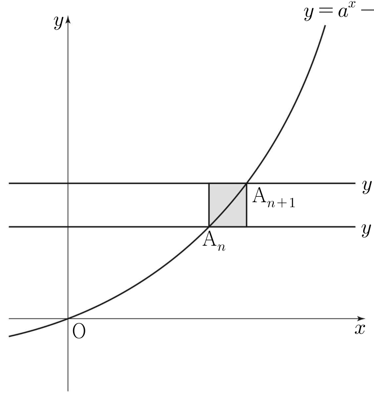
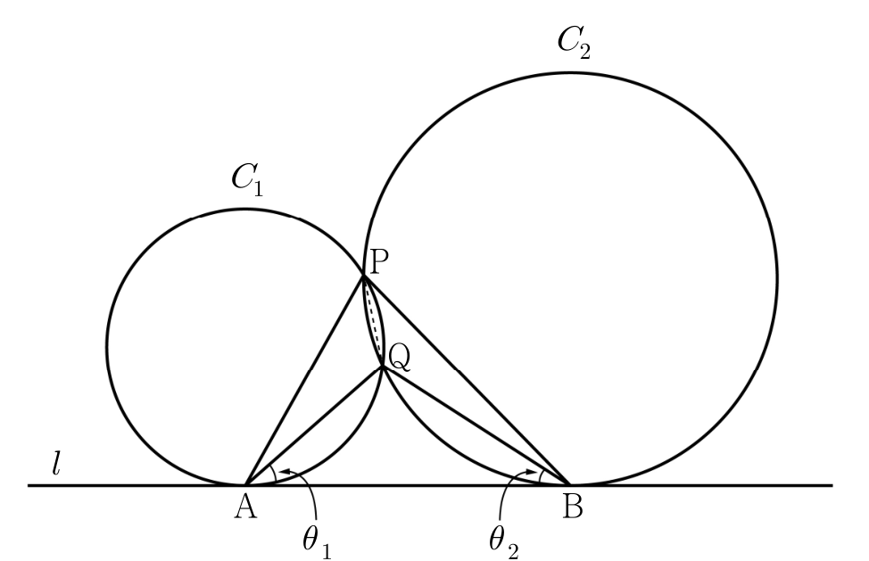

생성기 숫자판 1/6 · G2M1-05#20첫째항이 $21$인 등차수열 $\left\{a_{n}\right\}$에 대하여 수열 $\left\{b_{n}\right\}$을 $b_{n}=a_{n}+a_{n+1}$이라 할 때, $a_{7}=b_{7}$이면 $b_{5}$의 값으로 옳은 것을 고르세요.
① $15$② $17$③ $19$④ $21$⑤ $23$
정답① $15$ $a_{7}=a_{7}+a_{8}$이므로 $a_{8}=0$ 공차를 $d$라 하면 $21+7d=0$, $d=-3$ $b_{5}=a_{5}+a_{6}=9+6=15$
생성기 숫자판 2/6 · G2M1-05#20첫째항이 $30$인 등차수열 $\left\{a_{n}\right\}$에 대하여 수열 $\left\{b_{n}\right\}$을 $b_{n}=a_{n}+a_{n+1}$이라 할 때, $a_{10}=b_{10}$이면 $b_{3}$의 값으로 옳은 것을 고르세요.
① $41$② $43$③ $45$④ $47$⑤ $49$
정답③ $45$ $a_{10}=a_{10}+a_{11}$이므로 $a_{11}=0$ 공차를 $d$라 하면 $30+10d=0$, $d=-3$ $b_{3}=a_{3}+a_{4}=24+21=45$
생성기 숫자판 3/6 · G2M1-05#20첫째항이 $12$인 등차수열 $\left\{a_{n}\right\}$에 대하여 수열 $\left\{b_{n}\right\}$을 $b_{n}=a_{n}+a_{n+1}$이라 할 때, $a_{6}=b_{6}$이면 $b_{5}$의 값으로 옳은 것을 고르세요.
① $-2$② $0$③ $2$④ $4$⑤ $6$
정답⑤ $6$ $a_{6}=a_{6}+a_{7}$이므로 $a_{7}=0$ 공차를 $d$라 하면 $12+6d=0$, $d=-2$ $b_{5}=a_{5}+a_{6}=4+2=6$
생성기 숫자판 4/6 · G2M1-05#20첫째항이 $10$인 등차수열 $\left\{a_{n}\right\}$에 대하여 수열 $\left\{b_{n}\right\}$을 $b_{n}=a_{n}+a_{n+1}$이라 할 때, $a_{5}=b_{5}$이면 $b_{3}$의 값으로 옳은 것을 고르세요.
① $2$② $4$③ $6$④ $8$⑤ $10$
정답⑤ $10$ $a_{5}=a_{5}+a_{6}$이므로 $a_{6}=0$ 공차를 $d$라 하면 $10+5d=0$, $d=-2$ $b_{3}=a_{3}+a_{4}=6+4=10$
생성기 숫자판 5/6 · G2M1-05#20첫째항이 $14$인 등차수열 $\left\{a_{n}\right\}$에 대하여 수열 $\left\{b_{n}\right\}$을 $b_{n}=a_{n}+a_{n+1}$이라 할 때, $a_{7}=b_{7}$이면 $b_{5}$의 값으로 옳은 것을 고르세요.
① $4$② $6$③ $8$④ $10$⑤ $12$
정답④ $10$ $a_{7}=a_{7}+a_{8}$이므로 $a_{8}=0$ 공차를 $d$라 하면 $14+7d=0$, $d=-2$ $b_{5}=a_{5}+a_{6}=6+4=10$
생성기 숫자판 6/6 · G2M1-05#20첫째항이 $24$인 등차수열 $\left\{a_{n}\right\}$에 대하여 수열 $\left\{b_{n}\right\}$을 $b_{n}=a_{n}+a_{n+1}$이라 할 때, $a_{12}=b_{12}$이면 $b_{6}$의 값으로 옳은 것을 고르세요.
① $24$② $26$③ $28$④ $30$⑤ $32$
정답② $26$ $a_{12}=a_{12}+a_{13}$이므로 $a_{13}=0$ 공차를 $d$라 하면 $24+12d=0$, $d=-2$ $b_{6}=a_{6}+a_{7}=14+12=26$
원본 (내부용)다음은 모든 자연수 $n$에 대하여 $\sum_{k=1}^{n} k \{ k+(k+1)+(k+2)+ \cdots +n \}$ $= \frac{n(n+1)(n+2)(3n+1)}{24}$ …… (*) 이 성립함을 수학적 귀납법으로 증명하는 과정이다. (ⅰ) $n=1$일 때, $(좌변)=(우변)=\boxed{ (가) }$이므로 (*)이 성립한다. (ⅱ) $n=m$일 때, (*)이 성립한다고 가정하면 $\sum_{k=1}^{m} k \{ k+(k+1)+(k+2)+ \cdots +m \}$ $= \frac{m(m+1)(m+2)(3m+1)}{24}$ 이다. $n=m+1$일 때, (*)이 성립함을 보이자. $\sum_{k=1}^{m+1} k \{ k+(k+1)+(k+2)+ \cdots +(m+1) \}$ $= \sum_{k=1}^{m} k \{ k+(k+1)+(k+2)+ \cdots +(m+1) \} + {\boxed{ ( 나 ) }}$ $= {\boxed{ (다) }} + \frac{m(m+1)^{2}}{2} + {\boxed{ ( 나 ) }}$ $= \frac{(m+1)(m+2)(m+3)(3m+4)}{24}$ 따라서 $n=m+1$일 때도 성립한다. (ⅰ), (ⅱ)에 의하여 모든 자연수 $n$에 대하여 (*)이 성립한다. 위의 (가)에 알맞은 수를 $a$, (나), (다)에 알맞은 식을 각각 $f(m)$, $g(m)$이라 할 때, $a+f(2)+g(3)$의 값은? [4점]
① $35$② $36$③ $37$④ $38$⑤ $39$
원본 정답 ①
원본 풀이 (내부용)[출제의도] 수학적 귀납법을 이용하여 주어진 명제를 증명한다.
(i) \(n=1\)일 때,
\(
\text{(좌변)}=1\times1=1,\qquad
\text{(우변)}=\frac{1\times2\times3\times4}{24}=1.
\)
그러므로 (좌변)=(우변)=1이므로 (*)이 성립한다.
(ii) \(n=m\)일 때 (*)이 성립한다고 가정하면
\(
\sum_{k=1}^{m}k\{k(k+1)+(k+2)+\cdots+m\}
=\frac{m(m+1)(m+2)(3m+1)}{24}
\)
이다. \(n=m+1\)일 때 (*)이 성립함을 보이자.
\(
\begin{aligned}
&\sum_{k=1}^{m+1}k\{k(k+1)+(k+2)+\cdots+(m+1)\}\\
={}&\sum_{k=1}^{m}k\{k(k+1)+(k+2)+\cdots+(m+1)\}+(m+1)^2\\
={}&\sum_{k=1}^{m}k\{k(k+1)+(k+2)+\cdots+m\}\\
&\quad +(m+1)\sum_{k=1}^{m}k+(m+1)^2\\
={}&\frac{m(m+1)(m+2)(3m+1)}{24}
+\frac{m(m+1)^2}{2}+(m+1)^2\\
={}&\frac{(m+1)(m+2)(m+3)(3m+4)}{24}.
\end{aligned}
\)
따라서 \(n=m+1\)일 때도 성립한다. (i), (ii)에서 모든 자연수 \(n\)에 대하여 (*)이 성립한다. 따라서 \(a=1\).
\(
f(m)=(m+1)^2,\qquad
g(m)=\frac{m(m+1)(m+2)(3m+1)}{24}
\)
이므로
\(
\begin{aligned}
a+f(2)+g(3)
&=1+(2+1)^2+\frac{3(3+1)(3+2)(3\times3+1)}{24}\\
&=1+9+25=35.
\end{aligned}
\)
쌍둥이 1/5 · 4점 쌍둥이모든 자연수 n에 대하여 $W_n=\sum_{k=1}^n(k^2+k)\{k+(k+1)+\cdots+n\}$이다. 귀납법에서 $q=W_1$, $f(m)=(1(m+1)^2+1(m+1))(m+1)$, $g(m)=(m+1)\sum_{k=1}^m(k^2+k)$라 할 때, $q+f(2)+g(3)$의 값을 구하시오.
① $116$② $117$③ $118$④ $119$⑤ $120$
정답③ $118$ 기초 단계에서 $q=W_1=2$이다. 합의 순서를 바꾸면 $W_n=\sum_{j=1}^n j\sum_{k=1}^j(1k^2+1k)$가 된다. 제곱합과 자연수의 합 공식을 쓰면 $\sum k^2=m(m+1)(2m+1)/6$, $\sum k=m(m+1)/2$이다. 새로 더하는 마지막 항은 $f(m)=(1(m+1)^2+1(m+1))(m+1)$이다. $q+f(2)+g(3)=2+36+80=118$
쌍둥이 2/5 · 4점 쌍둥이모든 자연수 n에 대하여 $W_n=\sum_{k=1}^n(k^2)\{k+(k+1)+\cdots+n\}$이다. 귀납법에서 $q=W_1$, $f(m)=(1(m+1)^2+0(m+1))(m+1)$, $g(m)=(m+1)\sum_{k=1}^m(k^2)$라 할 때, $q+f(2)+g(3)$의 값을 구하시오.
① $82$② $83$③ $84$④ $85$⑤ $86$
정답③ $84$ 기초 단계에서 $q=W_1=1$이다. 합의 순서를 바꾸면 $W_n=\sum_{j=1}^n j\sum_{k=1}^j(1k^2+0k)$가 된다. 제곱합과 자연수의 합 공식을 쓰면 $\sum k^2=m(m+1)(2m+1)/6$, $\sum k=m(m+1)/2$이다. 새로 더하는 마지막 항은 $f(m)=(1(m+1)^2+0(m+1))(m+1)$이다. $q+f(2)+g(3)=1+27+56=84$
쌍둥이 3/5 · 4점 쌍둥이모든 자연수 n에 대하여 $W_n=\sum_{k=1}^n(k^2+2k)\{k+(k+1)+\cdots+n\}$이다. 귀납법에서 $q=W_1$, $f(m)=(1(m+1)^2+2(m+1))(m+1)$, $g(m)=(m+1)\sum_{k=1}^m(k^2+2k)$라 할 때, $q+f(3)+g(2)$의 값을 구하시오.
① $130$② $131$③ $132$④ $133$⑤ $134$
정답③ $132$ 기초 단계에서 $q=W_1=3$이다. 합의 순서를 바꾸면 $W_n=\sum_{j=1}^n j\sum_{k=1}^j(1k^2+2k)$가 된다. 제곱합과 자연수의 합 공식을 쓰면 $\sum k^2=m(m+1)(2m+1)/6$, $\sum k=m(m+1)/2$이다. 새로 더하는 마지막 항은 $f(m)=(1(m+1)^2+2(m+1))(m+1)$이다. $q+f(3)+g(2)=3+96+33=132$
쌍둥이 4/5 · 4점 쌍둥이모든 자연수 n에 대하여 $W_n=\sum_{k=1}^n(2k^2+k)\{k+(k+1)+\cdots+n\}$이다. 귀납법에서 $q=W_1$, $f(m)=(2(m+1)^2+1(m+1))(m+1)$, $g(m)=(m+1)\sum_{k=1}^m(2k^2+k)$라 할 때, $q+f(2)+g(3)$의 값을 구하시오.
① $200$② $201$③ $202$④ $203$⑤ $204$
정답③ $202$ 기초 단계에서 $q=W_1=3$이다. 합의 순서를 바꾸면 $W_n=\sum_{j=1}^n j\sum_{k=1}^j(2k^2+1k)$가 된다. 제곱합과 자연수의 합 공식을 쓰면 $\sum k^2=m(m+1)(2m+1)/6$, $\sum k=m(m+1)/2$이다. 새로 더하는 마지막 항은 $f(m)=(2(m+1)^2+1(m+1))(m+1)$이다. $q+f(2)+g(3)=3+63+136=202$
쌍둥이 5/5 · 4점 쌍둥이모든 자연수 n에 대하여 $W_n=\sum_{k=1}^n(2k^2+2k)\{k+(k+1)+\cdots+n\}$이다. 귀납법에서 $q=W_1$, $f(m)=(2(m+1)^2+2(m+1))(m+1)$, $g(m)=(m+1)\sum_{k=1}^m(2k^2+2k)$라 할 때, $q+f(3)+g(2)$의 값을 구하시오.
① $210$② $211$③ $212$④ $213$⑤ $214$
정답③ $212$ 기초 단계에서 $q=W_1=4$이다. 합의 순서를 바꾸면 $W_n=\sum_{j=1}^n j\sum_{k=1}^j(2k^2+2k)$가 된다. 제곱합과 자연수의 합 공식을 쓰면 $\sum k^2=m(m+1)(2m+1)/6$, $\sum k=m(m+1)/2$이다. 새로 더하는 마지막 항은 $f(m)=(2(m+1)^2+2(m+1))(m+1)$이다. $q+f(3)+g(2)=4+160+48=212$
생성기 숫자판 5/6 · G2M1-05#5첫째항이 $3$이고 공비가 $2$인 등비수열 $\left\{a_{n}\right\}$에 대하여 $a_{7}$의 값을 구하세요.
정답$192$ $a_{7}=3\times 2^{6}$ $=192$
숫자: 원본 1 2 2 6 → 쌍둥이 3 2 7 · 같은 수: 2
생성기 숫자판 6/6 · G2M1-05#5첫째항이 $\frac{3}{2}$이고 공비가 $2$인 등비수열 $\left\{a_{n}\right\}$에 대하여 $a_{7}$의 값을 구하세요.
정답$96$ $a_{7}=\frac{3}{2}\times 2^{6}$ $=96$
숫자: 원본 1 2 2 6 → 쌍둥이 3 2 2 7 · 같은 수: 2
4. 2018년 3월 가형 30번 · 4점 · 수학Ⅰ 수열 · 4점 쌍둥이
원본 (내부용)공차가 양수인 등차수열 $\{a_{n} \}$이 다음 조건을 만족시킨다. (가) 수열 $\{a_{n} \}$의 모든 항은 정수이다. (나)$a_{7}$, $a_{8}$, $a_{k}$가 이 순서대로 등비수열을 이루도록 하는 $8$보다 큰 자연수 $k$가 존재한다. $a_{k} =144$가 되도록 하는 모든 $k$의 값의 합을 구하시오. [4점] ※확인 사항 ◦답안지의 해당란에 필요한 내용을 정확히 기입(표기)했는지 확인하시오.
원본 정답 67
원본 풀이 (내부용)[출제의도] 등차수열과 등비수열의 성질을 활용하여 수열의 합을 구한다.
\(a_7,\ a_8,\ a_k\)가 이 순서대로 등비수열을 이루므로 이 수열의 공비를 \(r\)라 하면
\(
a_8=a_7r,\qquad a_k=a_7r^2\qquad\cdots\cdots\text{①}
\)
등차수열 \(\{a_n\}\)의 공차를 \(d\)라 하면 조건 (가)에서
\(
a_n=a_1+(n-1)d\quad(a_1\text{은 정수},\ d\text{는 자연수})
\)
이므로
\(
a_8-a_7=d,\qquad a_k-a_8=(k-8)d.
\)
①식에 대입하면
\(
a_7(r-1)=d,\qquad a_7r(r-1)=(k-8)d.
\)
위 식으로부터 \(dr=(k-8)d\). \(d\ne0\)이므로
\(
r=k-8\qquad\cdots\cdots\text{②}
\)
②를 ①에 대입하면
\(
a_k=a_7(k-8)^2,\qquad a_k=144=12^2.
\)
따라서
\(
a_7(k-8)^2=12^2.
\)
조건 (가)에서 \(k-8\)과 \(a_7\)은 정수이므로 \(a_7\)은 완전제곱수이다. 따라서 \(a_7\)은 12의 약수의 제곱인
\(
1^2,\ 2^2,\ 3^2,\ 4^2,\ 6^2,\ 12^2
\)
중 하나이다.
(i) \(a_7=1\)일 때
\(
(k-8)^2=12^2
\)
이므로 \(k=20\;(k>8)\).
(ii) \(a_7=2^2\)일 때
\(
(k-8)^2=6^2
\)
이므로 \(k=14\;(k>8)\).
(iii) \(a_7=3^2\)일 때
\(
(k-8)^2=4^2
\)
이므로 \(k=12\;(k>8)\).
(iv) \(a_7=4^2\)일 때
\(
(k-8)^2=3^2
\)
이므로 \(k=11\;(k>8)\).
(v) \(a_7=6^2\)일 때
\(
(k-8)^2=2^2
\)
이므로 \(k=10\;(k>8)\).
(vi) \(a_7=12^2\)일 때
\(
(k-8)^2=1
\)
이므로 \(k=9\;(k>8)\). 그런데 \(k=9\)이면 ②에서 \(r=1\)이므로 수열 \(\{a_n\}\)의 공차가 0이다. 따라서 \(k\ne9\).
(i)~(vi)에서 구하는 모든 \(k\)의 값의 합은
\(
20+14+12+11+10=67.
\)
쌍둥이 1/5 · 4점 쌍둥이공차가 양수인 등차수열 $\{a_{n}\}$이 다음 조건을 만족시킵니다. (가) 수열 $\{a_{n}\}$의 모든 항은 정수입니다. (나) $a_{6}$, $a_{7}$, $a_{k}$가 이 순서대로 등비수열을 이루도록 하는 $7$보다 큰 자연수 $k$가 존재합니다. $a_{k}=180$이 되도록 하는 모든 $k$의 값의 합을 구하세요.
쌍둥이 2/5 · 4점 쌍둥이공차가 양수인 등차수열 $\{a_{n}\}$이 다음 조건을 만족시킵니다. (가) 수열 $\{a_{n}\}$의 모든 항은 정수입니다. (나) $a_{5}$, $a_{6}$, $a_{k}$가 이 순서대로 등비수열을 이루도록 하는 $6$보다 큰 자연수 $k$가 존재합니다. $a_{k}=400$이 되도록 하는 모든 $k$의 값의 합을 구하세요.
쌍둥이 3/5 · 4점 쌍둥이공차가 양수인 등차수열 $\{a_{n}\}$이 다음 조건을 만족시킵니다. (가) 수열 $\{a_{n}\}$의 모든 항은 정수입니다. (나) $a_{3}$, $a_{4}$, $a_{k}$가 이 순서대로 등비수열을 이루도록 하는 $4$보다 큰 자연수 $k$가 존재합니다. $a_{k}=324$가 되도록 하는 모든 $k$의 값의 합을 구하세요.
쌍둥이 4/5 · 4점 쌍둥이공차가 양수이고 모든 항이 0이 아닌 정수인 등차수열에서 $a_5,a_6,a_k$ ($k>6$)가 이 순서대로 등비수열을 이룬다. $a_k=900$이 되도록 하는 모든 $k$의 개수를 구하시오.
정답$6$ $p=a_5$, $d$를 공차라 하면 $a_6=p+d$, $a_k=p+(k-5)d$. 등비 조건으로 $(p+d)^2=p[p+(k-5)d]$이므로 $k-7=d/p$. $r=k-7$은 양의 정수이고 $a_k=p(r+1)^2=900$. 따라서 $(r+1)^2$은 900의 제곱 약수여서 $r=1,2,4,5,9,14,29$. $r=1$이면 $a_4=0$이므로 제외한다. 남은 여섯 값에 대응하는 $k$의 개수는 6.
숫자: 원본 7 8 8 144 → 쌍둥이 0 5 6 6 900
쌍둥이 5/5 · 4점 쌍둥이공차가 양수이고 모든 항이 0이 아닌 정수인 등차수열에서 $a_5,a_6,a_k$ ($k>6$)가 이 순서대로 등비수열을 이룬다. $a_k=2025$가 되도록 하는 모든 $k$의 최댓값을 구하시오.
정답$51$ $p=a_5$, 공차 $d>0$라 하면 등비 조건으로 $k-7=d/p=r$이고 $a_k=p(r+1)^2$. $(r+1)^2$은 2025의 제곱 약수이므로 가능한 양의 $r$은 $2,4,8,14,44$이다. 이들 중 $k=7+r$이 되며, 최댓값은 $7+44=51$. 최댓값은 $k=7+44=51$.
원본 (내부용)다음은 모든 자연수 $n$에 대하여 $\sum_{k=1}^{n} k \{ k+(k+1)+(k+2)+ \cdots +n \}$ $= \frac{n(n+1)(n+2)(3n+1)}{24}$ $\cdots \cdots$(*) 이 성립함을 수학적 귀납법으로 증명하는 과정이다. (ⅰ) $n=1$일 때, $(좌변)=1$, $(우변)=1$이므로 (*)이 성립한다. (ⅱ) $n=m$일 때, (*)이 성립한다고 가정하면 $\sum_{k=1}^{m} k \{ k+(k+1)+(k+2)+ \cdots +m \}$ $= \frac{m(m+1)(m+2)(3m+1)}{24}$ 이다. $n=m+1$일 때, (*)이 성립함을 보이자. $\sum_{k=1}^{m+1} k \{ k+(k+1)+(k+2)+ \cdots +m+(m+1) \}$ $= \sum_k=1^m k \{k+(k+1)+(k+2)+\cdots +m+(m+1) \} +{\boxed{ ( 가 ) }}$ $=\sum_{k=1}^{m} k \{ k+(k+1)+(k+2)+ \cdots +m \} +{\boxed{ ( 나 ) }} +{\boxed{ ( 가 ) }}$ $=\frac{(m+1)(m+2)(m+3)(3m+4)}{24}$ 따라서 $n=m+1$일 때도 성립한다. (ⅰ), (ⅱ)에 의하여 모든 자연수 $n$에 대하여 (*)이 성립한다. 위의 (가), (나)에 알맞은 식을 각각 $f(m)$, $g(m)$이라 할 때, $f(4)+g(2)$의 값은? [4점]
① $34$② $36$③ $38$④ $40$⑤ $42$
원본 정답 ①
원본 풀이 (내부용)[출제의도] 수학적 귀납법을 이용하여 명제를 증명한다.
(i) \(n=1\)일 때,
(좌변)\(=1\), (우변)\(=1\)이므로 (*)이 성립한다.
(ii) \(n=m\)일 때 (*)이 성립한다고 가정하면
\(
\sum_{k=1}^{m}\{k(k+(k+1)+\cdots+m)\}
=\frac{m(m+1)(m+2)(3m+1)}{24}
\)
이므로
\(
\begin{aligned}
&\sum_{k=1}^{m+1}\{k(k+(k+1)+\cdots+(m+1))\}\\
={}&\sum_{k=1}^{m}\{k(k+(k+1)+\cdots+m)\}\\
&+\sum_{k=1}^{m}k(m+1)+(m+1)^2\\
={}&\frac{m(m+1)(m+2)(3m+1)}{24}
+\frac{m(m+1)^2}{2}+(m+1)^2\\
={}&\frac{m(m+1)(m+2)(3m+1)}{24}
+\frac{(m+1)^2(m+2)}{2}\\
={}&\frac{(m+1)(m+2)\{m(3m+1)+12(m+1)\}}{24}\\
={}&\frac{(m+1)(m+2)(3m^2+13m+12)}{24}\\
={}&\frac{(m+1)(m+2)(m+3)(m+4)}{24}\\
={}&\frac{(m+1)\{(m+1)+1\}\{(m+1)+2\}\{3(m+1)+1\}}{24}
\end{aligned}
\)
따라서 \(n=m+1\)일 때도 (*)이 성립한다.
(i), (ii)에 의하여 모든 자연수 \(n\)에 대하여 (*)이 성립한다.
\(
f(m)=(m+1)^2,\qquad
g(m)=\frac{m(m+1)^2}{2}
\)
이므로
\(
f(4)=(4+1)^2=25
\)
\(
g(2)=\frac{2(2+1)^2}{2}=9
\)
따라서
\(
f(4)+g(2)=25+9=34
\)
쌍둥이 1/5 · 4점 쌍둥이모든 자연수 $n$에 대하여 $W_n=\sum_{k=1}^n(3k+5)\{k+(k+1)+\cdots+n\}$이다. 귀납법에서 $n=1$일 때 $W_1=8$이고, $n=m$일 때 성립한다고 가정한다. $W_{m+1}=\sum_{k=1}^m(3k+5)\{k+\cdots+m+(m+1)\}+(3(m+1)+5)(m+1)=W_m+g(m)+f(m)$이다. $f(m)$은 마지막 항, $g(m)$은 합의 증가분이라 할 때 $f(3)+g(2)$를 구하시오.
정답$125$ 새 마지막 항은 $f(m)=(3(m+1)+5)(m+1)$이므로 $f(3)=68$. 각 $k$의 합 안에 $m+1$이 한 번씩 더해져 $g(m)=(m+1)\sum_{k=1}^m(3k+5)$. 따라서 $g(2)=57$. 그러므로 $f(3)+g(2)=68+57=125$.
쌍둥이 2/5 · 4점 쌍둥이모든 자연수 $n$에 대하여 $W_n=\sum_{k=1}^n(4k+1)\{k+(k+1)+\cdots+n\}$라 하자. 귀납법의 한 단계에서 $W_{m+1}=\sum_{k=1}^m(4k+1)\{k+\cdots+m+(m+1)\}+\boxed{(가)}=W_m+\boxed{(나)}+\boxed{(가)}$로 쓴다. $(가)$를 $f(m)$, $(나)$를 $g(m)$이라 할 때, $f(2)+g(3)$을 구하시오.
정답$147$ 마지막 항은 $f(m)=(4(m+1)+1)(m+1)$이다. 각 안쪽 합에 $m+1$이 한 번씩 추가되므로 $g(m)=(m+1)\sum_{k=1}^m(4k+1)$이다. $f(2)=13\cdot3=39$, $g(3)=4(4\cdot6+3)=108$이므로 합은 $39+108=147$이다.
쌍둥이 3/5 · 4점 쌍둥이모든 자연수 $n$에 대하여 $W_n=\sum_{k=1}^n(5k+2)\{k+(k+1)+\cdots+n\}$라 하자. 귀납법의 한 단계에서 $W_{m+1}=\sum_{k=1}^m(5k+2)\{k+\cdots+m+(m+1)\}+\boxed{(가)}=W_m+\boxed{(나)}+\boxed{(가)}$로 쓴다. $(가)$를 $f(m)$, $(나)$를 $g(m)$이라 할 때, $f(2)+g(3)$을 구하시오.
정답$195$ 마지막 항은 $f(m)=(5(m+1)+2)(m+1)$이다. 각 안쪽 합에 $m+1$이 한 번씩 추가되므로 $g(m)=(m+1)\sum_{k=1}^m(5k+2)$이다. $f(2)=17\cdot3=51$, $g(3)=4(5\cdot6+2\cdot3)=144$이므로 합은 $51+144=195$이다.
쌍둥이 4/5 · 4점 쌍둥이모든 자연수 $n$에 대하여 $W_n=\sum_{k=1}^n(7k+4)\{k+(k+1)+\cdots+n\}$라 하자. 귀납법의 한 단계에서 $W_{m+1}=\sum_{k=1}^m(7k+4)\{k+\cdots+m+(m+1)\}+\boxed{(가)}=W_m+\boxed{(나)}+\boxed{(가)}$로 쓴다. $(가)$를 $f(m)$, $(나)$를 $g(m)$이라 할 때, $f(3)+g(2)$를 구하시오.
정답$215$ 마지막 항은 $f(m)=(7(m+1)+4)(m+1)$이다. 각 안쪽 합에 $m+1$이 한 번씩 추가되므로 $g(m)=(m+1)\sum_{k=1}^m(7k+4)$이다. $f(3)=32\cdot4=128$, $g(2)=3(7\cdot3+4\cdot2)=87$이므로 합은 $128+87=215$이다.
쌍둥이 5/5 · 4점 쌍둥이모든 자연수 $n$에 대하여 $W_n=\sum_{k=1}^n(9k+5)\{k+(k+1)+\cdots+n\}$이다. 귀납법에서 $(가)$는 새 마지막 항, $(나)$는 기존 항들의 증가분이라 하자. $W_{m+1}=W_m+g(m)+f(m)$일 때, $f(4)+g(2)$를 구하시오.
정답$361$ $f(m)=(9(m+1)+5)(m+1)$이므로 $f(4)=50\cdot5=250$이다. $g(m)=(m+1)\sum_{k=1}^m(9k+5)$이므로 $g(2)=3(9\cdot3+5\cdot2)=111$이다. 따라서 $f(4)+g(2)=250+111=361$이다.
원본 (내부용)$a_{3} =3$인 수열 $\{ a_{n} \}$이 모든 자연수 $n$에 대하여 $a_{n+1} = \begin{cases}\frac{a_{n} +3}{2} & (a_{n} 이 홀수인경우) \\ \frac{a_{n}}{2} & (a_{n} 이 짝수인경우)\end{cases}$ 이다. $a_1 \ge 10$일 때, $\sum_{k=1}^{5} a_{k}$의 값을 구하시오. [4점]
원본 정답 27
원본 풀이 (내부용)[출제의도] 수열의 귀납적 정의를 이용하여 수열의 항의 값을 추론한다.
\(
a_3=3\text{이면 }a_2=3\text{ 또는 }a_2=6\text{이다.}
\)
\(
a_2=3\text{이면 }a_1=3\text{ 또는 }a_1=6\text{이고,}
\)
\(
a_2=6\text{이면 }a_1=9\text{ 또는 }a_1=12\text{이다.}
\)
\(a_1\geq10\)이므로 \(a_1=12\).
\(
a_2=\frac{12}{2}=6
\)
또, \(a_3=3\)이므로 \(a_4=a_5=3\)이다.
따라서
\(
\sum_{k=1}^{5}a_k=12+6+3+3+3=27
\)
쌍둥이 1/5 · 4점 쌍둥이$a_{3}=5$인 수열 $\left\{a_{n}\right\}$이 모든 자연수 $n$에 대하여 $a_{n+1}=\begin{cases}\frac{a_{n}+5}{2} & \left(a_{n}\text{이 홀수인 경우}\right)\\\frac{a_{n}}{2} & \left(a_{n}\text{이 짝수인 경우}\right)\end{cases}$입니다. $a_{1}\ge 16$일 때, $\sum_{k=1}^{5}a_{k}$의 값을 구하세요.
정답$45$ $a_{2}$가 홀수이면 $\frac{a_{2}+5}{2}=5$에서 $a_{2}=5$, 짝수이면 $\frac{a_{2}}{2}=5$에서 $a_{2}=10$ 같은 방법으로 $a_{2}=5$이면 $a_{1}=5$ 또는 $10$, $a_{2}=10$이면 $a_{1}=15$ 또는 $20$ $a_{1}\ge 16$이므로 $a_{1}=20$, $a_{2}=10$이고 $a_{4}=5$, $a_{5}=5$ $\sum_{k=1}^{5}a_{k}=20+10+5+5+5$ $=45$
원본 (내부용)모든 항이 $0$이 아닌 등차수열 $\{a_n \}$과 $1$보다 큰 자연수 $m$에 대하여 다항식 $P(x)=a_m+1 x^m +a_m x^m-1 +a_m-1 x^m-2 +\cdots +a_2 x +a_1$ 이 있다. $P(1)=5P(-1)$ 을 만족시키는 다항식 $P(x)$에서 자연수 $m$의 값을 $k$라 하자. 다항식 $a_k+1 x^k +a_k x^k-1 +\cdots +a_2 x +a_1$이 $x+2$로 나누어떨어질 때, $\frac{a_1}{a_k+1}$의 값을 구하시오. [4점] ※확인 사항 ◦답안지의 해당란에 필요한 내용을 정확히 기입(표기)했는지 확인하시오.
원본 정답 23
원본 풀이 (내부용)[출제의도] 다항식의 인수정리와 등차수열의 일반항을 이용하여 수열 문제를 해결한다.
등차수열 \(\{a_n\}\)의 첫째항을 \(a\), 공차를 \(d\)라 하자.
\(
P(x)=a_{m+1}x^m+a_mx^{m-1}+\cdots+a_2x+a_1
\)
에서
\(
P(1)=a_{m+1}+a_m+\cdots+a_2+a_1
\)
이는 등차수열 \(\{a_n\}\)의 첫째항부터 제 \((m+1)\)항까지의 합이므로
\(
P(1)=\frac{(m+1)(2a+md)}2
\)
\(
P(-1)=a_{m+1}+(-1)^m a_m+\cdots+a_2(-1)+a_1
\)
#### (i) \(m\)이 홀수일 때
\(
\begin{aligned}
P(-1)
&=-a_{m+1}+a_m-\cdots-a_2+a_1\\
&=-(a_{m+1}-a_m)-\cdots-(a_2-a_1)\\
&=-\frac{m+1}{2}d
\end{aligned}
\)
이므로 \(P(1)=5P(-1)\)에서
\(
\frac{(m+1)(2a+md)}2
=5\left(-\frac{m+1}{2}d\right)
\)
\(m+1\ne0\)이므로
\(
2a+md=-5d
\)
\(
a+\frac{m+5}{2}d=0
\)
\(m\)은 홀수이므로 \(\dfrac{m+5}{2}\)는 자연수이고
\(
a+\frac{m+5}{2}d
\)
는 수열 \(\{a_n\}\)의 제 \(\left(\frac{m+7}{2}\right)\)항이다.
이때
\(
a_{\frac{m+7}{2}}
=a+\left(\frac{m+7}{2}-1\right)d
=a+\frac{m+5}{2}d=0
\)
이 되어 수열 \(\{a_n\}\)의 모든 항이 0이 아니라는 조건에 모순이다.
따라서 \(P(1)=5P(-1)\)을 만족시키는 홀수 \(m\)은 존재하지 않는다.
#### (ii) \(m\)이 짝수일 때
\(
\begin{aligned}
P(-1)
&=a_{m+1}-a_m+\cdots-a_2+a_1\\
&=(a_{m+1}-a_m)+\cdots+(a_3-a_2)+a\\
&=a+\frac m2d\\
&=\frac{2a+md}{2}
\end{aligned}
\)
\(P(1)=5P(-1)\)에서
\(
\frac{(m+1)(2a+md)}2
=5\times\frac{2a+md}{2}
\quad\cdots(*)
\)
\(m\)은 짝수이므로 \(\dfrac m2\)는 자연수이고
\(
a+\frac m2d
\)
는 수열 \(\{a_n\}\)의 제 \(\left(\frac m2+1\right)\)항이다.
이때 수열 \(\{a_n\}\)의 모든 항이 0은 아니므로
\(
a_{\frac m2+1}=a+\frac m2d=\frac{2a+md}{2}\ne0
\)
(*)에서 \(m+1=5\)이므로 \(m=4\).
(i), (ii)에서 가능한 자연수 \(m\)은 4뿐이므로 \(k=4\)이다.
다항식
\(
a_5x^4+a_4x^3+a_3x^2+a_2x+a_1
\)
이 \(x+2\)로 나누어떨어지려면 인수정리에 의하여
\(
a_5(-2)^4+a_4(-2)^3+a_3(-2)^2+a_2(-2)+a_1=0
\)
\(
a_n=a+(n-1)d
\)
이므로
\(
\begin{aligned}
&(a+4d)(-2)^4+(a+3d)(-2)^3\\
&\qquad +(a+2d)(-2)^2+(a+d)(-2)+a=0
\end{aligned}
\)
\(
16(a+4d)-8(a+3d)+4(a+2d)-2(a+d)+a=0
\)
\(
11a+46d=0
\)
\(
d=-\frac{11}{46}a
\)
모든 자연수 \(n\)에 대하여 \(a_n\ne0\)이므로
\(
\begin{aligned}
\frac{a_1}{a_{k+1}}
&=\frac a{a_5}\\
&=\frac a{a+4d}\\
&=\frac a{a-\frac{22}{23}a}\\
&=23
\end{aligned}
\)
---
## 영어 영역
### 정답
| 번호 | 답 | 번호 | 답 | 번호 | 답 | 번호 | 답 | 번호 | 답 |
|---:|:---:|---:|:---:|---:|:---:|---:|:---:|---:|:---:|
| 1 | ④ | 2 | ④ | 3 | ③ | 4 | ⑤ | 5 | ① |
| 6 | ④ | 7 | ② | 8 | ① | 9 | ③ | 10 | ③ |
| 11 | ④ | 12 | ④ | 13 | ② | 14 | ③ | 15 | ② |
| 16 | ③ | 17 | ⑤ | 18 | ① | 19 | ② | 20 | ④ |
| 21 | ⑤ | 22 | ① | 23 | ③ | 24 | ④ | 25 | ⑤ |
| 26 | ④ | 27 | ④ | 28 | ⑤ | 29 | ③ | 30 | ⑤ |
| 31 | ③ | 32 | ③ | 33 | ② | 34 | ① | 35 | ③ |
| 36 | ② | 37 | ⑤ | 38 | ③ | 39 | ② | 40 | ① |
| 41 | ④ | 42 | ① | 43 | ② | 44 | ⑤ | 45 | ⑤ |
## 해설
쌍둥이 1/5 · 4점 쌍둥이모든 항이 0이 아닌 등차수열 $\{a_n\}$과 $m>1$에 대하여 $P(x)=a_{m+1}x^m+\cdots+a_1$라 하자. $P(1)=3P(-1)$을 만족하는 $m$을 $k$라 할 때, $a_{k+1}x^k+\cdots+a_1$이 $x+6$으로 나누어떨어지면 $a_1/a_{k+1}$의 값을 구하시오.
정답$16$ 첫째항을 $a$, 공차를 $d$라 하자. 짝수 $m$이면 $P(1)=(m+1)(a+md/2)$, $P(-1)=a+md/2\ne0$이므로 $m=2$. 홀수 $m$이면 조건에서 $a=-(m+3)d/2$가 되고 $a_n=(2n-m-5)d/2$. $m\ge3$일 때 $n=(m+5)/2$인 항이 0이 되어 불가능하므로 $k=2$. $x=-6$을 대입하면 $a_1(1-r+r^2)+d(-r+2r^2)=0$, 따라서 $a_1/a_3=16$.
쌍둥이 2/5 · 4점 쌍둥이모든 항이 $0$이 아닌 등차수열 $\{a_{n}\}$과 $1$보다 큰 자연수 $m$에 대하여 다항식 $P(x)=a_{m+1}x^{m}+a_{m}x^{m-1}+a_{m-1}x^{m-2}+\cdots+a_{2}x+a_{1}$이 있습니다. $P(1)=3P(-1)$을 만족시키는 다항식 $P(x)$에서 자연수 $m$의 값을 $k$라 합니다. 다항식 $a_{k+1}x^{k}+a_{k}x^{k-1}+\cdots+a_{2}x+a_{1}$이 $x+3$으로 나누어떨어질 때, $\frac{a_{1}}{a_{k+1}}$의 값을 구하세요.
정답$15$ 첫째항을 $a$, 공차를 $d$라 하면 $m$이 짝수일 때 $P(1)=(m+1)\left(a+\frac{m}{2}d\right)$, $P(-1)=a+\frac{m}{2}d=a_{\frac{m}{2}+1}\ne0$이므로 $m+1=3$, $m=2$ $m$이 홀수일 때 $P(-1)=-\frac{m+1}{2}d$, $P(1)=\frac{m+1}{2}(2a+md)$이므로 $a=-\frac{m+3}{2}d$이고 $a_{n}=\frac{2n-m-5}{2}d$입니다. $m\ge3$이면 $n=\frac{m+5}{2}\le m+1$인 항이 $0$이 되어 조건에 어긋납니다. 따라서 $k=2$ $x=-3$을 넣으면 $a_{1}\left(-3\right)^{0}+a_{2}\left(-3\right)^{1}+a_{3}\left(-3\right)^{2}=0$, 즉 $a+\left(-3\right)(a+1d)+9(a+2d)=0$이고 정리하면 $7a+15d=0$ $a=-\frac{15}{7}d$이므로 $a_{3}=a+2d=-\frac{1}{7}d$ $\frac{a_{1}}{a_{3}}=15$
쌍둥이 3/5 · 4점 쌍둥이모든 항이 $0$이 아닌 등차수열 $\{a_{n}\}$과 $1$보다 큰 자연수 $m$에 대하여 다항식 $P(x)=a_{m+1}x^{m}+a_{m}x^{m-1}+a_{m-1}x^{m-2}+\cdots+a_{2}x+a_{1}$이 있습니다. $P(1)=3P(-1)$을 만족시키는 다항식 $P(x)$에서 자연수 $m$의 값을 $k$라 합니다. 다항식 $a_{k+1}x^{k}+a_{k}x^{k-1}+\cdots+a_{2}x+a_{1}$이 $x+4$로 나누어떨어질 때, $\frac{a_{1}}{a_{k+1}}$의 값을 구하세요.
정답$14$ 첫째항을 $a$, 공차를 $d$라 하면 $m$이 짝수일 때 $P(1)=(m+1)\left(a+\frac{m}{2}d\right)$, $P(-1)=a+\frac{m}{2}d=a_{\frac{m}{2}+1}\ne0$이므로 $m+1=3$, $m=2$ $m$이 홀수일 때 $P(-1)=-\frac{m+1}{2}d$, $P(1)=\frac{m+1}{2}(2a+md)$이므로 $a=-\frac{m+3}{2}d$이고 $a_{n}=\frac{2n-m-5}{2}d$입니다. $m\ge3$이면 $n=\frac{m+5}{2}\le m+1$인 항이 $0$이 되어 조건에 어긋납니다. 따라서 $k=2$ $x=-4$를 넣으면 $a_{1}\left(-4\right)^{0}+a_{2}\left(-4\right)^{1}+a_{3}\left(-4\right)^{2}=0$, 즉 $a+\left(-4\right)(a+1d)+16(a+2d)=0$이고 정리하면 $13a+28d=0$ $a=-\frac{28}{13}d$이므로 $a_{3}=a+2d=-\frac{2}{13}d$ $\frac{a_{1}}{a_{3}}=14$
쌍둥이 4/5 · 4점 쌍둥이모든 항이 $0$이 아닌 등차수열 $\{a_{n}\}$과 $1$보다 큰 자연수 $m$에 대하여 다항식 $P(x)=a_{m+1}x^{m}+a_{m}x^{m-1}+a_{m-1}x^{m-2}+\cdots+a_{2}x+a_{1}$이 있습니다. $P(1)=3P(-1)$을 만족시키는 다항식 $P(x)$에서 자연수 $m$의 값을 $k$라 합니다. 다항식 $a_{k+1}x^{k}+a_{k}x^{k-1}+\cdots+a_{2}x+a_{1}$이 $x+5$로 나누어떨어질 때, $\frac{a_{1}}{a_{k+1}}$의 값을 구하세요.
정답$15$ 첫째항을 $a$, 공차를 $d$라 하면 $m$이 짝수일 때 $P(1)=(m+1)\left(a+\frac{m}{2}d\right)$, $P(-1)=a+\frac{m}{2}d=a_{\frac{m}{2}+1}\ne0$이므로 $m+1=3$, $m=2$ $m$이 홀수일 때 $P(-1)=-\frac{m+1}{2}d$, $P(1)=\frac{m+1}{2}(2a+md)$이므로 $a=-\frac{m+3}{2}d$이고 $a_{n}=\frac{2n-m-5}{2}d$입니다. $m\ge3$이면 $n=\frac{m+5}{2}\le m+1$인 항이 $0$이 되어 조건에 어긋납니다. 따라서 $k=2$ $x=-5$를 넣으면 $a_{1}\left(-5\right)^{0}+a_{2}\left(-5\right)^{1}+a_{3}\left(-5\right)^{2}=0$, 즉 $a+\left(-5\right)(a+1d)+25(a+2d)=0$이고 정리하면 $21a+45d=0$ $a=-\frac{15}{7}d$이므로 $a_{3}=a+2d=-\frac{1}{7}d$ $\frac{a_{1}}{a_{3}}=15$
쌍둥이 5/5 · 4점 쌍둥이모든 항이 0이 아닌 등차수열 $\{a_n\}$과 $m>1$에 대하여 $P(x)=a_{m+1}x^m+\cdots+a_1$라 하자. $P(1)=3P(-1)$을 만족하는 $m$을 $k$라 할 때, $a_{k+1}x^k+\cdots+a_1$이 $x+5$로 나누어떨어지면 $a_1/a_{k+1}$의 값을 구하시오.
정답$15$ 첫째항을 $a$, 공차를 $d$라 하자. 짝수 $m$이면 $P(1)=(m+1)(a+md/2)$, $P(-1)=a+md/2\ne0$이므로 $m=2$. 홀수 $m$이면 조건에서 $a=-(m+3)d/2$가 되고 $a_n=(2n-m-5)d/2$. $m\ge3$일 때 $n=(m+5)/2$인 항이 0이 되어 불가능하므로 $k=2$. $x=-5$를 대입하면 $a_1(1-r+r^2)+d(-r+2r^2)=0$, 따라서 $a_1/a_3=15$.
원본 풀이 (내부용)[출제의도] 여러 가지 수열의 합 이해하기
\(
\begin{aligned}
\sum_{k=1}^{10}(2a_k+b_k)
&=2\sum_{k=1}^{10}a_k+\sum_{k=1}^{10}b_k\\
&=2\times7+\sum_{k=1}^{10}b_k=38
\end{aligned}
\)
이므로
\(
\sum_{k=1}^{10}b_k=38-14=24
\)
이다.
생성기 숫자판 1/6 · G2M1-03#0$\sum_{k=1}^{8}a_{k}=8$, $\sum_{k=1}^{8}\left(2a_{k}+3b_{k}\right)=85$일 때, $\sum_{k=1}^{8}b_{k}$의 값으로 옳은 것을 고르세요.
① $19$② $20$③ $21$④ $22$⑤ $23$
정답⑤ $23$ $\sum_{k=1}^{8}\left(2a_{k}+3b_{k}\right)=2\sum_{k=1}^{8}a_{k}+3\sum_{k=1}^{8}b_{k}$ $=16+3\sum_{k=1}^{8}b_{k}=85$ 따라서 $\sum_{k=1}^{8}b_{k}=23$
생성기 숫자판 6/6 · G2M1-03#0$\sum_{k=1}^{8}a_{k}=5$, $\sum_{k=1}^{8}\left(3a_{k}+b_{k}\right)=34$일 때, $\sum_{k=1}^{8}b_{k}$의 값으로 옳은 것을 고르세요.
① $17$② $18$③ $19$④ $21$⑤ $23$
정답③ $19$ $\sum_{k=1}^{8}\left(3a_{k}+b_{k}\right)=3\sum_{k=1}^{8}a_{k}+\sum_{k=1}^{8}b_{k}$ $=15+\sum_{k=1}^{8}b_{k}=34$ 따라서 $\sum_{k=1}^{8}b_{k}=19$
숫자: 원본 1 7 1 2 38 1 → 쌍둥이 1 5 1 3 34 1 · 같은 수: 1
10. 2018년 6월 가형 15번 · 4점 · 수학Ⅰ 수열 · 4점 쌍둥이
원본 (내부용)수열 $\{ a_{n} \}$이 $\sum_{k=1}^{n} k a_{k} =n ( n+1 ) ( n+2 )$ 를 만족시킬 때, $\sum_{k=1}^{10} a_{k}$의 값은? [4점]
① $185$② $195$③ $205$④ $215$⑤ $225$
원본 정답 ②
원본 풀이 (내부용)[출제의도] 수열의 합과 일반항 사이의 관계를 이용하여 여러 가지 수열의 합 문제 해결하기
\(
\begin{aligned}
na_n
&=\sum_{k=1}^{n}2k-\sum_{k=1}^{n-1}2k\\
&=n(n+1)(n+2)-(n-1)n(n+1)\\
&=3n(n+1)\quad(n\ge2)
\end{aligned}
\)
\(
\therefore a_n=3(n+1)\quad(n\ge2)
\)
\(
\sum_{k=1}^{1}ka_k=a_1=1\times2\times3=6=3\times(1+1)
\)
이므로 모든 자연수 \(n\)에 대하여 \(a_n=3(n+1)\)이다.
\(
\therefore \sum_{k=1}^{10}3(k+1)
=3\left(\frac{10\times11}{2}+10\right)
=3\times65=195
\)
쌍둥이 1/5 · 4점 쌍둥이수열 $\left\{a_{n}\right\}$이 $\sum_{k=1}^{n}ka_{k}=n\left(n+1\right)\left(n+4\right)$를 만족시킬 때, $\sum_{k=1}^{6}a_{k}$의 값으로 옳은 것을 고르세요.
쌍둥이 4/5 · 4점 쌍둥이수열 $\{a_n\}$에 대하여 $\sum_{k=1}^n ka_k=n(n+1)(n+2)$가 모든 자연수 $n$에서 성립합니다. $\sum_{k=1}^{9}a_k$를 구하세요.
① $152$② $157$③ $162$④ $167$⑤ $172$
정답③ $162$ 두 부분합의 차를 취하면 $na_n=n(3n+22-1)$이므로 $a_n=3n+22-1$입니다. $\sum_{k=1}^{9}a_k=3\frac{9(9+1)}2+(22-1)9=162$입니다.
숫자: 원본 1 1 2 1 → 쌍둥이 1 1 2 1 · 같은 수: 1 2
쌍둥이 5/5 · 4점 쌍둥이수열 $\{a_n\}$에 대하여 $\sum_{k=1}^n ka_k=n(n+1)(n+5)$가 모든 자연수 $n$에서 성립합니다. $\sum_{k=1}^{10}a_k$를 구하세요.
① $245$② $250$③ $255$④ $260$⑤ $265$
정답③ $255$ 두 부분합의 차를 취하면 $na_n=n(3n+25-1)$이므로 $a_n=3n+25-1$입니다. $\sum_{k=1}^{10}a_k=3\frac{10(10+1)}2+(25-1)10=255$입니다.
숫자: 원본 1 1 2 1 → 쌍둥이 1 1 5 1 · 같은 수: 1
11. 2018년 6월 가형 17번 · 4점 · 수학Ⅰ 수열 · 4점 쌍둥이
원본 (내부용)$a_{1} =1$, $a_{2} = -1$, $a_{3} =4$인 수열 $\{ a_{n} \}$이 모든 자연수 $n$에 대하여 $n ( n-2 ) a_{n+1} = \sum_{i=1}^{n} a_{i}$ 를 만족시킨다. 다음은 $a_{n} = \frac{8}{ ( n-1 ) ( n-2 )}$ $( n \ge 3 )$ 임을 수학적 귀납법으로 증명한 것이다. <증명> (ⅰ) $n=3$일 때, $a_{3} =4= \frac{8}{ ( 3-1 ) ( 3-2 )}$이므로 성립한다. (ⅱ) $n=k$$( k \ge 3 )$일 때, 성립한다고 가정하면 $a_{k} = \frac{8}{ ( k-1 ) ( k-2 )}$ 이다. $k ( k-2 ) a_{k+1} = \sum_{i=1}^{k} a_{i} =a_{k} + \sum_{i=1}^{k-1} a_{i}$ $=a_{k} + ( k-1 ) ( k-3 ) a_{k}$ $=a_{k} \times {\boxed{^( 가 ) }}$ $= \frac{8}{ ( k-1 ) ( k-2 )} \times {\boxed{^( 가 ) }}$ $= \frac{{\boxed{^( 나 ) }}}{k-1}$ 이다. 그러므로 $a_{k+1} = \frac{1}{k ( k-2 )} \times \frac{{\boxed{^( 나 ) }}}{k-1} = \frac{8}{{\boxed{^( 다 ) }} }$ 이다. 따라서 $n=k+1$일 때 성립한다. (ⅰ), (ⅱ)에 의하여 $n \ge 3$인 모든 자연수 $n$에 대하여 $a_{n} = \frac{8}{ ( n-1 ) ( n-2 )}$이다. 위의 (가), (나), (다)에 알맞은 식을 각각 $f ( k )$, $g ( k )$, $h ( k )$라 할 때, $\frac{f ( 13 ) \times g ( 14 )}{h ( 12 )}$의 값은? [4점]
① $88$② $96$③ $104$④ $112$⑤ $120$
원본 정답 ①
원본 풀이 (내부용)[출제의도] 수학적 귀납법 증명하기
(i) \(n=3\)일 때
\(
a_3=4=\frac8{(3-1)(3-2)}
\)
이므로 성립한다.
(ii) \(n=k\ (k\ge3)\)일 때 성립한다고 가정하면
\(
a_k=\frac8{(k-1)(k-2)}
\)
이다.
\(
\begin{aligned}
k(k-2)a_{k+1}
&=\sum_{i=1}^{k}a_i
=a_k+\sum_{i=1}^{k-1}a_i\\
&=a_k+(k-1)(k-3)a_k\\
&=a_k(k-2)^2\\
&=\frac8{(k-1)(k-2)}\times(k-2)^2\\
&=\frac{8(k-2)}{k-1}
\end{aligned}
\)
이다. 그러므로
\(
a_{k+1}=\frac1{k(k-2)}\times\frac{8(k-2)}{k-1}
=\frac8{k(k-1)}
\)
이다. 따라서 \(n=k+1\)일 때 성립한다.
(i), (ii)에 의하여 \(n\ge3\)인 모든 자연수 \(n\)에 대하여
\(
a_n=\frac8{(n-1)(n-2)}
\)
이다.
위 과정에서
\(
f(k)=(k-2)^2,\quad g(8)=8(k-2),\quad h(k)=k(k-1)
\)
이므로
\(
\frac{f(13)\times g(14)}{h(12)}
=\frac{11^2\times8\times12}{12\times11}=88
\)
이다.
쌍둥이 1/5 · 4점 쌍둥이$a_{1}=2$, $a_{2}=-2$, $a_{3}=6$인 수열 $\{a_{n}\}$이 모든 자연수 $n$에 대하여 $n(n-2)a_{n+1}=\sum_{i=1}^{n}a_{i}$를 만족시킵니다. 다음은 $a_{n}=\frac{12}{(n-1)(n-2)}\ (n\ge3)$임을 수학적 귀납법으로 증명한 것입니다. (ⅰ) $n=3$일 때, $a_{3}=6=\frac{12}{(3-1)(3-2)}$이므로 성립합니다. (ⅱ) $n=k\ (k\ge3)$일 때 성립한다고 가정하면 $a_{k}=\frac{12}{(k-1)(k-2)}$입니다. $k(k-2)a_{k+1}=\sum_{i=1}^{k}a_{i}=a_{k}+\sum_{i=1}^{k-1}a_{i}=a_{k}+(k-1)(k-3)a_{k}=a_{k}\times\boxed{\text{(가)}}=\frac{12}{(k-1)(k-2)}\times\boxed{\text{(가)}}=\frac{\boxed{\text{(나)}}}{k-1}$이므로 $a_{k+1}=\frac{1}{k(k-2)}\times\frac{\boxed{\text{(나)}}}{k-1}=\frac{12}{\boxed{\text{(다)}}}$입니다. 따라서 $n=k+1$일 때도 성립합니다. (ⅰ), (ⅱ)에 의하여 $n\ge3$인 모든 자연수 $n$에 대하여 $a_{n}=\frac{12}{(n-1)(n-2)}$입니다. 위의 (가), (나), (다)에 알맞은 식을 각각 $f(k)$, $g(k)$, $h(k)$라 할 때, $\frac{f(8)\times g(11)}{h(9)}$의 값으로 옳은 것을 고르세요.
쌍둥이 2/5 · 4점 쌍둥이$a_{1}=2$, $a_{2}=-2$, $a_{3}=5$인 수열 $\{a_{n}\}$이 모든 자연수 $n$에 대하여 $n(n-2)a_{n+1}=\sum_{i=1}^{n}a_{i}$를 만족시킵니다. 다음은 $a_{n}=\frac{10}{(n-1)(n-2)}\ (n\ge3)$임을 수학적 귀납법으로 증명한 것입니다. (ⅰ) $n=3$일 때, $a_{3}=5=\frac{10}{(3-1)(3-2)}$이므로 성립합니다. (ⅱ) $n=k\ (k\ge3)$일 때 성립한다고 가정하면 $a_{k}=\frac{10}{(k-1)(k-2)}$입니다. $k(k-2)a_{k+1}=\sum_{i=1}^{k}a_{i}=a_{k}+\sum_{i=1}^{k-1}a_{i}=a_{k}+(k-1)(k-3)a_{k}=a_{k}\times\boxed{\text{(가)}}=\frac{10}{(k-1)(k-2)}\times\boxed{\text{(가)}}=\frac{\boxed{\text{(나)}}}{k-1}$이므로 $a_{k+1}=\frac{1}{k(k-2)}\times\frac{\boxed{\text{(나)}}}{k-1}=\frac{10}{\boxed{\text{(다)}}}$입니다. 따라서 $n=k+1$일 때도 성립합니다. (ⅰ), (ⅱ)에 의하여 $n\ge3$인 모든 자연수 $n$에 대하여 $a_{n}=\frac{10}{(n-1)(n-2)}$입니다. 위의 (가), (나), (다)에 알맞은 식을 각각 $f(k)$, $g(k)$, $h(k)$라 할 때, $\frac{f(12)\times g(8)}{h(16)}$의 값으로 옳은 것을 고르세요.
쌍둥이 3/5 · 4점 쌍둥이$a_{1}=3$, $a_{2}=-3$, $a_{3}=3$인 수열 $\{a_{n}\}$이 모든 자연수 $n$에 대하여 $n(n-2)a_{n+1}=\sum_{i=1}^{n}a_{i}$를 만족시킵니다. 다음은 $a_{n}=\frac{6}{(n-1)(n-2)}\ (n\ge3)$임을 수학적 귀납법으로 증명한 것입니다. (ⅰ) $n=3$일 때, $a_{3}=3=\frac{6}{(3-1)(3-2)}$이므로 성립합니다. (ⅱ) $n=k\ (k\ge3)$일 때 성립한다고 가정하면 $a_{k}=\frac{6}{(k-1)(k-2)}$입니다. $k(k-2)a_{k+1}=\sum_{i=1}^{k}a_{i}=a_{k}+\sum_{i=1}^{k-1}a_{i}=a_{k}+(k-1)(k-3)a_{k}=a_{k}\times\boxed{\text{(가)}}=\frac{6}{(k-1)(k-2)}\times\boxed{\text{(가)}}=\frac{\boxed{\text{(나)}}}{k-1}$이므로 $a_{k+1}=\frac{1}{k(k-2)}\times\frac{\boxed{\text{(나)}}}{k-1}=\frac{6}{\boxed{\text{(다)}}}$입니다. 따라서 $n=k+1$일 때도 성립합니다. (ⅰ), (ⅱ)에 의하여 $n\ge3$인 모든 자연수 $n$에 대하여 $a_{n}=\frac{6}{(n-1)(n-2)}$입니다. 위의 (가), (나), (다)에 알맞은 식을 각각 $f(k)$, $g(k)$, $h(k)$라 할 때, $\frac{f(10)\times g(7)}{h(6)}$의 값으로 옳은 것을 고르세요.
쌍둥이 4/5 · 4점 쌍둥이$a_1=3,a_2=-3,a_3=6$인 수열이 $n(n-2)a_{n+1}=\sum_{i=1}^n a_i$를 만족한다. 수학적 귀납법으로 $a_n=\frac{12}{(n-1)(n-2)}$ ($n\ge3$)임을 보인다. 증명 중 (가)는 $f(k)$, (나)의 분자는 $g(k)$, (다)의 분모는 $h(k)$라 할 때, $\frac{f(8)g(6)}{h(12)}$을 구하시오.
정답$\frac{144}{11}$ 귀납 가정에서 $\sum_{i=1}^{k-1}a_i=(k-1)(k-3)a_k$이므로 $a_k+\sum_{i=1}^{k-1}a_i=(k-2)^2a_k$. 따라서 $f(k)=(k-2)^2$. $a_k=12/((k-1)(k-2))$를 곱하면 (나)는 $12(k-2)/(k-1)$이므로 $g(k)=12(k-2)$. 점화식으로 $a_{k+1}=12/[k(k-1)]$, 따라서 $h(k)=k(k-1)$. $f(8)g(6)/h(12)=36\cdot48/132=144/11$.
쌍둥이 5/5 · 4점 쌍둥이$a_1=7,a_2=-7,a_3=7$인 수열이 $n(n-2)a_{n+1}=\sum_{i=1}^n a_i$를 만족한다. 수학적 귀납법으로 $a_n=\frac{14}{(n-1)(n-2)}$ ($n\ge3$)임을 보인다. 증명 중 (가)는 $f(k)$, (나)의 분자는 $g(k)$, (다)의 분모는 $h(k)$라 할 때, $\frac{f(9)+g(6)}{h(12)}$을 구하시오.
정답$\frac{35}{44}$ 귀납 가정에서 $a_k+\sum_{i=1}^{k-1}a_i=(k-2)^2a_k$, 따라서 $f(k)=(k-2)^2$. 대입하면 (나)는 $14(k-2)/(k-1)$이므로 $g(k)=14(k-2)$이고 $h(k)=k(k-1)$. $(f(9)+g(6))/h(12)=(49+56)/132=35/44$.
원본 (내부용)좌표평면에서 $2$ 이상의 자연수 $n$에 대하여 직선 $y=n$이 함수 $y= ( x+2 )^{2}$$( x \ge -2 )$의 그래프와 만나는 점의 $x$좌표를 $a_{n}$이라 하자. $a_{n}$의 $n$제곱근 중 실수인 것의 개수를 $F ( n )$이라 할 때, $\sum_{n=2}^{20} F ( n )$의 값을 구하시오. [4점]
원본 정답 26
원본 풀이 (내부용)[출제의도] 거듭제곱근의 정의를 이용하여 수열의 합 문제 해결하기
두 함수 \(y=(x+2)^2\ (x\ge-2),\ y=n\)의 그래프는 다음과 같다.
(i) \(n=2,3\)일 때 \(a_n<0\)이므로
\(
F(2)=0,\quad F(3)=1
\)
이다.
(ii) \(n=4\)일 때 \(a_n=0\)이므로 \(F(4)=1\)이다.
(iii) \(n\ge5\)일 때 \(a_n>0\)이다.
① 5 이상의 홀수 \(n\)에 대하여 \(n\)제곱하여 양수 \(a_n\)이 되는 실수는 \(\sqrt[n]{a_n}\)이므로
\(
F(5)=F(7)=F(9)=\cdots=F(19)=1
\)
이다.
② 6 이상의 짝수 \(n\)에 대하여 \(n\)제곱하여 양수 \(a_n\)이 되는 실수는 \(\sqrt[n]{a_n},\ -\sqrt[n]{a_n}\)이므로
\(
F(6)=F(8)=F(10)=\cdots=F(20)=2
\)
이다.
\(
\therefore \sum_{n=2}^{20}F(n)=0+1+1+(1\times8)+(2\times8)=26
\)
쌍둥이 1/5 · 4점 쌍둥이좌표평면에서 $2$ 이상의 자연수 $n$에 대하여 직선 $y=n$이 함수 $y=\left(x+3\right)^{2}\left(x\ge -3\right)$의 그래프와 만나는 점의 $x$좌표를 $a_{n}$이라 하겠습니다. $a_{n}$의 $n$제곱근 중 실수인 것의 개수를 $F\left(n\right)$이라 할 때, $\sum_{n=2}^{15}F\left(n\right)$의 값을 구하세요.
정답$13$ $\left(x+3\right)^{2}=n$, $x\ge -3$에서 $a_{n}=\sqrt{n}-3$이므로 $n<9$이면 $a_{n}<0$, $n=9$이면 $a_{n}=0$, $n>9$이면 $a_{n}>0$ $n$이 홀수이면 $F\left(n\right)=1$이고, 홀수는 $7$개입니다. $n$이 짝수일 때 $a_{n}<0$인 것 $4$개는 $F\left(n\right)=0$, $a_{n}>0$인 것 $3$개는 $F\left(n\right)=2$ $\sum_{n=2}^{15}F\left(n\right)=7+2\times 3$ $=13$
숫자: 원본 2 2 2 2 → 쌍둥이 2 3 3 2 · 같은 수: 2
쌍둥이 2/5 · 4점 쌍둥이좌표평면에서 $2$ 이상의 자연수 $n$에 대하여 직선 $y=n$이 함수 $y=\left(x+1\right)^{2}\left(x\ge -1\right)$의 그래프와 만나는 점의 $x$좌표를 $a_{n}$이라 하겠습니다. $a_{n}$의 $n$제곱근 중 실수인 것의 개수를 $F\left(n\right)$이라 할 때, $\sum_{n=2}^{12}F\left(n\right)$의 값을 구하세요.
정답$17$ $\left(x+1\right)^{2}=n$, $x\ge -1$에서 $a_{n}=\sqrt{n}-1$이므로 $n<1$이면 $a_{n}<0$, $n=1$이면 $a_{n}=0$, $n>1$이면 $a_{n}>0$ $n$이 홀수이면 $F\left(n\right)=1$이고, 홀수는 $5$개입니다. $n$이 짝수일 때 $a_{n}<0$인 것 $0$개는 $F\left(n\right)=0$, $a_{n}>0$인 것 $6$개는 $F\left(n\right)=2$ $\sum_{n=2}^{12}F\left(n\right)=5+2\times 6$ $=17$
숫자: 원본 2 2 2 2 → 쌍둥이 2 1 1 2 · 같은 수: 2
쌍둥이 3/5 · 4점 쌍둥이좌표평면에서 $3$ 이상의 자연수 $n$에 대하여 직선 $y=n$이 함수 $y=\left(x+3\right)^{2}\left(x\ge -3\right)$의 그래프와 만나는 점의 $x$좌표를 $a_{n}$이라 하겠습니다. $a_{n}$의 $n$제곱근 중 실수인 것의 개수를 $F\left(n\right)$이라 할 때, $\sum_{n=3}^{18}F\left(n\right)$의 값을 구하세요.
정답$18$ $\left(x+3\right)^{2}=n$, $x\ge -3$에서 $a_{n}=\sqrt{n}-3$이므로 $n<9$이면 $a_{n}<0$, $n=9$이면 $a_{n}=0$, $n>9$이면 $a_{n}>0$ $n$이 홀수이면 $F\left(n\right)=1$이고, 홀수는 $8$개입니다. $n$이 짝수일 때 $a_{n}<0$인 것 $3$개는 $F\left(n\right)=0$, $a_{n}>0$인 것 $5$개는 $F\left(n\right)=2$ $\sum_{n=3}^{18}F\left(n\right)=8+2\times 5$ $=18$
숫자: 원본 2 2 2 2 → 쌍둥이 3 3 3 3
쌍둥이 4/5 · 4점 쌍둥이좌표평면에서 2 이상의 자연수 $n$에 대하여 직선 $y=n$이 함수 $y=(x+2)^2\ (x\ge-2)$의 그래프와 만나는 점의 $x$좌표를 $a_n$이라 하겠습니다. $a_n$의 $n$제곱근 중 실수인 것의 개수를 $F(n)$이라 할 때, $\sum_{n=2}^{10}F(n)$의 값을 구하세요.
① $7$② $9$③ $11$④ $13$⑤ $15$
정답③ $11$ 교점의 좌표에서 $a_n=\sqrt n-2$입니다. 따라서 $n<4$이면 음수, $n=4$이면 $0$, $n>4$이면 양수입니다. 홀수 차수에서는 실근이 하나입니다. 짝수 차수에서는 radicand가 음수일 때 0개, 0일 때 1개, 양수일 때 2개이므로 $F(2),\ldots,F(10)=0,1,1,1,2,1,2,1,2$입니다. $\sum_{n=2}^{10}F(n)=11$입니다.
숫자: 원본 2 2 2 2 → 쌍둥이 2 2 2 2 · 같은 수: 2
쌍둥이 5/5 · 4점 쌍둥이좌표평면에서 2 이상의 자연수 $n$에 대하여 직선 $y=n$이 함수 $y=(x+4)^2\ (x\ge-4)$의 그래프와 만나는 점의 $x$좌표를 $a_n$이라 하겠습니다. $a_n$의 $n$제곱근 중 실수인 것의 개수를 $F(n)$이라 할 때, $\sum_{n=2}^{20}F(n)$의 값을 구하세요.
① $10$② $12$③ $14$④ $16$⑤ $18$
정답③ $14$ 교점의 좌표에서 $a_n=\sqrt n-4$입니다. 부호가 바뀌는 경계는 $n=16$입니다. 홀수 차수에서는 실근이 하나입니다. 짝수 차수에서는 radicand가 음수일 때 0개, 0일 때 1개, 양수일 때 2개입니다. $F(2),\ldots,F(20)=0,1,0,1,0,1,0,1,0,1,0,1,0,1,1,1,2,1,2$이므로 합은 $14$입니다.
숫자: 원본 2 2 2 2 → 쌍둥이 2 4 4 2 · 같은 수: 2
15. 2018년 6월 나형 3번 · 2점 · 수학Ⅰ 수열 · G2M1-05#0
원본 (내부용)등차수열 $\{ a_{n} \}$에 대하여 $a_{2} =2$, $a_{3} =5$일 때, $a_{4}$의 값은? [2점]
① $6$② $8$③ $10$④ $12$⑤ $14$
원본 정답 ②
원본 풀이 (내부용)[출제의도] 등차수열 이해하기
수열 \(\{a_n\}\)의 공차를 \(d\)라 하면
\(
d=a_3-a_2=5-2=3
\)
이므로
\(
a_4=a_3+d=5+3=8
\)
이다.
생성기 숫자판 1/6 · G2M1-05#0등차수열 $\left\{a_{n}\right\}$에 대하여 $a_{1}=6$, $a_{2}=8$일 때, $a_{6}$의 값으로 옳은 것을 고르세요.
① $13$② $14$③ $15$④ $16$⑤ $18$
정답④ $16$ 공차를 $d$라 하면 $d=a_{2}-a_{1}=8-6=2$ $a_{6}=a_{2}+4d$ $=8+4\times 2$ $=16$
숫자: 원본 2 2 3 5 4 → 쌍둥이 1 6 2 8 6 · 같은 수: 2
생성기 숫자판 2/6 · G2M1-05#0등차수열 $\left\{a_{n}\right\}$에 대하여 $a_{3}=14$, $a_{6}=32$일 때, $a_{10}$의 값으로 옳은 것을 고르세요.
원본 (내부용)수열 $\{ a_{n} \}$에 대하여 $\sum_{k=1}^{n} a_{k} =2^{n+1} -2$일 때, $a_{5}$의 값은? [3점]
① $30$② $32$③ $34$④ $36$⑤ $38$
원본 정답 ②
원본 풀이 (내부용)[출제의도] 수열의 합과 일반항 사이의 관계 이해하기
\(n=5\)일 때,
\(
\sum_{k=1}^{5}a_k=2^6-2
\)
이고 \(n=4\)일 때,
\(
\sum_{k=1}^{4}a_k=2^5-2
\)
이므로
\(
a_5=\sum_{k=1}^{5}a_k-\sum_{k=1}^{4}a_k
=(2^6-2)-(2^5-2)=32
\)
이다.
생성기 숫자판 1/6 · G2M6-03#14수열 $\left\{a_{n}\right\}$에 대하여 $\sum_{k=1}^{n}a_{k}=2^{n}-1$일 때, $a_{4}$의 값으로 옳은 것을 고르세요.
원본 (내부용)$a_{1} =1$, $a_{2} =-1$, $a_{3} =4$인 수열 $\{ a_{n} \}$이 모든 자연수 $n$에 대하여 $n ( n-2 ) a_{n+1} = \sum_{i=1}^{n} a_{i}$ 를 만족시킨다. 다음은 $a_{n} = \frac{8}{ ( n-1 ) ( n-2 )}$ $( n \ge 3 )$ 임을 수학적 귀납법으로 증명한 것이다. <증명> (ⅰ) $n=3$일 때, $a_{3} =4= \frac{8}{ ( 3-1 ) ( 3-2 )}$이므로 성립한다. (ⅱ) $n=k$$( k \ge 3 )$일 때, 성립한다고 가정하면 $a_{k} = \frac{8}{ ( k-1 ) ( k-2 )}$ 이다. $k ( k-2 ) a_{k+1} = \sum_{i=1}^{k} a_{i} =a_{k} + \sum_{i=1}^{k-1} a_{i}$ $=a_{k} + ( k-1 ) ( k-3 ) a_{k}$ $=a_{k} \times {\boxed{^( 가 ) }}$ $= \frac{8}{ ( k-1 ) ( k-2 )} \times {\boxed{^( 가 ) }}$ $= \frac{{\boxed{^( 나 ) }}}{k-1}$ 이다. 그러므로 $a_{k+1} = \frac{1}{k ( k-2 )} \times \frac{{\boxed{^( 나 ) }}}{k-1} = \frac{8}{{\boxed{^( 다 ) }} }$ 이다. 따라서 $n=k+1$일 때 성립한다. (ⅰ), (ⅱ)에 의하여 $n \ge 3$인 모든 자연수 $n$에 대하여 $a_{n} = \frac{8}{ ( n-1 ) ( n-2 )}$이다. 위의 (가), (나), (다)에 알맞은 식을 각각 $f ( k )$, $g ( k )$, $h ( k )$라 할 때, $\frac{f ( 13 ) \times g ( 14 )}{h ( 12 )}$의 값은? [4점]
① $88$② $96$③ $104$④ $112$⑤ $120$
원본 정답 ①
원본 풀이 (내부용)[출제의도] 수학적 귀납법 증명하기
(i) \(n=3\)일 때
\(
a_3=4=\frac8{(3-1)(3-2)}
\)
이므로 성립한다.
(ii) \(n=k\ (k\ge3)\)일 때 성립한다고 가정하면
\(
a_k=\frac8{(k-1)(k-2)}
\)
이다.
\(
\begin{aligned}
k(k-2)a_{k+1}
&=\sum_{i=1}^{k}a_i
=a_k+\sum_{i=1}^{k-1}a_i\\
&=a_k+(k-1)(k-3)a_k\\
&=a_k(k-2)^2\\
&=\frac8{(k-1)(k-2)}\times(k-2)^2\\
&=\frac{8(k-2)}{k-1}
\end{aligned}
\)
이다. 그러므로
\(
a_{k+1}
=\frac{8(k-2)}{k(k-2)(k-1)}
=\frac8{k(k-1)}
\)
이다. 따라서 \(n=k+1\)일 때도 성립한다.
(i), (ii)에 의하여 \(n\ge3\)인 모든 자연수 \(n\)에 대하여
\(
a_n=\frac8{(n-1)(n-2)}
\)
이다. 위 과정에서 \(f(k)=(k-2)^2,\ g(k)=8(k-2),\ h(k)=k(k-1)\)이므로
\(
\frac{f(13)\times g(14)}{h(12)}
=\frac{11^2\times8\times12}{11\times12}=88
\)
이다.
쌍둥이 1/5 · 4점 쌍둥이$a_{1}=3$, $a_{2}=-3$, $a_{3}=3$인 수열 $\{a_{n}\}$이 모든 자연수 $n$에 대하여 $n(n-2)a_{n+1}=\sum_{i=1}^{n}a_{i}$를 만족시킵니다. 다음은 $a_{n}=\frac{6}{(n-1)(n-2)}\ (n\ge3)$임을 수학적 귀납법으로 증명한 것입니다. (ⅰ) $n=3$일 때, $a_{3}=3=\frac{6}{(3-1)(3-2)}$이므로 성립합니다. (ⅱ) $n=k\ (k\ge3)$일 때 성립한다고 가정하면 $a_{k}=\frac{6}{(k-1)(k-2)}$입니다. $k(k-2)a_{k+1}=\sum_{i=1}^{k}a_{i}=a_{k}+\sum_{i=1}^{k-1}a_{i}=a_{k}+(k-1)(k-3)a_{k}=a_{k}\times\boxed{\text{(가)}}=\frac{6}{(k-1)(k-2)}\times\boxed{\text{(가)}}=\frac{\boxed{\text{(나)}}}{k-1}$이므로 $a_{k+1}=\frac{1}{k(k-2)}\times\frac{\boxed{\text{(나)}}}{k-1}=\frac{6}{\boxed{\text{(다)}}}$입니다. 따라서 $n=k+1$일 때도 성립합니다. (ⅰ), (ⅱ)에 의하여 $n\ge3$인 모든 자연수 $n$에 대하여 $a_{n}=\frac{6}{(n-1)(n-2)}$입니다. 위의 (가), (나), (다)에 알맞은 식을 각각 $f(k)$, $g(k)$, $h(k)$라 할 때, $\frac{f(10)\times g(7)}{h(6)}$의 값으로 옳은 것을 고르세요.
쌍둥이 2/5 · 4점 쌍둥이$a_{1}=2$, $a_{2}=-2$, $a_{3}=5$인 수열 $\{a_{n}\}$이 모든 자연수 $n$에 대하여 $n(n-2)a_{n+1}=\sum_{i=1}^{n}a_{i}$를 만족시킵니다. 다음은 $a_{n}=\frac{10}{(n-1)(n-2)}\ (n\ge3)$임을 수학적 귀납법으로 증명한 것입니다. (ⅰ) $n=3$일 때, $a_{3}=5=\frac{10}{(3-1)(3-2)}$이므로 성립합니다. (ⅱ) $n=k\ (k\ge3)$일 때 성립한다고 가정하면 $a_{k}=\frac{10}{(k-1)(k-2)}$입니다. $k(k-2)a_{k+1}=\sum_{i=1}^{k}a_{i}=a_{k}+\sum_{i=1}^{k-1}a_{i}=a_{k}+(k-1)(k-3)a_{k}=a_{k}\times\boxed{\text{(가)}}=\frac{10}{(k-1)(k-2)}\times\boxed{\text{(가)}}=\frac{\boxed{\text{(나)}}}{k-1}$이므로 $a_{k+1}=\frac{1}{k(k-2)}\times\frac{\boxed{\text{(나)}}}{k-1}=\frac{10}{\boxed{\text{(다)}}}$입니다. 따라서 $n=k+1$일 때도 성립합니다. (ⅰ), (ⅱ)에 의하여 $n\ge3$인 모든 자연수 $n$에 대하여 $a_{n}=\frac{10}{(n-1)(n-2)}$입니다. 위의 (가), (나), (다)에 알맞은 식을 각각 $f(k)$, $g(k)$, $h(k)$라 할 때, $\frac{f(12)\times g(8)}{h(16)}$의 값으로 옳은 것을 고르세요.
쌍둥이 3/5 · 4점 쌍둥이$a_{1}=2$, $a_{2}=-2$, $a_{3}=6$인 수열 $\{a_{n}\}$이 모든 자연수 $n$에 대하여 $n(n-2)a_{n+1}=\sum_{i=1}^{n}a_{i}$를 만족시킵니다. 다음은 $a_{n}=\frac{12}{(n-1)(n-2)}\ (n\ge3)$임을 수학적 귀납법으로 증명한 것입니다. (ⅰ) $n=3$일 때, $a_{3}=6=\frac{12}{(3-1)(3-2)}$이므로 성립합니다. (ⅱ) $n=k\ (k\ge3)$일 때 성립한다고 가정하면 $a_{k}=\frac{12}{(k-1)(k-2)}$입니다. $k(k-2)a_{k+1}=\sum_{i=1}^{k}a_{i}=a_{k}+\sum_{i=1}^{k-1}a_{i}=a_{k}+(k-1)(k-3)a_{k}=a_{k}\times\boxed{\text{(가)}}=\frac{12}{(k-1)(k-2)}\times\boxed{\text{(가)}}=\frac{\boxed{\text{(나)}}}{k-1}$이므로 $a_{k+1}=\frac{1}{k(k-2)}\times\frac{\boxed{\text{(나)}}}{k-1}=\frac{12}{\boxed{\text{(다)}}}$입니다. 따라서 $n=k+1$일 때도 성립합니다. (ⅰ), (ⅱ)에 의하여 $n\ge3$인 모든 자연수 $n$에 대하여 $a_{n}=\frac{12}{(n-1)(n-2)}$입니다. 위의 (가), (나), (다)에 알맞은 식을 각각 $f(k)$, $g(k)$, $h(k)$라 할 때, $\frac{f(8)\times g(11)}{h(9)}$의 값으로 옳은 것을 고르세요.
쌍둥이 4/5 · 4점 쌍둥이$a_1=3,a_2=-3,a_3=6$인 수열이 $n(n-2)a_{n+1}=\sum_{i=1}^n a_i$를 만족한다. 수학적 귀납법으로 $a_n=\frac{12}{(n-1)(n-2)}$ ($n\ge3$)임을 보인다. 증명 중 (가)는 $f(k)$, (나)의 분자는 $g(k)$, (다)의 분모는 $h(k)$라 할 때, $f(8)+g(6)-h(12)$를 구하시오.
정답$-48$ $f(k)=(k-2)^2$, $g(k)=12(k-2)$, $h(k)=k(k-1)$을 얻는다. $f(8)+g(6)-h(12)=36+48-132=-48$.
쌍둥이 5/5 · 4점 쌍둥이$a_1=5,a_2=-5,a_3=10$인 수열이 $n(n-2)a_{n+1}=\sum_{i=1}^n a_i$를 만족한다. 수학적 귀납법으로 $a_n=\frac{20}{(n-1)(n-2)}$ ($n\ge3$)임을 보인다. 증명 중 (가)는 $f(k)$, (나)의 분자는 $g(k)$, (다)의 분모는 $h(k)$라 할 때, $\frac{f(7)g(5)}{h(10)}$를 구하시오.
정답$\frac{50}{3}$ 같은 귀납 전개에서 $f(k)=(k-2)^2$, $g(k)=20(k-2)$, $h(k)=k(k-1)$. $f(7)g(5)/h(10)=25\cdot60/90=50/3$? Recompute: 1500/90=50/3.
원본 (내부용)자연수 $n$에 대하여 두 실수 $a$와 $b$가 $2^{a} =5^{b} =10^{n}$ 을 만족시킬 때, <보기>에서 옳은 것만을 있는 대로 고른 것은? [4점] <보 기> ㄱ. $n=1$이면 $a-1=\log_{2} 5$이다. ㄴ. $n=2$이면 $( a-2 ) ( b-2 ) =4$이다. ㄷ. $\sum_{n=1}^{20} \frac{ ( a-n ) ( b-n )}{n} =210$이다.
① ㄱ② ㄱ, ㄴ③ ㄱ, ㄷ④ ㄴ, ㄷ⑤ ㄱ, ㄴ, ㄷ
원본 정답 ⑤
원본 풀이 (내부용)[출제의도] 로그 추론하기 — 이어짐
ㄱ. \(n=1\)일 때 \(2^a=10\)에서 로그의 정의에 의해 \(a=\log_2 10\)이므로
\(
a-1=\log_2 10-\log_2 2
=\log_2\frac{10}{2}
=\log_2 5
\)
이다. (참)
## 해설 — 교사용/정답 자료
쌍둥이 1/5 · 4점 쌍둥이자연수 $n$에 대하여 두 실수 $a,b$가 $3^a=5^b=15^n$을 만족시킵니다. <보기>에서 옳은 것만을 있는 대로 고르세요.<br>ㄱ. $n=1$이면 $a-1=\log_3 5$이다.<br>ㄴ. $n=3$이면 $(a-3)(b-3)=8$이다.<br>ㄷ. $\sum_{n=1}^{8}\frac{(a-n)(b-n)}n=36$이다.
쌍둥이 2/5 · 4점 쌍둥이자연수 $n$에 대하여 두 실수 $a$와 $b$가 $3^{a}=4^{b}=12^{n}$을 만족시킬 때, <보기>에서 옳은 것만을 있는 대로 고른 것을 고르세요.<br>ㄱ. $n=1$이면 $a-1=\log_{3}4$입니다.<br>ㄴ. $n=3$이면 $\left(a-3\right)\left(b-3\right)=6$입니다.<br>ㄷ. $\sum_{n=1}^{10}\frac{\left(a-n\right)\left(b-n\right)}{n}=55$입니다.
쌍둥이 3/5 · 4점 쌍둥이자연수 $n$에 대하여 두 실수 $a$와 $b$가 $2^{a}=7^{b}=14^{n}$을 만족시킬 때, <보기>에서 옳은 것만을 있는 대로 고른 것을 고르세요.<br>ㄱ. $n=1$이면 $b-1=\log_{7}2$입니다.<br>ㄴ. $n=2$이면 $\left(a-2\right)\left(b-2\right)=4$입니다.<br>ㄷ. $\sum_{n=1}^{12}\frac{\left(a-n\right)\left(b-n\right)}{n}=78$입니다.
쌍둥이 4/5 · 4점 쌍둥이자연수 $n$에 대하여 두 실수 $a$와 $b$가 $5^{a}=6^{b}=30^{n}$을 만족시킬 때, <보기>에서 옳은 것만을 있는 대로 고른 것을 고르세요.<br>ㄱ. $n=1$이면 $a-1=\log_{5}6$입니다.<br>ㄴ. $n=2$이면 $\left(a-2\right)\left(b-2\right)=2$입니다.<br>ㄷ. $\sum_{n=1}^{10}\frac{\left(a-n\right)\left(b-n\right)}{n}=50$입니다.
쌍둥이 5/5 · 4점 쌍둥이자연수 $n$에 대하여 두 실수 $a,b$가 $2^a=7^b=14^n$을 만족시킵니다. <보기>에서 옳은 것만을 있는 대로 고르세요.<br>ㄱ. $n=1$이면 $b-1=\log_7 2$이다.<br>ㄴ. $n=4$이면 $(a-4)(b-4)=12$이다.<br>ㄷ. $\sum_{n=1}^{9}\frac{(a-n)(b-n)}n=45$이다.
원본 (내부용)첫째항이 $-36$이고 공차가 $d$인 등차수열 $\{ a_{n} \}$이 있다. 다음 조건을 만족시키는 모든 자연수 $d$의 값의 합은? [4점] (가) 모든 자연수 $n$에 대하여 $a_{n} != 0$이다. (나) $\sum_{k=1}^{m} a_{k} =0$인 $m$이 존재한다.
① $100$② $104$③ $108$④ $112$⑤ $116$
원본 정답 ②
원본 풀이 (내부용)[출제의도] 수열 문제 해결하기
조건 (가)에 의해 \(a_n=-36+(n-1)d\ne0\)이므로 \((n-1)d\ne36\)이다. \(d\)는 자연수이므로 \(d\)는 36의 양의 약수가 아니다. 또한 조건 (나)에서
\(
\sum_{k=1}^{m}a_k=\frac{m\{-72+(m-1)d\}}2=0
\)
에서 \(-72+(m-1)d=0\)이므로
\(
(m-1)d=72
\)
이다. 따라서 \(\sum_{k=1}^{m}a_k=0\)인 \(m\)이 존재하기 위해서는 \(d\)가 72의 양의 약수이어야 한다. 그러므로 \(d\)는 36의 약수가 아니면서 72의 양의 약수이므로 모든 \(d\)의 값의 합은
\(
8+24+72=104
\)
이다.
쌍둥이 1/5 · 4점 쌍둥이첫째항이 $-54$이고 공차가 $d$인 등차수열 $\{a_{n}\}$이 있습니다. 다음 조건을 만족시키는 모든 자연수 $d$의 값의 합으로 옳은 것을 고르세요. (가) 모든 자연수 $n$에 대하여 $a_{n}\ne0$입니다. (나) $\sum_{k=1}^{m}a_{k}=0$인 $m$이 존재합니다.
① $148$② $152$③ $156$④ $160$⑤ $164$
정답④ $160$ (나)에서 $\frac{m\{-108+(m-1)d\}}{2}=0$이므로 $(m-1)d=108$, 즉 $d$는 $108$의 약수입니다 (가)에서 $-54+(n-1)d\ne0$이므로 $d$는 $54$의 약수가 아닙니다 $108$의 약수 중 $54$의 약수가 아닌 것은 $4,\ 12,\ 36,\ 108$ 합은 $160$
숫자: 원본 36 0 1 0 → 쌍둥이 54 0 1 0 · 같은 수: 0 1
쌍둥이 2/5 · 4점 쌍둥이첫째항이 $-60$이고 공차가 $d$인 등차수열 $\{a_{n}\}$이 있습니다. 다음 조건을 만족시키는 모든 자연수 $d$의 값의 합으로 옳은 것을 고르세요. (가) 모든 자연수 $n$에 대하여 $a_{n}\ne0$입니다. (나) $\sum_{k=1}^{m}a_{k}=0$인 $m$이 존재합니다.
① $176$② $180$③ $184$④ $188$⑤ $192$
정답⑤ $192$ (나)에서 $\frac{m\{-120+(m-1)d\}}{2}=0$이므로 $(m-1)d=120$, 즉 $d$는 $120$의 약수입니다 (가)에서 $-60+(n-1)d\ne0$이므로 $d$는 $60$의 약수가 아닙니다 $120$의 약수 중 $60$의 약수가 아닌 것은 $8,\ 24,\ 40,\ 120$ 합은 $192$
숫자: 원본 36 0 1 0 → 쌍둥이 60 0 1 0 · 같은 수: 0 1
쌍둥이 3/5 · 4점 쌍둥이첫째항이 $-20$이고 공차가 $d$인 등차수열 $\{a_{n}\}$이 있습니다. 다음 조건을 만족시키는 모든 자연수 $d$의 값의 합으로 옳은 것을 고르세요. (가) 모든 자연수 $n$에 대하여 $a_{n}\ne0$입니다. (나) $\sum_{k=1}^{m}a_{k}=0$인 $m$이 존재합니다.
① $48$② $52$③ $56$④ $60$⑤ $64$
정답① $48$ (나)에서 $\frac{m\{-40+(m-1)d\}}{2}=0$이므로 $(m-1)d=40$, 즉 $d$는 $40$의 약수입니다 (가)에서 $-20+(n-1)d\ne0$이므로 $d$는 $20$의 약수가 아닙니다 $40$의 약수 중 $20$의 약수가 아닌 것은 $8,\ 40$ 합은 $48$
숫자: 원본 36 0 1 0 → 쌍둥이 20 0 1 0 · 같은 수: 0 1
쌍둥이 4/5 · 4점 쌍둥이첫째항이 $-84$, 공차가 자연수 $d$인 등차수열이 모든 항이 0이 아니며 어떤 자연수 $m$에 대해 $\sum_{k=1}^m a_k=0$을 만족한다. 가능한 모든 $d$의 합을 고르시오.
① $240$② $248$③ $252$④ $256$⑤ $264$
정답④ $256$ 부분합 조건은 $m(-168+(m-1)d)/2=0$이므로 $(m-1)d=168$. 따라서 $d$는 168의 약수. 항이 0이 되려면 $d$가 84의 약수여야 하므로 그 약수들은 제외한다. 168의 약수 중 84의 약수가 아닌 것은 $8,24,56,168$. 합은 256.
숫자: 원본 36 0 1 0 → 쌍둥이 84 0 1 0 · 같은 수: 0 1
쌍둥이 5/5 · 4점 쌍둥이첫째항이 $-96$, 공차가 자연수 $d$인 등차수열이 모든 항이 0이 아니며 어떤 자연수 $m$에 대해 $\sum_{k=1}^m a_k=0$을 만족한다. 가능한 모든 $d$의 합을 고르시오.
① $240$② $248$③ $252$④ $256$⑤ $264$
정답④ $256$ 부분합 조건은 $m(-192+(m-1)d)/2=0$이므로 $(m-1)d=192$. 따라서 $d$는 192의 약수. 항이 0이 되려면 $d$가 96의 약수여야 하므로 그 약수들은 제외한다. 192의 약수 중 96의 약수가 아닌 것은 $64,192$. 합은 256.
숫자: 원본 36 0 1 0 → 쌍둥이 96 0 1 0 · 같은 수: 0 1
20. 2018년 9월 가형 3번 · 2점 · 수학Ⅰ 수열 · G2M1-05#4
원본 (내부용)공비가 $2$인 등비수열 $\{ a_{n} \}$에 대하여 $a_{2} =6$일 때, $a_{4}$의 값은? [$2$점]
① $16$② $18$③ $20$④ $22$⑤ $24$
원본 정답 ⑤
원본 풀이 (내부용)[출제의도] 등비수열의 항 구하기
첫째항을 \(a\)라 하면
\(
a_2=2a=6
\)
이므로 \(a=3\).
따라서
\(
a_4=3\times 2^3=24
\)
생성기 숫자판 1/6 · G2M1-05#4공비가 $-2$인 등비수열 $\left\{a_{n}\right\}$에 대하여 $a_{2}=-10$일 때, $a_{3}$의 값으로 옳은 것을 고르세요.
쌍둥이 2/5 · 4점 쌍둥이등차수열 $\left\{a_{n}\right\}$이 $\sum_{k=1}^{13}a_{k}=338$, $\sum_{k=1}^{19}\left(-1\right)^{k}a_{k}=-38$을 만족시킬 때, $a_{19}$의 값으로 옳은 것을 고르세요.
쌍둥이 3/5 · 4점 쌍둥이등차수열 $\left\{a_{n}\right\}$이 $\sum_{k=1}^{11}a_{k}=242$, $\sum_{k=1}^{17}\left(-1\right)^{k}a_{k}=-37$을 만족시킬 때, $a_{17}$의 값으로 옳은 것을 고르세요.
쌍둥이 4/5 · 4점 쌍둥이등차수열 $\left\{a_{n}\right\}$이 $\sum_{k=1}^{9}a_{k}=81$, $\sum_{k=1}^{23}\left(-1\right)^{k}a_{k}=-23$을 만족시킬 때, $a_{23}$의 값으로 옳은 것을 고르세요.
쌍둥이 4/5 · 4점 쌍둥이첫째항이 $3$이고 공비가 $r$ ($r>1$)인 등비수열 $\{a_n\}$에 대하여 $b_n=(\log_{a_1}a_2)(\log_{a_2}a_3)\cdots(\log_{a_n}a_{n+1})$라 하겠습니다. $\sum_{k=1}^{5}b_k=25$일 때, $\log_3r$의 값을 구하세요.
쌍둥이 5/5 · 4점 쌍둥이첫째항이 $7$이고 공비가 $r$ ($r>1$)인 등비수열 $\{a_n\}$에 대하여 $b_n=(\log_{a_1}a_2)(\log_{a_2}a_3)\cdots(\log_{a_n}a_{n+1})$라 하겠습니다. $\sum_{k=1}^{9}b_k=54$일 때, $\log_7r$의 값을 구하세요.
원본 (내부용)$x$에 대한 다항식 $x^{3} -ax+b$를 $x-1$로 나눈 나머지가 $57$ 이다. 세 수 $1$, $a$, $b$가 이 순서대로 공비가 양수인 등비수열을 이룰 때, $a+b$의 값을 구하시오. $($단, $a$와 $b$는 상수이다.$)$ [$4$점]
원본 정답 72
원본 풀이 (내부용)[출제의도] 등비수열의 성질을 활용하여 수학 내적 문제 해결하기
\(x\)에 대한 다항식 \(x^3-ax+b\)를 \(x-1\)로 나눈 나머지가 57이므로 나머지 정리에 의하여
\(
1-a+b=57
\)
\(
b=a+56\qquad\cdots\text{㉠}
\)
\(1,a,b\)가 순서대로 등비수열을 이루므로
\(
a^2=b\qquad\cdots\text{㉡}
\)
㉠, ㉡에 의하여
\(
a^2=a+56
\)
\(
a^2-a-56=(a+7)(a-8)=0
\)
\(
a=-7,\ 8
\)
공비 \(a\)가 양수이므로 \(a=8,\ b=64\).
따라서
\(
a+b=72
\)
쌍둥이 1/5 · 4점 쌍둥이$x$에 대한 다항식 $x^3-ax+b$를 $x-1$로 나눈 나머지가 $31$입니다. 세 수 $1,a,b$가 이 순서대로 공비가 양수인 등비수열을 이룰 때, $b-a$의 값을 구하세요.
쌍둥이 2/5 · 4점 쌍둥이$x$에 대한 다항식 $x^{3}-ax+b$를 $x-1$로 나눈 나머지가 $73$입니다. 세 수 $1$, $a$, $b$가 이 순서대로 공비가 양수인 등비수열을 이룰 때, $a+b$의 값을 구하세요. (단, $a$와 $b$는 상수입니다.)
정답$90$ 나머지정리에 의하여 $1-a+b=73$ 공비를 $r\left(r>0\right)$라 하면 $a=r$, $b=r^{2}$이므로 $1-r+r^{2}=73$ $r^{2}-r-72=0$, $\left(r-9\right)\left(r+8\right)=0$에서 $r=9$ $a=9$, $b=81$이므로 $a+b=9+81$ $=90$
숫자: 원본 1 57 1 4 → 쌍둥이 1 73 1 · 같은 수: 1
쌍둥이 3/5 · 4점 쌍둥이$x$에 대한 다항식 $x^{3}-ax+b$를 $x-1$로 나눈 나머지가 $91$입니다. 세 수 $1$, $a$, $b$가 이 순서대로 공비가 양수인 등비수열을 이룰 때, $a+b$의 값을 구하세요. (단, $a$와 $b$는 상수입니다.)
정답$110$ 나머지정리에 의하여 $1-a+b=91$ 공비를 $r\left(r>0\right)$라 하면 $a=r$, $b=r^{2}$이므로 $1-r+r^{2}=91$ $r^{2}-r-90=0$, $\left(r-10\right)\left(r+9\right)=0$에서 $r=10$ $a=10$, $b=100$이므로 $a+b=10+100$ $=110$
숫자: 원본 1 57 1 4 → 쌍둥이 1 91 1 · 같은 수: 1
쌍둥이 4/5 · 4점 쌍둥이$x$에 대한 다항식 $x^{3}-ax+b$를 $x-1$로 나눈 나머지가 $13$입니다. 세 수 $1$, $a$, $b$가 이 순서대로 공비가 양수인 등비수열을 이룰 때, $a+b$의 값을 구하세요. (단, $a$와 $b$는 상수입니다.)
정답$20$ 나머지정리에 의하여 $1-a+b=13$ 공비를 $r\left(r>0\right)$라 하면 $a=r$, $b=r^{2}$이므로 $1-r+r^{2}=13$ $r^{2}-r-12=0$, $\left(r-4\right)\left(r+3\right)=0$에서 $r=4$ $a=4$, $b=16$이므로 $a+b=4+16$ $=20$
숫자: 원본 1 57 1 4 → 쌍둥이 1 13 1 · 같은 수: 1
쌍둥이 5/5 · 4점 쌍둥이$x$에 대한 다항식 $x^3-ax+b$를 $x-1$로 나눈 나머지가 $57$입니다. 세 수 $1,a,b$가 이 순서대로 공비가 양수인 등비수열을 이룰 때, $b-a$의 값을 구하세요.
① $52$② $54$③ $56$④ $58$⑤ $60$
정답③ $56$ 나머지정리에 의해 $1-a+b=57$입니다. 등비수열 조건에서 $b=a^2$이므로 $a^2-a+1=57$입니다. $a^2-a=56$에서 양의 공비 $a=8$, $b=64$이므로 $b-a=56$입니다.
숫자: 원본 1 57 1 4 → 쌍둥이 1 57 1 · 같은 수: 1 57
25. 2018년 9월 나형 14번 · 4점 · 수학Ⅰ 수열 · 4점 쌍둥이
원본 (내부용)$x$에 대한 다항식 $x^{3} -ax+b$를 $x-1$로 나눈 나머지가 $57$ 이다. 세 수 $1$, $a$, $b$가 이 순서대로 공비가 양수인 등비수열을 이룰 때, $\frac{b}{a}$의 값은? $($단, $a$와 $b$는 상수이다.$)$ [$4$점]
① $2$② $4$③ $8$④ $16$⑤ $32$
원본 정답 ③
원본 풀이 (내부용)[출제의도] 등비수열의 성질을 이용하여 수학 내적 문제 해결하기
\(x\)에 대한 다항식 \(x^3-ax+b\)를 \(x-1\)로 나눈 나머지가 57이므로 나머지 정리에 의하여
\(
1-a+b=57
\)
\(
b=a+56\quad\cdots\text{㉠}
\)
\(1,\ a,\ b\)가 이 순서대로 등비수열을 이루므로
\(
a^2=b\quad\cdots\text{㉡}
\)
㉠, ㉡에 의하여
\(
a^2=a+56
\)
\(
a^2-a-56=(a+7)(a-8)=0
\)
\(
a=-7\text{ 또는 }8
\)
공비는 \(a\)이고 양수이므로 \(a=8,\ b=a^2=64\)
따라서
\(
\frac ba=\frac{64}{8}=8
\)
쌍둥이 1/5 · 4점 쌍둥이$x$에 대한 다항식 $x^3-ax+b$를 $x-1$로 나눈 나머지가 73입니다. 세 수 $1$, $a$, $b$가 이 순서대로 공비가 양수인 등비수열을 이룰 때, $a+b$의 값을 구하세요. (단, $a$와 $b$는 상수입니다.)
① $82$② $86$③ $90$④ $94$⑤ $98$
정답③ $90$ 나머지정리에 따라 $1-a+b=73$입니다. 등비수열의 공비를 $t$라 하면 $a=t$, $b=t^2$이므로 $t^2-t+1=73$입니다. $t^2-t-72=0$을 풀면 양수인 공비는 $t=9$입니다. 따라서 $a+b=t+t^2=9+81=90$입니다.
숫자: 원본 1 57 1 4 → 쌍둥이 1 73 1 · 같은 수: 1
쌍둥이 2/5 · 4점 쌍둥이$x$에 대한 다항식 $x^{3}-ax+b$를 $x-1$로 나눈 나머지가 $43$입니다. 세 수 $1$, $a$, $b$가 이 순서대로 공비가 양수인 등비수열을 이룰 때, $\frac{b}{a}$의 값으로 옳은 것을 고르세요. (단, $a$와 $b$는 상수입니다.)
① $3$② $5$③ $7$④ $9$⑤ $11$
정답③ $7$ 나머지정리에 의하여 $1-a+b=43$ 공비를 $r\left(r>0\right)$라 하면 $a=r$, $b=r^{2}$이므로 $1-r+r^{2}=43$ $r^{2}-r-42=0$, $\left(r-7\right)\left(r+6\right)=0$에서 $r=7$ $a=7$, $b=49$이므로 $\frac{b}{a}=\frac{49}{7}$ $=7$
숫자: 원본 1 57 1 4 → 쌍둥이 1 43 1 · 같은 수: 1
쌍둥이 3/5 · 4점 쌍둥이$x$에 대한 다항식 $x^{3}-ax+b$를 $x-1$로 나눈 나머지가 $31$입니다. 세 수 $1$, $a$, $b$가 이 순서대로 공비가 양수인 등비수열을 이룰 때, $\frac{b}{a}$의 값으로 옳은 것을 고르세요. (단, $a$와 $b$는 상수입니다.)
① $2$② $4$③ $6$④ $8$⑤ $10$
정답③ $6$ 나머지정리에 의하여 $1-a+b=31$ 공비를 $r\left(r>0\right)$라 하면 $a=r$, $b=r^{2}$이므로 $1-r+r^{2}=31$ $r^{2}-r-30=0$, $\left(r-6\right)\left(r+5\right)=0$에서 $r=6$ $a=6$, $b=36$이므로 $\frac{b}{a}=\frac{36}{6}$ $=6$
숫자: 원본 1 57 1 4 → 쌍둥이 1 31 1 · 같은 수: 1
쌍둥이 4/5 · 4점 쌍둥이$x$에 대한 다항식 $x^{3}-ax+b$를 $x-1$로 나눈 나머지가 $21$입니다. 세 수 $1$, $a$, $b$가 이 순서대로 공비가 양수인 등비수열을 이룰 때, $\frac{b}{a}$의 값으로 옳은 것을 고르세요. (단, $a$와 $b$는 상수입니다.)
① $3$② $5$③ $7$④ $9$⑤ $11$
정답② $5$ 나머지정리에 의하여 $1-a+b=21$ 공비를 $r\left(r>0\right)$라 하면 $a=r$, $b=r^{2}$이므로 $1-r+r^{2}=21$ $r^{2}-r-20=0$, $\left(r-5\right)\left(r+4\right)=0$에서 $r=5$ $a=5$, $b=25$이므로 $\frac{b}{a}=\frac{25}{5}$ $=5$
숫자: 원본 1 57 1 4 → 쌍둥이 1 21 1 · 같은 수: 1
쌍둥이 5/5 · 4점 쌍둥이$x$에 대한 다항식 $x^3-ax+b$를 $x-1$로 나눈 나머지가 57입니다. 세 수 $1$, $a$, $b$가 이 순서대로 공비가 양수인 등비수열을 이룰 때, $a+b$의 값을 구하세요. (단, $a$와 $b$는 상수입니다.)
① $64$② $68$③ $72$④ $76$⑤ $80$
정답③ $72$ 나머지정리에 따라 $1-a+b=57$입니다. 등비수열의 공비를 $t$라 하면 $a=t$, $b=t^2$이므로 $t^2-t+1=57$입니다. $t^2-t-56=0$을 풀면 양수인 공비는 $t=8$입니다. 따라서 $a+b=t+t^2=8+64=72$입니다.
숫자: 원본 1 57 1 4 → 쌍둥이 1 57 1 · 같은 수: 1 57
26. 2018년 9월 나형 16번 · 4점 · 수학Ⅰ 수열 · 4점 쌍둥이
원본 (내부용)자연수 $n$에 대하여 직선 $x=n$이 두 곡선 $y= \sqrt{x}$, $y= -\sqrt{x+1}$과 만나는 점을 각각 ${\mathrm{A}}_{n}$, ${\mathrm{B}}_{n}$이라 하자. 삼각형 ${\mathrm{A}}_{ n}{\mathrm{O}}{\mathrm{B}}_{ n}$의 넓이를 $T_{n}$이라 할 때, $\sum_{n=1}^{24} \frac{n}{T_n}$의 값은? $( .$단, $\mathrm{O}$는 원점이다.$)$ [$4$점]
① $\frac{13}{2}$② $7$③ $\frac{15}{2}$④ $8$⑤ $\frac{17}{2}$ $\mathrm{O}$ $x$ $\mathrm{B}_{ n}$ $\mathrm{A}_{ n }$ $y=-\sqrt{x}+1$ $y=\sqrt{x}$ $y$ $x=n$
원본 정답 ④
원본 풀이 (내부용)[출제의도] 수열의 합을 이용하여 수학 내적 문제 해결하기
직선 \(x=n\)이 두 곡선
\(
y=\sqrt{x},\qquad y=-\sqrt{x+1}
\)
과 만나는 점은 각각
\(
A_n(n,\sqrt n),\quad B_n(n,-\sqrt{n+1})
\)
\(
T_n=\frac12n(\sqrt n+\sqrt{n+1})
\)
이므로
\(
\begin{aligned}
\sum_{n=1}^{24}\frac n{T_n}
&=\sum_{n=1}^{24}\frac{2}{\sqrt n+\sqrt{n+1}}\\
&=2\sum_{n=1}^{24}(\sqrt{n+1}-\sqrt n)\\
&=2\times(5-1)=8
\end{aligned}
\)
쌍둥이 1/5 · 4점 쌍둥이자연수 $n$에 대하여 직선 $x=n$이 두 곡선 $y=\sqrt{x}$, $y=-\sqrt{x+1}$과 만나는 점을 각각 $\mathrm{A}_{n}$, $\mathrm{B}_{n}$이라 하겠습니다. 삼각형 $\mathrm{A}_{n}\mathrm{O}\mathrm{B}_{n}$의 넓이를 $T_{n}$이라 할 때, $\sum_{n=1}^{48}\frac{n}{T_{n}}$의 값으로 옳은 것을 고르세요. (단, $\mathrm{O}$는 원점입니다.)
① $12$② $13$③ $14$④ $15$⑤ $16$
정답① $12$ $\overline{\mathrm{A}_{n}\mathrm{B}_{n}}=\sqrt{n}+\sqrt{n+1}$이고 원점과 직선 $x=n$ 사이의 거리는 $n$이므로 $T_{n}=\frac{n\left(\sqrt{n}+\sqrt{n+1}\right)}{2}$ $\frac{n}{T_{n}}=\frac{2}{\left(\sqrt{n+1}+\sqrt{n}\right)}=2\left(\sqrt{n+1}-\sqrt{n}\right)$ $\sum_{n=1}^{48}\frac{n}{T_{n}}=2\left\{\left(\sqrt{2}-1\right)+\left(\sqrt{3}-\sqrt{2}\right)+\cdots+\left(\sqrt{49}-\sqrt{48}\right)\right\}$ $=2\left(\sqrt{49}-1\right)=2\times 6$ $=12$
숫자: 원본 1 1 4 → 쌍둥이 1 1 · 같은 수: 1
쌍둥이 2/5 · 4점 쌍둥이자연수 $n$에 대하여 직선 $x=n$이 두 곡선 $y=4\sqrt{x}$, $y=-4\sqrt{x+1}$과 만나는 점을 각각 $\mathrm{A}_{n}$, $\mathrm{B}_{n}$이라 하겠습니다. 삼각형 $\mathrm{A}_{n}\mathrm{O}\mathrm{B}_{n}$의 넓이를 $T_{n}$이라 할 때, $\sum_{n=1}^{35}\frac{n}{T_{n}}$의 값으로 옳은 것을 고르세요. (단, $\mathrm{O}$는 원점입니다.)
① $\frac{1}{2}$② $\frac{3}{2}$③ $\frac{5}{2}$④ $\frac{7}{2}$⑤ $\frac{9}{2}$
정답③ $\frac{5}{2}$ $\overline{\mathrm{A}_{n}\mathrm{B}_{n}}=4\sqrt{n}+4\sqrt{n+1}$이고 원점과 직선 $x=n$ 사이의 거리는 $n$이므로 $T_{n}=\frac{4n\left(\sqrt{n}+\sqrt{n+1}\right)}{2}$ $\frac{n}{T_{n}}=\frac{2}{4\left(\sqrt{n+1}+\sqrt{n}\right)}=\frac{1}{2}\left(\sqrt{n+1}-\sqrt{n}\right)$ $\sum_{n=1}^{35}\frac{n}{T_{n}}=\frac{1}{2}\left\{\left(\sqrt{2}-1\right)+\left(\sqrt{3}-\sqrt{2}\right)+\cdots+\left(\sqrt{36}-\sqrt{35}\right)\right\}$ $=\frac{1}{2}\left(\sqrt{36}-1\right)=\frac{1}{2}\times 5$ $=\frac{5}{2}$
숫자: 원본 1 1 4 → 쌍둥이 4 4 1 1 · 같은 수: 1 4
쌍둥이 3/5 · 4점 쌍둥이자연수 $n$에 대하여 직선 $x=n$이 두 곡선 $y=3\sqrt{x}$, $y=-3\sqrt{x+1}$과 만나는 점을 각각 $\mathrm{A}_{n}$, $\mathrm{B}_{n}$이라 하겠습니다. 삼각형 $\mathrm{A}_{n}\mathrm{O}\mathrm{B}_{n}$의 넓이를 $T_{n}$이라 할 때, $\sum_{n=1}^{15}\frac{n}{T_{n}}$의 값으로 옳은 것을 고르세요. (단, $\mathrm{O}$는 원점입니다.)
① $1$② $2$③ $3$④ $4$⑤ $5$
정답② $2$ $\overline{\mathrm{A}_{n}\mathrm{B}_{n}}=3\sqrt{n}+3\sqrt{n+1}$이고 원점과 직선 $x=n$ 사이의 거리는 $n$이므로 $T_{n}=\frac{3n\left(\sqrt{n}+\sqrt{n+1}\right)}{2}$ $\frac{n}{T_{n}}=\frac{2}{3\left(\sqrt{n+1}+\sqrt{n}\right)}=\frac{2}{3}\left(\sqrt{n+1}-\sqrt{n}\right)$ $\sum_{n=1}^{15}\frac{n}{T_{n}}=\frac{2}{3}\left\{\left(\sqrt{2}-1\right)+\left(\sqrt{3}-\sqrt{2}\right)+\cdots+\left(\sqrt{16}-\sqrt{15}\right)\right\}$ $=\frac{2}{3}\left(\sqrt{16}-1\right)=\frac{2}{3}\times 3$ $=2$
숫자: 원본 1 1 4 → 쌍둥이 3 3 1 1 · 같은 수: 1
쌍둥이 4/5 · 4점 쌍둥이자연수 $n$에 대하여 직선 $x=n$이 두 곡선 $y=5\sqrt{x}$, $y=-5\sqrt{x+1}$과 만나는 점을 각각 $A_n,B_n$이라 하겠습니다. 삼각형 $A_nOB_n$의 넓이를 $T_n$이라 할 때, $\sum_{n=1}^{24}\frac{n}{T_n}$의 값을 구하세요. 단, $O$는 원점입니다.
① $\frac{7}{5}$② $\frac{8}{5}$③ $\frac{9}{5}$④ $2$⑤ $\frac{11}{5}$
정답② $\frac{8}{5}$ 삼각형의 넓이는 $T_n=\frac{5n}{2}(\sqrt n+\sqrt{n+1})$입니다. $\frac{n}{T_n}=\frac25(\sqrt{n+1}-\sqrt n)$이므로 합은 $\frac25(\sqrt{25}-1)=\frac85$입니다.
숫자: 원본 1 1 4 → 쌍둥이 5 5 1 1 · 같은 수: 1
쌍둥이 5/5 · 4점 쌍둥이자연수 $n$에 대하여 직선 $x=n$이 두 곡선 $y=2\sqrt{x}$, $y=-2\sqrt{x+1}$과 만나는 점을 각각 $A_n,B_n$이라 하겠습니다. 삼각형 $A_nOB_n$의 넓이를 $T_n$이라 할 때, $\sum_{n=1}^{24}\frac{n}{T_n}$의 값을 구하세요. 단, $O$는 원점입니다.
① $3$② $\frac72$③ $4$④ $\frac92$⑤ $5$
정답③ $4$ 삼각형의 넓이는 $T_n=n(\sqrt n+\sqrt{n+1})$입니다. $\frac{n}{T_n}=\sqrt{n+1}-\sqrt n$이므로 합은 $\sqrt{25}-1=4$입니다.
숫자: 원본 1 1 4 → 쌍둥이 2 2 1 1 · 같은 수: 1
27. 2018년 9월 나형 18번 · 4점 · 수학Ⅰ 수열 · 4점 쌍둥이
원본 (내부용)다음은 모든 자연수 $n$에 대하여 $1·2n+3· ( 2n-2 ) +5· ( 2n-4 ) + \cdots +(2n-1)·2$ $= \frac{n ( n+1 ) ( 2n+1 )}{3}$ 이 성립함을 보이는 과정이다. $1·2n+3· ( 2n-2 ) +5· ( 2n-4 ) + \cdots +(2n-1)·2$ $= \sum_{k=1}^{n} ( {\boxed{ ( 가 ) }} ) \{ 2n- ( 2k-2 ) \}$ $= \sum_{k=1}^{n} ( {\boxed{ (가 ) }} ) \{ 2 ( n+1 ) -2k \} . .$ $=2 ( n+1 ) \sum_{k=1}^{n} ( {\boxed{ (가 ) }} ) -2 \sum_{k=1}^{n} ( 2k^{2} -k ) . .$ $=2 ( n+1 ) \{ n ( n+1 ) -n \} .$ $- 2 \{ \frac{n ( n+1 ) ( 2n+1 )}{{\boxed{(나)}}} - \frac{n ( n+1 )}{2} \} .$ $=2 ( n+1 ) n^{2} - \frac{ 1}{3 } n ( n+1 ) ( {\boxed{ (다 ) }} )$ $= \frac{n ( n+1 ) ( 2n+1 )}{3}$ 이다. 위의 (가), (다)에 알맞은 식을 각각 $f(k)$, $g(n)$이라 하고, (나)에 알맞은 수를 $a$라 할 때, $f(a) \times g(a)$의 값은? [$4$점]
① $50$② $55$③ $60$④ $65$⑤ $70$
원본 정답 ②
원본 풀이 (내부용)[출제의도] 여러 가지 수열의 합을 이용하여 추론하기
\(
\begin{aligned}
&1\cdot2n+3\cdot(2n-2)+5\cdot(2n-4)+\cdots+(2n-1)\cdot2\\
&=\sum_{k=1}^{n}(2k-1)\{2n-(2k-2)\}\\
&=\sum_{k=1}^{n}(2k-1)\{2(n+1)-2k\}\\
&=2(n+1)\sum_{k=1}^{n}(2k-1)-2\sum_{k=1}^{n}(2k^2-k)\\
&=2(n+1)\{n(n+1)-n\}\\
&\quad-2\left\{\frac{n(n+1)(2n+1)}3-\frac{n(n+1)}2\right\}\\
&=2(n+1)n^2-\frac13n(n+1)(4n-1)\\
&=\frac{n(n+1)(2n+1)}3
\end{aligned}
\)
이다.
\(
f(k)=2k-1,\quad a=3,\quad g(n)=4n-1
\)
그러므로
\(
f(3)\times g(3)=5\times11=55
\)
쌍둥이 1/5 · 4점 쌍둥이다음은 모든 자연수 n에 대하여 $\sum_{k=1}^n(k+4)6(n-k+1)=n(n+1)(n+2+12)$를 보이는 과정이다. f(k)와 g(n)을 $f(k)=k+4,\quad g(n)=n+14$라 할 때, $f(7)+g(7)$의 값을 구하시오.
① $30$② $31$③ $32$④ $33$⑤ $34$
정답③ $32$ 이다.$6(1+4)$n-1에서 성립한다고 가정하면, 좌변에 새로 더해지는 부분은 $F(n)-F(n-1)=3n(n+9)=6\sum_{k=1}^n(k+4)$이다. 이를 정리하면 $F(n)-F(n-1)=3n(n+9)$이고, 우변의 차도 와 같으므로 항등식이 성립한다.$f(7)=11$따라서 f(q)=$g(7)=21$이고 g(q)=$32$이므로 답은
쌍둥이 3/5 · 4점 쌍둥이다음은 모든 자연수 n에 대하여 $\sum_{k=1}^n(k+1)6(n-k+1)=n(n+1)(n+2+3)$을 보이는 과정이다. f(k)와 g(n)을 $f(k)=k+1,\quad g(n)=n+5$라 할 때, $f(4)+g(4)$의 값을 구하시오.
① $12$② $13$③ $14$④ $15$⑤ $16$
정답③ $14$ 이다.$6(1+1)$n-1에서 성립한다고 가정하면, 좌변에 새로 더해지는 부분은 $F(n)-F(n-1)=3n(n+3)=6\sum_{k=1}^n(k+1)$이다. 이를 정리하면 $F(n)-F(n-1)=3n(n+3)$이고, 우변의 차도 와 같으므로 항등식이 성립한다.$f(4)=5$따라서 f(q)=$g(4)=9$이고 g(q)=$14$이므로 답은
쌍둥이 4/5 · 4점 쌍둥이다음은 모든 자연수 n에 대하여 $\sum_{k=1}^n(k+2)6(n-k+1)=n(n+1)(n+2+6)$을 보이는 과정이다. f(k)와 g(n)을 $f(k)=k+2,\quad g(n)=n+8$라 할 때, $f(5)+g(5)$의 값을 구하시오.
① $18$② $19$③ $20$④ $21$⑤ $22$
정답③ $20$ 이다.$6(1+2)$n-1에서 성립한다고 가정하면, 좌변에 새로 더해지는 부분은 $F(n)-F(n-1)=3n(n+5)=6\sum_{k=1}^n(k+2)$이다. 이를 정리하면 $F(n)-F(n-1)=3n(n+5)$이고, 우변의 차도 와 같으므로 항등식이 성립한다.$f(5)=7$따라서 f(q)=$g(5)=13$이고 g(q)=$20$이므로 답은
쌍둥이 5/5 · 4점 쌍둥이다음은 모든 자연수 n에 대하여 $\sum_{k=1}^n(k+3)6(n-k+1)=n(n+1)(n+2+9)$를 보이는 과정이다. f(k)와 g(n)을 $f(k)=k+3,\quad g(n)=n+11$라 할 때, $f(6)+g(6)$의 값을 구하시오.
① $24$② $25$③ $26$④ $27$⑤ $28$
정답③ $26$ 이다.$6(1+3)$n-1에서 성립한다고 가정하면, 좌변에 새로 더해지는 부분은 $F(n)-F(n-1)=3n(n+7)=6\sum_{k=1}^n(k+3)$이다. 이를 정리하면 $F(n)-F(n-1)=3n(n+7)$이고, 우변의 차도 와 같으므로 항등식이 성립한다.$f(6)=9$따라서 f(q)=$g(6)=17$이고 g(q)=$26$이므로 답은
쌍둥이 2/5 · 4점 쌍둥이수열 $\{a_n\}$이 $a_1=51$이고, 모든 자연수 $n$에 대하여 $a_{n+1}=\begin{cases}a_n-6&(a_n\ge31)\\a_n/3&(a_n<31)\end{cases}$를 만족시킨다. $\sum_{n=1}^{8}a_n$의 값을 구하시오.
정답$208$ 항은 $51,45,39,33,27,9,3,1$이다. 처음 네 항은 차가 $6$이고 합은 $4(51+33)/2=168$이다. 나머지 네 항의 합은 $27+9+3+1=40$이므로 전체 합은 $168+40=208$이다.
쌍둥이 3/5 · 4점 쌍둥이수열 $\{a_n\}$이 $a_1=49$이고, 모든 자연수 $n$에 대하여 $a_{n+1}=\begin{cases}a_n-8&(a_n\ge15)\\a_n/3&(a_n<15)\end{cases}$를 만족시킨다. $\sum_{n=1}^{8}a_n$의 값을 구하시오.
정답$178$ 항은 $49,41,33,25,17,9,3,1$이다. 처음 다섯 항의 합은 $5(49+17)/2=165$이다. 나머지 세 항의 합은 $9+3+1=13$이므로 전체 합은 $165+13=178$이다.
쌍둥이 4/5 · 4점 쌍둥이수열 $\{a_n\}$이 $a_1=57$이고, 모든 자연수 $n$에 대하여 $a_{n+1}=\begin{cases}a_n-10&(a_n\ge30)\\a_n/3&(a_n<30)\end{cases}$를 만족시킨다. $\sum_{n=1}^{7}a_n$의 값을 구하시오.
정답$181$ 항은 $57,47,37,27,9,3,1$이다. 처음 세 항의 합은 $3(57+37)/2=141$이다. 나머지 네 항의 합은 $27+9+3+1=40$이므로 전체 합은 $141+40=181$이다.
쌍둥이 2/5 · 4점 쌍둥이어떤 자연수 $m$에 대하여 수열 $\left\{a_{n}\right\}$이 $\sum_{k=1}^{m}a_{k}=2$, $\sum_{k=1}^{m}{a_{k}}^{2}=5$를 만족시킵니다. $\sum_{k=1}^{m}\left(a_{k}+2\right)^{2}=37$일 때, $m$의 값으로 옳은 것을 고르세요.
쌍둥이 3/5 · 4점 쌍둥이어떤 자연수 $m$에 대하여 수열 $\left\{a_{n}\right\}$이 $\sum_{k=1}^{m}a_{k}=-3$, $\sum_{k=1}^{m}{a_{k}}^{2}=7$을 만족시킵니다. $\sum_{k=1}^{m}\left(a_{k}+4\right)^{2}=63$일 때, $m$의 값으로 옳은 것을 고르세요.
쌍둥이 4/5 · 4점 쌍둥이어떤 자연수 $m$에 대하여 수열 $\left\{a_{n}\right\}$이 $\sum_{k=1}^{m}a_{k}=1$, $\sum_{k=1}^{m}{a_{k}}^{2}=2$를 만족시킵니다. $\sum_{k=1}^{m}\left(a_{k}+3\right)^{2}=44$일 때, $m$의 값으로 옳은 것을 고르세요.
원본 (내부용)다음은 \(\displaystyle\sum_{k=1}^{14}\log_2\{\log_{k+1}(k+2)\}\)의 값을 구하는 과정이다. 자연수 \(n\)에 대하여 \( \log_{n+1}(n+2)=\frac{\boxed{(가)}}{\log_2(n+1)} \) 이므로 \( \sum_{k=1}^{14}\log_2\{\log_{k+1}(k+2)\} =\log_2\left(\frac{\boxed{(나)}}{\log_2 2}\right) \) 따라서 \( \sum_{k=1}^{14}\log_2\{\log_{k+1}(k+2)\}=\boxed{(다)} \) 위의 (가)에 알맞은 식을 \(f(n)\)이라 하고, (나), (다)에 알맞은 수를 각각 \(p,\ q\)라 할 때, \(f(p+q)\)의 값은? [4점]
쌍둥이 1/5 · 4점 쌍둥이다음은 $\displaystyle\sum_{k=1}^{78}\log_{2}\{\log_{k+2}(k+3)\}$의 값을 구하는 과정이다. 자연수 $n$에 대하여 $\log_{n+2}(n+3)=\dfrac{\boxed{(가)}}{\log_{3}(n+2)}$이므로 주어진 합은 $\log_{2}\left(\dfrac{\boxed{(나)}}{\log_{3}3}\right)$이고, 그 값은 $\boxed{(다)}$이다. (가)에 알맞은 식을 $f(n)$이라 하고, (나), (다)에 알맞은 수를 각각 $p,q$라 할 때, $f(p+q+2)$의 값을 구하시오. [4점]
쌍둥이 2/5 · 4점 쌍둥이다음은 $\displaystyle\sum_{k=1}^{78}\log_{4}\{\log_{k+2}(k+3)\}$의 값을 구하는 과정이다. 자연수 $n$에 대하여 $\log_{n+2}(n+3)=\dfrac{\boxed{(가)}}{\log_{3}(n+2)}$이므로 주어진 합은 $\log_{4}\left(\dfrac{\boxed{(나)}}{\log_{3}3}\right)$이고, 그 값은 $\boxed{(다)}$이다. (가)에 알맞은 식을 $f(n)$이라 하고, (나), (다)에 알맞은 수를 각각 $p,q$라 할 때, $f(p+q+1)$의 값을 구하시오. [4점]
쌍둥이 3/5 · 4점 쌍둥이다음은 $\displaystyle\sum_{k=1}^{24}\log_{3}\{\log_{k+2}(k+3)\}$의 값을 구하는 과정이다. 자연수 $n$에 대하여 $\log_{n+2}(n+3)=\dfrac{\boxed{(가)}}{\log_{3}(n+2)}$이므로 주어진 합은 $\log_{3}\left(\dfrac{\boxed{(나)}}{\log_{3}3}\right)$이고, 그 값은 $\boxed{(다)}$이다. (가)에 알맞은 식을 $f(n)$이라 하고, (나), (다)에 알맞은 수를 각각 $p,q$라 할 때, $f(p+q+2)$의 값을 구하시오. [4점]
쌍둥이 4/5 · 4점 쌍둥이다음은 $\displaystyle\sum_{k=1}^{6}\log_{3}\{\log_{k+1}(k+2)\}$의 값을 구하는 과정이다. 자연수 $n$에 대하여 $\log_{n+1}(n+2)=\dfrac{\boxed{(가)}}{\log_{2}(n+1)}$이므로 주어진 합은 $\log_{3}\left(\dfrac{\boxed{(나)}}{\log_{2}2}\right)$이고, 그 값은 $\boxed{(다)}$이다. (가)에 알맞은 식을 $f(n)$이라 하고, (나), (다)에 알맞은 수를 각각 $p,q$라 할 때, $f(p+q+2)$의 값을 구하시오. [4점]
쌍둥이 5/5 · 4점 쌍둥이다음은 $\displaystyle\sum_{k=1}^{240}\log_{3}\{\log_{k+2}(k+3)\}$의 값을 구하는 과정이다. 자연수 $n$에 대하여 $\log_{n+2}(n+3)=\dfrac{\boxed{(가)}}{\log_{3}(n+2)}$이므로 주어진 합은 $\log_{3}\left(\dfrac{\boxed{(나)}}{\log_{3}3}\right)$이고, 그 값은 $\boxed{(다)}$이다. (가)에 알맞은 식을 $f(n)$이라 하고, (나), (다)에 알맞은 수를 각각 $p,q$라 할 때, $f(p+q+1)$의 값을 구하시오. [4점]
원본 (내부용)모든 항이 양수인 등비수열 \(\{a_n\}\)이 다음 조건을 만족시킬 때, \(a_3\)의 값을 구하시오. [4점] (가) \(a_1 \times a_2 = 2a_3\) (나) \(\displaystyle \sum_{k=1}^{20} a_k = \frac{a_{21}-a_1}{3}\)
원본 정답 128
원본 풀이 (내부용)[출제의도] 등비수열을 활용하여 문제해결하기
등비수열 \(\{a_n\}\)의 공비를 \(r\)라 하면,
조건 (가)에서
\(
a_1\times a_2=a_1^2r,\qquad 2a_3=2a_1r^2
\)
이므로
\(
a_1^2r=2a_1r^2
\)
수열 \(\{a_n\}\)의 모든 항이 양수이므로 \(a_1=2r\quad\cdots\quad\text{①}\)
조건 (나)에서 \(r\ne1\)이면
\(
\sum_{k=1}^{20}a_k=\frac{a_1(r^{20}-1)}{r-1},\qquad
\frac{a_{21}-a_1}{3}=\frac{a_1(r^{20}-1)}{3}
\)
에서
\(
\frac1{r-1}=\frac13
\)
이므로 \(r=4\)
①에서 \(a_1=8\)
따라서
\(
a_3=8\times4^2=128
\)
쌍둥이 1/5 · 4점 쌍둥이모든 항이 양수인 등비수열 $\{a_{n}\}$이 다음 조건을 만족시킬 때, $a_{3}$의 값을 구하세요. (가) $a_{1}\times a_{2}=4a_{3}$ (나) $\sum_{k=1}^{12}a_{k}=\frac{a_{13}-a_{1}}{2}$
쌍둥이 3/5 · 4점 쌍둥이모든 항이 양수인 등비수열 $\{a_{n}\}$이 다음 조건을 만족시킬 때, $a_{3}$의 값을 구하세요. (가) $a_{1}\times a_{2}=a_{3}$ (나) $\sum_{k=1}^{15}a_{k}=\frac{a_{16}-a_{1}}{4}$
정답③ $2560$ 공비를 $r>0$라 하면 $a_1a_2=5a_3$에서 $a_1^2r=5a_1r^2$이므로 $a_1=5r$이다. $r=1$이면 두 번째 등식의 좌변은 $8a_1>0$이고 우변은 $0$이므로 불가능하다. 따라서 $r\ne1$이고, 등비수열의 합을 대입하면 $\frac{a_1(r^8-1)}{r-1}=\frac{a_1(r^8-1)}7$이므로 $r-1=7$, 즉 $r=8$이다. 따라서 $a_3=a_1r^2=5r^3=5\cdot8^3=2560$이다.
쌍둥이 2/5 · 4점 쌍둥이첫째항과 공차가 모두 $0$이 아닌 등차수열 $\left\{a_{n}\right\}$에 대하여 세 항 $a_{1}$, $a_{3}$, $a_{9}$가 이 순서대로 등비수열을 이룰 때, $\frac{a_{20}}{a_{4}}$의 값으로 옳은 것을 고르세요.
쌍둥이 3/5 · 4점 쌍둥이첫째항과 공차가 모두 $0$이 아닌 등차수열 $\left\{a_{n}\right\}$에 대하여 세 항 $a_{2}$, $a_{4}$, $a_{8}$이 이 순서대로 등비수열을 이룰 때, $\frac{a_{18}}{a_{3}}$의 값으로 옳은 것을 고르세요.
쌍둥이 4/5 · 4점 쌍둥이첫째항과 공차가 모두 $0$이 아닌 등차수열 $\left\{a_{n}\right\}$에 대하여 세 항 $a_{1}$, $a_{4}$, $a_{13}$이 이 순서대로 등비수열을 이룰 때, $\frac{a_{16}}{a_{1}}$의 값으로 옳은 것을 고르세요.
쌍둥이 4/5 · 4점 쌍둥이자연수 $n$에 대하여 $0<x<n\pi$일 때, 방정식 $\sin x=\frac{2}{n}$의 모든 실근의 개수를 $a_n$이라 하겠습니다. $\sum_{n=1}^{10}a_n$의 값을 구하세요.
① $52$② $56$③ $60$④ $64$⑤ $68$
정답③ $60$ 각 양의 반주기 $(2k\pi,(2k+1)\pi)$에서 $\sin x=2/n$은 두 해를 가집니다. 따라서 $a_n=2\lceil n/2\rceil$입니다. n=1부터 10까지의 값들을 짝지어 더하면 합은 $60$입니다.
숫자: 원본 0 3 1 4 → 쌍둥이 0 2 1 · 같은 수: 0 1
쌍둥이 5/5 · 4점 쌍둥이자연수 $n$에 대하여 $0<x<n\pi$일 때, 방정식 $\sin x=\frac{2}{n}$의 모든 실근의 개수를 $a_n$이라 하겠습니다. $\sum_{n=1}^{7}a_n$의 값을 구하세요.
① $24$② $28$③ $32$④ $36$⑤ $40$
정답③ $32$ 각 양의 반주기 $(2k\pi,(2k+1)\pi)$에서 $\sin x=2/n$은 두 해를 가집니다. 따라서 $a_n=2\lceil n/2\rceil$입니다. n=1부터 7까지의 값들을 짝지어 더하면 합은 $32$입니다.
숫자: 원본 0 3 1 4 → 쌍둥이 0 2 1 · 같은 수: 0 1
39. 2019년 9월 가형 17번 · 4점 · 수학Ⅰ 수열 · 4점 쌍둥이
원본 (내부용)그림과 같이 자연수 $n$에 대하여 중심이 직선 $y= \frac{n}{n+1} x$ 위에 있는 원이 원점을 지난다. 이 원이 $x$축과 만나는 점 중에서 $x$좌표가 양수인 점을 $\mathrm{A}$, $y$축과 만나는 점 중에서 $y$좌표가 양수인 점을 $\mathrm{B}$라 하자. $\overline{\mathrm{OB}}=2n$이고 삼각형 $\mathrm{OAB}$의 넓이를 $S_{n}$이라 할 때, $\sum_{n=1}^{10} \frac{1}{S_{n}}$의 값은? (단, $\mathrm{O}$는 원점이다.) [$4$점] $\mathrm{O}$ $\mathrm{A}$ $\mathrm{B}$ $x$ $y$ $y= \frac{n}{n+1} x$
① $\frac{5}{11}$② $\frac{6}{11}$③ $\frac{7}{11}$④ $\frac{8}{11}$⑤ $\frac{9}{11}$
원본 정답 ①
원본 풀이 (내부용)[출제의도] 여러 가지 수열의 합을 활용하여 문제 해결하기
\(
\angle BOA=\frac{\pi}{2}
\)
이므로 선분 \(AB\)는 원의 지름이다. 원의 중심을 \(C\)라 하면 점 \(C\)는 선분 \(AB\)의 중점이고, \(\overline{OB}=n\)이므로 점 \(C\)의 \(y\)좌표는 \(n\)이다. 점 \(C\)는 직선 \(y=\frac{n}{n+1}x\) 위의 점이므로 점 \(C\)의 좌표는 \((n+1,n)\)이다.
\(
S_n=\frac12\times2n\times2(n+1)=2n(n+1)
\)
\(
\sum_{n=1}^{10}\frac1{S_n}
=\sum_{n=1}^{10}\frac1{2n(n+1)}
=\frac12\sum_{n=1}^{10}\left(\frac1n-\frac1{n+1}\right)
\)
\(
=\frac12\left\{\left(1-\frac12\right)+
\left(\frac12-\frac13\right)+\cdots+
\left(\frac1{10}-\frac1{11}\right)\right\}
=\frac12\left(1-\frac1{11}\right)=\frac5{11}
\)
쌍둥이 1/5 · 4점 쌍둥이자연수 $n$에 대하여 중심이 직선 $y=\frac{n}{n+2}x$ 위에 있는 원이 원점을 지납니다. 이 원이 $x$축과 만나는 점 중에서 $x$좌표가 양수인 점을 $\mathrm{A}$, $y$축과 만나는 점 중에서 $y$좌표가 양수인 점을 $\mathrm{B}$라 합니다. $\overline{\mathrm{OB}}=3n$이고 삼각형 $\mathrm{OAB}$의 넓이를 $S_{n}$이라 할 때, $\sum_{n=1}^{8}\frac{1}{S_{n}}$의 값을 구하세요.
① $\frac{56}{405}$② $\frac{57}{405}$③ $\frac{58}{405}$④ $\frac{59}{405}$⑤ $\frac{60}{405}$
정답③ $\frac{58}{405}$ 원의 중심을 $(h,\ k)$라 하면 원점을 지나는 원의 축 절편은 $\mathrm{A}(2h,\ 0)$, $\mathrm{B}(0,\ 2k)$입니다. $2k=3n$이므로 $k=\frac{3n}{2}$이고, $k=\frac{n}{n+2}h$에서 $h=\frac{3(n+2)}{2}$입니다. 따라서 $\mathrm{OA}=3(n+2)$. $S_n=\frac12\cdot3n\cdot3(n+2)=\frac{9}{2}n(n+2)$이므로 $\frac1{S_n}=\frac19\left(\frac1n-\frac1{n+2}\right)$. $\sum_{n=1}^{8}\frac1{S_n}=\frac19\left(1+\frac12-\frac19-\frac1{10}\right)=\frac{58}{405}$.
숫자: 원본 1 2 1 1 4 1 → 쌍둥이 2 3 1 1 · 같은 수: 1 2
쌍둥이 2/5 · 4점 쌍둥이자연수 $n$에 대하여 중심이 직선 $y=\frac{n}{n+1}x$ 위에 있는 원이 원점을 지납니다. 이 원이 $x$축과 만나는 점 중에서 $x$좌표가 양수인 점을 $\mathrm{A}$, $y$축과 만나는 점 중에서 $y$좌표가 양수인 점을 $\mathrm{B}$라 합니다. $\overline{\mathrm{OB}}=6n$이고 삼각형 $\mathrm{OAB}$의 넓이를 $S_n$이라 할 때, $\sum_{n=1}^{15}\frac{1}{S_n}$의 값을 구하세요.
① $\frac{1}{24}$② $\frac{1}{20}$③ $\frac{5}{96}$④ $\frac{1}{18}$⑤ $\frac{1}{16}$
정답③ $\frac{5}{96}$ 원의 중심을 $(h,\ k)$라 하면 원점을 지나는 원의 축 절편은 $\mathrm{A}(2h,\ 0)$, $\mathrm{B}(0,\ 2k)$입니다. $2k=6n$이므로 $k=3n$이고, $k=\frac{n}{n+1}h$에서 $h=3(n+1)$입니다. 따라서 $\mathrm{OA}=6(n+1)$. $S_n=\frac12\cdot6n\cdot6(n+1)=18n(n+1)$이므로 $\frac1{S_n}=\frac1{18}\left(\frac1n-\frac1{n+1}\right)$. $\sum_{n=1}^{15}\frac1{S_n}=\frac1{18}\left(1-\frac1{16}\right)=\frac5{96}$.
숫자: 원본 1 2 1 1 4 1 → 쌍둥이 1 6 1 1 · 같은 수: 1
쌍둥이 3/5 · 4점 쌍둥이자연수 $n$에 대하여 중심이 직선 $y=\frac{n}{n+3}x$ 위에 있는 원이 원점을 지납니다. 이 원이 $x$축과 만나는 점 중에서 $x$좌표가 양수인 점을 $\mathrm{A}$, $y$축과 만나는 점 중에서 $y$좌표가 양수인 점을 $\mathrm{B}$라 합니다. $\overline{\mathrm{OB}}=3n$이고 삼각형 $\mathrm{OAB}$의 넓이를 $S_{n}$이라 할 때, $\sum_{n=1}^{3}\frac{1}{S_{n}}$의 값을 구하세요.
① $\frac{71}{810}$② $\frac{72}{810}$③ $\frac{73}{810}$④ $\frac{74}{810}$⑤ $\frac{75}{810}$
정답③ $\frac{73}{810}$ 원의 중심을 $(h,\ k)$라 하면 원점을 지나는 원의 축 절편은 $\mathrm{A}(2h,\ 0)$, $\mathrm{B}(0,\ 2k)$입니다. $2k=3n$이므로 $k=\frac{3n}{2}$이고, $k=\frac{n}{n+3}h$에서 $h=\frac{3(n+3)}{2}$입니다. 따라서 $\mathrm{OA}=3(n+3)$. $S_n=\frac12\cdot3n\cdot3(n+3)=\frac{9}{2}n(n+3)$이므로 $\frac1{S_n}=\frac{2}{27}\left(\frac1n-\frac1{n+3}\right)$. $\sum_{n=1}^{3}\frac1{S_n}=\frac{2}{27}\left(1+\frac12+\frac13-\frac14-\frac15-\frac16\right)=\frac{73}{810}$.
숫자: 원본 1 2 1 1 4 1 → 쌍둥이 3 3 1 1 · 같은 수: 1
쌍둥이 4/5 · 4점 쌍둥이자연수 $n$에 대하여 중심이 $y=\frac{n}{n+1}x$ 위에 있는 원이 원점을 지납니다. 양의 $x$축 교점을 $A$, 양의 $y$축 교점을 $B$라 하고 $OB=3n$이라 합니다. 삼각형 $OAB$의 넓이를 $S_n$이라 할 때 $\sum_{n=1}^{8}1/S_n$을 구하세요.
① $14/81$② $15/81$③ $16/81$④ $17/81$⑤ $18/81$
정답③ $16/81$ 원의 중심은 $(OA/2,OB/2)$입니다. 중심이 직선 $y=\frac{n}{n+1}x$ 위에 있으므로 $OA/OB=(n+1)/n$, 따라서 $OA=3(n+1)$입니다. $S_n=\frac12\cdot3n\cdot3(n+1)=\frac{9}{2}n(n+1)$이므로 $1/S_n=\frac29(1/n-1/(n+1))$입니다. 합은 $\frac29(1-1/9)=16/81$입니다.
숫자: 원본 1 2 1 1 4 1 → 쌍둥이 1 3 1 1 · 같은 수: 1
쌍둥이 5/5 · 4점 쌍둥이자연수 $n$에 대하여 중심이 $y=\frac{n}{n+1}x$ 위에 있는 원이 원점을 지납니다. 양의 $x$축 교점을 $A$, 양의 $y$축 교점을 $B$라 하고 $OB=5n$이라 합니다. 삼각형 $OAB$의 넓이를 $S_n$이라 할 때 $\sum_{n=1}^{6}1/S_n$을 구하세요.
① $10/175$② $11/175$③ $12/175$④ $13/175$⑤ $14/175$
정답③ $12/175$ 중심 좌표는 $(OA/2,OB/2)$이고 직선 기울기 조건에서 $OA/OB=(n+1)/n$입니다. 따라서 $OA=5(n+1)$입니다. $S_n=25n(n+1)/2$이므로 $1/S_n=2/[25n(n+1)]=(2/25)(1/n-1/(n+1))$입니다. $n=1$부터 6까지 합하면 $(2/25)(1-1/7)=12/175$입니다.
숫자: 원본 1 2 1 1 4 1 → 쌍둥이 1 5 1 1 · 같은 수: 1
40. 2019년 9월 가형 18번 · 4점 · 수학Ⅰ 수열 · 4점 쌍둥이
원본 (내부용)일반항이 $a_{n} =n^{2}$인 수열 $\{ a_{n} \}$의 첫째항부터 제$n$항까지의 합을 $S_{n}$이라 하자. 다음은 모든 자연수 $n$에 대하여 $(n+1)S_{n} - \sum_{k=1}^{n} S_{k} = \sum_{k=1}^{n} k^{3}$ $\cdots \cdots (＊)$ 이 성립함을 수학적 귀납법으로 증명한 것이다. (i) $n=1$일 때, (좌변)$=2S_{1} -S_{1} =1$, (우변)$=1$이므로 (＊)이 성립한다. (ii) $n=m$일 때 (＊)이 성립한다고 가정하면 $(m+1)S_{m} - \sum_{k=1}^{m} S_{k} = \sum_{k=1}^{m} k^{3}$이다. $n=m+1$일 때 (＊)이 성립함을 보이자. $(m+2)S_{m+1} - \sum_{k=1}^{m+1} S_{k}$ $= {\boxed{(가)}} S_{m+1} - \sum_{k=1}^{m} S_{k}$ $= {\boxed{(가)}} S_{m} +$ ${\boxed{(나)}}$$- \sum_{k=1}^{m} S_{k}$ $= \sum_{k=1}^{m+1} k^{3}$이다. 따라서 $n=m+1$일 때도 (＊)이 성립한다. (i), (ii)에 의하여 주어진 식은 모든 자연수 $n$에 대하여 성립한다. 위의 (가), (나)에 알맞은 식을 각각 $f(m)$, $g(m)$이라 할 때, $f(2)+g(1)$의 값은? [$4$점]
① $7$② $8$③ $9$④ $10$⑤ $11$
원본 정답 ⑤
원본 풀이 (내부용)[출제의도] 수학적 귀납법을 활용하여 추론하기
일반항이 \(a_n=n^2\)인 수열 \(\{a_n\}\)의 첫째항부터 제 \(n\)항까지의 합을 \(S_n\)이라 하자.
다음은 모든 자연수 \(n\)에 대하여
\(
(n+1)S_n-\sum_{k=1}^{n}S_k=\sum_{k=1}^{n}k^3\quad\cdots(*)
\)
이 성립함을 수학적 귀납법으로 증명한 것이다.
상자 안 증명:
(i) \(n=1\)일 때,
\(
\text{(좌변)}=2S_1-S_1=1,\qquad \text{(우변)}=1
\)
이므로 \((*)\)이 성립한다.
(ii) \(n=m\)일 때 \((*)\)이 성립한다고 가정하면
\(
(m+1)S_m-\sum_{k=1}^{m}S_k=\sum_{k=1}^{m}k^3
\)
이다. \(n=m+1\)일 때 \((*)\)이 성립함을 보이자.
\(
\begin{aligned}
(m+2)S_{m+1}-\sum_{k=1}^{m+1}S_k
&=(m+2)S_{m+1}-\left(\sum_{k=1}^{m}S_k+S_{m+1}\right)\\
&=(m+1)S_{m+1}-\sum_{k=1}^{m}S_k\\
&=(m+1)(S_m+a_{m+1})-\sum_{k=1}^{m}S_k\\
&=(m+1)S_m+(m+1)^3-\sum_{k=1}^{m}S_k\\
&=\sum_{k=1}^{m}k^3+(m+1)^3\\
&=\sum_{k=1}^{m+1}k^3.
\end{aligned}
\)
따라서 \(n=m+1\)일 때도 \((*)\)이 성립한다. (i), (ii)에 의하여 주어진 식은 모든 자연수 \(n\)에 대하여 성립한다.
\(
f(m)=m+1,\quad g(m)=(m+1)^3
\)
\(
f(2)+g(1)=11
\)
쌍둥이 1/5 · 4점 쌍둥이일반항이 $a_n=n^4$인 수열 $\{a_n\}$의 첫째항부터 제$n$항까지의 합을 $S_n$이라 하자. 다음은 모든 자연수 $n$에 대하여 $(n+1)S_n-\sum_{k=1}^n S_k=\sum_{k=1}^n k^{5}$ 가 성립함을 수학적 귀납법으로 증명한 것이다. (i) $n=1$일 때 좌변과 우변은 모두 $1$이므로 성립한다. (ii) $n=m$일 때 성립한다고 가정하면 $(m+1)S_m-\sum_{k=1}^m S_k=\sum_{k=1}^m k^{5}$이다. $n=m+1$일 때, $(m+2)S_{m+1}-\sum_{k=1}^{m+1}S_k=\boxed{(가)}S_{m+1}-\sum_{k=1}^m S_k=\boxed{(가)}S_m+\boxed{(나)}-\sum_{k=1}^m S_k=\sum_{k=1}^{m+1}k^{5}$이다. (가), (나)에 알맞은 식을 각각 $f(m),g(m)$이라 할 때, $f(3)+g(2)$의 값을 구하시오. [4점]
① $245$② $246$③ $247$④ $248$⑤ $249$
정답③ $247$ $(m+2)S_{m+1}-S_{m+1}=(m+1)S_{m+1}$이므로 $f(m)=m+1$이다. $S_{m+1}=S_m+(m+1)^4$이므로 $(m+1)S_{m+1}=(m+1)S_m+(m+1)^{5}$이고 $g(m)=(m+1)^{5}$이다. 앞의 식으로 귀납 단계는 $\sum_{k=1}^m k^{5}+(m+1)^{5}=\sum_{k=1}^{m+1} k^{5}$이 되어 성립한다. 따라서 $f(3)+g(2)=4+3^{5}=247$이다.
쌍둥이 2/5 · 4점 쌍둥이일반항이 $a_n=n^3$인 수열 $\{a_n\}$의 첫째항부터 제$n$항까지의 합을 $S_n$이라 하자. 다음은 모든 자연수 $n$에 대하여 $(n+1)S_n-\sum_{k=1}^n S_k=\sum_{k=1}^n k^{4}$ 가 성립함을 수학적 귀납법으로 증명한 것이다. (i) $n=1$일 때 좌변과 우변은 모두 $1$이므로 성립한다. (ii) $n=m$일 때 성립한다고 가정하면 $(m+1)S_m-\sum_{k=1}^m S_k=\sum_{k=1}^m k^{4}$이다. $n=m+1$일 때, $(m+2)S_{m+1}-\sum_{k=1}^{m+1}S_k=\boxed{(가)}S_{m+1}-\sum_{k=1}^m S_k=\boxed{(가)}S_m+\boxed{(나)}-\sum_{k=1}^m S_k=\sum_{k=1}^{m+1}k^{4}$이다. (가), (나)에 알맞은 식을 각각 $f(m),g(m)$이라 할 때, $f(3)+g(2)$의 값을 구하시오. [4점]
① $83$② $84$③ $85$④ $86$⑤ $87$
정답③ $85$ $(m+2)S_{m+1}-S_{m+1}=(m+1)S_{m+1}$이므로 $f(m)=m+1$이다. $S_{m+1}=S_m+(m+1)^3$이므로 $(m+1)S_{m+1}=(m+1)S_m+(m+1)^{4}$이고 $g(m)=(m+1)^{4}$이다. 앞의 식으로 귀납 단계는 $\sum_{k=1}^m k^{4}+(m+1)^{4}=\sum_{k=1}^{m+1} k^{4}$이 되어 성립한다. 따라서 $f(3)+g(2)=4+3^{4}=85$이다.
쌍둥이 3/5 · 4점 쌍둥이일반항이 $a_n=n^5$인 수열 $\{a_n\}$의 첫째항부터 제$n$항까지의 합을 $S_n$이라 하자. 다음은 모든 자연수 $n$에 대하여 $(n+1)S_n-\sum_{k=1}^n S_k=\sum_{k=1}^n k^{6}$ 가 성립함을 수학적 귀납법으로 증명한 것이다. (i) $n=1$일 때 좌변과 우변은 모두 $1$이므로 성립한다. (ii) $n=m$일 때 성립한다고 가정하면 $(m+1)S_m-\sum_{k=1}^m S_k=\sum_{k=1}^m k^{6}$이다. $n=m+1$일 때, $(m+2)S_{m+1}-\sum_{k=1}^{m+1}S_k=\boxed{(가)}S_{m+1}-\sum_{k=1}^m S_k=\boxed{(가)}S_m+\boxed{(나)}-\sum_{k=1}^m S_k=\sum_{k=1}^{m+1}k^{6}$이다. (가), (나)에 알맞은 식을 각각 $f(m),g(m)$이라 할 때, $f(3)+g(2)$의 값을 구하시오. [4점]
① $731$② $732$③ $733$④ $734$⑤ $735$
정답③ $733$ $(m+2)S_{m+1}-S_{m+1}=(m+1)S_{m+1}$이므로 $f(m)=m+1$이다. $S_{m+1}=S_m+(m+1)^5$이므로 $(m+1)S_{m+1}=(m+1)S_m+(m+1)^{6}$이고 $g(m)=(m+1)^{6}$이다. 앞의 식으로 귀납 단계는 $\sum_{k=1}^m k^{6}+(m+1)^{6}=\sum_{k=1}^{m+1} k^{6}$이 되어 성립한다. 따라서 $f(3)+g(2)=4+3^{6}=733$이다.
쌍둥이 4/5 · 4점 쌍둥이일반항이 $a_n=n^6$인 수열 $\{a_n\}$의 첫째항부터 제$n$항까지의 합을 $S_n$이라 하자. 다음은 모든 자연수 $n$에 대하여 $(n+1)S_n-\sum_{k=1}^n S_k=\sum_{k=1}^n k^{7}$ 가 성립함을 수학적 귀납법으로 증명한 것이다. (i) $n=1$일 때 좌변과 우변은 모두 $1$이므로 성립한다. (ii) $n=m$일 때 성립한다고 가정하면 $(m+1)S_m-\sum_{k=1}^m S_k=\sum_{k=1}^m k^{7}$이다. $n=m+1$일 때, $(m+2)S_{m+1}-\sum_{k=1}^{m+1}S_k=\boxed{(가)}S_{m+1}-\sum_{k=1}^m S_k=\boxed{(가)}S_m+\boxed{(나)}-\sum_{k=1}^m S_k=\sum_{k=1}^{m+1}k^{7}$이다. (가), (나)에 알맞은 식을 각각 $f(m),g(m)$이라 할 때, $f(2)+g(1)$의 값을 구하시오. [4점]
정답$131$ $(m+2)S_{m+1}-S_{m+1}=(m+1)S_{m+1}$이므로 $f(m)=m+1$이다. $S_{m+1}=S_m+(m+1)^{6}$이므로 $g(m)=(m+1)^{7}$이다. 귀납 단계에서 기존 합에 $(m+1)^{7}$을 더하면 식이 성립한다. f(2)=3, g(1)=2^7=128이므로 합은 131이다.
쌍둥이 5/5 · 4점 쌍둥이일반항이 $a_n=n^7$인 수열 $\{a_n\}$의 첫째항부터 제$n$항까지의 합을 $S_n$이라 하자. 다음은 모든 자연수 $n$에 대하여 $(n+1)S_n-\sum_{k=1}^n S_k=\sum_{k=1}^n k^{8}$ 가 성립함을 수학적 귀납법으로 증명한 것이다. (i) $n=1$일 때 좌변과 우변은 모두 $1$이므로 성립한다. (ii) $n=m$일 때 성립한다고 가정하면 $(m+1)S_m-\sum_{k=1}^m S_k=\sum_{k=1}^m k^{8}$이다. $n=m+1$일 때, $(m+2)S_{m+1}-\sum_{k=1}^{m+1}S_k=\boxed{(가)}S_{m+1}-\sum_{k=1}^m S_k=\boxed{(가)}S_m+\boxed{(나)}-\sum_{k=1}^m S_k=\sum_{k=1}^{m+1}k^{8}$이다. (가), (나)에 알맞은 식을 각각 $f(m),g(m)$이라 할 때, $f(3)+g(2)$의 값을 구하시오. [4점]
정답$6565$ $(m+2)S_{m+1}-S_{m+1}=(m+1)S_{m+1}$이므로 $f(m)=m+1$이다. $S_{m+1}=S_m+(m+1)^{7}$이므로 $g(m)=(m+1)^{8}$이다. 귀납 단계에서 기존 합에 $(m+1)^{8}$을 더하면 식이 성립한다. $f(3)+g(2)=4+3^{8}=6565$이다.
원본 (내부용)두 수 $2$와 $4$ 사이에 $n$개의 수 $a_{1}$, $a_{2}$, $a_{3}$, $\cdots$, $a_{n}$을 넣어 만든 $( n+2 )$개의 수 $2$, $a_{1}$, $a_{2}$, $a_{3}$, $\cdots$, $a_{n}$, $4$가 이 순서대로 등차수열을 이룬다. 집합 $A_{n} = \{ 2,a_{1} ,a_{2} ,a_{3} , \cdots ,a_{n} ,4 \}$에 대하여 <보기>에서 옳은 것만을 있는 대로 고른 것은? (단, $n$은 자연수이다.) [$4$점] <보 기> ㄱ.$n$이 홀수이면 $3 \in A_{n}$ ㄴ.모든 자연수 $n$에 대하여 $A_{ n} \subset A_{ 2n+1 }$ ㄷ.집합 $A_{2n+1} - A_{n}$의 모든 원소의 합을 $S_{n}$이라 할 때, $S_{6} +S_{13} =63$이다.
① ㄱ② ㄷ③ ㄱ, ㄴ④ ㄴ, ㄷ⑤ ㄱ, ㄴ, ㄷ
원본 정답 ⑤
원본 풀이 (내부용)[출제의도] 등차수열의 성질을 활용하여 추론하기
ㄱ. \(n\)이 홀수이면 항의 개수가 홀수이고 3이 2와 4의 등차중항이므로 성립한다. (참)
ㄴ. \(4=2+(n+1)d_1\)이라 하면 집합 \(A_n\)의 모든 원소
\(
2,\;2+\frac2{n+1},\;\ldots,\;2+\frac{2n}{n+1},\;4
\)
는 공차가 \(d_1=\frac2{n+1}\)인 등차수열이다.
\(
4=2+(2n+2)d_2
\)
라 하면 집합 \(A_{2n+1}\)의 모든 원소
\(
2,\;2+\frac1{n+1},\;\ldots,\;2+\frac{2n+1}{n+1},\;4
\)
는 공차가 \(d_2=\frac1{n+1}\)인 등차수열이다.
즉, \(A_n\subset A_{2n+1}\). (참)
ㄷ. ㄴ에 의하여
\(
A_{2n+1}-A_n=
\left\{2+\frac1{n+1},\;2+\frac3{n+1},\;\ldots,\;2+\frac{2n+1}{n+1}\right\}.
\)
\(
S_n=\frac{n+1}{2}\left(2+\frac1{n+1}+2+\frac{2n+1}{n+1}\right)
=3(n+1)
\)
\(
S_6+S_{13}=21+42=63
\)
따라서 옳은 것은 ㄱ, ㄴ, ㄷ. (참)
쌍둥이 1/5 · 4점 쌍둥이두 수 $1$과 $7$ 사이에 $n$개의 수 $a_{1}$, $a_{2}$, $\cdots$, $a_{n}$을 넣어 만든 $\left(n+2\right)$개의 수 $1$, $a_{1}$, $a_{2}$, $\cdots$, $a_{n}$, $7$이 이 순서대로 등차수열을 이룹니다. 집합 $A_{n}=\left\{1,\ a_{1},\ a_{2},\ \cdots,\ a_{n},\ 7\right\}$에 대하여 <보기>에서 옳은 것만을 있는 대로 고른 것을 고르세요. (단, $n$은 자연수입니다.)<br>ㄱ. $n$이 홀수이면 $4\in A_{n}$<br>ㄴ. 모든 자연수 $n$에 대하여 $A_{n}\subset A_{2n}$<br>ㄷ. 집합 $A_{2n+1}-A_{n}$의 모든 원소의 합을 $S_{n}$이라 할 때, $S_{2}+S_{7}=40$
① ㄱ② ㄷ③ ㄱ, ㄴ④ ㄴ, ㄷ⑤ ㄱ, ㄴ, ㄷ
정답① ㄱ 공차는 $\frac{6}{n+1}$이므로 $A_{n}=\left\{1+\frac{6i}{n+1}\mid i=0,\ 1,\ \cdots,\ n+1\right\}$이고, 항이 $1$과 $7$의 가운데 값 $4$에 대하여 대칭이므로 모든 원소의 합은 $4\times \left(n+2\right)$입니다. ㄱ. $n$이 홀수이면 항의 개수 $n+2$가 홀수이고, 가운데 항이 있어 $4$가 원소입니다. (참) ㄴ. $n=1$이면 $A_{1}=\left\{1,\ 4,\ 7\right\}$, $A_{2}=\left\{1,\ 3,\ 5,\ 7\right\}$이므로 $A_{1}$의 원소 $4$는 $A_{2}$의 원소가 아닙니다. 따라서 성립하지 않습니다. (거짓) ㄷ. $A_{n}\subset A_{2n+1}$이므로 $S_{n}=4\left(2n+3\right)-4\left(n+2\right)=4\left(n+1\right)$, $S_{2}+S_{7}=12+32=44$ (거짓) 옳은 것은 ㄱ
쌍둥이 2/5 · 4점 쌍둥이두 수 $1$과 $5$ 사이에 $n$개의 수 $a_{1}$, $a_{2}$, $\cdots$, $a_{n}$을 넣어 만든 $\left(n+2\right)$개의 수 $1$, $a_{1}$, $a_{2}$, $\cdots$, $a_{n}$, $5$가 이 순서대로 등차수열을 이룹니다. 집합 $A_{n}=\left\{1,\ a_{1},\ a_{2},\ \cdots,\ a_{n},\ 5\right\}$에 대하여 <보기>에서 옳은 것만을 있는 대로 고른 것을 고르세요. (단, $n$은 자연수입니다.)<br>ㄱ. $n$이 홀수이면 $3\in A_{n}$<br>ㄴ. 모든 자연수 $n$에 대하여 $A_{n}\subset A_{2n+1}$<br>ㄷ. 집합 $A_{2n+1}-A_{n}$의 모든 원소의 합을 $S_{n}$이라 할 때, $S_{4}+S_{9}=45$
① ㄱ② ㄷ③ ㄱ, ㄴ④ ㄴ, ㄷ⑤ ㄱ, ㄴ, ㄷ
정답⑤ ㄱ, ㄴ, ㄷ 공차는 $\frac{4}{n+1}$이므로 $A_{n}=\left\{1+\frac{4i}{n+1}\mid i=0,\ 1,\ \cdots,\ n+1\right\}$이고, 항이 $1$과 $5$의 가운데 값 $3$에 대하여 대칭이므로 모든 원소의 합은 $3\times \left(n+2\right)$입니다. ㄱ. $n$이 홀수이면 항의 개수 $n+2$가 홀수이고, 가운데 항이 있어 $3$이 원소입니다. (참) ㄴ. $A_{n}$의 공차는 $\frac{4}{n+1}$, $A_{2n+1}$의 공차는 $\frac{4}{2n+2}$입니다. $\frac{4}{n+1}=2\times \frac{4}{2n+2}$, 즉 $A_{n}$의 공차가 $A_{2n+1}$의 공차의 $2$배이고 첫째항이 같으므로 $A_{n}$의 원소는 모두 $A_{2n+1}$의 원소입니다. 따라서 성립합니다. (참) ㄷ. $A_{n}\subset A_{2n+1}$이므로 $S_{n}=3\left(2n+3\right)-3\left(n+2\right)=3\left(n+1\right)$, $S_{4}+S_{9}=15+30=45$ (참) 옳은 것은 ㄱ, ㄴ, ㄷ
쌍둥이 3/5 · 4점 쌍둥이두 수 $2$와 $8$ 사이에 $n$개의 수 $a_{1}$, $a_{2}$, $\cdots$, $a_{n}$을 넣어 만든 $\left(n+2\right)$개의 수 $2$, $a_{1}$, $a_{2}$, $\cdots$, $a_{n}$, $8$이 이 순서대로 등차수열을 이룹니다. 집합 $A_{n}=\left\{2,\ a_{1},\ a_{2},\ \cdots,\ a_{n},\ 8\right\}$에 대하여 <보기>에서 옳은 것만을 있는 대로 고른 것을 고르세요. (단, $n$은 자연수입니다.)<br>ㄱ. $n$이 짝수이면 $5\in A_{n}$<br>ㄴ. 모든 자연수 $n$에 대하여 $A_{n}\subset A_{3n+2}$<br>ㄷ. 집합 $A_{2n+1}-A_{n}$의 모든 원소의 합을 $S_{n}$이라 할 때, $S_{3}+S_{5}=50$
① ㄱ② ㄷ③ ㄱ, ㄴ④ ㄴ, ㄷ⑤ ㄱ, ㄴ, ㄷ
정답④ ㄴ, ㄷ 공차는 $\frac{6}{n+1}$이므로 $A_{n}=\left\{2+\frac{6i}{n+1}\mid i=0,\ 1,\ \cdots,\ n+1\right\}$이고, 항이 $2$와 $8$의 가운데 값 $5$에 대하여 대칭이므로 모든 원소의 합은 $5\times \left(n+2\right)$입니다. ㄱ. $n$이 짝수이면 항의 개수 $n+2$가 짝수이고, 가운데 항이 없으므로 $5$는 원소가 아닙니다. (거짓) ㄴ. $A_{n}$의 공차는 $\frac{6}{n+1}$, $A_{3n+2}$의 공차는 $\frac{6}{3n+3}$입니다. $\frac{6}{n+1}=3\times \frac{6}{3n+3}$, 즉 $A_{n}$의 공차가 $A_{3n+2}$의 공차의 $3$배이고 첫째항이 같으므로 $A_{n}$의 원소는 모두 $A_{3n+2}$의 원소입니다. 따라서 성립합니다. (참) ㄷ. $A_{n}\subset A_{2n+1}$이므로 $S_{n}=5\left(2n+3\right)-5\left(n+2\right)=5\left(n+1\right)$, $S_{3}+S_{5}=20+30=50$ (참) 옳은 것은 ㄴ, ㄷ
쌍둥이 4/5 · 4점 쌍둥이두 수 $2$와 $10$ 사이에 삽입한 수들로 만든 등차수열의 항들의 집합을 $A_n$이라 합니다. <보기>에서 옳은 것만 고르세요.<br>ㄱ. $n$이 홀수이면 $6\in A_n$이다.<br>ㄴ. 모든 $n$에 대해 $A_n\subset A_{2n+1}$이다.<br>ㄷ. $A_{2n+1}-A_n$ 원소의 합을 $S_n$이라 하면 $S_2+S_4=45$이다.
쌍둥이 5/5 · 4점 쌍둥이두 수 $3$과 $9$ 사이에 삽입한 수들로 만든 등차수열의 항들의 집합을 $A_n$이라 합니다. <보기>에서 옳은 것만 고르세요.<br>ㄱ. $n$이 짝수이면 $6\in A_n$이다.<br>ㄴ. 모든 $n$에 대해 $A_n\subset A_{3n+2}$이다.<br>ㄷ. $A_{2n+1}-A_n$ 원소의 합을 $S_n$이라 하면 $S_1+S_5=52$이다.
① ㄱ② ㄴ③ ㄷ④ ㄱ, ㄴ⑤ ㄱ, ㄷ
정답② ㄴ 가운데 $6$은 $n$이 홀수일 때만 항이므로 ㄱ은 거짓입니다. 세분 수는 원래 구간 수의 세 배라 ㄴ은 참입니다. 새 항들의 합은 $(n+1)(3+9)/2=6(n+1)$이므로 $S_1+S_5=12+36=48$입니다. ㄷ도 거짓입니다.
원본 (내부용)공차가 양수인 등차수열 $\{ a_{n} \}$이 다음 조건을 만족시킬 때, $a_{14}$의 값은? [$4$점] (가) $\sum_{n=1}^{2m-1} a_{n} =0$을 만족시키는 자연수 $m$이 존재한다. (나) $2 \sum_{n=1}^{15} a_{n} = \sum_{n=1}^{15} | a_{n} | =90$
① $6$② $8$③ $10$④ $12$⑤ $14$
그림·참고 단답형 ① $6$ ② $8$ ③ $10$ ④ $12$ ⑤ $14$ 단답형
원본 정답 ④
원본 풀이 (내부용)[출제의도] 등차수열의 성질을 활용하여 문제 해결하기
등차수열 \(\{a_n\}\)의 첫째항을 \(a\), 공차를 \(d\)라 하자.
조건 (가)에 의하여
\(
\sum_{n=1}^{2m-1}a_n
=\frac{(2m-1)\{2a+(2m-2)d\}}2
=(2m-1)\{a+(m-1)d\}=0.
\)
\(2m-1>0\)이므로
\(
a+(m-1)d=0,
\)
즉 \(a_m=0\).
조건 (나)에 의하여
\(
\sum_{n=1}^{15}a_n\ne\sum_{n=1}^{15}|a_n|
\quad\text{이고}\quad
\sum_{n=1}^{15}a_n>0
\)
이므로 \(a_m=0\)을 만족시키는 \(m\)의 범위는 \(m\le7\).
| 수열의 항 | 항의 개수 |
|---|---:|
| \(-(m-1)d,\ldots,-2d,-d\) | \((m-1)\)개 |
| \(0\;(=a_m)\) | 1개 |
| \(d,2d,\ldots,(m-1)d\) | \((m-1)\)개 |
| \(md,(m+1)d,\ldots,a_{15}\) | \((16-2m)\)개 |
\(
\sum_{n=1}^{2m-1}a_n=0
\)
이므로
\(
\sum_{n=1}^{15}a_n
=\frac{(16-2m)\{2md+(15-2m)d\}}2
=15(8-m)d=45.
\)
즉,
\(
(8-m)d=3.
\)
\(
\sum_{n=1}^{15}|a_n|
=2\times\frac{(m-1)\{d+(m-1)d\}}2+15(8-m)d
\)
\(
=(m-1)md+45=90.
\)
\(
2\sum_{n=1}^{15}a_n=\sum_{n=1}^{15}|a_n|
\)
이므로
\(
15(8-m)d=(m-1)md
\)
\(
m^2+14m-120=0
\)
\(
(m-6)(m+20)=0.
\)
\(m\)은 자연수이므로 \(m=6\).
\(
\sum_{n=1}^{15}a_n=30d=45
\)
즉, \(d=\frac32\).
따라서
\(
a_{14}=a_6+8d=0+12=12.
\)
쌍둥이 1/5 · 4점 쌍둥이공차가 양수인 등차수열 $\{a_n\}$이 어떤 자연수 $m$에 대해 $\sum_{n=1}^{2m-1}a_n=0$을 만족합니다. 또한 $4\sum_{n=1}^{8}a_n=\sum_{n=1}^{8}|a_n|=64$입니다. $a_{11}$의 값을 구하세요.
① $24$② $26$③ $28$④ $30$⑤ $32$
정답③ $28$ 등차수열에서 처음 $2m-1$항의 합은 $(2m-1)a_m$이므로 $a_m=0$입니다. 공차가 양수이므로 $a_n=d(n-m)$입니다. $N=8$에서 절댓값 합은 $16d$, 처음 8항의 합은 $4d$입니다. 조건과 일치하여 $16d=64$, 따라서 $d=4$입니다. $4$항이 0이므로 $a_{11}=4(11-4)=28$입니다.
쌍둥이 2/5 · 4점 쌍둥이공차가 양수인 등차수열 $\{a_{n}\}$이 다음 조건을 만족시킬 때, $a_{15}$의 값으로 옳은 것을 고르세요. (가) $\sum_{n=1}^{2m-1}a_{n}=0$을 만족시키는 자연수 $m$이 존재합니다. (나) $6\sum_{n=1}^{12}a_{n}=\sum_{n=1}^{12}|a_{n}|=72$
① $16$② $18$③ $20$④ $22$⑤ $24$
정답② $18$ (가)에서 $\sum_{n=1}^{2m-1}a_{n}=(2m-1)a_{m}=0$이므로 $a_{m}=0$, 공차를 $d$라 하면 $a_{n}=(n-m)d$ (나)에서 $6d\sum_{n=1}^{12}(n-m)=d\sum_{n=1}^{12}|n-m|$, 즉 $6\left(78-12m\right)=\sum_{n=1}^{12}|n-m|$ $m$을 차례로 넣어 (좌변, 우변)을 비교하면 $m=1$: $(396,\ 66)$, $m=2$: $(324,\ 56)$, $m=3$: $(252,\ 48)$, $m=4$: $(180,\ 42)$, $m=5$: $(108,\ 38)$, $m=6$: $(36,\ 36)$이고 $m$이 커지면 좌변은 줄어들므로 같아지는 자연수는 $m=6$뿐이며, 이때 $\sum_{n=1}^{12}|n-6|=36$ $36d=72$에서 $d=2$ $a_{15}=(15-6)\times2=18$
쌍둥이 3/5 · 4점 쌍둥이공차가 양수인 등차수열 $\{a_{n}\}$이 다음 조건을 만족시킬 때, $a_{13}$의 값으로 옳은 것을 고르세요. (가) $\sum_{n=1}^{2m-1}a_{n}=0$을 만족시키는 자연수 $m$이 존재합니다. (나) $5\sum_{n=1}^{10}a_{n}=\sum_{n=1}^{10}|a_{n}|=75$
① $20$② $22$③ $24$④ $26$⑤ $28$
정답③ $24$ (가)에서 $\sum_{n=1}^{2m-1}a_{n}=(2m-1)a_{m}=0$이므로 $a_{m}=0$, 공차를 $d$라 하면 $a_{n}=(n-m)d$ (나)에서 $5d\sum_{n=1}^{10}(n-m)=d\sum_{n=1}^{10}|n-m|$, 즉 $5\left(55-10m\right)=\sum_{n=1}^{10}|n-m|$ $m$을 차례로 넣어 (좌변, 우변)을 비교하면 $m=1$: $(225,\ 45)$, $m=2$: $(175,\ 37)$, $m=3$: $(125,\ 31)$, $m=4$: $(75,\ 27)$, $m=5$: $(25,\ 25)$이고 $m$이 커지면 좌변은 줄어들므로 같아지는 자연수는 $m=5$뿐이며, 이때 $\sum_{n=1}^{10}|n-5|=25$ $25d=75$에서 $d=3$ $a_{13}=(13-5)\times3=24$
쌍둥이 4/5 · 4점 쌍둥이공차가 양수인 등차수열 $\{a_{n}\}$이 다음 조건을 만족시킬 때, $a_{12}$의 값으로 옳은 것을 고르세요. (가) $\sum_{n=1}^{2m-1}a_{n}=0$을 만족시키는 자연수 $m$이 존재합니다. (나) $7\sum_{n=1}^{14}a_{n}=\sum_{n=1}^{14}|a_{n}|=98$
① $4$② $6$③ $8$④ $10$⑤ $12$
정답④ $10$ (가)에서 $\sum_{n=1}^{2m-1}a_{n}=(2m-1)a_{m}=0$이므로 $a_{m}=0$, 공차를 $d$라 하면 $a_{n}=(n-m)d$ (나)에서 $7d\sum_{n=1}^{14}(n-m)=d\sum_{n=1}^{14}|n-m|$, 즉 $7\left(105-14m\right)=\sum_{n=1}^{14}|n-m|$ $m$을 차례로 넣어 (좌변, 우변)을 비교하면 $m=1$: $(637,\ 91)$, $m=2$: $(539,\ 79)$, $m=3$: $(441,\ 69)$, $m=4$: $(343,\ 61)$, $m=5$: $(245,\ 55)$, $m=6$: $(147,\ 51)$, $m=7$: $(49,\ 49)$이고 $m$이 커지면 좌변은 줄어들므로 같아지는 자연수는 $m=7$뿐이며, 이때 $\sum_{n=1}^{14}|n-7|=49$ $49d=98$에서 $d=2$ $a_{12}=(12-7)\times2=10$
쌍둥이 5/5 · 4점 쌍둥이공차가 양수인 등차수열 $\{a_n\}$이 어떤 자연수 $m$에 대해 $\sum_{n=1}^{2m-1}a_n=0$을 만족합니다. 또한 $7\sum_{n=1}^{14}a_n=\sum_{n=1}^{14}|a_n|=98$입니다. $a_{12}$의 값을 구하세요.
① $6$② $8$③ $10$④ $12$⑤ $14$
정답③ $10$ 처음 $2m-1$항의 합이 0이므로 중심항 $a_m=0$이고 $a_n=d(n-m)$입니다. $N=14$에서 처음 14항의 합은 $7d$, 절댓값 합은 $49d$입니다. $7(7d)=49d=98$이므로 $d=2$입니다. 따라서 $a_{12}=2(12-7)=10$입니다.
원본 (내부용)첫째항과 공비가 모두 자연수인 등비수열 $\{ a_{n} \}$에 대하여 $5 \le a_{2} \le 6$, $42 \le a_{4} \le 96$일 때, $\sum_{n=1}^{5} a_{n}$의 값을 구하시오. [$4$점]
원본 정답 242
원본 풀이 (내부용)[출제의도] 등비수열을 활용하여 문제 해결하기
등비수열 \(\{a_n\}\)의 첫째항을 \(a\), 공비를 \(r\)라 하자.
\(
5\le a_2\le6
\)
에 의하여
\(
5\le ar\le6
\)
이고, \(a\)와 \(r\)은 자연수이므로 \(ar=5\) 또는 \(ar=6\).
\(
42\le a_4\le96
\)
에 의하여
\(
42\le ar^3\le96
\)
이므로
\(
\frac{42}{ar}\le r^2\le\frac{96}{ar}\quad\cdots①
\)
i) \(ar=5\)일 때, ①에 의하여
\(
\frac{42}{5}\le r^2\le\frac{96}{5}.
\)
\(r=3\) 또는 \(r=4\). \(ar=5\)를 만족시키는 자연수 \(a\)는 존재하지 않는다.
ii) \(ar=6\)일 때, ①에 의하여
\(
7\le r^2\le16
\)
이므로 \(r=3\) 또는 \(r=4\). \(ar=6\)을 만족시키는 자연수 \(r=3,\;a=2\).
따라서
\(
\sum_{n=1}^{5}a_n
=\frac{2\times(3^5-1)}{3-1}=242.
\)
쌍둥이 1/5 · 4점 쌍둥이첫째항과 공비가 모두 자연수인 등비수열 $\left\{a_{n}\right\}$에 대하여 $6\le a_{2}\le 7$, $20\le a_{4}\le 30$일 때, $\sum_{n=1}^{5}a_{n}$의 값을 구하세요.
정답$93$ 첫째항을 $a$, 공비를 $r$라 하면 $a_{2}=ar$, $a_{4}=ar^{3}=a_{2}\times r^{2}$ $r=1$이면 $a_{4}=a_{2}\le 7$이므로 조건에 맞지 않습니다. $a_{2}$가 $6$부터 $7$까지의 자연수이고 $r\ge 2$일 때 $a_{2}r^{2}$이 $20$ 이상 $30$ 이하가 되는 경우는 $a_{2}=6$, $r=2$뿐입니다($a$가 자연수). $a=3$, $r=2$이므로 $\sum_{n=1}^{5}a_{n}=\frac{3\left(2^{5}-1\right)}{2-1}$ $=93$
쌍둥이 4/5 · 4점 쌍둥이수열 $\{a_n\}$이 모든 자연수 $n$에 대하여 $a_n={}_{n+1}\mathrm C_2$를 만족시킬 때, $\sum_{n=1}^{6}\frac1{a_n}$의 값을 구하세요.
① $\frac{12}{7}$② $\frac{13}{7}$③ $2$④ $\frac{15}{7}$⑤ $\frac{16}{7}$
정답① $\frac{12}{7}$ $a_n=\frac{n(n+1)}2$이므로 $\frac1{a_n}=2(\frac1n-\frac1{n+1})$입니다. 따라서 합은 $2(1-\frac17)=\frac{12}{7}$입니다.
숫자: 원본 1 2 1 1 4 → 쌍둥이 1 2 1 1 · 같은 수: 1 2
쌍둥이 5/5 · 4점 쌍둥이수열 $\{a_n\}$이 모든 자연수 $n$에 대하여 $a_n={}_{n+2}\mathrm C_2$를 만족시킬 때, $\sum_{n=1}^{7}\frac1{a_n}$의 값을 구하세요.
① $\frac{5}{9}$② $\frac{2}{3}$③ $\frac{7}{9}$④ $\frac{8}{9}$⑤ $1$
정답③ $\frac{7}{9}$ $a_n=\frac{(n+1)(n+2)}2$이므로 $\frac1{a_n}=2(\frac1{n+1}-\frac1{n+2})$입니다. 따라서 합은 $2(\frac12-\frac19)=\frac79$입니다.
숫자: 원본 1 2 1 1 4 → 쌍둥이 2 2 1 1 · 같은 수: 1 2
50. 2019년 9월 나형 18번 · 4점 · 수학Ⅰ 수열 · 4점 쌍둥이
원본 (내부용)일반항이 $a_{n} =n^{2}$인 수열 $\{ a_{n} \}$의 첫째항부터 제$n$항까지의 합을 $S_{n}$이라 하자. 다음은 모든 자연수 $n$에 대하여 $(n+1)S_{n} - \sum_{k=1}^{n} S_{k} = \sum_{k=1}^{n} k^{3}$ $\cdots \cdots (＊)$ 이 성립함을 수학적 귀납법으로 증명한 것이다. (i) $n=1$일 때, (좌변)$=2S_{1} -S_{1} =1$, (우변)$=1$이므로 (＊)이 성립한다. (ii) $n=m$일 때 (＊)이 성립한다고 가정하면 $(m+1)S_{m} - \sum_{k=1}^{m} S_{k} = \sum_{k=1}^{m} k^{3}$이다. $n=m+1$일 때 (＊)이 성립함을 보이자. $(m+2)S_{m+1} - \sum_{k=1}^{m+1} S_{k}$ $= {\boxed{(가)}} S_{m+1} - \sum_{k=1}^{m} S_{k}$ $= {\boxed{(가)}} S_{m} +$ ${\boxed{(나)}}$$- \sum_{k=1}^{m} S_{k}$ $= \sum_{k=1}^{m+1} k^{3}$이다. 따라서 $n=m+1$일 때도 (＊)이 성립한다. (i), (ii)에 의하여 주어진 식은 모든 자연수 $n$에 대하여 성립한다. 위의 (가), (나)에 알맞은 식을 각각 $f(m)$, $g(m)$이라 할 때, $f(2)+g(1)$의 값은? [$4$점]
① $7$② $8$③ $9$④ $10$⑤ $11$
원본 정답 ⑤
원본 풀이 (내부용)[출제의도] 수학적 귀납법을 활용하여 추론하기
일반항이 \(a_n=n^2\)인 수열 \(\{a_n\}\)의 첫째항부터 제 \(n\)항까지의 합을 \(S_n\)이라 하자.
다음은 모든 자연수 \(n\)에 대하여
\(
(n+1)S_n-\sum_{k=1}^{n}S_k=\sum_{k=1}^{n}k^3
\qquad\cdots\cdots(*)
\)
이 성립함을 수학적 귀납법으로 증명한 것이다.
**(i) \(n=1\)일 때,**
(좌변) \(=2S_1-S_1=1\), (우변) \(=1\)이므로 \((*)\)이 성립한다.
**(ii) \(n=m\)일 때 \((*)\)이 성립한다고 가정하면**
\(
(m+1)S_m-\sum_{k=1}^{m}S_k=\sum_{k=1}^{m}k^3
\)
이다.
\(n=m+1\)일 때 \((*)\)이 성립함을 보이자.
\(
\begin{aligned}
&(m+2)S_{m+1}-\sum_{k=1}^{m+1}S_k\\
&=(m+2)S_{m+1}
-\left(\sum_{k=1}^{m}S_k+S_{m+1}\right)\\
&=(m+1)S_{m+1}-\sum_{k=1}^{m}S_k\\
&=(m+1)(S_m+a_{m+1})-\sum_{k=1}^{m}S_k\\
&=(m+1)S_m+(m+1)^3-\sum_{k=1}^{m}S_k\\
&=\sum_{k=1}^{m}k^3+(m+1)^3\\
&=\sum_{k=1}^{m+1}k^3
\end{aligned}
\)
따라서 \(n=m+1\)일 때도 \((*)\)이 성립한다.
(i), (ii)에 의하여 주어진 식은 모든 자연수 \(n\)에 대하여 성립한다.
\(
f(m)=m+1,\qquad g(m)=(m+1)^3
\)
\(
f(2)+g(1)=11
\)
쌍둥이 1/5 · 4점 쌍둥이일반항이 $a_n=n^6$인 수열 $\{a_n\}$의 첫째항부터 제$n$항까지의 합을 $S_n$이라 하자. 다음은 모든 자연수 $n$에 대하여 $(n+1)S_n-\sum_{k=1}^n S_k=\sum_{k=1}^n k^{7}$ 가 성립함을 수학적 귀납법으로 증명한 것이다. (i) $n=1$일 때 좌변과 우변은 모두 $1$이므로 성립한다. (ii) $n=m$일 때 성립한다고 가정하면 $(m+1)S_m-\sum_{k=1}^m S_k=\sum_{k=1}^m k^{7}$이다. $n=m+1$일 때, $(m+2)S_{m+1}-\sum_{k=1}^{m+1}S_k=\boxed{(가)}S_{m+1}-\sum_{k=1}^m S_k=\boxed{(가)}S_m+\boxed{(나)}-\sum_{k=1}^m S_k=\sum_{k=1}^{m+1}k^{7}$이다. (가), (나)에 알맞은 식을 각각 $f(m),g(m)$이라 할 때, $f(4)+g(3)$의 값을 구하시오. [4점]
① $16387$② $16388$③ $16389$④ $16390$⑤ $16391$
정답③ $16389$ $(m+2)S_{m+1}-S_{m+1}=(m+1)S_{m+1}$이므로 $f(m)=m+1$이다. $S_{m+1}=S_m+(m+1)^6$이므로 $(m+1)S_{m+1}=(m+1)S_m+(m+1)^{7}$이고 $g(m)=(m+1)^{7}$이다. 앞의 식으로 귀납 단계는 $\sum_{k=1}^m k^{7}+(m+1)^{7}=\sum_{k=1}^{m+1} k^{7}$이 되어 성립한다. 따라서 $f(4)+g(3)=5+4^{7}=16389$이다.
쌍둥이 2/5 · 4점 쌍둥이일반항이 $a_n=n^5$인 수열 $\{a_n\}$의 첫째항부터 제$n$항까지의 합을 $S_n$이라 하자. 다음은 모든 자연수 $n$에 대하여 $(n+1)S_n-\sum_{k=1}^n S_k=\sum_{k=1}^n k^{6}$ 가 성립함을 수학적 귀납법으로 증명한 것이다. (i) $n=1$일 때 좌변과 우변은 모두 $1$이므로 성립한다. (ii) $n=m$일 때 성립한다고 가정하면 $(m+1)S_m-\sum_{k=1}^m S_k=\sum_{k=1}^m k^{6}$이다. $n=m+1$일 때, $(m+2)S_{m+1}-\sum_{k=1}^{m+1}S_k=\boxed{(가)}S_{m+1}-\sum_{k=1}^m S_k=\boxed{(가)}S_m+\boxed{(나)}-\sum_{k=1}^m S_k=\sum_{k=1}^{m+1}k^{6}$이다. (가), (나)에 알맞은 식을 각각 $f(m),g(m)$이라 할 때, $f(4)+g(3)$의 값을 구하시오. [4점]
① $4099$② $4100$③ $4101$④ $4102$⑤ $4103$
정답③ $4101$ $(m+2)S_{m+1}-S_{m+1}=(m+1)S_{m+1}$이므로 $f(m)=m+1$이다. $S_{m+1}=S_m+(m+1)^5$이므로 $(m+1)S_{m+1}=(m+1)S_m+(m+1)^{6}$이고 $g(m)=(m+1)^{6}$이다. 앞의 식으로 귀납 단계는 $\sum_{k=1}^m k^{6}+(m+1)^{6}=\sum_{k=1}^{m+1} k^{6}$이 되어 성립한다. 따라서 $f(4)+g(3)=5+4^{6}=4101$이다.
쌍둥이 3/5 · 4점 쌍둥이일반항이 $a_n=n^7$인 수열 $\{a_n\}$의 첫째항부터 제$n$항까지의 합을 $S_n$이라 하자. 다음은 모든 자연수 $n$에 대하여 $(n+1)S_n-\sum_{k=1}^n S_k=\sum_{k=1}^n k^{8}$ 가 성립함을 수학적 귀납법으로 증명한 것이다. (i) $n=1$일 때 좌변과 우변은 모두 $1$이므로 성립한다. (ii) $n=m$일 때 성립한다고 가정하면 $(m+1)S_m-\sum_{k=1}^m S_k=\sum_{k=1}^m k^{8}$이다. $n=m+1$일 때, $(m+2)S_{m+1}-\sum_{k=1}^{m+1}S_k=\boxed{(가)}S_{m+1}-\sum_{k=1}^m S_k=\boxed{(가)}S_m+\boxed{(나)}-\sum_{k=1}^m S_k=\sum_{k=1}^{m+1}k^{8}$이다. (가), (나)에 알맞은 식을 각각 $f(m),g(m)$이라 할 때, $f(4)+g(3)$의 값을 구하시오. [4점]
① $65539$② $65540$③ $65541$④ $65542$⑤ $65543$
정답③ $65541$ $(m+2)S_{m+1}-S_{m+1}=(m+1)S_{m+1}$이므로 $f(m)=m+1$이다. $S_{m+1}=S_m+(m+1)^7$이므로 $(m+1)S_{m+1}=(m+1)S_m+(m+1)^{8}$이고 $g(m)=(m+1)^{8}$이다. 앞의 식으로 귀납 단계는 $\sum_{k=1}^m k^{8}+(m+1)^{8}=\sum_{k=1}^{m+1} k^{8}$이 되어 성립한다. 따라서 $f(4)+g(3)=5+4^{8}=65541$이다.
쌍둥이 4/5 · 4점 쌍둥이일반항이 $a_n=n^8$인 수열 $\{a_n\}$의 첫째항부터 제$n$항까지의 합을 $S_n$이라 하자. 다음은 모든 자연수 $n$에 대하여 $(n+1)S_n-\sum_{k=1}^n S_k=\sum_{k=1}^n k^{9}$ 가 성립함을 수학적 귀납법으로 증명한 것이다. (i) $n=1$일 때 좌변과 우변은 모두 $1$이므로 성립한다. (ii) $n=m$일 때 성립한다고 가정하면 $(m+1)S_m-\sum_{k=1}^m S_k=\sum_{k=1}^m k^{9}$이다. $n=m+1$일 때, $(m+2)S_{m+1}-\sum_{k=1}^{m+1}S_k=\boxed{(가)}S_{m+1}-\sum_{k=1}^m S_k=\boxed{(가)}S_m+\boxed{(나)}-\sum_{k=1}^m S_k=\sum_{k=1}^{m+1}k^{9}$이다. (가), (나)에 알맞은 식을 각각 $f(m),g(m)$이라 할 때, $f(2)+g(1)$의 값을 구하시오. [4점]
정답$515$ $S_{m+1}=S_m+(m+1)^8$이므로 새 항은 $(m+1)^{9}$이다. $(m+2)S_{m+1}-\sum_{k=1}^{m+1}S_k=(m+1)S_{m+1}-\sum_{k=1}^{m}S_k$로 정리된다. 따라서 $f(m)=m+1$, $g(m)=(m+1)^{9}$이다. $f(2)+g(1)=3+2^{9}=515$이다.
쌍둥이 5/5 · 4점 쌍둥이일반항이 $a_n=n^9$인 수열 $\{a_n\}$의 첫째항부터 제$n$항까지의 합을 $S_n$이라 하자. 다음은 모든 자연수 $n$에 대하여 $(n+1)S_n-\sum_{k=1}^n S_k=\sum_{k=1}^n k^{10}$ 가 성립함을 수학적 귀납법으로 증명한 것이다. (i) $n=1$일 때 좌변과 우변은 모두 $1$이므로 성립한다. (ii) $n=m$일 때 성립한다고 가정하면 $(m+1)S_m-\sum_{k=1}^m S_k=\sum_{k=1}^m k^{10}$이다. $n=m+1$일 때, $(m+2)S_{m+1}-\sum_{k=1}^{m+1}S_k=\boxed{(가)}S_{m+1}-\sum_{k=1}^m S_k=\boxed{(가)}S_m+\boxed{(나)}-\sum_{k=1}^m S_k=\sum_{k=1}^{m+1}k^{10}$이다. (가), (나)에 알맞은 식을 각각 $f(m),g(m)$이라 할 때, $f(3)+g(2)$의 값을 구하시오. [4점]
정답$59053$ $S_{m+1}=S_m+(m+1)^9$이므로 새 항은 $(m+1)^{10}$이다. $(m+2)S_{m+1}-\sum_{k=1}^{m+1}S_k=(m+1)S_{m+1}-\sum_{k=1}^{m}S_k$로 정리된다. 따라서 $f(m)=m+1$, $g(m)=(m+1)^{10}$이다. $f(3)+g(2)=4+3^{10}=59053$이다.
원본 (내부용)공차가 $0$이 아닌 등차수열 $\{ a_{ n} \}$이 다음 조건을 만족시킨다. 의 값은? $점$ (가) $\sum_{n=1}^{5} a_{n} =2 | \sum_{n=1}^{10} a_{n} |$ (나) $a_{3} a_{6} >0$
① $-5$② $- \frac{17}{4}$③ $- \frac{7}{2}$④ $- \frac{11}{4}$⑤ $-2$
그림·참고 단답형 ① $-5$ ② $- \frac{17}{4}$ ③ $- \frac{7}{2}$ ④ $- \frac{11}{4}$ ⑤ $-2$ 단답형
원본 정답 ④
정답 의심: 2019_9_나_21 원문 판독에서 묻는 대상이 빠짐(「의 값은?」 앞이 비어 있음) — 쌍둥이 안 만듦
원본 풀이 (내부용)[출제의도] 등차수열의 합 문제 해결하기
등차수열 \(\{a_n\}\)의 공차를 \(d\;(d\ne0)\)라 하면 (가)에 의하여
\(
\frac{5(2a_1+4d)}2
=2\left|\frac{10(2a_1+9d)}2\right|
\)
\(
a_1+2d=2|2a_1+9d|
\)
(i) \(\ a_1+2d=4a_1+18d\)일 때,
\(
a_1=-\frac{16}{3}d
\)
\(
a_3a_6=\left(-\frac{10}{3}d\right)\times\left(-\frac d3\right)
=\frac{10}{9}d^2>0
\)
이므로 (나)의 조건을 만족시킨다.
(ii) \(\ a_1+2d=-4a_1-18d\)일 때,
\(
a_1=-4d
\)
\(
a_3a_6=(-2d)\times d=-2d^2<0
\)
이므로 (나)의 조건에 모순이다.
따라서
\(
\frac{a_{21}}{a_1}
=\frac{-\frac{16}{3}d+20d}{-\frac{16}{3}d}
=-\frac{11}{4}
\)
쌍둥이 1/5 · 4점 쌍둥이공차가 $0$이 아닌 등차수열 $\{a_{n}\}$이 다음 조건을 만족시킵니다. (가) $\sum_{n=1}^{3}a_{n}=3\left|\sum_{n=1}^{7}a_{n}\right|$ (나) $a_{4}a_{7}>0$ $\frac{a_{12}}{a_{1}}$의 값으로 옳은 것을 고르세요.
① $-7$② $-6$③ $-5$④ $-4$⑤ $-3$
정답⑤ $-3$ 첫째항을 $a$, 공차를 $d$라 하면 $\sum_{n=1}^{3}a_{n}=\frac{3(2a+2d)}{2}$, $\sum_{n=1}^{7}a_{n}=\frac{7(2a+6d)}{2}$ 절댓값 안의 부호로 나누면 $\frac{3(2a+2d)}{2}=3\times\frac{7(2a+6d)}{2}$에서 $a=-\frac{10}{3}d$, 이때 $a_{4}a_{7}=\left(-\frac{1}{3}\right)\left(\frac{8}{3}\right)d^{2}$; $\frac{3(2a+2d)}{2}=-3\times\frac{7(2a+6d)}{2}$에서 $a=-\frac{11}{4}d$, 이때 $a_{4}a_{7}=\left(\frac{1}{4}\right)\left(\frac{13}{4}\right)d^{2}$ (나) $a_{4}a_{7}>0$을 만족시키는 것은 $a=-\frac{11}{4}d$인 경우뿐입니다 $\frac{a_{12}}{a_{1}}=\frac{-\frac{11}{4}d+11d}{-\frac{11}{4}d}=-3$
쌍둥이 2/5 · 4점 쌍둥이공차가 $0$이 아닌 등차수열 $\{a_{n}\}$이 다음 조건을 만족시킵니다. (가) $\sum_{n=1}^{4}a_{n}=2\left|\sum_{n=1}^{8}a_{n}\right|$ (나) $a_{2}a_{5}>0$ $\frac{a_{13}}{a_{1}}$의 값으로 옳은 것을 고르세요.
① $-\frac{49}{25}$② $-\frac{48}{25}$③ $-\frac{47}{25}$④ $-\frac{46}{25}$⑤ $-\frac{9}{5}$
정답③ $-\frac{47}{25}$ 첫째항을 $a$, 공차를 $d$라 하면 $\sum_{n=1}^{4}a_{n}=\frac{4(2a+3d)}{2}$, $\sum_{n=1}^{8}a_{n}=\frac{8(2a+7d)}{2}$ 절댓값 안의 부호로 나누면 $\frac{4(2a+3d)}{2}=2\times\frac{8(2a+7d)}{2}$에서 $a=-\frac{25}{6}d$, 이때 $a_{2}a_{5}=\left(-\frac{19}{6}\right)\left(-\frac{1}{6}\right)d^{2}$; $\frac{4(2a+3d)}{2}=-2\times\frac{8(2a+7d)}{2}$에서 $a=-\frac{31}{10}d$, 이때 $a_{2}a_{5}=\left(-\frac{21}{10}\right)\left(\frac{9}{10}\right)d^{2}$ (나) $a_{2}a_{5}>0$을 만족시키는 것은 $a=-\frac{25}{6}d$인 경우뿐입니다 $\frac{a_{13}}{a_{1}}=\frac{-\frac{25}{6}d+12d}{-\frac{25}{6}d}=-\frac{47}{25}$
쌍둥이 3/5 · 4점 쌍둥이공차가 $0$이 아닌 등차수열 $\{a_{n}\}$이 다음 조건을 만족시킵니다. (가) $\sum_{n=1}^{6}a_{n}=2\left|\sum_{n=1}^{12}a_{n}\right|$ (나) $a_{3}a_{6}>0$ $\frac{a_{15}}{a_{1}}$의 값으로 옳은 것을 고르세요.
① $-\frac{18}{13}$② $-\frac{17}{13}$③ $-\frac{16}{13}$④ $-\frac{15}{13}$⑤ $-\frac{14}{13}$
정답④ $-\frac{15}{13}$ 첫째항을 $a$, 공차를 $d$라 하면 $\sum_{n=1}^{6}a_{n}=\frac{6(2a+5d)}{2}$, $\sum_{n=1}^{12}a_{n}=\frac{12(2a+11d)}{2}$ 절댓값 안의 부호로 나누면 $\frac{6(2a+5d)}{2}=2\times\frac{12(2a+11d)}{2}$에서 $a=-\frac{13}{2}d$, 이때 $a_{3}a_{6}=\left(-\frac{9}{2}\right)\left(-\frac{3}{2}\right)d^{2}$; $\frac{6(2a+5d)}{2}=-2\times\frac{12(2a+11d)}{2}$에서 $a=-\frac{49}{10}d$, 이때 $a_{3}a_{6}=\left(-\frac{29}{10}\right)\left(\frac{1}{10}\right)d^{2}$ (나) $a_{3}a_{6}>0$을 만족시키는 것은 $a=-\frac{13}{2}d$인 경우뿐입니다 $\frac{a_{15}}{a_{1}}=\frac{-\frac{13}{2}d+14d}{-\frac{13}{2}d}=-\frac{15}{13}$
쌍둥이 4/5 · 4점 쌍둥이공차가 0이 아닌 등차수열에서 $\sum_{n=1}^{3}a_n=2|\sum_{n=1}^{7}a_n|$, $a_2a_4>0$입니다. $a_{12}/a_1$은?
① $-\frac{84}{39}$② $-\frac{83}{39}$③ $-\frac{82}{39}$④ $-\frac{81}{39}$⑤ $-\frac{80}{39}$
정답③ $-\frac{82}{39}$ 첫째항 A, 공차 d라 하자. S3=3A+3d, S7=7A+21d이다. S7>0인 경우 등식에서 11A+39d=0이므로 A=−39d/11이고 a2,a4는 같은 부호이다. S7<0인 경우 a2,a4의 곱은 음수가 되어 제외된다. 따라서 a12/a1=(A+11d)/A=82/(−39)=−82/39이다.
원본 (내부용)이차방정식 $x^{2} -24x+10=0$의 두 근 $\alpha$, $\beta$에 대하여 세 수 $\alpha$, $k$, $\beta$가 이 순서대로 등차수열을 이룬다. 상수 $k$의 값을 구하시오. [$3$점]
원본 정답 12
원본 풀이 (내부용)[출제의도] 등차수열의 성질 이해하기
이차방정식의 근과 계수의 관계에 의하여
\(
\alpha+\beta=24
\)
등차중항의 성질에 의하여
\(
k=\frac{\alpha+\beta}{2}
\)
따라서 \(k=12\)
생성기 숫자판 1/6 · G2M1-05#16이차방정식 $x^{2}-14x-11=0$의 두 근 $\alpha$, $\beta$에 대하여 세 수 $\alpha$, $k$, $\beta$가 이 순서대로 등차수열을 이룰 때, 상수 $k$의 값을 구하세요.
정답$7$ 근과 계수의 관계에 의하여 $\alpha+\beta=14$ $k$는 $\alpha$와 $\beta$의 등차중항이므로 $k=\frac{\alpha+\beta}{2}=\frac{14}{2}=7$
숫자: 원본 24 10 0 3 → 쌍둥이 14 11 0 · 같은 수: 0
생성기 숫자판 2/6 · G2M1-05#16이차방정식 $x^{2}-12x+15=0$의 두 근 $\alpha$, $\beta$에 대하여 세 수 $\alpha$, $k$, $\beta$가 이 순서대로 등차수열을 이룰 때, 상수 $k$의 값을 구하세요.
정답$6$ 근과 계수의 관계에 의하여 $\alpha+\beta=12$ $k$는 $\alpha$와 $\beta$의 등차중항이므로 $k=\frac{\alpha+\beta}{2}=\frac{12}{2}=6$
숫자: 원본 24 10 0 3 → 쌍둥이 12 15 0 · 같은 수: 0
생성기 숫자판 3/6 · G2M1-05#16이차방정식 $x^{2}-24x-3=0$의 두 근 $\alpha$, $\beta$에 대하여 세 수 $\alpha$, $k$, $\beta$가 이 순서대로 등차수열을 이룰 때, 상수 $k$의 값을 구하세요.
정답$12$ 근과 계수의 관계에 의하여 $\alpha+\beta=24$ $k$는 $\alpha$와 $\beta$의 등차중항이므로 $k=\frac{\alpha+\beta}{2}=\frac{24}{2}=12$
숫자: 원본 24 10 0 3 → 쌍둥이 24 3 0 · 같은 수: 0 3 24
생성기 숫자판 4/6 · G2M1-05#16이차방정식 $x^{2}-14x-6=0$의 두 근 $\alpha$, $\beta$에 대하여 세 수 $\alpha$, $k$, $\beta$가 이 순서대로 등차수열을 이룰 때, 상수 $k$의 값을 구하세요.
정답$7$ 근과 계수의 관계에 의하여 $\alpha+\beta=14$ $k$는 $\alpha$와 $\beta$의 등차중항이므로 $k=\frac{\alpha+\beta}{2}=\frac{14}{2}=7$
숫자: 원본 24 10 0 3 → 쌍둥이 14 6 0 · 같은 수: 0
생성기 숫자판 5/6 · G2M1-05#16이차방정식 $x^{2}-16x-11=0$의 두 근 $\alpha$, $\beta$에 대하여 세 수 $\alpha$, $k$, $\beta$가 이 순서대로 등차수열을 이룰 때, 상수 $k$의 값을 구하세요.
정답$8$ 근과 계수의 관계에 의하여 $\alpha+\beta=16$ $k$는 $\alpha$와 $\beta$의 등차중항이므로 $k=\frac{\alpha+\beta}{2}=\frac{16}{2}=8$
숫자: 원본 24 10 0 3 → 쌍둥이 16 11 0 · 같은 수: 0
생성기 숫자판 6/6 · G2M1-05#16이차방정식 $x^{2}-22x-19=0$의 두 근 $\alpha$, $\beta$에 대하여 세 수 $\alpha$, $k$, $\beta$가 이 순서대로 등차수열을 이룰 때, 상수 $k$의 값을 구하세요.
정답$11$ 근과 계수의 관계에 의하여 $\alpha+\beta=22$ $k$는 $\alpha$와 $\beta$의 등차중항이므로 $k=\frac{\alpha+\beta}{2}=\frac{22}{2}=11$
숫자: 원본 24 10 0 3 → 쌍둥이 22 19 0 · 같은 수: 0
54. 2019년 9월 나형 25번 · 3점 · 수학Ⅰ 수열 · G2M1-03#2
원본 (내부용)공비가 $2$인 등비수열 $\{ a_{n} \}$이 $\sum_{n=1}^{5} a_{n} =310$ 을 만족시킬 때, $a_{7}$의 값을 구하시오. [$3$점]
원본 정답 640
원본 풀이 (내부용)[출제의도] 등비수열의 합 이해하기
등비수열 \(\{a_n\}\)의 첫째항을 \(a\)라 하면
\(
\sum_{n=1}^{5}a_n=\frac{a(2^5-1)}{2-1}=310
\)
에서 \(a=10\)
따라서
\(
a_7=10\times2^6=640
\)
생성기 숫자판 1/6 · G2M1-03#2공비가 $3$인 등비수열 $\left\{a_{n}\right\}$이 $\sum_{n=1}^{4}a_{n}=80$일 때, $a_{6}$의 값을 구하세요.
정답$486$ $\sum_{n=1}^{4}a_{n}=\frac{a_{1}\left(3^{4}-1\right)}{3-1}=40a_{1}=80$ $a_{1}=2$ 따라서 $a_{6}=2\times 3^{5}=486$
숫자: 원본 2 1 310 7 3 → 쌍둥이 3 1 80 6 · 같은 수: 1 3
생성기 숫자판 2/6 · G2M1-03#2공비가 $2$인 등비수열 $\left\{a_{n}\right\}$이 $\sum_{n=1}^{3}a_{n}=28$일 때, $a_{4}$의 값을 구하세요.
정답$32$ $\sum_{n=1}^{3}a_{n}=\frac{a_{1}\left(2^{3}-1\right)}{1}=7a_{1}=28$ $a_{1}=4$ 따라서 $a_{4}=4\times 2^{3}=32$
숫자: 원본 2 1 310 7 3 → 쌍둥이 2 1 28 4 · 같은 수: 1 2
생성기 숫자판 3/6 · G2M1-03#2공비가 $2$인 등비수열 $\left\{a_{n}\right\}$이 $\sum_{n=1}^{3}a_{n}=14$일 때, $a_{6}$의 값을 구하세요.
정답$64$ $\sum_{n=1}^{3}a_{n}=\frac{a_{1}\left(2^{3}-1\right)}{1}=7a_{1}=14$ $a_{1}=2$ 따라서 $a_{6}=2\times 2^{5}=64$
숫자: 원본 2 1 310 7 3 → 쌍둥이 2 1 14 6 · 같은 수: 1 2
생성기 숫자판 4/6 · G2M1-03#2공비가 $2$인 등비수열 $\left\{a_{n}\right\}$이 $\sum_{n=1}^{5}a_{n}=124$일 때, $a_{8}$의 값을 구하세요.
정답$512$ $\sum_{n=1}^{5}a_{n}=\frac{a_{1}\left(2^{5}-1\right)}{1}=31a_{1}=124$ $a_{1}=4$ 따라서 $a_{8}=4\times 2^{7}=512$
숫자: 원본 2 1 310 7 3 → 쌍둥이 2 1 124 8 · 같은 수: 1 2
생성기 숫자판 5/6 · G2M1-03#2공비가 $3$인 등비수열 $\left\{a_{n}\right\}$이 $\sum_{n=1}^{3}a_{n}=78$일 때, $a_{6}$의 값을 구하세요.
정답$1458$ $\sum_{n=1}^{3}a_{n}=\frac{a_{1}\left(3^{3}-1\right)}{3-1}=13a_{1}=78$ $a_{1}=6$ 따라서 $a_{6}=6\times 3^{5}=1458$
숫자: 원본 2 1 310 7 3 → 쌍둥이 3 1 78 6 · 같은 수: 1 3
생성기 숫자판 6/6 · G2M1-03#2공비가 $3$인 등비수열 $\left\{a_{n}\right\}$이 $\sum_{n=1}^{3}a_{n}=78$일 때, $a_{4}$의 값을 구하세요.
정답$162$ $\sum_{n=1}^{3}a_{n}=\frac{a_{1}\left(3^{3}-1\right)}{3-1}=13a_{1}=78$ $a_{1}=6$ 따라서 $a_{4}=6\times 3^{3}=162$
숫자: 원본 2 1 310 7 3 → 쌍둥이 3 1 78 4 · 같은 수: 1 3
55. 2019년 9월 나형 30번 · 4점 · 수학Ⅰ 수열 · 4점 쌍둥이
원본 (내부용)자연수 $n$에 대하여 함수 $f ( x )$는 $f ( x ) =x^{2} +n$ 이다. 함수 $y=f ( x )$의 그래프와 직선 $y=mx$가 만나도록 하는 자연수 $m$의 최솟값을 $a_{n}$이라 하자. $a_{n} <a_{n+1}$을 만족시키는 $33$ 이하의 모든 $n$의 값의 합을 구하시오. [$4$점] * 확인 사항 ◦답안지의 해당란에 필요한 내용을 정확히 기입(표기)했는지 확인하시오.
원본 정답 125
원본 풀이 (내부용)[출제의도] 수열 추론하기
함수 \(f(x)=x^2+n\)의 그래프와 직선 \(y=mx\)가 만나기 위해서는
이차방정식
\(
x^2-mx+n=0
\)
의 판별식
\(
D=m^2-4n\ge0
\)
에서
\(
m^2\ge4n
\)
\(n=1\)이면 \(m^2\ge4\)이므로 \(a_1=2\)
\(n=2\)이면 \(m^2\ge8\)이므로 \(a_2=3\)
\(n=3\)이면 \(m^2\ge12\)이므로 \(a_3=4\)
\(n=4\)이면 \(m^2\ge16\)이므로 \(a_4=4\)
이를 바탕으로 추론하면
\(
4\times5<5^2\le4\times7
\)
이므로 \(a_n=5\)를 만족시키는 \(n\)은 \(5,6\)
\(
4\times7<6^2\le4\times9
\)
이므로 \(a_n=6\)을 만족시키는 \(n\)은 \(7,8,9\)
\(
\vdots
\)
\(
4\times26<11^2<4\times31
\)
이므로 \(a_n=11\)을 만족시키는
\(
n\text{은 }26,27,28,29,30
\)
\(
4\times31<12^2\le4\times36
\)
이므로 \(a_n=12\)를 만족시키는 \(n\)은
\(
31,32,33,34,35,36
\)
\(
a_n<a_{n+1}
\)
을 만족시키는 33 이하의 모든 \(n\)의 값은
\(
1,2,4,6,9,12,16,20,25,30
\)
따라서 모든 \(n\)의 값의 합은 \(125\)
쌍둥이 1/5 · 4점 쌍둥이자연수 $n$에 대하여 함수 $f(x)=2x^{2}+n$이 있습니다. 함수 $y=f(x)$의 그래프와 직선 $y=mx$가 만나도록 하는 자연수 $m$의 최솟값을 $a_{n}$이라 합니다. $a_{n}<a_{n+1}$을 만족시키는 $30$ 이하의 모든 $n$의 값의 합을 구하세요.
정답$152$ $2x^{2}-mx+n=0$이 실근을 가져야 하므로 $m^{2}-8n\ge0$, $m\ge\sqrt{8n}$이고 $a_{n}$은 $\sqrt{8n}$ 이상인 가장 작은 자연수입니다 $a_{n}<a_{n+1}$이려면 $8n\le k^{2}<8(n+1)$인 자연수 $k$가 있어야 합니다(이때 $a_{n}=k$, $a_{n+1}=k+1$) 제곱수 $k^{2}$마다 $n=\left[\frac{k^{2}}{8}\right]$(가우스 기호)이 정해지므로 $k^{2}=9$일 때 $n=1$, $k^{2}=16$일 때 $n=2$, $k^{2}=25$일 때 $n=3$, $k^{2}=36$일 때 $n=4$, $k^{2}=49$일 때 $n=6$, $k^{2}=64$일 때 $n=8$, $k^{2}=81$일 때 $n=10$, $k^{2}=100$일 때 $n=12$, $k^{2}=121$일 때 $n=15$, $k^{2}=144$일 때 $n=18$, $k^{2}=169$일 때 $n=21$, $k^{2}=196$일 때 $n=24$, $k^{2}=225$일 때 $n=28$ 따라서 $n=1,\ 2,\ 3,\ 4,\ 6,\ 8,\ 10,\ 12,\ 15,\ 18,\ 21,\ 24,\ 28$이고 합은 $152$
숫자: 원본 1 33 4 → 쌍둥이 2 1 30 · 같은 수: 1
쌍둥이 2/5 · 4점 쌍둥이자연수 $n$에 대하여 함수 $f(x)=3x^{2}+n$이 있습니다. 함수 $y=f(x)$의 그래프와 직선 $y=mx$가 만나도록 하는 자연수 $m$의 최솟값을 $a_{n}$이라 합니다. $a_{n}<a_{n+1}$을 만족시키는 $25$ 이하의 모든 $n$의 값의 합을 구하세요.
정답$144$ $3x^{2}-mx+n=0$이 실근을 가져야 하므로 $m^{2}-12n\ge0$, $m\ge\sqrt{12n}$이고 $a_{n}$은 $\sqrt{12n}$ 이상인 가장 작은 자연수입니다 $a_{n}<a_{n+1}$이려면 $12n\le k^{2}<12(n+1)$인 자연수 $k$가 있어야 합니다(이때 $a_{n}=k$, $a_{n+1}=k+1$) 제곱수 $k^{2}$마다 $n=\left[\frac{k^{2}}{12}\right]$(가우스 기호)이 정해지므로 $k^{2}=16$일 때 $n=1$, $k^{2}=25$일 때 $n=2$, $k^{2}=36$일 때 $n=3$, $k^{2}=49$일 때 $n=4$, $k^{2}=64$일 때 $n=5$, $k^{2}=81$일 때 $n=6$, $k^{2}=100$일 때 $n=8$, $k^{2}=121$일 때 $n=10$, $k^{2}=144$일 때 $n=12$, $k^{2}=169$일 때 $n=14$, $k^{2}=196$일 때 $n=16$, $k^{2}=225$일 때 $n=18$, $k^{2}=256$일 때 $n=21$, $k^{2}=289$일 때 $n=24$ 따라서 $n=1,\ 2,\ 3,\ 4,\ 5,\ 6,\ 8,\ 10,\ 12,\ 14,\ 16,\ 18,\ 21,\ 24$이고 합은 $144$
숫자: 원본 1 33 4 → 쌍둥이 3 1 25 · 같은 수: 1
쌍둥이 3/5 · 4점 쌍둥이자연수 $n$에 대하여 함수 $f(x)=5x^{2}+n$이 있습니다. 함수 $y=f(x)$의 그래프와 직선 $y=mx$가 만나도록 하는 자연수 $m$의 최솟값을 $a_{n}$이라 합니다. $a_{n}<a_{n+1}$을 만족시키는 $20$ 이하의 모든 $n$의 값의 합을 구하세요.
정답$136$ $5x^{2}-mx+n=0$이 실근을 가져야 하므로 $m^{2}-20n\ge0$, $m\ge\sqrt{20n}$이고 $a_{n}$은 $\sqrt{20n}$ 이상인 가장 작은 자연수입니다 $a_{n}<a_{n+1}$이려면 $20n\le k^{2}<20(n+1)$인 자연수 $k$가 있어야 합니다(이때 $a_{n}=k$, $a_{n+1}=k+1$) 제곱수 $k^{2}$마다 $n=\left[\frac{k^{2}}{20}\right]$(가우스 기호)이 정해지므로 $k^{2}=25$일 때 $n=1$, $k^{2}=49$일 때 $n=2$, $k^{2}=64$일 때 $n=3$, $k^{2}=81$일 때 $n=4$, $k^{2}=100$일 때 $n=5$, $k^{2}=121$일 때 $n=6$, $k^{2}=144$일 때 $n=7$, $k^{2}=169$일 때 $n=8$, $k^{2}=196$일 때 $n=9$, $k^{2}=225$일 때 $n=11$, $k^{2}=256$일 때 $n=12$, $k^{2}=289$일 때 $n=14$, $k^{2}=324$일 때 $n=16$, $k^{2}=361$일 때 $n=18$, $k^{2}=400$일 때 $n=20$ 따라서 $n=1,\ 2,\ 3,\ 4,\ 5,\ 6,\ 7,\ 8,\ 9,\ 11,\ 12,\ 14,\ 16,\ 18,\ 20$이고 합은 $136$
숫자: 원본 1 33 4 → 쌍둥이 5 1 20 · 같은 수: 1
쌍둥이 4/5 · 4점 쌍둥이자연수 $n$에 대하여 $f(x)=3x^2+n$입니다. 그래프 $y=f(x)$와 직선 $y=mx$가 만나도록 하는 자연수 $m$의 최솟값을 $a_n$이라 할 때, $a_n<a_{n+1}$을 만족하는 22 이하의 모든 $n$의 합을 구하세요.
① $116$② $118$③ $120$④ $122$⑤ $124$
정답③ $120$ 교점 방정식은 $3x^2-mx+n=0$이고 실근 조건은 $m^2\ge12n$입니다. 따라서 $a_n=\lceil2\sqrt{3n}\rceil$입니다. $a_n$이 증가하는 $n\le22$는 $1,2,3,4,5,6,8,10,12,14,16,18,21$입니다. 이 수들의 합은 120입니다.
숫자: 원본 1 33 4 → 쌍둥이 3 1 22 · 같은 수: 1
쌍둥이 5/5 · 4점 쌍둥이자연수 $n$에 대하여 $f(x)=5x^2+n$입니다. 그래프 $y=f(x)$와 직선 $y=mx$가 만나도록 하는 자연수 $m$의 최솟값을 $a_n$이라 할 때, $a_n<a_{n+1}$을 만족하는 20 이하의 모든 $n$의 합을 구하세요.
① $132$② $134$③ $136$④ $138$⑤ $140$
정답③ $136$ 교점 방정식은 $5x^2-mx+n=0$이고 판별식 조건은 $m^2\ge20n$입니다. 따라서 $a_n=\lceil2\sqrt{5n}\rceil$입니다. $a_n$이 증가하는 $n\le20$은 $1,2,3,4,5,6,7,8,9,11,12,14,16,18,20$입니다. 이 수들의 합은 136입니다.
숫자: 원본 1 33 4 → 쌍둥이 5 1 20 · 같은 수: 1
56. 2019년 11월 가형 7번 · 3점 · 수학Ⅰ 수열 · G2M8-04#3
원본 (내부용)수열 \(\{a_n\}\)은 \(a_1=1\)이고, 모든 자연수 \(n\)에 대하여 \( a_{n+1}= \begin{cases} a_n+3 & (n\text{이 홀수인 경우})\\ 2a_n-1 & (n\text{이 짝수인 경우}) \end{cases} \) 를 만족시킨다. \(a_5\)의 값은? [3점]
① 11② 13③ 15④ 17⑤ 19
원본 정답 ⑤
원본 풀이 (내부용)[출제의도] 수열의 귀납적 정의 이해하기
\(
\begin{aligned}
a_1&=1,\\
a_2&=a_1+3=1+3=4,\\
a_3&=2a_2-1=2\times4-1=7,\\
a_4&=a_3+3=7+3=10,\\
a_5&=2a_4-1=2\times10-1=19
\end{aligned}
\)
생성기 숫자판 1/6 · G2M8-04#3수열 $\left\{a_{n}\right\}$은 $a_{1}=3$이고, 모든 자연수 $n$에 대하여 $a_{n+1}=\begin{cases}a_{n}+1 & \left(n\text{이 홀수인 경우}\right)\\ 2a_{n} & \left(n\text{이 짝수인 경우}\right)\end{cases}$를 만족시킵니다. $a_{7}$의 값으로 옳은 것을 고르세요.
원본 (내부용)수열 \(\{a_n\}\)이 모든 자연수 \(n\)에 대하여 \( \sum_{k=1}^{n}a_{2k-1}=3n^2-n,\qquad \sum_{k=1}^{2n}a_k=6n^2+n \) 을 만족시킬 때, \(\displaystyle\sum_{k=1}^{24}(-1)^k a_k\)의 값은? [4점]
쌍둥이 1/5 · 4점 쌍둥이수열 $\{a_n\}$이 모든 자연수 $n$에 대하여 $\sum_{k=1}^{n}a_{2k-1}=5n^2+2n$, $\sum_{k=1}^{2n}a_k=10n^2+17n$을 만족시킨다. $\sum_{k=1}^{8}(-1)^ka_k$의 값을 구하세요.
① $42$② $47$③ $52$④ $57$⑤ $62$
정답③ $52$ 짝수 번째 항의 합은 전체 합에서 홀수 번째 항의 합을 뺀 값이다. $\sum_{k=1}^{n}a_{2k}=(10n^2+17n)-(5n^2+2n)=5n^2+15n$이므로 교대합은 $5n^2+15n-(5n^2+2n)=13n$이다. $n=4$를 대입하면 교대합은 $13\cdot4=52$이다.
쌍둥이 2/5 · 4점 쌍둥이수열 $\{a_n\}$이 모든 자연수 $n$에 대하여 $\sum_{k=1}^{n}a_{2k-1}=4n^2+n$, $\sum_{k=1}^{2n}a_k=8n^2+10n$을 만족시킨다. $\sum_{k=1}^{6}(-1)^ka_k$의 값을 구하세요.
① $14$② $19$③ $24$④ $29$⑤ $34$
정답③ $24$ 짝수 번째 항의 합은 전체 합에서 홀수 번째 항의 합을 뺀 값이다. $\sum_{k=1}^{n}a_{2k}= (8n^2+10n)-(4n^2+n)=4n^2+9n$이므로 교대합은 $4n^2+9n-(4n^2+n)=8n$이다. $n=3$을 대입하면 교대합은 $8\cdot3=24$이다.
쌍둥이 3/5 · 4점 쌍둥이수열 $\{a_n\}$이 모든 자연수 $n$에 대하여 $\sum_{k=1}^{n}a_{2k-1}=7n^2-n$, $\sum_{k=1}^{2n}a_k=14n^2+20n$을 만족시킨다. $\sum_{k=1}^{4}(-1)^ka_k$의 값을 구하세요.
① $34$② $39$③ $44$④ $49$⑤ $54$
정답③ $44$ 짝수 번째 항의 합은 전체 합에서 홀수 번째 항의 합을 뺀 값이다. $\sum_{k=1}^{n}a_{2k}=(14n^2+20n)-(7n^2-n)=7n^2+21n$이므로 교대합은 $7n^2+21n-(7n^2-n)=22n$이다. $n=2$를 대입하면 교대합은 $22\cdot2=44$이다.
쌍둥이 4/5 · 4점 쌍둥이수열 $\{a_n\}$이 모든 자연수 $n$에 대하여 $\sum_{k=1}^{n}a_{2k-1}=8n^2+4n$, $\sum_{k=1}^{2n}a_k=16n^2+25n$을 만족시킨다. $\sum_{k=1}^{10}(-1)^ka_k$의 값을 구하세요.
① $75$② $80$③ $85$④ $90$⑤ $95$
정답③ $85$ 짝수 번째 항의 합은 전체 합에서 홀수 번째 항의 합을 뺀 값이므로 $8n^2+21n$이다. 교대합은 $(8n^2+21n)-(8n^2+4n)=17n$이다. $n=5$를 대입하면 $17\cdot5=85$이다.
쌍둥이 5/5 · 4점 쌍둥이수열 $\{a_n\}$이 모든 자연수 $n$에 대하여 $\sum_{k=1}^{n}a_{2k-1}=9n^2+n$, $\sum_{k=1}^{2n}a_k=18n^2+29n$을 만족시킨다. $\sum_{k=1}^{6}(-1)^ka_k$의 값을 구하세요.
① $71$② $76$③ $81$④ $86$⑤ $91$
정답③ $81$ 짝수 번째 항의 합은 전체 합에서 홀수 번째 항의 합을 뺀 값이므로 $9n^2+28n$이다. 교대합은 $(9n^2+28n)-(9n^2+n)=27n$이다. $n=3$을 대입하면 $27\cdot3=81$이다.
원본 (내부용)그림과 같이 자연수 \(n\)에 대하여 함수 \(y=a^x-1\ (a>1)\)의 그래프가 두 직선 \(y=n,\ y=n+1\)과 만나는 점을 각각 \(A_n,\ A_{n+1}\)이라 하자. 선분 \(A_nA_{n+1}\)을 대각선으로 하고, 각 변이 \(x\)축 또는 \(y\)축과 평행한 직사각형의 넓이를 \(S_n\)이라 하자. \( \sum_{n=1}^{14}S_n=6 \) 일 때, 상수 \(a\)의 값은? [4점] 도형 설명: 좌표평면에 증가하는 곡선 \(y=a^x-1\)과 수평선 \(y=n,\ y=n+1\)이 그려져 있다. 두 교점 \(A_n,\ A_{n+1}\)을 대각선으로 하는 축에 평행한 직사각형이 표시되어 있다.

① \(\sqrt2\)② \(\sqrt3\)③ 2④ \(\sqrt5\)⑤ \(\sqrt6\)
쌍둥이 1/5 · 4점 쌍둥이자연수 $n$에 대하여 함수 $y=a^{x}-1\ (a>1)$의 그래프가 두 직선 $y=n$, $y=n+1$과 만나는 점을 각각 $\mathrm{A}_{n}$, $\mathrm{A}_{n+1}$이라 합니다. 선분 $\mathrm{A}_{n}\mathrm{A}_{n+1}$을 대각선으로 하고 각 변이 $x$축 또는 $y$축과 평행한 직사각형의 넓이를 $S_{n}$이라 합니다. $\sum_{n=1}^{10}S_{n}=2$일 때, 상수 $a$의 값으로 옳은 것을 고르세요.
① $\sqrt{2}$② $\sqrt{3}$③ $2$④ $\sqrt{5}$⑤ $\sqrt{6}$
쌍둥이 2/5 · 4점 쌍둥이자연수 $n$에 대하여 함수 $y=a^{x}-1\ (a>1)$의 그래프가 두 직선 $y=n$, $y=n+1$과 만나는 점을 각각 $\mathrm{A}_{n}$, $\mathrm{A}_{n+1}$이라 합니다. 선분 $\mathrm{A}_{n}\mathrm{A}_{n+1}$을 대각선으로 하고 각 변이 $x$축 또는 $y$축과 평행한 직사각형의 넓이를 $S_{n}$이라 합니다. $\sum_{n=1}^{16}S_{n}=4$일 때, 상수 $a$의 값으로 옳은 것을 고르세요.
① $\sqrt{2}$② $\sqrt{3}$③ $2$④ $\sqrt{5}$⑤ $\sqrt{6}$
쌍둥이 3/5 · 4점 쌍둥이자연수 $n$에 대하여 함수 $y=a^{x}-1\ (a>1)$의 그래프가 두 직선 $y=n$, $y=n+1$과 만나는 점을 각각 $\mathrm{A}_{n}$, $\mathrm{A}_{n+1}$이라 합니다. 선분 $\mathrm{A}_{n}\mathrm{A}_{n+1}$을 대각선으로 하고 각 변이 $x$축 또는 $y$축과 평행한 직사각형의 넓이를 $S_{n}$이라 합니다. $\sum_{n=1}^{48}S_{n}=4$일 때, 상수 $a$의 값으로 옳은 것을 고르세요.
① $\sqrt{2}$② $\sqrt{3}$③ $2$④ $\sqrt{5}$⑤ $\sqrt{6}$
쌍둥이 4/5 · 4점 쌍둥이자연수 n에 대하여 $y=a^x-1$ (a>1)의 그래프가 y=n,n+1과 만나는 점을 $A_n,A_{n+1}$이라 합니다. $A_nA_{n+1}$을 대각선으로 하는 축 평행 직사각형의 넓이를 S_n이라 할 때 $\sum_{n=1}^{8}S_n=2$입니다. a는?
① $\sqrt3$② $2$③ $\sqrt5$④ $\sqrt7$⑤ $3$
정답③ $\sqrt5$ 세로 길이는 1이고 가로 길이는 log_a((n+2)/(n+1))이므로 S_n은 그 값이다. 합은 log_a(10/2)=log_a5로 망원합이 된다. log_a5=2이므로 a=√5이다.
쌍둥이 5/5 · 4점 쌍둥이자연수 n에 대하여 $y=a^x-1$ (a>1)의 그래프가 y=n,n+1과 만나는 점을 $A_n,A_{n+1}$이라 합니다. $A_nA_{n+1}$을 대각선으로 하는 축 평행 직사각형의 넓이를 S_n이라 할 때 $\sum_{n=1}^{24}S_n=6$입니다. a는?
① $\sqrt[6]{11}$② $\sqrt[6]{12}$③ $\sqrt[6]{13}$④ $\sqrt[6]{14}$⑤ $\sqrt[6]{15}$
정답③ $\sqrt[6]{13}$ 각 넓이는 log_a((n+2)/(n+1))이다. 합은 log_a(26/2)=log_a13이다. log_a13=6이므로 $a=13^{1/6}$이다.
원본 (내부용)다음은 21 이하의 서로 다른 4개의 자연수 \(a,b,c,d\ (a<b<c<d)\)에 대하여 \(2b=a+d\)를 만족시키는 모든 순서쌍 \((a,b,c,d)\)의 개수를 구하는 과정이다. 세 자연수 \(a,b,d\)는 \(2b=a+d\)를 만족시키므로 이 순서대로 등차수열을 이룬다. - 이 등차수열의 공차가 될 수 있는 가장 작은 값은 2, 가장 큰 값은 \((가)\)이다. - 이 등차수열의 공차를 \(k\ (2\le k\le(가))\)라 하면 \( a<a+k<c<a+2k \) 이므로 \(c\)가 될 수 있는 모든 자연수의 개수는 \(k-1\)이고, \(a\)가 될 수 있는 모든 자연수의 개수는 \((나)\)이다. 따라서 구하는 모든 순서쌍 \((a,b,c,d)\)의 개수는 \( \sum_{k=2}^{(가)}\{(k-1)\times(나)\}=(다) \) 이다. 위의 (가), (다)에 알맞은 수를 각각 \(p,q\)라 하고, (나)에 알맞은 식을 \(f(k)\)라 할 때, \(p+q+f(3)\)의 값은? [4점]
① 304② 307③ 310④ 313⑤ 316
원본 정답 ③
원본 풀이 (내부용)[출제의도] 수열을 이용하여 추론하기
세 자연수 \(a,\;b,\;d\)는 \(2b=a+d\)를 만족시키므로 이 순서대로 등차수열을 이룬다.
이 등차수열의 공차가 될 수 있는 가장 작은 값은 2, 가장 큰 값은 10이다.
이 등차수열의 공차를 \(k\;(2\le k\le10)\)이라 하면
\(
1\le a<a+k<a+2k\le21
\)
이므로 \(c\)가 될 수 있는 모든 자연수의 개수는 \(k-1\)이고, \(a\)가 될 수 있는 모든 자연수의 개수는 \(21-2k\)이다.
따라서 구하는 모든 순서쌍 \((a,b,c,d)\)의 개수는
\(
\begin{aligned}
\sum_{k=2}^{10}\{(k-1)\times(21-2k)\}
&=\sum_{k=2}^{10}(-2k^2+23k-21)\\
&=\sum_{k=1}^{10}(-2k^2+23k-21)-(-2\times1^2+23\times1-21)\\
&=-2\times\frac{10\times11\times21}{6}
+23\times\frac{10\times11}{2}
-21\times10\\
&=\boxed{285}
\end{aligned}
\)
따라서 \(p=10,\;f(k)=21-2k,\;q=285\)이므로
\(
p+q+f(3)=10+285+15=310
\)
**원본 PDF 페이지: 6**
## 교사용/정답·해설 자료
쌍둥이 1/5 · 4점 쌍둥이서로 다른 네 자연수 $a<b<c<d$에서 $a,b,d$가 이 순서로 등차수열을 이룹니다. $d\le 29$일 때, 조건을 만족하는 순서쌍 $(a,b,c,d)$의 개수를 구하세요.
① $799$② $809$③ $819$④ $829$⑤ $839$
정답③ $819$ 공차를 양의 정수 $k$라 하겠습니다. $c$가 $b$와 $d$ 사이의 자연수이므로 $k\ge2$입니다. $d=a+2k\le 29$이고 $a\ge1$이므로 $2\le k\le 14$입니다. 고정된 $k$에서 $c$는 $k-1$가지, $a$는 $1$부터 $29-2k$까지여서 $29-2k$가지입니다. 따라서 전체 개수는 $\sum_{k=2}^{14}(k-1)(29-2k)=25+46+63+76+85+90+91+88+81+70+55+36+13=819$입니다.
숫자: 원본 21 4 2 2 2 2 2 1 2 1 3 → 쌍둥이 29
쌍둥이 2/5 · 4점 쌍둥이서로 다른 네 자연수 $a<b<c<d$에서 $a,b,d$가 이 순서로 등차수열을 이룹니다. $d\le 25$일 때, 조건을 만족하는 순서쌍 $(a,b,c,d)$의 개수를 구하세요.
① $486$② $496$③ $506$④ $516$⑤ $526$
정답③ $506$ 공차를 양의 정수 $k$라 하겠습니다. $c$가 $b$와 $d$ 사이의 자연수이므로 $k\ge2$입니다. $d=a+2k\le 25$이고 $a\ge1$이므로 $2\le k\le 12$입니다. 고정된 $k$에서 $c$는 $k-1$가지, $a$는 $1$부터 $25-2k$까지여서 $25-2k$가지입니다. 따라서 전체 개수는 $\sum_{k=2}^{12}(k-1)(25-2k)=21+38+51+60+65+66+63+56+45+30+11=506$입니다.
숫자: 원본 21 4 2 2 2 2 2 1 2 1 3 → 쌍둥이 25
쌍둥이 3/5 · 4점 쌍둥이서로 다른 네 자연수 $a<b<c<d$에서 $a,b,d$가 이 순서로 등차수열을 이룹니다. $d\le 27$일 때, 조건을 만족하는 순서쌍 $(a,b,c,d)$의 개수를 구하세요.
① $630$② $640$③ $650$④ $660$⑤ $670$
정답③ $650$ 공차를 양의 정수 $k$라 하겠습니다. $c$가 $b$와 $d$ 사이의 자연수이므로 $k\ge2$입니다. $d=a+2k\le 27$이고 $a\ge1$이므로 $2\le k\le 13$입니다. 고정된 $k$에서 $c$는 $k-1$가지, $a$는 $1$부터 $27-2k$까지여서 $27-2k$가지입니다. 따라서 전체 개수는 $\sum_{k=2}^{13}(k-1)(27-2k)=23+42+57+68+75+78+77+72+63+50+33+12=650$입니다.
숫자: 원본 21 4 2 2 2 2 2 1 2 1 3 → 쌍둥이 27
쌍둥이 4/5 · 4점 쌍둥이서로 다른 네 자연수 $a<b<c<d$에서 $a,b,d$가 이 순서로 등차수열을 이룹니다. $d\le 31$일 때, 조건을 만족하는 순서쌍 $(a,b,c,d)$의 개수를 구하세요.
① $995$② $1005$③ $1015$④ $1025$⑤ $1035$
정답③ $1015$ 공차를 양의 정수 $k$라 하겠습니다. $c$가 $b$와 $d$ 사이의 자연수이므로 $k\ge2$입니다. $d=a+2k\le 31$이고 $a\ge1$이므로 $2\le k\le 15$입니다. 고정된 $k$에서 $c$는 $k-1$가지, $a$는 $1$부터 $31-2k$까지여서 $31-2k$가지입니다. 따라서 전체 개수는 $\sum_{k=2}^{15}(k-1)(31-2k)=27+50+69+84+95+102+105+104+99+90+77+60+39+14=1015$입니다.
숫자: 원본 21 4 2 2 2 2 2 1 2 1 3 → 쌍둥이 31
쌍둥이 5/5 · 4점 쌍둥이서로 다른 네 자연수 $a<b<c<d$에서 $a,b,d$가 이 순서로 등차수열을 이룹니다. $d\le 33$일 때, 조건을 만족하는 순서쌍 $(a,b,c,d)$의 개수를 구하세요.
① $1220$② $1230$③ $1240$④ $1250$⑤ $1260$
정답③ $1240$ 공차를 양의 정수 $k$라 하겠습니다. $c$가 $b$와 $d$ 사이의 자연수이므로 $k\ge2$입니다. $d=a+2k\le 33$이고 $a\ge1$이므로 $2\le k\le 16$입니다. 고정된 $k$에서 $c$는 $k-1$가지, $a$는 $1$부터 $33-2k$까지여서 $33-2k$가지입니다. 따라서 전체 개수는 $\sum_{k=2}^{16}(k-1)(33-2k)=29+54+75+92+105+114+119+120+117+110+99+84+65+42+15=1240$입니다.
숫자: 원본 21 4 2 2 2 2 2 1 2 1 3 → 쌍둥이 33
60. 2019년 11월 가형 24번 · 3점 · 수학Ⅰ 수열 · G2M10-05#1
원본 (내부용)수열 \(\{a_n\}\)의 첫째항부터 제 \(n\)항까지의 합을 \(S_n\)이라 하자. \( S_n=n^2+n+1 \) 일 때, \(a_1+a_4\)의 값을 구하시오. [3점]
원본 정답 11
원본 풀이 (내부용)[출제의도] 수열의 합 이해하기
\(
a_1=S_1=3,
\)
\(
a_4=S_4-S_3=(4^2+4+1)-(3^2+3+1)=8
\)
따라서 \(a_1+a_4=11\)
생성기 숫자판 1/6 · G2M10-05#1수열 $\left\{a_{n}\right\}$의 첫째항부터 제$n$항까지의 합을 $S_{n}$이라 합시다. $S_{n}=n^{2}-3n+3$일 때, $a_{1}+a_{4}$의 값을 구하세요.
정답$5$ $a_{1}=S_{1}=1$ $a_{4}=S_{4}-S_{3}=7-3=4$ 따라서 $a_{1}+a_{4}=1+4=5$
숫자: 원본 1 1 4 → 쌍둥이 3 3 1 4 · 같은 수: 1 4
생성기 숫자판 2/6 · G2M10-05#1수열 $\left\{a_{n}\right\}$의 첫째항부터 제$n$항까지의 합을 $S_{n}$이라 합시다. $S_{n}=n^{2}-5n+6$일 때, $a_{1}+a_{6}$의 값을 구하세요.
정답$8$ $a_{1}=S_{1}=2$ $a_{6}=S_{6}-S_{5}=12-6=6$ 따라서 $a_{1}+a_{6}=2+6=8$
숫자: 원본 1 1 4 → 쌍둥이 5 6 1 6 · 같은 수: 1
생성기 숫자판 3/6 · G2M10-05#1수열 $\left\{a_{n}\right\}$의 첫째항부터 제$n$항까지의 합을 $S_{n}$이라 합시다. $S_{n}=n^{2}+3n-2$일 때, $a_{1}+a_{7}$의 값을 구하세요.
정답$18$ $a_{1}=S_{1}=2$ $a_{7}=S_{7}-S_{6}=68-52=16$ 따라서 $a_{1}+a_{7}=2+16=18$
숫자: 원본 1 1 4 → 쌍둥이 3 2 1 7 · 같은 수: 1
생성기 숫자판 4/6 · G2M10-05#1수열 $\left\{a_{n}\right\}$의 첫째항부터 제$n$항까지의 합을 $S_{n}$이라 합시다. $S_{n}=n^{2}-3n+4$일 때, $a_{1}+a_{4}$의 값을 구하세요.
정답$6$ $a_{1}=S_{1}=2$ $a_{4}=S_{4}-S_{3}=8-4=4$ 따라서 $a_{1}+a_{4}=2+4=6$
숫자: 원본 1 1 4 → 쌍둥이 3 4 1 4 · 같은 수: 1 4
생성기 숫자판 5/6 · G2M10-05#1수열 $\left\{a_{n}\right\}$의 첫째항부터 제$n$항까지의 합을 $S_{n}$이라 합시다. $S_{n}=n^{2}+3n+2$일 때, $a_{1}+a_{7}$의 값을 구하세요.
정답$22$ $a_{1}=S_{1}=6$ $a_{7}=S_{7}-S_{6}=72-56=16$ 따라서 $a_{1}+a_{7}=6+16=22$
숫자: 원본 1 1 4 → 쌍둥이 3 2 1 7 · 같은 수: 1
생성기 숫자판 6/6 · G2M10-05#1수열 $\left\{a_{n}\right\}$의 첫째항부터 제$n$항까지의 합을 $S_{n}$이라 합시다. $S_{n}=n^{2}+n-2$일 때, $a_{1}+a_{4}$의 값을 구하세요.
정답$8$ $a_{1}=S_{1}=0$ $a_{4}=S_{4}-S_{3}=18-10=8$ 따라서 $a_{1}+a_{4}=0+8=8$
숫자: 원본 1 1 4 → 쌍둥이 2 1 4 · 같은 수: 1 4
61. 2019년 11월 가형 27번 · 4점 · 수학Ⅰ 수열 · 4점 쌍둥이
원본 (내부용)\(\frac14\)과 16 사이에 \(n\)개의 수를 넣어 만든 공비가 양수 \(r\)인 등비수열 \( \frac14,\ a_1,\ a_2,\ a_3,\ \cdots,\ a_n,\ 16 \) 의 모든 항의 곱이 1024일 때, \(r^9\)의 값을 구하시오. [4점]
원본 정답 64
원본 풀이 (내부용)[출제의도] 등비수열을 활용하여 문제해결하기
\(
\frac14,\ a_1,\ a_2,\ \cdots,\ a_n,\ 16
\)
이 공비가 양수 \(r\)인 등비수열을 이루므로
\(
16=\frac14r^{n+1},\quad r^{n+1}=64\quad\cdots\text{①}
\)
주어진 등비수열의 모든 항의 곱이 1024이므로
\(
\frac14\times a_1\times a_2\times\cdots\times a_n\times16
\)
\(
=\frac14\times\frac14r\times\frac14r^2\times\cdots\times\frac14r^n\times16
\)
\(
=\left(\frac14\right)^{n+1}\times16\times r^{1+2+\cdots+n}
\)
\(
=2^{-2n-2}\times2^4\times r^{\frac{n(n+1)}2}
\)
\(
=2^{-2n+2}\times(r^{n+1})^{\frac n2}=1024\quad\cdots\text{②}
\)
①을 ②에 대입하여
\(
2^{-2n+2}\times(2^6)^{\frac n2}=1024,\quad
2^{n+2}=2^{10}\text{이므로 }n=8
\)
따라서 \(n=8\)을 ①에 대입하면
\(
r^9=64
\)
**원본 PDF 페이지: 8**
## 교사용/정답·해설 자료
쌍둥이 1/5 · 4점 쌍둥이$\frac{1}{9}$과 $27$ 사이에 $n$개의 수를 넣어 만든 공비가 양수 $r$인 등비수열 $\frac{1}{9},\ a_{1},\ a_{2},\ \cdots,\ a_{n},\ 27$의 모든 항의 곱이 $2187$일 때, $r^{13}$의 값을 구하세요.
정답$243$ 항은 모두 $n+2$개이고, 처음과 끝에서 같은 거리에 있는 두 항의 곱은 $\frac{1}{9}\times27=3$으로 일정합니다 모든 항의 곱은 $\left(3\right)^{\frac{n+2}{2}}=2187=3^{7}$이므로 $n+2=14$, $n=12$ $27=\frac{1}{9}\times r^{13}$이므로 $r^{13}=243$
쌍둥이 2/5 · 4점 쌍둥이$\frac{1}{8}$과 $32$ 사이에 $n$개의 수를 넣어 만든 공비가 양수 $r$인 등비수열 $\frac{1}{8},\ a_{1},\ a_{2},\ \cdots,\ a_{n},\ 32$의 모든 항의 곱이 $4096$일 때, $r^{11}$의 값을 구하세요.
정답$256$ 항은 모두 $n+2$개이고, 처음과 끝에서 같은 거리에 있는 두 항의 곱은 $\frac{1}{8}\times32=4$로 일정합니다 모든 항의 곱은 $\left(4\right)^{\frac{n+2}{2}}=4096=4^{6}$이므로 $n+2=12$, $n=10$ $32=\frac{1}{8}\times r^{11}$이므로 $r^{11}=256$
쌍둥이 3/5 · 4점 쌍둥이$\frac{1}{5}$과 $125$ 사이에 $n$개의 수를 넣어 만든 공비가 양수 $r$인 등비수열 $\frac{1}{5},\ a_{1},\ a_{2},\ \cdots,\ a_{n},\ 125$의 모든 항의 곱이 $390625$일 때, $r^{7}$의 값을 구하세요.
정답$625$ 항은 모두 $n+2$개이고, 처음과 끝에서 같은 거리에 있는 두 항의 곱은 $\frac{1}{5}\times125=25$로 일정합니다 모든 항의 곱은 $\left(25\right)^{\frac{n+2}{2}}=390625=25^{4}$이므로 $n+2=8$, $n=6$ $125=\frac{1}{5}\times r^{7}$이므로 $r^{7}=625$
쌍둥이 4/5 · 4점 쌍둥이$\frac17$과 $343$ 사이에 $n$개의 수를 넣어 만든 공비가 양수 $r$인 등비수열 $\frac17,a_1,a_2,\ldots,a_n,343$의 모든 항의 곱이 $282475249$일 때, $r^9$의 값을 구하세요.
① $2369$② $2385$③ $2401$④ $2417$⑤ $2433$
정답③ $2401$ 전체 항은 $n+2$개이고, 처음과 끝에서 같은 거리에 있는 두 항의 곱은 $\frac17\cdot343=49=7^2$이다. 따라서 모든 항의 곱은 $49^{(n+2)/2}=7^{n+2}$. $282475249=7^{10}$이므로 $n+2=10$, 즉 $n=8$이다. 공비 간격은 $n+1=9$개이므로 $r^9=\frac{343}{1/7}=2401$.
원본 (내부용)두 정수 \(l,\ m\)에 대하여 두 등차수열 \(\{a_n\},\ \{b_n\}\)의 일반항이 \( a_n=12+(n-1)l,\qquad b_n=-10+(n-1)m \) 일 때, \( \sum_{k=1}^{10}|a_k+b_k| = \sum_{k=1}^{10}\left(|a_k|-|b_k|\right) =31 \) 을 만족시키는 모든 순서쌍 \((l,\ m)\)의 개수를 구하시오. [4점] ### 답안 작성 안내 ※ 확인 사항 답안지의 해당란에 필요한 내용을 정확히 기입(표기)했는지 확인하시오.
원본 정답 7
원본 풀이 (내부용)[출제의도] 등차수열을 이용하여 추론하기
\(
a_n+b_n=2+(n-1)(l+m)\text{이므로}
\)
수열 \(\{a_n+b_n\}\)은 첫째항이 2이고 공차가 정수 \(l+m\)인 등차수열이다.
\(l+m\ge0\)이라 하면 수열 \(\{|a_n+b_n|\}\)은 첫째항이 2이고 공차가 \(l+m\)인 등차수열이다.
공차 \(l+m\)은 정수이므로
\(
\sum_{k=1}^{10}|a_k+b_k|
=\frac{10\{2\times2+9(l+m)\}}2=31
\)
에서
\(
l+m=\frac{11}{45}
\)
를 만족시키는 두 정수 \(l,m\)은 존재하지 않는다.
\(l+m\le-2\)라 하면 수열 \(\{|a_n+b_n|\}\)은 첫째항부터 제2항까지 각각 \(2,\ |l+m|\)이고, 제2항부터 공차가 \(|l+m|\)인 등차수열이다.
공차 \(|l+m|\)은 정수이므로
\(
\sum_{k=1}^{10}|a_k+b_k|
=\frac{2\{2|a_2+b_2|+8|l+m|\}}2=31
\)
에서
\(
|a_2+b_2|+4|l+m|=\frac{29}{9}
\)
를 만족시키는 두 정수 \(l,m\)은 존재하지 않는다.
\(l+m=-1\)이라 하면 수열 \(\{|a_n+b_n|\}\)은 첫째항, 제2항, 제3항이 각각 \(2,1,0\)이고 제3항부터 공차가 1인 등차수열이다.
이때
\(
\sum_{k=1}^{10}|a_k+b_k|
=2+1+\frac{8(2\times0+7\times1)}2=31
\)
따라서 \(l+m=-1\).
\(m=-l-1\)에서
\(
b_n=-10+(n-1)(-l-1)
\)
\(
|a_3|=|12+2l|,\qquad |b_3|=|{-12-2l}|
\)
이므로 두 정수 \(l,m\)에 관계없이 \(|a_3|=|b_3|\)이 성립한다.
(i) \(l\ge0\)일 때
\(m<0\)이고 모든 자연수 \(k\)에 대하여 \(a_k>0,\ b_k<0\)이다.
\(
|a_k|-|b_k|=a_k+b_k=3-k\text{이므로}
\)
\(
\sum_{k=1}^{10}(|a_k|-|b_k|)
=\sum_{k=1}^{10}(3-k)=-25
\)
(ii) \(-4\le l\le-1\)일 때
(a) \(l=-1\)인 경우
\(
\begin{aligned}
\sum_{k=1}^{10}(|a_k|-|b_k|)
&=2+1+0+(-1)+(-2)+(-3)+(-4)\\
&\quad+(-5)+(-6)+(-7)\\
&=-25
\end{aligned}
\)
(b) \(l=-2\)인 경우
\(
\begin{aligned}
\sum_{k=1}^{10}(|a_k|-|b_k|)
&=2+1+0+(-1)+(-2)+(-3)+(-4)\\
&\quad+(-1)+2+5\\
&=-1
\end{aligned}
\)
(c) \(l=-3\)인 경우
\(
\begin{aligned}
\sum_{k=1}^{10}(|a_k|-|b_k|)
&=2+1+0+(-1)+(-2)+3+4+5+6+7\\
&=25
\end{aligned}
\)
(d) \(l=-4\)인 경우
\(
\begin{aligned}
\sum_{k=1}^{10}(|a_k|-|b_k|)
&=2+1+0+(-1)+2+3+4+5+6+7\\
&=29
\end{aligned}
\)
(iii) \(-11\le l\le-5\)일 때
\(
|a_1|-|b_1|=2,\qquad |a_2|-|b_2|=1
\)
\(k\ge3\)인 자연수 \(k\)에 대하여
\(
|a_k|-|b_k|
=\{-12-(k-1)l\}+\{10+(k-1)(l+1)\}
=k-3
\)
이므로
\(
\sum_{k=1}^{10}(|a_k|-|b_k|)
=2+1+\sum_{k=3}^{10}(k-3)=31
\)
(iv) \(l\le-12\)일 때
\(
|a_1|-|b_1|=2,\qquad |a_2|-|b_2|=-1
\)
\(k\ge3\)인 자연수 \(k\)에 대하여
\(
|a_k|-|b_k|
=\{-12-(k-1)l\}-\{-10-(k-1)(l+1)\}
=k-3
\)
이므로
\(
\sum_{k=1}^{10}(|a_k|-|b_k|)
=2+(-1)+\sum_{k=3}^{10}(k-3)=29
\)
(i)~(iv)에서 구하는 모든 순서쌍 \((l,m)\)은
\(
(-11,10),\ (-10,9),\ (-9,8),\ \ldots,\ (-5,4)
\)
이므로 개수는 7이다.
쌍둥이 1/5 · 4점 쌍둥이두 정수 $l$, $m$에 대하여 두 등차수열의 일반항이 $a_n=14+(n-1)l$, $b_n=-11+(n-1)m$일 때, $\sum_{k=1}^{8}|a_k+b_k|=\sum_{k=1}^{8}(|a_k|-|b_k|)=16$을 만족하는 순서쌍 $(l,m)$의 개수를 구하세요.
정답$3$ 각 k에서 등호가 성립해야 하므로 a_k,b_k는 반대 부호이고 |a_k|≥|b_k|이어야 한다. 정수 l,m을 검사하면 합이 16인 순서쌍은 (-6,5),(-5,4),(-4,3)이다. 따라서 개수는 3개이다.
쌍둥이 2/5 · 4점 쌍둥이두 정수 $l$, $m$에 대하여 두 등차수열 $\{a_{n}\}$, $\{b_{n}\}$의 일반항이 $a_{n}=10+(n-1)l$, $b_{n}=-8+(n-1)m$일 때, $\sum_{k=1}^{8}|a_{k}+b_{k}|=\sum_{k=1}^{8}\left(|a_{k}|-|b_{k}|\right)=18$을 만족시키는 모든 순서쌍 $(l,\ m)$의 개수를 구하세요.
정답$6$ 항상 $|a_{k}+b_{k}|\ge|a_{k}|-|b_{k}|$이고 등호는 $a_{k}b_{k}\le0$, $|a_{k}|\ge|b_{k}|$일 때만 성립하므로 두 합이 같으려면 모든 $k\le8$에서 이 조건이 성립해야 합니다. 이때 $|a_{k}+b_{k}|=|2+(k-1)(l+m)|$의 합이 $18$이 되는 것은 $l+m=-1$일 때입니다. $l+m=-1$일 때 $l=-10$이면 $k=2$에서, $l=-3$이면 $k=4$에서 조건이 깨지므로 $-9\le l\le-4$ 즉 $k=1,\ 2,\ \cdots,\ 8$에서 $a_{k}$와 $b_{k}$의 부호가 다르고 $|a_{k}|\ge|b_{k}|$이어야 합니다. $a_{1}=10>0>b_{1}=-8$에서 시작하므로 $l$, $m$의 범위가 좁혀지고, 각 경우에 $\sum_{k=1}^{8}(|a_{k}|-|b_{k}|)=18$을 직접 계산하여 확인하면 $(-9,\ 8)$, $(-8,\ 7)$, $(-7,\ 6)$, $(-6,\ 5)$, $(-5,\ 4)$, $(-4,\ 3)$ 개수는 $6$
쌍둥이 3/5 · 4점 쌍둥이두 정수 $l$, $m$에 대하여 두 등차수열 $\{a_{n}\}$, $\{b_{n}\}$의 일반항이 $a_{n}=9+(n-1)l$, $b_{n}=-7+(n-1)m$일 때, $\sum_{k=1}^{8}|a_{k}+b_{k}|=\sum_{k=1}^{8}\left(|a_{k}|-|b_{k}|\right)=18$을 만족시키는 모든 순서쌍 $(l,\ m)$의 개수를 구하세요.
정답$5$ 항상 $|a_{k}+b_{k}|\ge|a_{k}|-|b_{k}|$이고 등호는 $a_{k}b_{k}\le0$, $|a_{k}|\ge|b_{k}|$일 때만 성립하므로 두 합이 같으려면 모든 $k\le8$에서 이 조건이 성립해야 합니다. 이때 $|a_{k}+b_{k}|=|2+(k-1)(l+m)|$의 합이 $18$이 되는 것은 $l+m=-1$일 때입니다. $l+m=-1$일 때 $l=-9$이면 $k=2$에서, $l=-3$이면 $k=4$에서 조건이 깨지므로 $-8\le l\le-4$ 즉 $k=1,\ 2,\ \cdots,\ 8$에서 $a_{k}$와 $b_{k}$의 부호가 다르고 $|a_{k}|\ge|b_{k}|$이어야 합니다. $a_{1}=9>0>b_{1}=-7$에서 시작하므로 $l$, $m$의 범위가 좁혀지고, 각 경우에 $\sum_{k=1}^{8}(|a_{k}|-|b_{k}|)=18$을 직접 계산하여 확인하면 $(-8,\ 7)$, $(-7,\ 6)$, $(-6,\ 5)$, $(-5,\ 4)$, $(-4,\ 3)$ 개수는 $5$
쌍둥이 4/5 · 4점 쌍둥이두 정수 $l$, $m$에 대하여 두 등차수열 $\{a_{n}\}$, $\{b_{n}\}$의 일반항이 $a_{n}=15+(n-1)l$, $b_{n}=-12+(n-1)m$일 때, $\sum_{k=1}^{8}|a_{k}+b_{k}|=\sum_{k=1}^{8}\left(|a_{k}|-|b_{k}|\right)=40$을 만족시키는 모든 순서쌍 $(l,\ m)$의 개수를 구하세요.
정답$7$ 항상 $|a_{k}+b_{k}|\ge|a_{k}|-|b_{k}|$이고 등호는 $a_{k}b_{k}\le0$, $|a_{k}|\ge|b_{k}|$일 때만 성립하므로 두 합이 같으려면 모든 $k\le8$에서 이 조건이 성립해야 합니다. 이때 $|a_{k}+b_{k}|=|3+(k-1)(l+m)|$의 합이 $40$이 되는 것은 $l+m=-2$일 때입니다. $l+m=-2$일 때 $l=-15$이면 $k=2$에서, $l=-7$이면 $k=3$에서 조건이 깨지므로 $-14\le l\le-8$ 즉 $k=1,\ 2,\ \cdots,\ 8$에서 $a_{k}$와 $b_{k}$의 부호가 다르고 $|a_{k}|\ge|b_{k}|$이어야 합니다. $a_{1}=15>0>b_{1}=-12$에서 시작하므로 $l$, $m$의 범위가 좁혀지고, 각 경우에 $\sum_{k=1}^{8}(|a_{k}|-|b_{k}|)=40$을 직접 계산하여 확인하면 $(-14,\ 12)$, $(-13,\ 11)$, $(-12,\ 10)$, $(-11,\ 9)$, $(-10,\ 8)$, $(-9,\ 7)$, $(-8,\ 6)$ 개수는 $7$
쌍둥이 5/5 · 4점 쌍둥이두 정수 $l$, $m$에 대하여 두 등차수열의 일반항이 $a_n=12+(n-1)l$, $b_n=-9+(n-1)m$일 때, $\sum_{k=1}^{8}|a_k+b_k|=\sum_{k=1}^{8}(|a_k|-|b_k|)=16$을 만족하는 순서쌍 $(l,m)$의 개수를 구하세요.
정답$2$ 두 합이 같으려면 각 k에서 |a_k+b_k|=|a_k|-|b_k|이어야 하며, 이는 a_k,b_k가 반대 부호이고 |a_k|≥|b_k|임을 요구한다. 이 조건과 합이 16이 되는 경우를 순회 확인하면 (l,m)=(-5,4),(-4,3)이다. 따라서 순서쌍의 개수는 2개이다.
원본 (내부용)수열 \(\{a_n\}\)은 \(a_1=1\)이고, 모든 자연수 \(n\)에 대하여 \( a_{n+1}+a_n=n+3 \) 을 만족시킨다. \(a_4\)의 값은? [3점]
① 1② 2③ 3④ 4⑤ 5
원본 정답 ④
원본 풀이 (내부용)[출제의도] 수열의 귀납적 정의를 이용하여 추론하기
\(
a_{n+1}+a_n=n+3
\)
에서
\(
a_{n+1}=n+3-a_n
\)
이다.
\(n=1\)일 때, \(a_2=1+3-a_1=3\)
\(n=2\)일 때, \(a_3=2+3-a_2=2\)
\(n=3\)일 때, \(a_4=3+3-a_3=4\)
생성기 숫자판 1/6 · G2M1-05#15수열 $\left\{a_{n}\right\}$은 $a_{1}=3$이고, 모든 자연수 $n$에 대하여 $a_{n+1}+a_{n}=2n+5$일 때, $a_{4}$의 값으로 옳은 것을 고르세요.
① $2$② $3$③ $4$④ $5$⑤ $6$
정답⑤ $6$ $n=1$일 때 $a_{2}=7-3=4$, $n=2$일 때 $a_{3}=9-4=5$, $n=3$일 때 $a_{4}=11-5=6$
숫자: 원본 1 1 1 3 4 → 쌍둥이 1 3 1 2 5 4 · 같은 수: 1 3 4
생성기 숫자판 2/6 · G2M1-05#15수열 $\left\{a_{n}\right\}$은 $a_{1}=5$이고, 모든 자연수 $n$에 대하여 $a_{n+1}+a_{n}=3n+1$일 때, $a_{5}$의 값으로 옳은 것을 고르세요.
① $8$② $9$③ $10$④ $11$⑤ $12$
정답④ $11$ $n=1$일 때 $a_{2}=4-5=-1$, $n=2$일 때 $a_{3}=7-\left(-1\right)=8$, $n=3$일 때 $a_{4}=10-8=2$, $n=4$일 때 $a_{5}=13-2=11$
숫자: 원본 1 1 1 3 4 → 쌍둥이 1 5 1 3 1 5 · 같은 수: 1 3
생성기 숫자판 3/6 · G2M1-05#15수열 $\left\{a_{n}\right\}$은 $a_{1}=1$이고, 모든 자연수 $n$에 대하여 $a_{n+1}+a_{n}=2n+3$일 때, $a_{4}$의 값으로 옳은 것을 고르세요.
① $6$② $7$③ $8$④ $9$⑤ $10$
정답① $6$ $n=1$일 때 $a_{2}=5-1=4$, $n=2$일 때 $a_{3}=7-4=3$, $n=3$일 때 $a_{4}=9-3=6$
숫자: 원본 1 1 1 3 4 → 쌍둥이 1 1 1 2 3 4 · 같은 수: 1 3 4
생성기 숫자판 4/6 · G2M1-05#15수열 $\left\{a_{n}\right\}$은 $a_{1}=2$이고, 모든 자연수 $n$에 대하여 $a_{n+1}+a_{n}=n+1$일 때, $a_{5}$의 값으로 옳은 것을 고르세요.
① $2$② $3$③ $4$④ $5$⑤ $6$
정답③ $4$ $n=1$일 때 $a_{2}=2-2=0$, $n=2$일 때 $a_{3}=3-0=3$, $n=3$일 때 $a_{4}=4-3=1$, $n=4$일 때 $a_{5}=5-1=4$
숫자: 원본 1 1 1 3 4 → 쌍둥이 1 2 1 1 5 · 같은 수: 1
생성기 숫자판 5/6 · G2M1-05#15수열 $\left\{a_{n}\right\}$은 $a_{1}=2$이고, 모든 자연수 $n$에 대하여 $a_{n+1}+a_{n}=3n+6$일 때, $a_{5}$의 값으로 옳은 것을 고르세요.
① $4$② $5$③ $6$④ $7$⑤ $8$
정답⑤ $8$ $n=1$일 때 $a_{2}=9-2=7$, $n=2$일 때 $a_{3}=12-7=5$, $n=3$일 때 $a_{4}=15-5=10$, $n=4$일 때 $a_{5}=18-10=8$
숫자: 원본 1 1 1 3 4 → 쌍둥이 1 2 1 3 6 5 · 같은 수: 1 3
생성기 숫자판 6/6 · G2M1-05#15수열 $\left\{a_{n}\right\}$은 $a_{1}=4$이고, 모든 자연수 $n$에 대하여 $a_{n+1}+a_{n}=2n+1$일 때, $a_{4}$의 값으로 옳은 것을 고르세요.
① $-2$② $-1$③ $0$④ $1$⑤ $2$
정답④ $1$ $n=1$일 때 $a_{2}=3-4=-1$, $n=2$일 때 $a_{3}=5-\left(-1\right)=6$, $n=3$일 때 $a_{4}=7-6=1$
숫자: 원본 1 1 1 3 4 → 쌍둥이 1 4 1 2 1 4 · 같은 수: 1 4
65. 2019년 11월 나형 14번 · 4점 · 수학Ⅰ 수열 · 4점 쌍둥이
원본 (내부용)서로 다른 두 실수 \(a,\ b\)에 대하여 세 수 \(a,\ b,\ 6\)이 순서대로 등차수열을 이루고, 세 수 \(a,\ 6,\ b\)가 이 순서대로 등비수열을 이룬다. \(a+b\)의 값은? [4점]
① \(-15\)② \(-8\)③ \(-1\)④ 6⑤ 13
그림·참고 *하단 표기: 5 / 12*
원본 정답 ①
원본 풀이 (내부용)[출제의도] 등차수열과 등비수열 이해하기
\(a,b,6\)이 이 순서대로 등차수열을 이루므로
\(
2b=a+6\quad\cdots㉠
\)
\(a,6,b\)가 이 순서대로 등비수열을 이루므로
\(
6^2=ab\quad\cdots㉡
\)
㉠, ㉡에 의하여
\(
(2b-6)b=36
\)
\(
b^2-3b-18=(b-6)(b+3)=0
\)
\(
b=6\text{ 또는 }b=-3
\)
㉠에서 \(b=6\)일 때 \(a=6\)이므로 조건에 맞지 않는다.
\(b=-3\)일 때 \(a=-12\).
따라서 \(a+b=-12-3=-15\).
쌍둥이 1/5 · 4점 쌍둥이서로 다른 두 실수 $a$, $b$에 대하여 세 수 $a$, $b$, $4$가 이 순서대로 등차수열을 이루고, 세 수 $a$, $4$, $b$가 이 순서대로 등비수열을 이룹니다. $a+b$의 값으로 옳은 것을 고르세요.
원본 (내부용)다음은 21 이하의 서로 다른 4개의 자연수 \(a,\ b,\ c,\ d\ (a<b<c<d)\)에 대하여 \(2b=a+d\)를 만족시키는 모든 순서쌍 \((a,\ b,\ c,\ d)\)의 개수를 구하는 과정이다. 세 자연수 \(a,\ b,\ d\)는 \(2b=a+d\)를 만족시키므로 이 순서대로 등차수열을 이룬다. 이 등차수열의 공차가 될 수 있는 가장 작은 값은 2, 가장 큰 값은 이다. 이 등차수열의 공차를 \(k\ (2\le k\le\text{(가)})\)라 하면 \( a<a+k<c<a+2k \) 이므로 \(c\)가 될 수 있는 모든 자연수의 개수는 \(k-1\)이고 \(a\)가 될 수 있는 모든 자연수의 개수는 이다. 따라서 구하는 모든 순서쌍 \((a,\ b,\ c,\ d)\)의 개수는 \( \sum_{k=2}^{\text{(가)}}\{(k-1)\times\text{(나)}\}=\text{(다)} \) 위의 (가), (다)에 알맞은 수를 각각 \(p,\ q\)라 하고, (나)에 알맞은 식을 \(f(k)\)라 할 때, \(p+q+f(3)\)의 값은? [4점]
① 304② 307③ 310④ 313⑤ 316
원본 정답 ③
원본 풀이 (내부용)[출제의도] 수열을 이용하여 추론하기
세 자연수 \(a,b,d\)는 \(2b=a+d\)를 만족시키므로 이 순서대로 등차수열을 이룬다.
이 등차수열의 공차가 될 수 있는 가장 작은 값은 \(2\), 가장 큰 값은 \(10\)이다. 이 등차수열의 공차를 \(k\ (2\le k\le10)\)라 하면
\(
1\le a<a+2k<21
\)
이므로 \(c\)가 될 수 있는 모든 자연수의 개수는 \(k-1\)이고, \(a\)가 될 수 있는 모든 자연수의 개수는 \(21-2k\)이다.
따라서 구하는 순서쌍 \((a,b,c,d)\)의 개수는
\(
\begin{aligned}
\sum_{k=2}^{10}\{(k-1)\times(21-2k)\}
&=\sum_{k=2}^{10}(-2k^2+23k-21)\\
&=\sum_{k=1}^{10}(-2k^2+23k-21)-(-2\times1^2+23\times1-21)\\
&=-2\times\frac{10\times11\times21}{6}
+23\times\frac{10\times11}{2}
-21\times10\\
&=285
\end{aligned}
\)
따라서 \(p=10,\ f(k)=21-2k,\ q=285\)이므로
\(
p+q+f(3)=10+285+15=310
\)
쌍둥이 1/5 · 4점 쌍둥이서로 다른 네 자연수 $a<b<c<d$에서 $a,b,d$가 이 순서로 등차수열을 이룹니다. $d\le 29$일 때, 조건을 만족하는 순서쌍 $(a,b,c,d)$의 개수를 구하세요.
① $799$② $809$③ $819$④ $829$⑤ $839$
정답③ $819$ 공차를 양의 정수 $k$라 하겠습니다. $c$가 $b$와 $d$ 사이의 자연수이므로 $k\ge2$입니다. $d=a+2k\le 29$이고 $a\ge1$이므로 $2\le k\le 14$입니다. 고정된 $k$에서 $c$는 $k-1$가지, $a$는 $1$부터 $29-2k$까지여서 $29-2k$가지입니다. 따라서 전체 개수는 $\sum_{k=2}^{14}(k-1)(29-2k)=25+46+63+76+85+90+91+88+81+70+55+36+13=819$입니다.
숫자: 원본 21 4 2 2 2 2 2 1 2 1 3 → 쌍둥이 29
쌍둥이 2/5 · 4점 쌍둥이서로 다른 네 자연수 $a<b<c<d$에서 $a,b,d$가 이 순서로 등차수열을 이룹니다. $d\le 25$일 때, 조건을 만족하는 순서쌍 $(a,b,c,d)$의 개수를 구하세요.
① $486$② $496$③ $506$④ $516$⑤ $526$
정답③ $506$ 공차를 양의 정수 $k$라 하겠습니다. $c$가 $b$와 $d$ 사이의 자연수이므로 $k\ge2$입니다. $d=a+2k\le 25$이고 $a\ge1$이므로 $2\le k\le 12$입니다. 고정된 $k$에서 $c$는 $k-1$가지, $a$는 $1$부터 $25-2k$까지여서 $25-2k$가지입니다. 따라서 전체 개수는 $\sum_{k=2}^{12}(k-1)(25-2k)=21+38+51+60+65+66+63+56+45+30+11=506$입니다.
숫자: 원본 21 4 2 2 2 2 2 1 2 1 3 → 쌍둥이 25
쌍둥이 3/5 · 4점 쌍둥이서로 다른 네 자연수 $a<b<c<d$에서 $a,b,d$가 이 순서로 등차수열을 이룹니다. $d\le 27$일 때, 조건을 만족하는 순서쌍 $(a,b,c,d)$의 개수를 구하세요.
① $630$② $640$③ $650$④ $660$⑤ $670$
정답③ $650$ 공차를 양의 정수 $k$라 하겠습니다. $c$가 $b$와 $d$ 사이의 자연수이므로 $k\ge2$입니다. $d=a+2k\le 27$이고 $a\ge1$이므로 $2\le k\le 13$입니다. 고정된 $k$에서 $c$는 $k-1$가지, $a$는 $1$부터 $27-2k$까지여서 $27-2k$가지입니다. 따라서 전체 개수는 $\sum_{k=2}^{13}(k-1)(27-2k)=23+42+57+68+75+78+77+72+63+50+33+12=650$입니다.
숫자: 원본 21 4 2 2 2 2 2 1 2 1 3 → 쌍둥이 27
쌍둥이 4/5 · 4점 쌍둥이서로 다른 네 자연수 $a<b<c<d$에서 $a,b,d$가 이 순서로 등차수열을 이룹니다. $d\le 31$일 때, 조건을 만족하는 순서쌍 $(a,b,c,d)$의 개수를 구하세요.
① $995$② $1005$③ $1015$④ $1025$⑤ $1035$
정답③ $1015$ 공차를 양의 정수 $k$라 하겠습니다. $c$가 $b$와 $d$ 사이의 자연수이므로 $k\ge2$입니다. $d=a+2k\le 31$이고 $a\ge1$이므로 $2\le k\le 15$입니다. 고정된 $k$에서 $c$는 $k-1$가지, $a$는 $1$부터 $31-2k$까지여서 $31-2k$가지입니다. 따라서 전체 개수는 $\sum_{k=2}^{15}(k-1)(31-2k)=27+50+69+84+95+102+105+104+99+90+77+60+39+14=1015$입니다.
숫자: 원본 21 4 2 2 2 2 2 1 2 1 3 → 쌍둥이 31
쌍둥이 5/5 · 4점 쌍둥이서로 다른 네 자연수 $a<b<c<d$에서 $a,b,d$가 이 순서로 등차수열을 이룹니다. $d\le 33$일 때, 조건을 만족하는 순서쌍 $(a,b,c,d)$의 개수를 구하세요.
① $1220$② $1230$③ $1240$④ $1250$⑤ $1260$
정답③ $1240$ 공차를 양의 정수 $k$라 하겠습니다. $c$가 $b$와 $d$ 사이의 자연수이므로 $k\ge2$입니다. $d=a+2k\le 33$이고 $a\ge1$이므로 $2\le k\le 16$입니다. 고정된 $k$에서 $c$는 $k-1$가지, $a$는 $1$부터 $33-2k$까지여서 $33-2k$가지입니다. 따라서 전체 개수는 $\sum_{k=2}^{16}(k-1)(33-2k)=29+54+75+92+105+114+119+120+117+110+99+84+65+42+15=1240$입니다.
숫자: 원본 21 4 2 2 2 2 2 1 2 1 3 → 쌍둥이 33
68. 2019년 11월 나형 28번 · 4점 · 수학Ⅰ 수열 · 4점 쌍둥이
원본 (내부용)첫째항이 자연수이고 공차가 음수인 등차수열 \(\{a_n\}\)이 다음 조건을 만족시킬 때, \(a_1\)의 값을 구하시오. [4점] (가) \(\lvert a_5\rvert+\lvert a_6\rvert=\lvert a_5+a_6\rvert+2\) (나) \(\displaystyle\sum_{n=1}^{6}\lvert a_n\rvert=37\) ---
원본 정답 13
원본 풀이 (내부용)[출제의도] 수열의 합을 활용하여 문제해결하기
조건 (가)에서 \(|a_5|+|a_6|=|a_5+a_6|+2\)이고 공차가 짝수이므로 \(a_5>0,\ a_6<0\)이다.
이 수열의 공차를 \(d\)라 하면
\(
(a_1+4d)-(a_1+5d)=|2a_1+9d|+2
\)
\(
|2a_1+9d|=-d-2
\)
이므로
\(
2a_1+9d=d+2,\quad a_1+4d=1 \quad\cdots㉠
\)
또는
\(
2a_1+9d=-d-2,\quad a_1+5d=-1 \quad\cdots㉡
\)
조건 (나)에서
\(
\sum_{n=1}^{6}|a_n|=\sum_{n=1}^{5}a_n-a_6
\)
이므로
\(
\frac{5(2a_1+4d)}2-a_1-5d=37
\)
에서
\(
4a_1+5d=37 \quad\cdots㉢
\)
㉠, ㉢에서 \(a_1=13\).
㉡, ㉢에서 \(a_1=\frac{38}{3}\)은 자연수가 아니다.
따라서 \(a_1=13\).
쌍둥이 1/5 · 4점 쌍둥이첫째항이 자연수이고 공차가 음수인 등차수열 $\{a_{n}\}$이 다음 조건을 만족시킬 때, $a_{1}$의 값을 구하세요. (가) $|a_{3}|+|a_{4}|=|a_{3}+a_{4}|+2$ (나) $\sum_{n=1}^{5}|a_{n}|=25$
정답$9$ (가)에서 $a_{3}$과 $a_{4}$의 부호가 다르고(공차가 음수이므로 $a_{3}>0>a_{4}$), 두 수의 절댓값 중 작은 값이 $1$입니다 $a_{3}=1$인 경우와 $a_{4}=-1$인 경우로 나누어 $a_{n}$을 공차 $d$로 나타내고, 각 항의 부호에 따라 (나)의 절댓값을 풀어 $d$를 구하면 $a_{3}=1$일 때 $d=-4$, $a_{1}=9$; $a_{4}=-1$일 때 $d=-\frac{26}{7}$, $a_{1}=\frac{71}{7}$ 예를 들어 $a_{3}=1$이면 $a_{n}=1+(n-3)d$이고 $d<0$이므로 $a_{1},\ \cdots,\ a_{3}\ge0$, $a_{4},\ \cdots,\ a_{5}<0$인 구간에서 $\sum_{n=1}^{5}|a_{n}|=1-6d=25$, $d=-4$ 첫째항이 자연수인 경우는 $a_{1}=9$뿐입니다
쌍둥이 2/5 · 4점 쌍둥이첫째항이 자연수이고 공차가 음수인 등차수열 $\{a_{n}\}$이 다음 조건을 만족시킬 때, $a_{1}$의 값을 구하세요. (가) $|a_{4}|+|a_{5}|=|a_{4}+a_{5}|+2$ (나) $\sum_{n=1}^{5}|a_{n}|=45$
정답$19$ (가)에서 $a_{4}$와 $a_{5}$의 부호가 다르고(공차가 음수이므로 $a_{4}>0>a_{5}$), 두 수의 절댓값 중 작은 값이 $1$입니다 $a_{4}=1$인 경우와 $a_{5}=-1$인 경우로 나누어 $a_{n}$을 공차 $d$로 나타내고, 각 항의 부호에 따라 (나)의 절댓값을 풀어 $d$를 구하면 $a_{4}=1$일 때 $d=-6$, $a_{1}=19$; $a_{5}=-1$일 때 $d=-\frac{24}{5}$, $a_{1}=\frac{91}{5}$ 예를 들어 $a_{4}=1$이면 $a_{n}=1+(n-4)d$이고 $d<0$이므로 $a_{1},\ \cdots,\ a_{4}\ge0$, $a_{5},\ \cdots,\ a_{5}<0$인 구간에서 $\sum_{n=1}^{5}|a_{n}|=3-7d=45$, $d=-6$ 첫째항이 자연수인 경우는 $a_{1}=19$뿐입니다
쌍둥이 3/5 · 4점 쌍둥이첫째항이 자연수이고 공차가 음수인 등차수열 $\{a_{n}\}$이 다음 조건을 만족시킬 때, $a_{1}$의 값을 구하세요. (가) $|a_{4}|+|a_{5}|=|a_{4}+a_{5}|+2$ (나) $\sum_{n=1}^{6}|a_{n}|=47$
정답$16$ (가)에서 $a_{4}$와 $a_{5}$의 부호가 다르고(공차가 음수이므로 $a_{4}>0>a_{5}$), 두 수의 절댓값 중 작은 값이 $1$입니다 $a_{4}=1$인 경우와 $a_{5}=-1$인 경우로 나누어 $a_{n}$을 공차 $d$로 나타내고, 각 항의 부호에 따라 (나)의 절댓값을 풀어 $d$를 구하면 $a_{4}=1$일 때 $d=-5$, $a_{1}=16$; $a_{5}=-1$일 때 $d=-\frac{49}{11}$, $a_{1}=\frac{185}{11}$ 예를 들어 $a_{4}=1$이면 $a_{n}=1+(n-4)d$이고 $d<0$이므로 $a_{1},\ \cdots,\ a_{4}\ge0$, $a_{5},\ \cdots,\ a_{6}<0$인 구간에서 $\sum_{n=1}^{6}|a_{n}|=2-9d=47$, $d=-5$ 첫째항이 자연수인 경우는 $a_{1}=16$뿐입니다
정답③ $10$ 첫 조건에서 a4,a5는 서로 부호가 다르고 작은 절댓값이 1이다. a4=1,a5=−(s−1)라 두고 공차 −s로 놓으면 s=3이 가능하며 a1=a4+3s=10이다. 이때 절댓값 합은 10+7+4+1+2=24이다. 다른 배치 a4=s−1,a5=−1은 절댓값 합 3(s−1)+7s=24를 주어 s가 자연수로 되지 않는다. 따라서 a1=10이다.
정답③ $17$ 첫 조건은 a4,a5의 부호가 다르고 작은 절댓값이 2임을 뜻한다. a4=2,a5=−3, 공차 −5로 두면 a1=a4+15=17이고 다섯 절댓값의 합은 17+12+7+2+3=41이다. 반대 배치 a4=3,a5=−2에서는 합 조건이 3a4+7s=41로 정수가 되는 s를 주지 않는다. 답은 17이다.
원본 (내부용)자연수 \(n\)에 대하여 좌표평면 위의 점 \((n,0)\)을 중심으로 하고 반지름의 길이가 \(1\)인 원을 \(O_n\)이라 하자. 점 \((-1,0)\)을 지나고 원 \(O_n\)과 제1사분면에서 접하는 직선의 기울기를 \(a_n\)이라 할 때, \( \sum_{n=1}^{5}a_n^2 \) 의 값은? [3점]
① \(\frac12\)② \(\frac{23}{42}\)③ \(\frac{25}{42}\)④ \(\frac9{14}\)⑤ \(\frac{29}{42}\)
원본 정답 ③
원본 풀이 (내부용)[출제의도] 여러 가지 수열의 합 이해하기
원의 중심 \((n,0)\)과 직선 \(a_n(x+1)-y=0\;(a_n>0)\) 사이의 거리는 원 \(O_n\)의 반지름의 길이인 \(1\)과 같으므로
\(
\frac{|a_n(n+1)|}{\sqrt{a_n^2+(-1)^2}}=1,\quad
\{a_n(n+1)\}^2=a_n^2+1
\)
\(
a_n^2(n^2+2n)=1,\quad a_n^2=\frac1{n(n+2)}
\)
따라서
\(
\begin{aligned}
\sum_{n=1}^{5}a_n^2
&=\sum_{n=1}^{5}\frac1{n(n+2)}\\
&=\frac12\left\{\sum_{n=1}^{5}\left(\frac1n-\frac1{n+2}\right)\right\}\\
&=\frac12\left(1+\frac12-\frac16-\frac17\right)=\frac{25}{42}
\end{aligned}
\)
생성기 숫자판 1/5 · G2M8-04#4자연수 $n$에 대하여 좌표평면 위의 점 $\left(n,\ 0\right)$을 중심으로 하고 반지름의 길이가 $1$인 원을 $O_{n}$이라 합시다. 점 $\left(-1,\ 0\right)$을 지나고 원 $O_{n}$과 제$1$사분면에서 접하는 직선의 기울기를 $a_{n}$이라 할 때, $\sum_{n=1}^{4}a_{n}^{2}$의 값으로 옳은 것을 고르세요.
① $\frac{11}{30}$② $\frac{13}{30}$③ $\frac{1}{2}$④ $\frac{17}{30}$⑤ $\frac{19}{30}$
정답④ $\frac{17}{30}$ 점 $\left(-1,\ 0\right)$과 원 $O_{n}$의 중심 $\left(n,\ 0\right)$ 사이의 거리는 $n+1$이고 반지름의 길이는 $1$ 접점까지의 거리는 $\sqrt{\left(n+1\right)^{2}-1}=\sqrt{n\left(n+2\right)}$이므로 $a_{n}=\frac{1}{\sqrt{n\left(n+2\right)}}$, $a_{n}^{2}=\frac{1}{n\left(n+2\right)}$ $\sum_{n=1}^{4}a_{n}^{2}=\frac{1}{2}\sum_{n=1}^{4}\left(\frac{1}{n}-\frac{1}{n+2}\right)$ $=\frac{1}{2}\left(1+\frac{1}{2}-\frac{1}{5}-\frac{1}{6}\right)$ $=\frac{17}{30}$
숫자: 원본 0 1 1 0 1 1 → 쌍둥이 0 1 1 0 1 1 · 같은 수: 0 1
생성기 숫자판 2/5 · G2M8-04#4자연수 $n$에 대하여 좌표평면 위의 점 $\left(n,\ 0\right)$을 중심으로 하고 반지름의 길이가 $1$인 원을 $O_{n}$이라 합시다. 점 $\left(-1,\ 0\right)$을 지나고 원 $O_{n}$과 제$1$사분면에서 접하는 직선의 기울기를 $a_{n}$이라 할 때, $\sum_{n=1}^{6}a_{n}^{2}$의 값으로 옳은 것을 고르세요.
① $\frac{67}{112}$② $\frac{69}{112}$③ $\frac{71}{112}$④ $\frac{73}{112}$⑤ $\frac{75}{112}$
정답② $\frac{69}{112}$ 점 $\left(-1,\ 0\right)$과 원 $O_{n}$의 중심 $\left(n,\ 0\right)$ 사이의 거리는 $n+1$이고 반지름의 길이는 $1$ 접점까지의 거리는 $\sqrt{\left(n+1\right)^{2}-1}=\sqrt{n\left(n+2\right)}$이므로 $a_{n}=\frac{1}{\sqrt{n\left(n+2\right)}}$, $a_{n}^{2}=\frac{1}{n\left(n+2\right)}$ $\sum_{n=1}^{6}a_{n}^{2}=\frac{1}{2}\sum_{n=1}^{6}\left(\frac{1}{n}-\frac{1}{n+2}\right)$ $=\frac{1}{2}\left(1+\frac{1}{2}-\frac{1}{7}-\frac{1}{8}\right)$ $=\frac{69}{112}$
숫자: 원본 0 1 1 0 1 1 → 쌍둥이 0 1 1 0 1 1 · 같은 수: 0 1
생성기 숫자판 3/5 · G2M8-04#4자연수 $n$에 대하여 좌표평면 위의 점 $\left(n,\ 0\right)$을 중심으로 하고 반지름의 길이가 $1$인 원을 $O_{n}$이라 합시다. 점 $\left(-1,\ 0\right)$을 지나고 원 $O_{n}$과 제$1$사분면에서 접하는 직선의 기울기를 $a_{n}$이라 할 때, $\sum_{n=1}^{9}a_{n}^{2}$의 값으로 옳은 것을 고르세요.
① $\frac{3}{5}$② $\frac{34}{55}$③ $\frac{7}{11}$④ $\frac{36}{55}$⑤ $\frac{37}{55}$
정답④ $\frac{36}{55}$ 점 $\left(-1,\ 0\right)$과 원 $O_{n}$의 중심 $\left(n,\ 0\right)$ 사이의 거리는 $n+1$이고 반지름의 길이는 $1$ 접점까지의 거리는 $\sqrt{\left(n+1\right)^{2}-1}=\sqrt{n\left(n+2\right)}$이므로 $a_{n}=\frac{1}{\sqrt{n\left(n+2\right)}}$, $a_{n}^{2}=\frac{1}{n\left(n+2\right)}$ $\sum_{n=1}^{9}a_{n}^{2}=\frac{1}{2}\sum_{n=1}^{9}\left(\frac{1}{n}-\frac{1}{n+2}\right)$ $=\frac{1}{2}\left(1+\frac{1}{2}-\frac{1}{10}-\frac{1}{11}\right)$ $=\frac{36}{55}$
숫자: 원본 0 1 1 0 1 1 → 쌍둥이 0 1 1 0 1 1 · 같은 수: 0 1
생성기 숫자판 4/5 · G2M8-04#4자연수 $n$에 대하여 좌표평면 위의 점 $\left(n,\ 0\right)$을 중심으로 하고 반지름의 길이가 $1$인 원을 $O_{n}$이라 합시다. 점 $\left(-1,\ 0\right)$을 지나고 원 $O_{n}$과 제$1$사분면에서 접하는 직선의 기울기를 $a_{n}$이라 할 때, $\sum_{n=1}^{8}a_{n}^{2}$의 값으로 옳은 것을 고르세요.
① $\frac{29}{45}$② $\frac{2}{3}$③ $\frac{31}{45}$④ $\frac{32}{45}$⑤ $\frac{11}{15}$
정답① $\frac{29}{45}$ 점 $\left(-1,\ 0\right)$과 원 $O_{n}$의 중심 $\left(n,\ 0\right)$ 사이의 거리는 $n+1$이고 반지름의 길이는 $1$ 접점까지의 거리는 $\sqrt{\left(n+1\right)^{2}-1}=\sqrt{n\left(n+2\right)}$이므로 $a_{n}=\frac{1}{\sqrt{n\left(n+2\right)}}$, $a_{n}^{2}=\frac{1}{n\left(n+2\right)}$ $\sum_{n=1}^{8}a_{n}^{2}=\frac{1}{2}\sum_{n=1}^{8}\left(\frac{1}{n}-\frac{1}{n+2}\right)$ $=\frac{1}{2}\left(1+\frac{1}{2}-\frac{1}{9}-\frac{1}{10}\right)$ $=\frac{29}{45}$
숫자: 원본 0 1 1 0 1 1 → 쌍둥이 0 1 1 0 1 1 · 같은 수: 0 1
생성기 숫자판 5/5 · G2M8-04#4자연수 $n$에 대하여 좌표평면 위의 점 $\left(n,\ 0\right)$을 중심으로 하고 반지름의 길이가 $1$인 원을 $O_{n}$이라 합시다. 점 $\left(-1,\ 0\right)$을 지나고 원 $O_{n}$과 제$1$사분면에서 접하는 직선의 기울기를 $a_{n}$이라 할 때, $\sum_{n=1}^{5}a_{n}^{2}$의 값으로 옳은 것을 고르세요.
① $\frac{23}{42}$② $\frac{25}{42}$③ $\frac{9}{14}$④ $\frac{29}{42}$⑤ $\frac{31}{42}$
정답② $\frac{25}{42}$ 점 $\left(-1,\ 0\right)$과 원 $O_{n}$의 중심 $\left(n,\ 0\right)$ 사이의 거리는 $n+1$이고 반지름의 길이는 $1$ 접점까지의 거리는 $\sqrt{\left(n+1\right)^{2}-1}=\sqrt{n\left(n+2\right)}$이므로 $a_{n}=\frac{1}{\sqrt{n\left(n+2\right)}}$, $a_{n}^{2}=\frac{1}{n\left(n+2\right)}$ $\sum_{n=1}^{5}a_{n}^{2}=\frac{1}{2}\sum_{n=1}^{5}\left(\frac{1}{n}-\frac{1}{n+2}\right)$ $=\frac{1}{2}\left(1+\frac{1}{2}-\frac{1}{6}-\frac{1}{7}\right)$ $=\frac{25}{42}$
숫자: 원본 0 1 1 0 1 1 → 쌍둥이 0 1 1 0 1 1 · 같은 수: 0 1
73. 2020년 9월 17번 · 4점 · 수학Ⅰ 수열 · 4점 쌍둥이
원본 (내부용)공차가 정수인 등차수열 \(\{a_n\}\)이 다음 조건을 만족시킨다. (가) \(a_7=37\) (나) 모든 자연수 \(n\)에 대하여 \( \sum_{k=1}^{n}a_k\le\sum_{k=1}^{13}a_k \) \( \sum_{k=1}^{21}|a_k| \) 의 값은? [4점]
① \(681\)② \(683\)③ \(685\)④ \(687\)⑤ \(689\)
원본 정답 ⑤
원본 풀이 (내부용)[출제의도] 등차수열의 성질을 활용하여 문제 해결하기
등차수열 \(\{a_n\}\)의 공차를 \(d\)라 하면 조건 (가)에 의하여 \(a_7=a_1+6d=37\).
조건 (나)에 의하여 \(a_{13}\ge0\)이고 \(a_{14}\le0\)
\(
a_1+12d\ge0,\quad37+6d\ge0,\quad-\frac{37}{6}\le d
\)
\(
a_1+13d\le0,\quad37+7d\le0,\quad d\le-\frac{37}{7}
\)
\(
-\frac{37}{6}\le d\le-\frac{37}{7}
\)
이고 \(d\)는 정수이므로
\(
d=-6,\quad a_1=73
\)
따라서
\(
\begin{aligned}
\sum_{k=1}^{21}|a_k|
&=|a_1|+|a_2|+\cdots+|a_{21}|\\
&=a_1+a_2+\cdots+a_{13}+(-a_{14})+(-a_{15})+\cdots+(-a_{21})\\
&=(a_1+a_2+\cdots+a_{13})-(a_{14}+a_{15}+\cdots+a_{21})\\
&=\sum_{k=1}^{13}a_k-\left(\sum_{k=1}^{21}a_k-\sum_{k=1}^{13}a_k\right)\\
&=2\sum_{k=1}^{13}a_k-\sum_{k=1}^{21}a_k\\
&=2\times\frac{13\{2\times73+12\times(-6)\}}2
-\frac{21\{2\times73+20\times(-6)\}}2=689
\end{aligned}
\)
---
쌍둥이 1/5 · 4점 쌍둥이공차가 정수인 등차수열 $\{a_{n}\}$이 다음 조건을 만족시킵니다. (가) $a_{5}=29$ (나) 모든 자연수 $n$에 대하여 $\sum_{k=1}^{n}a_{k}\le\sum_{k=1}^{10}a_{k}$ $\sum_{k=1}^{18}|a_{k}|$의 값으로 옳은 것을 고르세요.
쌍둥이 2/5 · 4점 쌍둥이공차가 정수인 등차수열 $\{a_{n}\}$이 다음 조건을 만족시킵니다. (가) $a_{6}=31$ (나) 모든 자연수 $n$에 대하여 $\sum_{k=1}^{n}a_{k}\le\sum_{k=1}^{12}a_{k}$ $\sum_{k=1}^{20}|a_{k}|$의 값으로 옳은 것을 고르세요.
쌍둥이 3/5 · 4점 쌍둥이공차가 정수인 등차수열 $\{a_{n}\}$이 다음 조건을 만족시킵니다. (가) $a_{8}=40$ (나) 모든 자연수 $n$에 대하여 $\sum_{k=1}^{n}a_{k}\le\sum_{k=1}^{15}a_{k}$ $\sum_{k=1}^{22}|a_{k}|$의 값으로 옳은 것을 고르세요.
쌍둥이 5/5 · 4점 쌍둥이공차가 정수인 등차수열 $\{a_n\}$이 $a_9=45$이고 모든 자연수 $n$에 대하여 $S_n\le S_{17}$을 만족시킵니다. $\sum_{k=1}^{25}|a_k|$의 값은? (단, $S_n=\sum_{k=1}^n a_k$)
① $856$② $858$③ $860$④ $862$⑤ $864$
정답③ $860$ S_n의 최대가 n=17에서이므로 a_17≥0, a_18≤0이다. a_9=45에서 정수 공차 d는 −5이다. a_n=85−5n이므로 a_1=80, a_17=0이다. 처음 17항의 합은 17(80+0)/2=680이다. 18항부터 25항까지 절댓값은 5,10,…,40으로 합은 8(5+40)/2=180이다. 따라서 답은 860이다.
숫자: 원본 7 37 1 1 1 → 쌍둥이 9 45 17 1 1 · 같은 수: 1
74. 2020년 9월 20번 · 4점 · 수학Ⅰ 수열 · 4점 쌍둥이
원본 (내부용)다음은 모든 자연수 \(n\)에 대하여 \( \sum_{k=1}^{2n}(-1)^{k-1}\frac1k=\sum_{k=1}^{n}\frac1{n+k}\qquad(\star) \) 이 성립함을 수학적 귀납법으로 증명한 것이다. \((\star)\)에서 \( S_n=\sum_{k=1}^{2n}(-1)^{k-1}\frac1k,\qquad T_n=\sum_{k=1}^{n}\frac1{n+k} \) 이라 하자. (i) \(n=1\)일 때, \( S_1=\boxed{(가)}=T_1 \) 이므로 \((\star)\)이 성립한다. (ii) \(n=m\)일 때 \((\star)\)이 성립한다고 가정하면 \(S_m=T_m\)이다. \(n=m+1\)일 때 \((\star)\)이 성립함을 보이자. \( S_{m+1}=S_m+\frac1{2m+1}+\boxed{(나)}, \) \( T_{m+1}=T_m+\boxed{(다)}+\frac1{2m+1}+\frac1{2m+2} \) 이다. \( S_{m+1}-T_{m+1}=S_m-T_m \) 이고, \(S_m=T_m\)이므로 \(S_{m+1}=T_{m+1}\)이다. 따라서 \(n=m+1\)일 때도 \((\star)\)이 성립한다. (i), (ii)에 의하여 모든 자연수 \(n\)에 대하여 \((\star)\)이 성립한다. 위의 (가)에 알맞은 수를 \(a\)라 하고, (나), (다)에 알맞은 식을 각각 \(f(m),g(m)\)이라 할 때, \(a+\frac{g(5)}{f(14)}\)의 값은? [4점]
① \(\frac72\)② \(\frac92\)③ \(\frac{11}{2}\)④ \(\frac{13}{2}\)⑤ \(\frac{15}{2}\)
원본 정답 ③
원본 풀이 (내부용)[출제의도] 수학적 귀납법을 활용하여 추론하기
다음은 모든 자연수 \(n\)에 대하여
\(
\sum_{k=1}^{2n}(-1)^{k-1}\frac1k
=\sum_{k=1}^{n}\frac1{n+k}\qquad\cdots(\star)
\)
이 성립함을 수학적 귀납법으로 증명한 것이다.
\((\star)\)에서
\(
S_n=\sum_{k=1}^{2n}(-1)^{k-1}\frac1k,\quad
T_n=\sum_{k=1}^{n}\frac1{n+k}
\)
이라 하자.
(i) \(n=1\)일 때,
\(
S_1=1-\frac12=\frac12,\quad T_1=\frac1{1+1}=\frac12
\)
\(
S_1=\frac12=T_1
\)
이므로 \((\star)\)이 성립한다.
(ii) \(n=m\)일 때, \((\star)\)이 성립한다고 가정하면 \(S_m=T_m\)이다.
\(n=m+1\)일 때, \((\star)\)이 성립함을 보이자.
\(
S_{m+1}=S_m+\frac1{2m+1}+\left(-\frac1{2m+2}\right)
\)
\(
T_{m+1}=T_m+\left(-\frac1{m+1}\right)+\frac1{2m+1}+\frac1{2m+2}
\)
\(
\begin{aligned}
S_{m+1}-T_{m+1}
&=S_m-T_m+\frac1{m+1}-\frac2{2m+2}\\
&=S_m-T_m
\end{aligned}
\)
\(S_m=T_m\)이므로 \(S_{m+1}=T_{m+1}\)이다.
따라서 \(n=m+1\)일 때도 \((\star)\)이 성립한다.
(i), (ii)에 의하여 모든 자연수 \(n\)에 대하여 \((\star)\)이 성립한다.
\(
a=\frac12,\quad f(m)=-\frac1{2m+2},\quad g(m)=-\frac1{m+1}
\)
따라서
\(
a+\frac{g(5)}{f(14)}=\frac{11}{2}
\)
쌍둥이 1/5 · 4점 쌍둥이모든 자연수 $n$에 대하여 $\sum_{k=1}^{2n}\frac{(-1)^{k-1}}{k}=\sum_{k=1}^{n}\frac{1}{n+k}$입니다. $\sum_{k=1}^{8}\frac{(-1)^{k-1}}{k}$의 값을 구하세요.
① $\frac{517}{840}$② $\frac{525}{840}$③ $\frac{533}{840}$④ $\frac{541}{840}$⑤ $\frac{549}{840}$
정답③ $\frac{533}{840}$ 주어진 항등식에서 $n=4$를 대입하면 $\sum_{k=1}^{8}\frac{(-1)^{k-1}}{k}=\sum_{k=1}^{4}\frac{1}{4+k}$입니다. 따라서 합은 $\frac{1}{5}+\frac{1}{6}+\frac{1}{7}+\frac{1}{8}=\frac{533}{840}$입니다.
쌍둥이 4/5 · 4점 쌍둥이모든 자연수 $n$에 대하여 $\sum_{k=1}^{2n}\frac{(-1)^{k-1}}{k}=\sum_{k=1}^{n}\frac{1}{n+k}$입니다. $\sum_{k=1}^{4}\frac{(-1)^{k-1}}{k}$의 값을 구하세요.
① $\frac{5}{12}$② $\frac{11}{24}$③ $\frac{7}{12}$④ $\frac{3}{4}$⑤ $\frac{5}{6}$
정답③ $\frac{7}{12}$ 주어진 항등식에서 $n=2$를 대입하면 $\sum_{k=1}^{4}\frac{(-1)^{k-1}}{k}=\sum_{k=1}^{2}\frac{1}{2+k}$입니다. 따라서 합은 $\frac{1}{3}+\frac{1}{4}=\frac{7}{12}$입니다.
쌍둥이 5/5 · 4점 쌍둥이모든 자연수 $n$에 대하여 $\sum_{k=1}^{2n}\frac{(-1)^{k-1}}{k}=\sum_{k=1}^{n}\frac{1}{n+k}$입니다. $\sum_{k=1}^{12}\frac{(-1)^{k-1}}{k}$의 값을 구하세요.
① $\frac{18091}{27720}$② $\frac{18099}{27720}$③ $\frac{18107}{27720}$④ $\frac{18115}{27720}$⑤ $\frac{18123}{27720}$
정답③ $\frac{18107}{27720}$ 주어진 항등식에서 $n=6$을 대입하면 $\sum_{k=1}^{12}\frac{(-1)^{k-1}}{k}=\sum_{k=1}^{6}\frac{1}{6+k}$입니다. 따라서 합은 $\frac{1}{7}+\frac{1}{8}+\frac{1}{9}+\frac{1}{10}+\frac{1}{11}+\frac{1}{12}=\frac{18107}{27720}$입니다.
원본 (내부용)실수 전체의 집합에서 정의된 함수 \(f(x)\)가 다음 조건을 만족시킨다. (가) \( f(x)= \begin{cases} x+2 &(0\le x<1)\\ -2x+5 &(1\le x\le2) \end{cases} \) (나) 모든 실수 \(x\)에 대하여 \( f(-x)=f(x)\quad\text{이고}\quad f(x)=f(x+4)\text{이다.} \) \(n\)이 자연수일 때, 함수 \(y=\log_{2^n}(x+2n)\)의 그래프와 함수 \(y=f(x)\)의 그래프가 만나는 서로 다른 모든 점의 개수를 \(a_n\)이라 하자. \(a_1+a_2+a_3\)의 값은? [4점]
① \(532\)② \(535\)③ \(538\)④ \(541\)⑤ \(544\)
그림·참고 그래프 설명: \(y=f(x)\)는 꺾은선 그래프이며, 표시된 꼭짓점은 \((-2,1),(-1,3),(0,2),(1,3),(2,1),(3,3),(4,2),(5,3),(6,1)\)이다. 그래프는 이 패턴으로 이어져 있다. 가로 보조선은 \(y=1,2,3\), 세로 보조선은 \(x=-2,-1,1,2,3,4,5,6\)에 표시되어 있다.
원본 정답 ②
원본 풀이 (내부용)[출제의도] 로그함수의 성질을 활용하여 추론하기
\(
f(x)=
\begin{cases}
x+2 &(0\le x<1)\\
-2x+5 &(1\le x\le2)
\end{cases}
\)
\(
f(-x)=f(x),\quad f(x)=f(x+4)
\)
이므로 함수 \(y=f(x)\)의 그래프는 \(y\)축에 대하여 대칭이고 주기는 4이다.
함수 \(y=\log_{2^n}(x+2n)\)의 그래프가 \(y=f(x)\)의 그래프와 만나는 점의 개수를 \(a_n\)이라 하면
\(
\log_{2^n}(x+2n)=1,\quad x+2n=2^n,\quad x=2^n-2n
\)
\(
\log_{2^n}(x+2n)=2,\quad x+2n=2^{2n},\quad x=2^{2n}-2n
\)
\(
\log_{2^n}(x+2n)=3,\quad x+2n=2^{3n},\quad x=2^{3n}-2n
\)
함수 \(y=\log_{2^n}(x+2n)\)의 그래프는 세 점
\(
(2^n-2n,1),\quad(2^{2n}-2n,2),\quad(2^{3n}-2n,3)
\)
을 지난다.
(i) \(n=1\)일 때,
함수 \(y=\log_2(x+2)\)의 그래프는 세 점 \((0,1),(2,2),(6,3)\)을 지난다.
함수 \(y=f(x)\)의 그래프와 함수 \(y=\log_2(x+2)\)의 그래프가 만나는 점의 개수는 5.
따라서 \(a_1=5\).
(ii) \(n=2\)일 때,
함수 \(y=\log_4(x+4)\)의 그래프는 세 점 \((0,1),(12,2),(60,3)\)을 지난다.
\(1\le f(x)<2\)일 때,
\(
0\le x\le4
\)
에서 함수 \(y=f(x)\)의 그래프와 함수 \(y=\log_4(x+4)\)의 그래프가 만나는 점의 개수는 2이고, 함수 \(y=f(x)\)는 주기가 4이므로
\(
0\le x<12
\)
에서 함수 \(y=f(x)\)의 그래프와 함수 \(y=\log_4(x+4)\)의 그래프가 만나는 모든 점의 개수는
\(
2\times\frac{12}{4}=6
\)
\(2\le f(x)\le3\)일 때,
\(
12\le x\le16
\)
에서 함수 \(y=f(x)\)의 그래프와 함수 \(y=\log_4(x+4)\)의 그래프가 만나는 점의 개수는 4이고, 함수 \(y=f(x)\)는 주기가 4이므로
\(
12\le x\le60
\)
에서 함수 \(y=f(x)\)의 그래프와 함수 \(y=\log_4(x+4)\)의 그래프가 만나는 모든 점의 개수는
\(
4\times\frac{60-12}{4}=48
\)
따라서 \(a_2=6+48=54\).
(iii) \(n=3\)일 때,
함수 \(y=\log_8(x+6)\)의 그래프는 세 점 \((2,1),(58,2),(506,3)\)을 지난다.
\(1\le f(x)<2\)일 때,
\(
2\le x\le6
\)
에서 함수 \(y=f(x)\)의 그래프와 함수 \(y=\log_8(x+6)\)의 그래프가 만나는 점의 개수는 2이고, 함수 \(y=f(x)\)는 주기가 4이므로
\(
2\le x<58
\)
에서 함수 \(y=f(x)\)의 그래프와 함수 \(y=\log_8(x+6)\)의 그래프가 만나는 모든 점의 개수는
\(
2\times\frac{58-2}{4}=28
\)
**그래프 설명:** \(y=f(x)\)는 주기 4의 꺾은선 그래프이고 \(y=\log_2(x+2)\)와 함께 그려져 있다. \(x=-2,-1,0,1,2,3,4,5,6\) 위치에 점선 안내선이 있고, 함수값 1, 2, 3이 표시되어 있다.
---
(21번 해설 이어짐)
\(
2\le f(x)\le3\text{일 때},\quad 58\le x\le62
\)
에서 함수 \(y=f(x)\)의 그래프와 함수 \(y=\log_8(x+6)\)의 그래프가 만나는 점의 개수는 4이고, 함수 \(y=f(x)\)는 주기가 4이므로
\(
58\le x\le506
\)
에서 함수 \(y=f(x)\)의 그래프와 함수 \(y=\log_8(x+6)\)의 그래프가 만나는 모든 점의 개수는
\(
4\times\frac{506-58}{4}=448
\)
따라서 \(a_3=28+448=476\)
(i), (ii), (iii)에 의하여
\(
a_1+a_2+a_3=5+54+476=535
\)
쌍둥이 1/5 · 4점 쌍둥이실수 전체에서 정의된 함수 $f(x)$가 다음 조건을 만족한다.
(가) $f(x)=\begin{cases}x+\frac{1}{2}&(0\le x<1)\\\frac{3}{2}+\left(- \frac{5}{8}\right)(x-1)&(1\le x\le 3)\end{cases}$
(나) 모든 실수 $x$에 대하여 $f(-x)=f(x)$이고 $f(x)=f(x+6)$이다.
자연수 $n$에 대하여 $y=\log_{3^n}(x+3n)$의 그래프와 $y=f(x)$의 그래프가 만나는 서로 다른 점의 개수를 $a_n$이라 하자.
$ a_{1} + 2a_{2} + a_{3} $의 값을 구하시오. [4점]
① $128$② $112$③ $120$④ $136$⑤ $144$
정답① $128$ 함수의 치역은 $[\frac{1}{4},\frac{3}{2}]$이므로 교점은 $3^{n\cdot \frac{1}{4}}-3n\le x\le 3^{n\cdot \frac{3}{2}}-3n$에서만 발생한다. 교점 방정식은 $F_n(x)=\ln(x+3n)-n\ln(3)f(x)=0$이다. 각 직선 구간에서 $F_n\prime\prime(x)=-1/(x+3n)^2<0$이고, $F_n\prime(x)=1/(x+3n)-n\ln(3)f\prime(x)$이다. 증가 구간은 유일 극대점에서 분할하고 감소 구간은 순증한다. 정수 경계에서는 정확한 거듭제곱 비교로 부호를 판정하고, 절단 경계와 극대점은 100자리 이상으로 계산하여 양수 차이를 확인했다. 전수 검사로 $(a_1,a_2,a_3)=(3,17,91)$이다. 따라서 $ a_{1} + 2a_{2} + a_{3}=128$이다.
쌍둥이 2/5 · 4점 쌍둥이실수 전체에서 정의된 함수 $f(x)$가 다음 조건을 만족한다.
(가) $f(x)=\begin{cases}x+\frac{2}{3}&(0\le x<1)\\\frac{5}{3}+\left(- \frac{4}{9}\right)(x-1)&(1\le x\le 4)\end{cases}$
(나) 모든 실수 $x$에 대하여 $f(-x)=f(x)$이고 $f(x)=f(x+8)$이다.
자연수 $n$에 대하여 $y=\log_{3^n}(x+7n)$의 그래프와 $y=f(x)$의 그래프가 만나는 서로 다른 점의 개수를 $a_n$이라 하자.
$ 2a_{1} + a_{2} + a_{3} $의 값을 구하시오. [4점]
① $132$② $136$③ $140$④ $144$⑤ $148$
정답③ $140$ 함수의 치역은 $[\frac{1}{3},\frac{5}{3}]$이므로 교점은 $3^{n\cdot \frac{1}{3}}-7n\le x\le 3^{n\cdot \frac{5}{3}}-7n$에서만 발생한다. 교점 방정식은 $F_n(x)=\ln(x+7n)-n\ln(3)f(x)=0$이다. 각 직선 구간에서 $F_n\prime\prime(x)=-1/(x+7n)^2<0$이고, $F_n\prime(x)=1/(x+7n)-n\ln(3)f\prime(x)$이다. 증가 구간은 유일 극대점에서 분할하고 감소 구간은 순증한다. 정수 경계에서는 정확한 거듭제곱 비교로 부호를 판정하고, 절단 경계와 극대점은 100자리 이상으로 계산하여 양수 차이를 확인했다. 전수 검사로 $(a_1,a_2,a_3)=(3,17,117)$이다. 따라서 $ 2a_{1} + a_{2} + a_{3}=140$이다.
쌍둥이 3/5 · 4점 쌍둥이실수 전체에서 정의된 함수 $f(x)$가 다음 조건을 만족한다.
(가) $f(x)=\begin{cases}x+\frac{3}{5}&(0\le x<1)\\\frac{8}{5}+\left(- \frac{7}{20}\right)(x-1)&(1\le x\le 5)\end{cases}$
(나) 모든 실수 $x$에 대하여 $f(-x)=f(x)$이고 $f(x)=f(x+10)$이다.
자연수 $n$에 대하여 $y=\log_{3^n}(x+6n)$의 그래프와 $y=f(x)$의 그래프가 만나는 서로 다른 점의 개수를 $a_n$이라 하자.
$ a_{1} + a_{2} + 2a_{3} $의 값을 구하시오. [4점]
① $158$② $164$③ $168$④ $176$⑤ $170$
정답⑤ $170$ 함수의 치역은 $[\frac{1}{5},\frac{8}{5}]$이므로 교점은 $3^{n\cdot \frac{1}{5}}-6n\le x\le 3^{n\cdot \frac{8}{5}}-6n$에서만 발생한다. 교점 방정식은 $F_n(x)=\ln(x+6n)-n\ln(3)f(x)=0$이다. 각 직선 구간에서 $F_n\prime\prime(x)=-1/(x+6n)^2<0$이고, $F_n\prime(x)=1/(x+6n)-n\ln(3)f\prime(x)$이다. 증가 구간은 유일 극대점에서 분할하고 감소 구간은 순증한다. 정수 경계에서는 정확한 거듭제곱 비교로 부호를 판정하고, 절단 경계와 극대점은 100자리 이상으로 계산하여 양수 차이를 확인했다. 전수 검사로 $(a_1,a_2,a_3)=(3,13,77)$이다. 따라서 $ a_{1} + a_{2} + 2a_{3}=170$이다.
쌍둥이 4/5 · 4점 쌍둥이실수 전체에서 정의된 함수 $f(x)$가 다음 조건을 만족한다.
(가) $f(x)=\begin{cases}x+\frac13 &(0\le x<1)\\\frac43-\frac12(x-1)&(1\le x\le3)\end{cases}$
(나) 모든 실수 $x$에 대하여 $f(-x)=f(x)$이고 $f(x)=f(x+6)$이다.
자연수 $n$에 대하여 $y=\log_{2^n}(x+5n)$과 $y=f(x)$의 교점 개수를 $a_n$이라 할 때 $a_1+2a_2+3a_3$의 값을 구하시오.
① $33$② $35$③ $37$④ $39$⑤ $41$
정답③ $37$ 각 선형 조각에서 교점 방정식은 $F_n(x)=\ln(x+5n)-n\ln2\,f(x)=0$이다. $F_n''(x)=-1/(x+5n)^2<0$이므로 한 조각에 근은 최대 2개이며, 끝점과 유일한 극대점으로 근을 판정한다. 주기 6의 꺾은선 조각을 교점 가능 범위에서 분할해 끝점·극대점 부호를 계산하면 $(a_1,a_2,a_3)=(1,3,10)$이다. $a_1+2a_2+3a_3=1+6+30=37$.
쌍둥이 5/5 · 4점 쌍둥이실수 전체에서 정의된 함수 $f(x)$가 다음 조건을 만족한다.
(가) $f(x)=\begin{cases}x+\frac12 &(0\le x<1)\\\frac32-\frac13(x-1)&(1\le x\le4)\end{cases}$
(나) 모든 실수 $x$에 대하여 $f(-x)=f(x)$이고 $f(x)=f(x+8)$이다.
자연수 $n$에 대하여 $y=\log_{2^n}(x+5n)$과 $y=f(x)$의 교점 개수를 $a_n$이라 할 때 $2a_1+3a_2+a_3$의 값을 구하시오.
① $15$② $17$③ $19$④ $21$⑤ $23$
정답③ $19$ 각 선형 조각에서 $F_n(x)=\ln(x+5n)-n\ln2\,f(x)$로 둔다. $F_n''(x)=-1/(x+5n)^2<0$이므로 끝점과 조각 내부의 유일한 극대점을 조사하여 근을 센다. 주기 8의 모든 관련 조각을 분할해 부호를 확인하면 $(a_1,a_2,a_3)=(1,2,11)$이다. $2a_1+3a_2+a_3=2+6+11=19$.
원본 (내부용)네 수 \(x,7,y,13\)이 이 순서대로 등차수열을 이룰 때, \(x+2y\)의 값을 구하시오. [3점]
원본 정답 24
원본 풀이 (내부용)[출제의도] 등차수열 이해하기
\(
2y=7+13,\quad y=10
\)
공차가 3이므로 \(x=7-3=4\)
따라서 \(x+2y=4+20=24\)
생성기 숫자판 1/6 · G2M1-05#6네 수 $x$, $10$, $y$, $8$이 이 순서대로 등차수열을 이룰 때, $x+2y$의 값을 구하세요.
정답$29$ 공차를 $d$라 하면 $8-10=2d$이므로 $d=-1$ $x=10-\left(-1\right)=11$, $y=10+\left(-1\right)=9$ 따라서 $x+2y=11+2\times 9$ $=29$
숫자: 원본 7 13 2 10 10 10 12 2 → 쌍둥이 10 8 2 · 같은 수: 2 10
생성기 숫자판 2/6 · G2M1-05#6네 수 $x$, $15$, $y$, $21$이 이 순서대로 등차수열을 이룰 때, $x+3y$의 값을 구하세요.
정답$66$ 공차를 $d$라 하면 $21-15=2d$이므로 $d=3$ $x=15-3=12$, $y=15+3=18$ 따라서 $x+3y=12+3\times 18$ $=66$
숫자: 원본 7 13 2 10 10 10 12 2 → 쌍둥이 15 21 3
생성기 숫자판 3/6 · G2M1-05#6네 수 $x$, $8$, $y$, $18$이 이 순서대로 등차수열을 이룰 때, $3x+y$의 값을 구하세요.
정답$22$ 공차를 $d$라 하면 $18-8=2d$이므로 $d=5$ $x=8-5=3$, $y=8+5=13$ 따라서 $3x+y=3\times 3+13$ $=22$
숫자: 원본 7 13 2 10 10 10 12 2 → 쌍둥이 8 18 3
생성기 숫자판 4/6 · G2M1-05#6네 수 $x$, $-2$, $y$, $-8$이 이 순서대로 등차수열을 이룰 때, $3x+y$의 값을 구하세요.
정답$-2$ 공차를 $d$라 하면 $-8-\left(-2\right)=2d$이므로 $d=-3$ $x=-2-\left(-3\right)=1$, $y=-2+\left(-3\right)=-5$ 따라서 $3x+y=3\times 1+\left(-5\right)$ $=-2$
숫자: 원본 7 13 2 10 10 10 12 2 → 쌍둥이 2 8 3 · 같은 수: 2
생성기 숫자판 5/6 · G2M1-05#6네 수 $x$, $-1$, $y$, $-3$이 이 순서대로 등차수열을 이룰 때, $2x+y$의 값을 구하세요.
정답$-2$ 공차를 $d$라 하면 $-3-\left(-1\right)=2d$이므로 $d=-1$ $x=-1-\left(-1\right)=0$, $y=-1+\left(-1\right)=-2$ 따라서 $2x+y=2\times 0+\left(-2\right)$ $=-2$
숫자: 원본 7 13 2 10 10 10 12 2 → 쌍둥이 1 3 2 · 같은 수: 2
생성기 숫자판 6/6 · G2M1-05#6네 수 $x$, $10$, $y$, $12$가 이 순서대로 등차수열을 이룰 때, $3x+y$의 값을 구하세요.
정답$38$ 공차를 $d$라 하면 $12-10=2d$이므로 $d=1$ $x=10-1=9$, $y=10+1=11$ 따라서 $3x+y=3\times 9+11$ $=38$
숫자: 원본 7 13 2 10 10 10 12 2 → 쌍둥이 10 12 3 · 같은 수: 10 12
77. 2020년 9월 24번 · 3점 · 수학Ⅰ 수열 · G2M6-03#12
원본 (내부용)두 수열 \(\{a_n\},\{b_n\}\)에 대하여 \( \sum_{n=1}^{5}(a_n-b_n)=10,\qquad \sum_{n=1}^{6}(2a_n-2b_n)=56 \) 일 때, \(a_6-b_6\)의 값을 구하시오. [3점]
원본 정답 18
원본 풀이 (내부용)[출제의도] \(\sum\)의 성질을 활용하여 수열의 합 이해하기
\(
2\sum_{n=1}^{6}(a_n-b_n)=56,\quad
\sum_{n=1}^{6}(a_n-b_n)=28
\)
\(
\begin{aligned}
a_6-b_6
&=\sum_{n=1}^{6}(a_n-b_n)-\sum_{n=1}^{5}(a_n-b_n)\\
&=28-10=18
\end{aligned}
\)
생성기 숫자판 1/6 · G2M6-03#12두 수열 $\left\{a_{n}\right\}$, $\left\{b_{n}\right\}$에 대하여 $\sum_{n=1}^{9}\left(a_{n}-b_{n}\right)=10$, $\sum_{n=1}^{10}\left(3a_{n}-3b_{n}\right)=54$일 때, $a_{10}-b_{10}$의 값을 구하세요.
생성기 숫자판 2/6 · G2M6-03#12두 수열 $\left\{a_{n}\right\}$, $\left\{b_{n}\right\}$에 대하여 $\sum_{n=1}^{4}\left(a_{n}-b_{n}\right)=9$, $\sum_{n=1}^{5}\left(3a_{n}-3b_{n}\right)=57$일 때, $a_{5}-b_{5}$의 값을 구하세요.
생성기 숫자판 3/6 · G2M6-03#12두 수열 $\left\{a_{n}\right\}$, $\left\{b_{n}\right\}$에 대하여 $\sum_{n=1}^{9}\left(a_{n}-b_{n}\right)=5$, $\sum_{n=1}^{10}\left(2a_{n}-2b_{n}\right)=12$일 때, $a_{10}-b_{10}$의 값을 구하세요.
생성기 숫자판 4/6 · G2M6-03#12두 수열 $\left\{a_{n}\right\}$, $\left\{b_{n}\right\}$에 대하여 $\sum_{n=1}^{7}\left(a_{n}-b_{n}\right)=7$, $\sum_{n=1}^{8}\left(3a_{n}-3b_{n}\right)=24$일 때, $a_{8}-b_{8}$의 값을 구하세요.
생성기 숫자판 5/6 · G2M6-03#12두 수열 $\left\{a_{n}\right\}$, $\left\{b_{n}\right\}$에 대하여 $\sum_{n=1}^{4}\left(a_{n}-b_{n}\right)=10$, $\sum_{n=1}^{5}\left(2a_{n}-2b_{n}\right)=14$일 때, $a_{5}-b_{5}$의 값을 구하세요.
생성기 숫자판 6/6 · G2M6-03#12두 수열 $\left\{a_{n}\right\}$, $\left\{b_{n}\right\}$에 대하여 $\sum_{n=1}^{4}\left(a_{n}-b_{n}\right)=13$, $\sum_{n=1}^{5}\left(3a_{n}-3b_{n}\right)=36$일 때, $a_{5}-b_{5}$의 값을 구하세요.
쌍둥이 4/5 · 4점 쌍둥이$a_{3}=1$인 등차수열 $\{a_n\}$이 $\sum_{k=1}^{15}a_{2k}-\sum_{k=1}^{11}a_{2k+8}=28$을 만족시킬 때, $a_{25}$의 값을 구하세요.
① $21$② $22$③ $23$④ $24$⑤ $25$
정답③ $23$ 두 합에서 $a_{10},a_{12},\ldots,a_{30}$이 소거되어 차는 $a_2+a_4+a_6+a_8=4a_1+16d$입니다. $a_3=a_1+2d=1$이므로 $a_1=1-2d$이고, $4a_1+16d=28$에서 $d=1$, $a_1=-1$입니다. 따라서 $a_{25}=a_1+24d=23$입니다.
쌍둥이 5/5 · 4점 쌍둥이$a_{4}=4$인 등차수열 $\{a_n\}$이 $\sum_{k=1}^{14}a_{2k}-\sum_{k=1}^{10}a_{2k+6}=52$를 만족시킬 때, $a_{26}$의 값을 구하세요.
① $34$② $35$③ $36$④ $37$⑤ $38$
정답④ $37$ 두 합에서 $a_8,a_{10},\ldots,a_{26}$이 소거되어 차는 $a_2+a_4+a_6+a_{28}=4a_1+36d$입니다. $a_4=a_1+3d=4$이므로 $a_1=4-3d$이고, $4a_1+36d=52$에서 $d=\frac{3}{2}$, $a_1=-\frac{1}{2}$입니다. 따라서 $a_{26}=a_1+25d=37$입니다.
원본 (내부용)다음은 공차가 1보다 크고 \(a_3+a_5=2\)인 등차수열 \(\{a_n\}\)에 대하여 \( \sum_{k=1}^{5}(a_k^2-5|a_k|) \) 의 값이 최소가 되도록 하는 수열 \(\{a_n\}\)의 공차를 구하는 과정이다. \( a_3+a_5=2\text{에서 }a_4=\boxed{\text{(가)}} \) 등차수열 \(\{a_n\}\)의 공차를 \(d\)라 하고 \( \sum_{k=1}^{5}a_k^2\text{과 }\sum_{k=1}^{5}|a_k| \) 를 각각 \(d\)에 대한 식으로 나타내면 \( \sum_{k=1}^{5}a_k^2=15d^2-10d+5 \) \( \sum_{k=1}^{5}|a_k|=\boxed{\text{(나)}} \) 따라서 \( \sum_{k=1}^{5}(a_k^2-5|a_k|) \) 의 값이 최소가 되도록 하는 수열 \(\{a_n\}\)의 공차는 \(\boxed{\text{(다)}}\)이다. 위의 (가), (다)에 알맞은 수를 각각 \(p,\ q\)라 하고, (나)에 알맞은 식을 \(f(d)\)라 할 때, \(f(p+2q)\)의 값은? [4점]
① 21② 23③ 25④ 27⑤ 29
원본 정답 ④
원본 풀이 (내부용)[출제의도] 수열의 합을 이용하여 추론하기
\(a_3+a_5=2a_4\)이므로 \(a_3+a_5=2\)에서 \(\boxed{a_4=1}\)
등차수열 \(\{a_n\}\)의 공차를 \(d\)라 하면
\(
a_1=1-3d,\quad a_2=1-2d,\quad a_3=1-d,\quad
a_4=1,\quad a_5=1+d
\)
\(d>1\)이므로 \(a_1<0,\ a_2<0,\ a_3<0,\ a_5>0\)
\(
\sum_{k=1}^{5}a_k^2,\qquad \sum_{k=1}^{5}|a_k|
\)
를 각각 \(d\)에 대한 식으로 나타내면
\(
\begin{aligned}
\sum_{k=1}^{5}a_k^2
&=(1-3d)^2+(1-2d)^2+(1-d)^2+1^2+(1+d)^2\\
&=15d^2-10d+5
\end{aligned}
\)
\(
\begin{aligned}
\sum_{k=1}^{5}|a_k|
&=|1-3d|+|1-2d|+|1-d|+|1|+|1+d|\\
&=(3d-1)+(2d-1)+(d-1)+1+(1+d)\\
&=7d-1
\end{aligned}
\)
그러므로
\(
\begin{aligned}
\sum_{k=1}^{5}(a_k^2-5|a_k|)
&=(15d^2-10d+5)-5(7d-1)\\
&=15d^2-45d+10\\
&=15\left(d-\frac32\right)^2-\frac{95}{4}
\end{aligned}
\)
\(d>1\)이므로 \(\sum_{k=1}^{5}(a_k^2-5|a_k|)\)의 값이 최소가 되도록 하는 수열 \(\{a_n\}\)의 공차는 \(\boxed{\frac32}\)이다.
따라서 \(p=1,\ q=\frac32,\ f(d)=7d-1\)이므로
\(
f(p+2q)=f(4)=27
\)
쌍둥이 1/5 · 4점 쌍둥이공차가 $4$보다 큰 등차수열 $\{b_n\}$이 $b_3+b_5=10$을 만족시킵니다. $\sum_{k=1}^{5}(b_k^2-27|b_k|)$의 최솟값을 구하세요.
① $-340$② $-338$③ $-\frac{6707}{20}$④ $-330$⑤ $-325$
정답③ $-\frac{6707}{20}$ $b_4=5$이고 공차를 $d>4$라 하면 다섯 항은 $5-3d,5-2d,5-d,5,5+d$입니다. 제곱의 합은 $125+15d^2$입니다. $4<d\le5$일 때 절댓값의 합은 $5+5d$이므로 식은 $15d^2-135d-10$입니다. 이 구간의 최솟값은 $d=\frac92$에서 $-\frac{1255}{4}$입니다. $d\ge5$일 때 절댓값의 합은 $7d-5$이므로 식은 $15d^2-189d+260$입니다. 이 구간의 최솟값은 $d=\frac{63}{10}$에서 $-\frac{6707}{20}$입니다. $-\frac{6707}{20}<-\frac{1255}{4}$이므로 전체 최솟값은 $-\frac{6707}{20}$입니다.
쌍둥이 2/5 · 4점 쌍둥이다음은 공차가 $2$보다 크고 $a_{3}+a_{5}=4$인 등차수열 $\{a_{n}\}$에 대하여 $\sum_{k=1}^{5}(a_{k}^{2}-10|a_{k}|)$의 값이 최소가 되도록 하는 공차를 구하는 과정입니다. $a_{3}+a_{5}=4$에서 $a_{4}=\boxed{\text{(가)}}$입니다. 공차를 $d$라 하면 $\sum_{k=1}^{5}a_{k}^{2}=15d^{2}-20d+20$, $\sum_{k=1}^{5}|a_{k}|=\boxed{\text{(나)}}$이므로 구하는 공차는 $\boxed{\text{(다)}}$입니다. (가), (다)에 알맞은 수를 각각 $p$, $q$라 하고, (나)에 알맞은 식을 $f(d)$라 할 때, $f(p+2q)$의 값으로 옳은 것을 고르세요.
쌍둥이 3/5 · 4점 쌍둥이다음은 공차가 $3$보다 크고 $a_{3}+a_{5}=6$인 등차수열 $\{a_{n}\}$에 대하여 $\sum_{k=1}^{5}(a_{k}^{2}-15|a_{k}|)$의 값이 최소가 되도록 하는 공차를 구하는 과정입니다. $a_{3}+a_{5}=6$에서 $a_{4}=\boxed{\text{(가)}}$입니다. 공차를 $d$라 하면 $\sum_{k=1}^{5}a_{k}^{2}=15d^{2}-30d+45$, $\sum_{k=1}^{5}|a_{k}|=\boxed{\text{(나)}}$이므로 구하는 공차는 $\boxed{\text{(다)}}$입니다. (가), (다)에 알맞은 수를 각각 $p$, $q$라 하고, (나)에 알맞은 식을 $f(d)$라 할 때, $f(p+2q)$의 값으로 옳은 것을 고르세요.
쌍둥이 4/5 · 4점 쌍둥이다음은 공차가 $4$보다 크고 $a_{3}+a_{5}=8$인 등차수열 $\{a_{n}\}$에 대하여 $\sum_{k=1}^{5}(a_{k}^{2}-20|a_{k}|)$의 값이 최소가 되도록 하는 공차를 구하는 과정입니다. $a_{3}+a_{5}=8$에서 $a_{4}=\boxed{\text{(가)}}$입니다. 공차를 $d$라 하면 $\sum_{k=1}^{5}a_{k}^{2}=15d^{2}-40d+80$, $\sum_{k=1}^{5}|a_{k}|=\boxed{\text{(나)}}$이므로 구하는 공차는 $\boxed{\text{(다)}}$입니다. (가), (다)에 알맞은 수를 각각 $p$, $q$라 하고, (나)에 알맞은 식을 $f(d)$라 할 때, $f(p+2q)$의 값으로 옳은 것을 고르세요.
쌍둥이 5/5 · 4점 쌍둥이공차가 $3$보다 큰 등차수열 $\{a_n\}$이 $a_3+a_5=8$을 만족시킵니다. $\sum_{k=1}^{5}(a_k^2-20|a_k|)$의 최솟값을 구하세요.
① $-170$② $-\frac{500}{3}$③ $-160$④ $-150$⑤ $-140$
정답② $-\frac{500}{3}$ $a_4=4$이고 공차를 $d>3$이라 하면 다섯 항은 $4-3d,4-2d,4-d,4,4+d$입니다. 제곱의 합은 $80+15d^2$입니다. $3<d\le4$일 때 절댓값의 합은 $4+5d$이므로 식은 $15d^2-100d$입니다. 이 값의 최솟값은 $d=\frac{10}{3}$에서 $-\frac{500}{3}$입니다. $d\ge4$일 때 절댓값의 합은 $7d-4$이므로 식은 $15d^2-140d+160$입니다. 이 값의 최솟값도 $d=\frac{14}{3}$에서 $-\frac{500}{3}$입니다. 두 구간의 최솟값이 같으므로 전체 최솟값은 $-\frac{500}{3}$입니다.
원본 (내부용)자연수 \(n\)에 대하여 곡선 \(y=x^2\)과 직선 \(y=\sqrt n\,x\)가 만나는 서로 다른 두 점 사이의 거리를 \(f(n)\)이라 하자. \( \sum_{n=1}^{10}\frac{1}{\{f(n)\}^2} \) 의 값은? [3점]
① \(\frac9{11}\)② \(\frac{19}{22}\)③ \(\frac{10}{11}\)④ \(\frac{21}{22}\)⑤ \(1\)
그림·참고 ---
원본 정답 ③
원본 풀이 (내부용)[출제의도] 여러 가지 수열의 합 이해하기
\(
x^2=\sqrt n x,\quad x(x-\sqrt n)=0
\)
\(
x=0\text{ 또는 }x=\sqrt n
\)
곡선 \(y=x^2\)과 직선 \(y=\sqrt n x\)가 만나는 서로 다른 두 점의 좌표는 \((0,0),(\sqrt n,n)\)
\(
\{f(n)\}^2=(\sqrt n-0)^2+(n-0)^2
=n+n^2=n(n+1)
\)
\(
\begin{aligned}
\sum_{n=1}^{10}\frac1{\{f(n)\}^2}
&=\sum_{n=1}^{10}\frac1{n(n+1)}
=\sum_{n=1}^{10}\left(\frac1n-\frac1{n+1}\right)\\
&=\left(1-\frac12\right)+\left(\frac12-\frac13\right)+\cdots+
\left(\frac1{10}-\frac1{11}\right)\\
&=1-\frac1{11}=\frac{10}{11}
\end{aligned}
\)
생성기 숫자판 1/5 · G2M10-02#5자연수 $n$에 대하여 곡선 $y=2x^{2}$과 직선 $y=\sqrt{n}\,x$가 만나는 서로 다른 두 점 사이의 거리를 $f\left(n\right)$이라 합시다. $\sum_{n=1}^{15}\frac{1}{\left\{f\left(n\right)\right\}^{2}}$의 값으로 옳은 것을 고르세요.
① $\frac{29}{8}$② $\frac{15}{4}$③ $\frac{31}{8}$④ $4$⑤ $\frac{33}{8}$
정답② $\frac{15}{4}$ $2x^{2}=\sqrt{n}\,x$에서 $x=0$ 또는 $x=\frac{\sqrt{n}}{2}$이므로 두 점은 $\left(0,\ 0\right)$, $\left(\frac{\sqrt{n}}{2},\ \frac{n}{2}\right)$ $\left\{f\left(n\right)\right\}^{2}=\frac{n}{4}+\frac{n^{2}}{4}=\frac{n\left(n+1\right)}{4}$ $\sum_{n=1}^{15}\frac{1}{\left\{f\left(n\right)\right\}^{2}}=4\sum_{n=1}^{15}\left(\frac{1}{n}-\frac{1}{n+1}\right)=4\left(1-\frac{1}{16}\right)=\frac{15}{4}$
숫자: 원본 1 1 → 쌍둥이 2 1 1 · 같은 수: 1
생성기 숫자판 2/5 · G2M10-02#5자연수 $n$에 대하여 곡선 $y=2x^{2}$과 직선 $y=\sqrt{n}\,x$가 만나는 서로 다른 두 점 사이의 거리를 $f\left(n\right)$이라 합시다. $\sum_{n=1}^{13}\frac{1}{\left\{f\left(n\right)\right\}^{2}}$의 값으로 옳은 것을 고르세요.
① $\frac{26}{7}$② $\frac{27}{7}$③ $4$④ $\frac{29}{7}$⑤ $\frac{30}{7}$
정답① $\frac{26}{7}$ $2x^{2}=\sqrt{n}\,x$에서 $x=0$ 또는 $x=\frac{\sqrt{n}}{2}$이므로 두 점은 $\left(0,\ 0\right)$, $\left(\frac{\sqrt{n}}{2},\ \frac{n}{2}\right)$ $\left\{f\left(n\right)\right\}^{2}=\frac{n}{4}+\frac{n^{2}}{4}=\frac{n\left(n+1\right)}{4}$ $\sum_{n=1}^{13}\frac{1}{\left\{f\left(n\right)\right\}^{2}}=4\sum_{n=1}^{13}\left(\frac{1}{n}-\frac{1}{n+1}\right)=4\left(1-\frac{1}{14}\right)=\frac{26}{7}$
숫자: 원본 1 1 → 쌍둥이 2 1 1 · 같은 수: 1
생성기 숫자판 3/5 · G2M10-02#5자연수 $n$에 대하여 곡선 $y=x^{2}$과 직선 $y=\sqrt{n}\,x$가 만나는 서로 다른 두 점 사이의 거리를 $f\left(n\right)$이라 합시다. $\sum_{n=1}^{8}\frac{1}{\left\{f\left(n\right)\right\}^{2}}$의 값으로 옳은 것을 고르세요.
① $\frac{8}{9}$② $\frac{17}{18}$③ $1$④ $\frac{19}{18}$⑤ $\frac{10}{9}$
정답① $\frac{8}{9}$ $x^{2}=\sqrt{n}\,x$에서 $x=0$ 또는 $x=\sqrt{n}$이므로 두 점은 $\left(0,\ 0\right)$, $\left(\sqrt{n},\ n\right)$ $\left\{f\left(n\right)\right\}^{2}=n+n^{2}=n\left(n+1\right)$ $\sum_{n=1}^{8}\frac{1}{\left\{f\left(n\right)\right\}^{2}}=\sum_{n=1}^{8}\left(\frac{1}{n}-\frac{1}{n+1}\right)=\left(1-\frac{1}{9}\right)=\frac{8}{9}$
숫자: 원본 1 1 → 쌍둥이 1 1 · 같은 수: 1
생성기 숫자판 4/5 · G2M10-02#5자연수 $n$에 대하여 곡선 $y=x^{2}$과 직선 $y=\sqrt{n}\,x$가 만나는 서로 다른 두 점 사이의 거리를 $f\left(n\right)$이라 합시다. $\sum_{n=1}^{6}\frac{1}{\left\{f\left(n\right)\right\}^{2}}$의 값으로 옳은 것을 고르세요.
① $\frac{5}{7}$② $\frac{11}{14}$③ $\frac{6}{7}$④ $\frac{13}{14}$⑤ $1$
정답③ $\frac{6}{7}$ $x^{2}=\sqrt{n}\,x$에서 $x=0$ 또는 $x=\sqrt{n}$이므로 두 점은 $\left(0,\ 0\right)$, $\left(\sqrt{n},\ n\right)$ $\left\{f\left(n\right)\right\}^{2}=n+n^{2}=n\left(n+1\right)$ $\sum_{n=1}^{6}\frac{1}{\left\{f\left(n\right)\right\}^{2}}=\sum_{n=1}^{6}\left(\frac{1}{n}-\frac{1}{n+1}\right)=\left(1-\frac{1}{7}\right)=\frac{6}{7}$
숫자: 원본 1 1 → 쌍둥이 1 1 · 같은 수: 1
생성기 숫자판 5/5 · G2M10-02#5자연수 $n$에 대하여 곡선 $y=x^{2}$과 직선 $y=\sqrt{n}\,x$가 만나는 서로 다른 두 점 사이의 거리를 $f\left(n\right)$이라 합시다. $\sum_{n=1}^{5}\frac{1}{\left\{f\left(n\right)\right\}^{2}}$의 값으로 옳은 것을 고르세요.
① $\frac{1}{2}$② $\frac{7}{12}$③ $\frac{2}{3}$④ $\frac{3}{4}$⑤ $\frac{5}{6}$
정답⑤ $\frac{5}{6}$ $x^{2}=\sqrt{n}\,x$에서 $x=0$ 또는 $x=\sqrt{n}$이므로 두 점은 $\left(0,\ 0\right)$, $\left(\sqrt{n},\ n\right)$ $\left\{f\left(n\right)\right\}^{2}=n+n^{2}=n\left(n+1\right)$ $\sum_{n=1}^{5}\frac{1}{\left\{f\left(n\right)\right\}^{2}}=\sum_{n=1}^{5}\left(\frac{1}{n}-\frac{1}{n+1}\right)=\left(1-\frac{1}{6}\right)=\frac{5}{6}$
숫자: 원본 1 1 → 쌍둥이 1 1 · 같은 수: 1
89. 2021년 9월 12번 · 3점 · 수학Ⅰ 수열 · G2M8-09#1
원본 (내부용)수열 \(\{a_n\}\)이 모든 자연수 \(n\)에 대하여 \( a_{n+1}= \begin{cases} \log_2 a_n & (n\text{이 홀수인 경우})\\ 2^{a_n+1} & (n\text{이 짝수인 경우}) \end{cases} \) 를 만족시킨다. \(a_8=5\)일 때, \(a_6+a_7\)의 값은? [3점]
① \(36\)② \(38\)③ \(40\)④ \(42\)⑤ \(44\)
그림·참고 ---
원본 정답 ①
원본 풀이 (내부용)[출제의도] 수열 이해하기
\(
a_3=\log_2 a_7=5,\quad a_7=2^5=32
\)
\(
a_7=2^{a_6+1}=2^5,\quad a_6=4
\)
따라서 \(a_6+a_7=4+32=36\)
생성기 숫자판 1/6 · G2M8-09#1수열 $\{a_n\}$이 모든 자연수 $n$에 대하여 $a_{n+1}=\begin{cases}\log_{2}a_n & (n\text{이 홀수인 경우})\\2^{a_{n}} & (n\text{이 짝수인 경우})\end{cases}$를 만족시킨다. $a_{10}=5$일 때, $a_{8}+a_{9}$의 값은?
원본 (내부용)\(2\) 이상의 자연수 \(n\)에 대하여 \((2n-5)(2n-9)\)의 \(n\)제곱근 중 실수인 것의 개수를 \(f(n)\)이라 하자. \( \sum_{n=2}^{8}f(n) \) 의 값은? [4점]
① \(5\)② \(7\)③ \(9\)④ \(11\)⑤ \(13\)
원본 정답 ③
원본 풀이 (내부용)[출제의도] 거듭제곱근 이해하기
2 이상의 자연수 \(n\)에 대하여
\(
(2n-5)(2n-9)
\)
의 \(n\)제곱근 중에서 실수인 것을 \(x\)라 하면
(i) \(n\)이 홀수인 경우
\(
x=\sqrt[n]{(2n-5)(2n-9)}
\)
이므로 \(f(n)=1\)
(ii) \(n\)이 짝수인 경우
\(
(2n-5)(2n-9)<0
\)
이면 실수 \(x\)는 존재하지 않으므로
\(
\frac52<n<\frac92
\)
인 짝수 \(n\)에 대하여 \(f(n)=0\)
\(
(2n-5)(2n-9)>0
\)
이면
\(
x=\sqrt[n]{(2n-5)(2n-9)}
\quad\text{또는}\quad
x=-\sqrt[n]{(2n-5)(2n-9)}
\)
이므로 \(n<\frac52\) 또는 \(n>\frac92\)인 짝수 \(n\)에 대하여 \(f(n)=2\)
(i), (ii)에 의하여
\(
2\le n\le8\text{인 자연수 }n\text{에 대하여}
\)
\(
f(n)=
\begin{cases}
0 & (n=4)\\
1 & (n=3,5,7)\\
2 & (n=2,6,8)
\end{cases}
\)
따라서
\(
\sum_{n=2}^{8}f(n)=0\times1+1\times3+2\times3=9
\)
쌍둥이 1/5 · 4점 쌍둥이$2$ 이상의 자연수 $n$에 대하여 $(7n-28)(7n-49)$의 $n$제곱근 중 실수인 것의 개수를 $f(n)$이라 하자. $\sum_{n=2}^{12}f(n)$의 값을 구하세요.
① $12$② $13$③ $14$④ $15$⑤ $16$
정답③ $14$ 홀수 차수의 실수 거듭제곱근은 밑의 부호와 관계없이 하나입니다. 짝수 차수에서는 밑이 양수이면 두 개, 0이면 하나, 음수이면 없습니다. 곱은 양의 상수 49를 곱한 $(n-4)(n-7)$과 같으므로 부호는 $n=4,7$을 기준으로 정해집니다. $n=2,3,\ldots,12$에서 $f(n)$은 $2,1,1,1,0,1,2,1,2,1,2$입니다. 따라서 $\sum_{n=2}^{12}f(n)=2+1+1+1+0+1+2+1+2+1+2=14$입니다.
숫자: 원본 2 2 5 2 9 2 → 쌍둥이 2 7 28 7 49 2 · 같은 수: 2
쌍둥이 2/5 · 4점 쌍둥이$2$ 이상의 자연수 $n$에 대하여 $(3n-12)(3n-21)$의 $n$제곱근 중 실수인 것의 개수를 $f(n)$이라 하자. $\sum_{n=2}^{8}f(n)$의 값을 구하세요.
① $6$② $7$③ $8$④ $9$⑤ $10$
정답③ $8$ 홀수 차수의 실수 거듭제곱근은 밑의 부호와 관계없이 하나입니다. 짝수 차수에서는 밑이 양수이면 두 개, 0이면 하나, 음수이면 없습니다. 곱은 양의 상수 9를 곱한 $(n-4)(n-7)$과 같으므로 부호는 $n=4,7$을 기준으로 정해집니다. $n=2,3,\ldots,8$에서 $f(n)$은 $2,1,1,1,0,1,2$입니다. 따라서 $\sum_{n=2}^{8}f(n)=2+1+1+1+0+1+2=8$입니다.
숫자: 원본 2 2 5 2 9 2 → 쌍둥이 2 3 12 3 21 2 · 같은 수: 2
쌍둥이 3/5 · 4점 쌍둥이$2$ 이상의 자연수 $n$에 대하여 $(4n-16)(4n-28)$의 $n$제곱근 중 실수인 것의 개수를 $f(n)$이라 하자. $\sum_{n=2}^{9}f(n)$의 값을 구하세요.
① $7$② $8$③ $9$④ $10$⑤ $11$
정답③ $9$ 홀수 차수의 실수 거듭제곱근은 밑의 부호와 관계없이 하나입니다. 짝수 차수에서는 밑이 양수이면 두 개, 0이면 하나, 음수이면 없습니다. 곱은 양의 상수 16를 곱한 $(n-4)(n-7)$과 같으므로 부호는 $n=4,7$을 기준으로 정해집니다. $n=2,3,\ldots,9$에서 $f(n)$은 $2,1,1,1,0,1,2,1$입니다. 따라서 $\sum_{n=2}^{9}f(n)=2+1+1+1+0+1+2+1=9$입니다.
숫자: 원본 2 2 5 2 9 2 → 쌍둥이 2 4 16 4 28 2 · 같은 수: 2
쌍둥이 4/5 · 4점 쌍둥이$2$ 이상의 자연수 $n$에 대하여 $(5n-20)(5n-35)$의 $n$제곱근 중 실수인 것의 개수를 $f(n)$이라 하자. $\sum_{n=2}^{10}f(n)$의 값을 구하세요.
① $9$② $10$③ $11$④ $12$⑤ $13$
정답③ $11$ 홀수 차수의 실수 거듭제곱근은 밑의 부호와 관계없이 하나입니다. 짝수 차수에서는 밑이 양수이면 두 개, 0이면 하나, 음수이면 없습니다. 곱은 양의 상수 25를 곱한 $(n-4)(n-7)$과 같으므로 부호는 $n=4,7$을 기준으로 정해집니다. $n=2,3,\ldots,10$에서 $f(n)$은 $2,1,1,1,0,1,2,1,2$입니다. 따라서 $\sum_{n=2}^{10}f(n)=2+1+1+1+0+1+2+1+2=11$입니다.
쌍둥이 5/5 · 4점 쌍둥이$2$ 이상의 자연수 $n$에 대하여 $(6n-24)(6n-42)$의 $n$제곱근 중 실수인 것의 개수를 $f(n)$이라 하자. $\sum_{n=2}^{11}f(n)$의 값을 구하세요.
① $10$② $11$③ $12$④ $13$⑤ $14$
정답③ $12$ 홀수 차수의 실수 거듭제곱근은 밑의 부호와 관계없이 하나입니다. 짝수 차수에서는 밑이 양수이면 두 개, 0이면 하나, 음수이면 없습니다. 곱은 양의 상수 36를 곱한 $(n-4)(n-7)$과 같으므로 부호는 $n=4,7$을 기준으로 정해집니다. $n=2,3,\ldots,11$에서 $f(n)$은 $2,1,1,1,0,1,2,1,2,1$입니다. 따라서 $\sum_{n=2}^{11}f(n)=2+1+1+1+0+1+2+1+2+1=12$입니다.
숫자: 원본 2 2 5 2 9 2 → 쌍둥이 2 6 24 6 42 2 · 같은 수: 2
91. 2021년 9월 16번 · 4점 · 수학Ⅰ 수열 · 4점 쌍둥이
원본 (내부용)수열 \(\{a_n\}\)을 \(a_n=\displaystyle\sum_{k=1}^{n}\frac1k\)이라 할 때, 다음은 모든 자연수 \(n\)에 대하여 등식 \( a_1+2a_2+3a_3+\cdots+na_n =\frac{n(n+1)}4(2a_{n+1}-1)\qquad\cdots(\star) \) 이 성립함을 수학적 귀납법으로 증명한 것이다. \( \begin{array}{ll} \text{(i)} & n=1\text{일 때,}\\ &(\text{좌변})=a_1,\quad(\text{우변})=a_2-\boxed{\text{(가)}}=1=a_1\\ &\text{이므로 }(\star)\text{이 성립한다.}\\[4pt] \text{(ii)} & n=m\text{일 때, }(\star)\text{이 성립한다고 가정하면}\\ &a_1+2a_2+3a_3+\cdots+ma_m =\frac{m(m+1)}4(2a_{m+1}-1)\\ &\text{이다.}\\ &n=m+1\text{일 때, }(\star)\text{이 성립함을 보이자.}\\ &a_1+2a_2+3a_3+\cdots+ma_m+(m+1)a_{m+1}\\ &=\frac{m(m+1)}4(2a_{m+1}-1)+(m+1)a_{m+1}\\ &=(m+1)a_{m+1}\left(\boxed{\text{(나)}}+1\right)-\frac{m(m+1)}4\\ &=\frac{(m+1)(m+2)}2\left(a_{m+2}-\boxed{\text{(다)}}\right) -\frac{m(m+1)}4\\ &=\frac{(m+1)(m+2)}4(2a_{m+2}-1). \end{array} \) 따라서 \(n=m+1\)일 때도 \((\star)\)이 성립한다. (i), (ii)에 의하여 모든 자연수 \(n\)에 대하여 \( a_1+2a_2+3a_3+\cdots+na_n =\frac{n(n+1)}4(2a_{n+1}-1) \) 이 성립한다. 위의 (가)에 알맞은 수를 \(p\), (나), (다)에 알맞은 식을 각각 \(f(m),\ g(m)\)이라 할 때, \(p+\frac{f(5)}{g(3)}\)의 값은? [4점]
① \(9\)② \(10\)③ \(11\)④ \(12\)⑤ \(13\)
그림·참고 ---
원본 정답 ⑤
원본 풀이 (내부용)[출제의도] 수학적 귀납법을 활용하여 추론하기
(i) \(n=1\)일 때,
(좌변) \(=a_1,\)
\(
\text{(우변)}=a_2-\left[\frac12\right]
=\left(1+\frac12\right)-\left[\frac12\right]
=1=a_1
\)
이므로 (★)이 성립한다.
(ii) \(n=m\)일 때 (★)이 성립한다고 가정하면
\(
a_1+2a_2+3a_3+\cdots+ma_m
=\frac{m(m+1)}4(2a_{m+1}-1)\text{이다.}
\)
\(n=m+1\)일 때 (★)이 성립함을 보이자.
\(
\begin{aligned}
a_1+2a_2+3a_3+\cdots+ma_m+(m+1)a_{m+1}
&=\frac{m(m+1)}4(2a_{m+1}-1)+(m+1)a_{m+1}\\
&=\frac{m(m+1)}4(2a_{m+1}-1)
+(m+1)\left(\left[\frac m2\right]+1\right)
-\frac{m(m+1)}4\\
&=\frac{(m+1)(m+2)}2a_{m+1}
-\frac{m(m+1)}4\\
&=\frac{(m+1)(m+2)}2
\left(a_{m+2}-\frac{1}{m+2}\right)
-\frac{m(m+1)}4\\
&=\frac{(m+1)(m+2)}4(2a_{m+2}-1)
\end{aligned}
\)
원본 PDF 페이지: 6
## 답·해설 자료
### (앞 문제 해설의 이어지는 부분)
따라서 \(n=m+1\)일 때도 \((★)\)이 성립한다.
\((i), (ii)\)에 의하여 모든 자연수 \(n\)에 대하여
\(
a_1+2a_2+3a_3+\cdots+na_n
=\frac{n(n+1)}4(2a_{n+1}-1)
\)
이 성립한다.
\(
p=\frac12,\quad f(m)=\frac m2,\quad g(m)=\frac1{m+2}
\)
따라서
\(
p+\frac{f(5)}{g(3)}=13
\)
쌍둥이 1/5 · 4점 쌍둥이자연수 $k$에 대하여 $u_k=8k-1$라 하고 $S_n=\sum_{k=1}^n u_k$라 하자. $S_n=\frac{n(8n+8-2)}{2}$임을 수학적 귀납법으로 보일 때, 귀납 가정 $S_m=\frac{m(8m+8-2)}{2}$에서 다음과 같이 정리한다. $S_{m+1}=S_m+u_{m+1}=\frac{m(8m+8-2)}{2}+8(m+1)-1=\frac{(m+1)H(m)}{2}$. 이때 $H(3)$의 값은?
쌍둥이 2/5 · 4점 쌍둥이자연수 $k$에 대하여 $u_k=4k-1$라 하고 $S_n=\sum_{k=1}^n u_k$라 하자. $S_n=\frac{n(4n+4-2)}{2}$임을 수학적 귀납법으로 보일 때, 귀납 가정 $S_m=\frac{m(4m+4-2)}{2}$에서 다음과 같이 정리한다. $S_{m+1}=S_m+u_{m+1}=\frac{m(4m+4-2)}{2}+4(m+1)-1=\frac{(m+1)H(m)}{2}$. 이때 $H(2)$의 값은?
쌍둥이 3/5 · 4점 쌍둥이자연수 $k$에 대하여 $u_k=5k-2$라 하고 $S_n=\sum_{k=1}^n u_k$라 하자. $S_n=\frac{n(5n+5-4)}{2}$임을 수학적 귀납법으로 보일 때, 귀납 가정 $S_m=\frac{m(5m+5-4)}{2}$에서 다음과 같이 정리한다. $S_{m+1}=S_m+u_{m+1}=\frac{m(5m+5-4)}{2}+5(m+1)-2=\frac{(m+1)H(m)}{2}$. 이때 $H(3)$의 값은?
쌍둥이 4/5 · 4점 쌍둥이자연수 $k$에 대하여 $u_k=6k-1$라 하고 $S_n=\sum_{k=1}^n u_k$라 하자. $S_n=\frac{n(6n+6-2)}{2}$임을 수학적 귀납법으로 보일 때, 귀납 가정 $S_m=\frac{m(6m+6-2)}{2}$에서 다음과 같이 정리한다. $S_{m+1}=S_m+u_{m+1}=\frac{m(6m+6-2)}{2}+6(m+1)-1=\frac{(m+1)H(m)}{2}$. 이때 $H(2)$의 값은?
쌍둥이 5/5 · 4점 쌍둥이자연수 $k$에 대하여 $u_k=7k-3$라 하고 $S_n=\sum_{k=1}^n u_k$라 하자. $S_n=\frac{n(7n+7-6)}{2}$임을 수학적 귀납법으로 보일 때, 귀납 가정 $S_m=\frac{m(7m+7-6)}{2}$에서 다음과 같이 정리한다. $S_{m+1}=S_m+u_{m+1}=\frac{m(7m+7-6)}{2}+7(m+1)-3=\frac{(m+1)H(m)}{2}$. 이때 $H(4)$의 값은?
원본 (내부용)자연수 \(n\)에 대하여 \(0\le x\le2^{n+1}\)에서 함수 \( y=2\sin\left(\frac{\pi}{2^n}x\right) \) 의 그래프가 직선 \(y=\frac1n\)과 만나는 모든 점의 \(x\)좌표의 합을 \(x_n\)이라 하자. \( \sum_{n=1}^{6}x_n \) 의 값은? [4점]
① \(122\)② \(126\)③ \(130\)④ \(134\)⑤ \(138\)
원본 정답 ②
원본 풀이 (내부용)[출제의도] 삼각함수의 그래프를 이용하여 문제 해결하기
\(
f(x)=2\sin\left(\frac{\pi}{2^n}x\right)\text{라 하자.}
\)
함수 \(y=f(x)\)의 그래프의 주기는
\(
\frac{2\pi}{\frac{\pi}{2^n}}=2^{n+1}
\)
최댓값은 2, 최솟값은 \(-2\)이다.
자연수 \(n\)에 대하여 \(0<\frac1n<2\)이므로
\(
0\le x\le2^{n+1}\text{에서 함수 }y=f(x)\text{의 그래프와 직선 }y=\frac1n
\)
은 서로 다른 두 점에서 만난다.
만나는 두 점의 \(x\)좌표를 각각 \(\alpha_n,\beta_n\)이라 하면
\(
\beta_n=2^n-\alpha_n\text{이므로 }x_n=\alpha_n+\beta_n=2^n
\)
따라서
\(
\sum_{n=1}^6x_n=\sum_{n=1}^6 2^n
=\frac{2(2^6-1)}{2-1}=126
\)
쌍둥이 1/5 · 4점 쌍둥이자연수 $n$에 대하여 $0\le x\le 2^{n+1}$에서 함수 $y=4\sin\left(\frac{\pi}{2^{n}}x\right)$의 그래프가 직선 $y=\frac{n}{2}$과 만나는 모든 점의 $x$좌표의 합을 $x_{n}$이라 하겠습니다. $\sum_{n=1}^{8}x_{n}$의 값으로 옳은 것을 고르세요.
① $374$② $378$③ $382$④ $386$⑤ $390$
정답③ $382$ 함수 $y=4\sin\left(\frac{\pi}{2^{n}}x\right)$의 주기는 $2\times 2^{n}$이고, $0\le x\le 2^{n}$에서 $y\ge 0$, 그래프는 직선 $x=\frac{2^{n}}{2}$에 대하여 대칭입니다. $0<\frac{n}{2}<4$이면 만나는 두 점이 직선 $x=\frac{2^{n}}{2}$에 대하여 대칭이므로 $x_{n}=2\times \frac{2^{n}}{2}=2^{n}$ $\frac{n}{2}=4$인 $n=8$일 때는 한 점에서만 만나므로 $x_{8}=\frac{2^{8}}{2}=128$ $\sum_{n=1}^{8}x_{n}=2+4+8+16+32+64+128+128$ $=382$
쌍둥이 2/5 · 4점 쌍둥이자연수 $n$에 대하여 $0\le x\le 2^{n+1}$에서 함수 $y=2\sin\left(\frac{\pi}{2^{n}}x\right)$의 그래프가 직선 $y=\frac{1}{n}$과 만나는 모든 점의 $x$좌표의 합을 $x_{n}$이라 하겠습니다. $\sum_{n=1}^{7}x_{n}$의 값으로 옳은 것을 고르세요.
① $254$② $258$③ $262$④ $266$⑤ $270$
정답① $254$ 함수 $y=2\sin\left(\frac{\pi}{2^{n}}x\right)$의 주기는 $2\times 2^{n}$이고, $0\le x\le 2^{n}$에서 $y\ge 0$, 그래프는 직선 $x=\frac{2^{n}}{2}$에 대하여 대칭입니다. $0<\frac{1}{n}<2$이면 만나는 두 점이 직선 $x=\frac{2^{n}}{2}$에 대하여 대칭이므로 $x_{n}=2\times \frac{2^{n}}{2}=2^{n}$ $\sum_{n=1}^{7}x_{n}=2+4+8+16+32+64+128$ $=254$
쌍둥이 3/5 · 4점 쌍둥이자연수 $n$에 대하여 $0\le x\le 2\times 3^{n}$에서 함수 $y=3\sin\left(\frac{\pi}{3^{n}}x\right)$의 그래프가 직선 $y=\frac{1}{n}$과 만나는 모든 점의 $x$좌표의 합을 $x_{n}$이라 하겠습니다. $\sum_{n=1}^{4}x_{n}$의 값으로 옳은 것을 고르세요.
① $108$② $112$③ $116$④ $120$⑤ $124$
정답④ $120$ 함수 $y=3\sin\left(\frac{\pi}{3^{n}}x\right)$의 주기는 $2\times 3^{n}$이고, $0\le x\le 3^{n}$에서 $y\ge 0$, 그래프는 직선 $x=\frac{3^{n}}{2}$에 대하여 대칭입니다. $0<\frac{1}{n}<3$이면 만나는 두 점이 직선 $x=\frac{3^{n}}{2}$에 대하여 대칭이므로 $x_{n}=2\times \frac{3^{n}}{2}=3^{n}$ $\sum_{n=1}^{4}x_{n}=3+9+27+81$ $=120$
쌍둥이 4/5 · 4점 쌍둥이자연수 $n$에 대하여 $0\le x\le 2^{n+1}$에서 함수 $y=2\sin\left(\frac{\pi}{2^n}x\right)$의 그래프가 직선 $y=\frac1n$과 만나는 모든 점의 $x$좌표의 합을 $x_n$이라 하겠습니다. $\sum_{n=1}^{4}x_n$의 값을 구하세요.
① $22$② $26$③ $30$④ $34$⑤ $38$
정답③ $30$ $\theta=\frac{\pi x}{2^n}$로 놓으면 $0\le\theta\le2\pi$이고 $\sin\theta=\frac1{2n}$입니다. 두 해는 $\theta$와 $\pi-\theta$입니다. 따라서 교점의 두 $x$좌표의 합은 $\frac{2^n}\pi(\theta+\pi-\theta)=2^n$입니다. $\sum_{n=1}^{4}x_n=\sum_{n=1}^{4}2^n=30$입니다.
쌍둥이 5/5 · 4점 쌍둥이자연수 $n$에 대하여 $0\le x\le 2^{n+1}$에서 함수 $y=2\sin\left(\frac{\pi}{2^n}x\right)$의 그래프가 직선 $y=\frac1n$과 만나는 모든 점의 $x$좌표의 합을 $x_n$이라 하겠습니다. $\sum_{n=1}^{8}x_n$의 값을 구하세요.
① $502$② $506$③ $510$④ $514$⑤ $518$
정답③ $510$ $\theta=\frac{\pi x}{2^n}$로 놓으면 $0\le\theta\le2\pi$이고 $\sin\theta=\frac1{2n}$입니다. 두 해는 $\theta$와 $\pi-\theta$입니다. 따라서 교점의 두 $x$좌표의 합은 $\frac{2^n}\pi(\theta+\pi-\theta)=2^n$입니다. $\sum_{n=1}^{8}x_n=\sum_{n=1}^{8}2^n=510$입니다.
원본 (내부용)첫째항이 \(b\) (\(b\)는 자연수)이고 공차가 \(-4\)인 등차수열 \(\{a_n\}\)이 있다. 모든 자연수 \(n\)에 대하여 \( \left|\sum_{k=1}^{n}a_k\right|\ge14 \) 를 만족시키는 모든 \(b\)의 값을 작은 수부터 큰 수순으로 나열할 때, \(m\)번째 수를 \(b_m\)이라 하자. \( \sum_{m=1}^{10}b_m \) 의 값은? [4점]
① \(345\)② \(350\)③ \(355\)④ \(360\)⑤ \(365\)
원본 정답 ④
원본 풀이 (내부용)[출제의도] 등차수열의 성질을 활용하여 문제 해결하기
수열 \(\{a_n\}\)의 첫째항부터 제 \(n\)항까지의 합을 \(S_n\)이라 하자.
모든 자연수 \(n\)에 대하여 \(|S_n|\ge14\)이므로
\(
|S_1|=|b|\ge14
\)
\(b\)가 자연수이므로 \(b\ge14\).
\(
S_n=\frac{n\{2b+(n-1)\times(-4)\}}2
\)
\(
=-n(2n-b-2)
\)
\(
=-2n\left(n-\frac{b+2}{2}\right)
\)
(i) \(b\)가 짝수인 경우
\(
S_{\frac{b+2}{2}}=0
\)
이 되어 조건 \(|S_n|\ge14\)를 만족시키지 않는다.
(ii) \(b\)가 홀수인 경우
함수
\(
y=-2x\left(x-\frac{b+2}{2}\right)
\)
의 그래프의 개형은 다음과 같다.
\(
|S_n|\ge14
\)
이므로
\(
S_{\frac{b+1}{2}}\ge14,\quad
S_{\frac{b+3}{2}}\le-14
\)
를 동시에 만족시켜야 한다.
## 정답 표기
페이지에는 별도의 선택지 정답 표가 보이지 않는다. 위 풀이 안에 명시된 결과: 17번 \(126\), 18번 \(6\), 19번 \(\frac{64}{5}\), 20번 옳은 것은 ㄱ, ㄴ.
## 원본 PDF 7쪽
### 교사용/정답·해설 자료
(앞 문제의 풀이 일부)
\(
S_{\frac{b+1}{2}}=-2\times\frac{b+1}{2}\times\left(-\frac12\right)\ge14
\)
\(
b\ge27\quad\cdots\text{㉠}
\)
\(
S_{\frac{b+3}{2}}=-2\times\frac{b+3}{2}\times\frac12\le-14
\)
\(
b\ge25\quad\cdots\text{㉡}
\)
㉠, ㉡에서 \(b\ge27\)
(i), (ii)에 의하여
\(
b_1=27,\quad b_2=29,\quad b_3=31,\ \cdots
\)
이므로 \(b_m=2m+25\ (m\text{은 자연수})\)
따라서
\(
\sum_{m=1}^{10}b_m=\sum_{m=1}^{10}(2m+25)
=2\times\frac{10\times11}{2}+250=360
\)
쌍둥이 1/5 · 4점 쌍둥이첫째항이 $b$ ($b$는 자연수)이고 공차가 $-6$인 등차수열 $\left\{a_{n}\right\}$이 있습니다. 모든 자연수 $n$에 대하여 $\left|\sum_{k=1}^{n}a_{k}\right|\ge 20$을 만족시키는 모든 $b$의 값을 작은 수부터 크기순으로 나열할 때, $m$번째 수를 $b_{m}$이라 하겠습니다. $\sum_{m=1}^{8}b_{m}$의 값으로 옳은 것을 고르세요.
① $472$② $477$③ $482$④ $487$⑤ $492$
정답⑤ $492$ $S_{n}=\sum_{k=1}^{n}a_{k}=nb-3n\left(n-1\right)$이고 $S_{1}=b\ge 20$이어야 합니다. $S_{n}=n\left\{b-3\left(n-1\right)\right\}$이므로 $b=3q+r$ ($q$는 $0$ 이상의 정수, $0\le r<3$)라 하면 $n\le q+1$에서 $S_{n}\ge 0$, $n\ge q+2$에서 $S_{n}<0$입니다. $1\le n\le q+1$에서 $S_{n}$은 위로 볼록한 이차식이므로 가장 작은 값은 $S_{1}=b$ 또는 $S_{q+1}=\left(q+1\right)r$이고, $n\ge q+2$에서 $\left|S_{n}\right|$은 커지므로 가장 작은 값은 $\left|S_{q+2}\right|=\left(q+2\right)\left(3-r\right)$입니다. 따라서 조건은 $b\ge 20$, $\left(q+1\right)r\ge 20$, $\left(q+2\right)\left(3-r\right)\ge 20$이고, $b$가 작은 것부터 확인하면 $56$, $58$, $59$, $61$, $62$, $64$, $65$, $67$, $\cdots$입니다. 예를 들어 $b=56$이면 $q=18$, $r=2$이고 $\left(q+1\right)r=38$, $\left(q+2\right)\left(3-r\right)=20$입니다. $\sum_{m=1}^{8}b_{m}=56+58+59+61+62+64+65+67$ $=492$
숫자: 원본 4 1 14 1 → 쌍둥이 6 1 20 1 · 같은 수: 1
쌍둥이 2/5 · 4점 쌍둥이첫째항이 $b$ ($b$는 자연수)이고 공차가 $-4$인 등차수열 $\left\{a_{n}\right\}$이 있습니다. 모든 자연수 $n$에 대하여 $\left|\sum_{k=1}^{n}a_{k}\right|\ge 10$을 만족시키는 모든 $b$의 값을 작은 수부터 크기순으로 나열할 때, $m$번째 수를 $b_{m}$이라 하겠습니다. $\sum_{m=1}^{10}b_{m}$의 값으로 옳은 것을 고르세요.
① $275$② $280$③ $285$④ $290$⑤ $295$
정답② $280$ $S_{n}=\sum_{k=1}^{n}a_{k}=nb-2n\left(n-1\right)$이고 $S_{1}=b\ge 10$이어야 합니다. $S_{n}=n\left\{b-2\left(n-1\right)\right\}$이므로 $b=2q+r$ ($q$는 $0$ 이상의 정수, $0\le r<2$)라 하면 $n\le q+1$에서 $S_{n}\ge 0$, $n\ge q+2$에서 $S_{n}<0$입니다. $1\le n\le q+1$에서 $S_{n}$은 위로 볼록한 이차식이므로 가장 작은 값은 $S_{1}=b$ 또는 $S_{q+1}=\left(q+1\right)r$이고, $n\ge q+2$에서 $\left|S_{n}\right|$은 커지므로 가장 작은 값은 $\left|S_{q+2}\right|=\left(q+2\right)\left(2-r\right)$입니다. 따라서 조건은 $b\ge 10$, $\left(q+1\right)r\ge 10$, $\left(q+2\right)\left(2-r\right)\ge 10$이고, $b$가 작은 것부터 확인하면 $19$, $21$, $23$, $25$, $27$, $29$, $31$, $33$, $35$, $37$, $\cdots$입니다. 예를 들어 $b=19$이면 $q=9$, $r=1$이고 $\left(q+1\right)r=10$, $\left(q+2\right)\left(2-r\right)=11$입니다. $\sum_{m=1}^{10}b_{m}=19+21+23+25+27+29+31+33+35+37$ $=280$
숫자: 원본 4 1 14 1 → 쌍둥이 4 1 10 1 · 같은 수: 1 4
쌍둥이 3/5 · 4점 쌍둥이첫째항이 $b$ ($b$는 자연수)이고 공차가 $-8$인 등차수열 $\left\{a_{n}\right\}$이 있습니다. 모든 자연수 $n$에 대하여 $\left|\sum_{k=1}^{n}a_{k}\right|\ge 15$를 만족시키는 모든 $b$의 값을 작은 수부터 크기순으로 나열할 때, $m$번째 수를 $b_{m}$이라 하겠습니다. $\sum_{m=1}^{10}b_{m}$의 값으로 옳은 것을 고르세요.
① $464$② $469$③ $474$④ $479$⑤ $484$
정답① $464$ $S_{n}=\sum_{k=1}^{n}a_{k}=nb-4n\left(n-1\right)$이고 $S_{1}=b\ge 15$이어야 합니다. $S_{n}=n\left\{b-4\left(n-1\right)\right\}$이므로 $b=4q+r$ ($q$는 $0$ 이상의 정수, $0\le r<4$)라 하면 $n\le q+1$에서 $S_{n}\ge 0$, $n\ge q+2$에서 $S_{n}<0$입니다. $1\le n\le q+1$에서 $S_{n}$은 위로 볼록한 이차식이므로 가장 작은 값은 $S_{1}=b$ 또는 $S_{q+1}=\left(q+1\right)r$이고, $n\ge q+2$에서 $\left|S_{n}\right|$은 커지므로 가장 작은 값은 $\left|S_{q+2}\right|=\left(q+2\right)\left(4-r\right)$입니다. 따라서 조건은 $b\ge 15$, $\left(q+1\right)r\ge 15$, $\left(q+2\right)\left(4-r\right)\ge 15$이고, $b$가 작은 것부터 확인하면 $30$, $34$, $38$, $42$, $46$, $50$, $54$, $55$, $57$, $58$, $\cdots$입니다. 예를 들어 $b=30$이면 $q=7$, $r=2$이고 $\left(q+1\right)r=16$, $\left(q+2\right)\left(4-r\right)=18$입니다. $\sum_{m=1}^{10}b_{m}=30+34+38+42+46+50+54+55+57+58$ $=464$
숫자: 원본 4 1 14 1 → 쌍둥이 8 1 15 1 · 같은 수: 1
쌍둥이 4/5 · 4점 쌍둥이첫째항이 자연수 $b$이고 공차가 $-4$인 등차수열이 있습니다. 모든 자연수 $n$에 대하여 $|\sum_{k=1}^n a_k|\ge11$일 때 가능한 $b$를 작은 순서로 나열합니다. 열 번째 수까지의 합을 구하세요.
① $280$② $290$③ $300$④ $310$⑤ $320$
정답③ $300$ 부분합은 $S_n=n(b-2(n-1))$입니다. 짝수 $b$이면 어떤 $n$에서 $S_n=0$입니다. 홀수 $b$일 때 근에 가장 가까운 두 정수 지점의 최소 절댓값은 $(b+1)/2$입니다. $|S_n|\ge11$인 홀수는 $b\ge21$이므로 처음 열 값은 $21,23,\ldots,39$입니다. 합은 $300$입니다.
숫자: 원본 4 1 14 1 → 쌍둥이 4 1 11 · 같은 수: 1 4
쌍둥이 5/5 · 4점 쌍둥이첫째항이 자연수 $b$이고 공차가 $-4$인 등차수열이 있습니다. 모든 자연수 $n$에 대하여 $|\sum_{k=1}^n a_k|\ge13$일 때 가능한 $b$를 작은 순서로 나열합니다. 열 번째 수까지의 합을 구하세요.
① $320$② $330$③ $340$④ $350$⑤ $360$
정답③ $340$ 부분합은 $S_n=n(b-2(n-1))$입니다. 짝수 $b$이면 어떤 $n$에서 $S_n=0$이고, 홀수 $b$일 때 최솟값은 $(b+1)/2$입니다. $|S_n|\ge13$인 홀수는 $b\ge25$이므로 처음 열 값은 $25,27,\ldots,43$입니다. 합은 $340$입니다.
숫자: 원본 4 1 14 1 → 쌍둥이 4 1 13 · 같은 수: 1 4
95. 2021년 9월 25번 · 3점 · 수학Ⅰ 수열 · G2M10-02#4
원본 (내부용)두 수열 \(\{a_n\},\ \{b_n\}\)에 대하여 \( \sum_{n=1}^{10}a_n^2=10,\qquad \sum_{n=1}^{10}a_n(2b_n-3a_n)=16 \) 일 때, \( \sum_{n=1}^{10}a_n(6a_n+7b_n) \) 의 값을 구하시오. [3점]
생성기 숫자판 1/5 · G2M10-02#4두 수열 $\left\{a_{n}\right\}$, $\left\{b_{n}\right\}$에 대하여 $\sum_{n=1}^{10}a_{n}^{2}=20,\ \sum_{n=1}^{10}a_{n}\left(3b_{n}-2a_{n}\right)=29$일 때, $\sum_{n=1}^{10}a_{n}\left(3a_{n}+5b_{n}\right)$의 값을 구하세요.
생성기 숫자판 2/5 · G2M10-02#4두 수열 $\left\{a_{n}\right\}$, $\left\{b_{n}\right\}$에 대하여 $\sum_{n=1}^{10}a_{n}^{2}=10,\ \sum_{n=1}^{10}a_{n}\left(2b_{n}-3a_{n}\right)=10$일 때, $\sum_{n=1}^{10}a_{n}\left(3a_{n}+3b_{n}\right)$의 값을 구하세요.
생성기 숫자판 3/5 · G2M10-02#4두 수열 $\left\{a_{n}\right\}$, $\left\{b_{n}\right\}$에 대하여 $\sum_{n=1}^{10}a_{n}^{2}=10,\ \sum_{n=1}^{10}a_{n}\left(2b_{n}-3a_{n}\right)=4$일 때, $\sum_{n=1}^{10}a_{n}\left(6a_{n}+3b_{n}\right)$의 값을 구하세요.
생성기 숫자판 4/5 · G2M10-02#4두 수열 $\left\{a_{n}\right\}$, $\left\{b_{n}\right\}$에 대하여 $\sum_{n=1}^{10}a_{n}^{2}=10,\ \sum_{n=1}^{10}a_{n}\left(2b_{n}-3a_{n}\right)=16$일 때, $\sum_{n=1}^{10}a_{n}\left(5a_{n}+3b_{n}\right)$의 값을 구하세요.
생성기 숫자판 5/5 · G2M10-02#4두 수열 $\left\{a_{n}\right\}$, $\left\{b_{n}\right\}$에 대하여 $\sum_{n=1}^{10}a_{n}^{2}=10,\ \sum_{n=1}^{10}a_{n}\left(3b_{n}-4a_{n}\right)=17$일 때, $\sum_{n=1}^{10}a_{n}\left(5a_{n}+5b_{n}\right)$의 값을 구하세요.
원본 (내부용)수열 수열 \(\{a_n\}\)의 첫째항부터 제 \(n\)항까지의 합을 \(S_n\)이라 할 때, 수열 \(\{a_n\}\)이 모든 자연수 \(n\)에 대하여 다음 조건을 만족시킨다. \( \begin{aligned} \text{(가)}\quad &S_{2n-1}=1\\ \text{(나)}\quad &\text{수열 }\{a_n a_{n+1}\}\text{은 등비수열이다.} \end{aligned} \) \(S_{10}=33\)일 때, \(S_{18}\)의 값을 구하시오. [4점]
원본 정답 513
원본 풀이 (내부용)[출제의도] 여러 가지 수열의 합을 활용하여 문제 해결하기
조건 (가)에서 \(S_1=a_1=1\)
수열 \(\{b_n\}\)을 \(b_n=a_na_{n+1}\)이라 하자.
조건 (나)에서 등비수열 \(\{b_n\}\)의 공비를 \(r\)라 하면
\(
\frac{b_{n+1}}{b_n}
=\frac{a_{n+1}a_{n+2}}{a_na_{n+1}}=r,\quad a_{n+2}=ra_n
\)
\(
S_{10}=S_{11}-a_{11}=1-r^5=33
\)
\(
r^5=-32,\quad r=-2
\)
\(
S_{18}=S_{19}-a_{19}=1-r^9=513
\)
쌍둥이 1/5 · 4점 쌍둥이수열 $\{a_{n}\}$의 첫째항부터 제$n$항까지의 합을 $S_{n}$이라 할 때, 수열 $\{a_{n}\}$이 모든 자연수 $n$에 대하여 다음 조건을 만족시킵니다. (가) $S_{2n-1}=1$ (나) 수열 $\{a_{n}a_{n+1}\}$은 등비수열입니다. $S_{6}=28$일 때, $S_{10}$의 값을 구하세요.
쌍둥이 2/5 · 4점 쌍둥이수열 $\{a_{n}\}$의 첫째항부터 제$n$항까지의 합을 $S_{n}$이라 할 때, 수열 $\{a_{n}\}$이 모든 자연수 $n$에 대하여 다음 조건을 만족시킵니다. (가) $S_{2n-1}=1$ (나) 수열 $\{a_{n}a_{n+1}\}$은 등비수열입니다. $S_{6}=9$일 때, $S_{14}$의 값을 구하세요.
쌍둥이 3/5 · 4점 쌍둥이수열 $\{a_{n}\}$의 첫째항부터 제$n$항까지의 합을 $S_{n}$이라 할 때, 수열 $\{a_{n}\}$이 모든 자연수 $n$에 대하여 다음 조건을 만족시킵니다. (가) $S_{2n-1}=2$ (나) 수열 $\{a_{n}a_{n+1}\}$은 등비수열입니다. $S_{6}=18$일 때, $S_{10}$의 값을 구하세요.
쌍둥이 4/5 · 4점 쌍둥이수열 $\{a_n\}$의 첫째항부터 제$n$항까지의 합을 $S_n$이라 할 때, 모든 자연수 $n$에 대하여 $S_{2n-1}=1$이고 수열 $\{a_na_{n+1}\}$은 등비수열입니다. $S_6=65$일 때, $a_8$의 값을 구하세요.
① $-128$② $-192$③ $-256$④ $-320$⑤ $-384$
정답③ $-256$ $S_1=1$이므로 $a_1=1$이고, $S_{2n-1}=S_{2n-3}$에서 $a_{2n-2}+a_{2n-1}=0$이다. $x=a_2$라 하면 $a_3=-x$이고 $a_1a_2=x$, $a_2a_3=-x^2$이므로 곱 수열의 공비는 $-x$이다. 이 공비와 홀수 부분합 조건을 이용하면 $a_{2k}=(-1)^{k+1}x^k$, $a_{2k+1}=-a_{2k}$이다. 따라서 $S_6=1+x^3=65$에서 $x=4$이다. 그러므로 $a_8=(-1)^5x^4=-4^4=-256$이다.
쌍둥이 5/5 · 4점 쌍둥이수열 $\{a_n\}$의 첫째항부터 제$n$항까지의 합을 $S_n$이라 할 때, 모든 자연수 $n$에 대하여 $S_{2n-1}=1$이고 수열 $\{a_na_{n+1}\}$은 등비수열입니다. $S_6=126$일 때, $a_{10}$의 값을 구하세요.
① $3000$② $3075$③ $3125$④ $3200$⑤ $3375$
정답③ $3125$ $S_1=1$이므로 $a_1=1$이고, $S_{2n-1}=S_{2n-3}$에서 $a_{2n-2}+a_{2n-1}=0$이다. $x=a_2$라 하면 $a_3=-x$이고 $a_1a_2=x$, $a_2a_3=-x^2$이므로 곱 수열의 공비는 $-x$이다. 이 공비와 홀수 부분합 조건을 이용하면 $a_{2k}=(-1)^{k+1}x^k$, $a_{2k+1}=-a_{2k}$이다. 따라서 $S_6=1+x^3=126$에서 $x=5$이다. 그러므로 $a_{10}=(-1)^6x^5=5^5=3125$이다.
원본 (내부용)두 수열 \(\{a_n\}\), \(\{b_n\}\)에 대하여 \(\displaystyle\sum_{k=1}^{10}a_k=5,\ \sum_{k=1}^{10}b_k=20\)일 때, \( \sum_{k=1}^{10}(a_k+2b_k-1) \) 의 값은? [3점]
쌍둥이 4/5 · 4점 쌍둥이모든 항이 양수인 등비수열 $\{a_{n}\}$의 첫째항부터 제$n$항까지의 합을 $S_{n}$이라 합니다. $a_{1}=8$, $\frac{S_{6}}{S_{5}-S_{2}}=\frac{a_{2}}{6}$일 때, $a_{4}$의 값으로 옳은 것을 고르세요.
① $18$② $21$③ $24$④ $27$⑤ $30$
정답③ $24$ 공비를 $r>0$라 하면 $S_{6}=a_{1}(1+r+r^{2})(1+r^{3})$, $S_{5}-S_{2}=a_{1}r^{2}(1+r+r^{2})$입니다. 따라서 $\frac{S_{6}}{S_{5}-S_{2}}=\frac{1+r^{3}}{r^{2}}$이고 조건은 $\frac{1+r^{3}}{r^{2}}=\frac{8r}{6}$입니다. $6(1+r^{3})=8r^{3}$이므로 $r^{3}=3$입니다. 따라서 $a_{4}=a_{1}r^{3}=8\cdot3=24$.
원본 (내부용)\(2\) 이상의 자연수 \(n\)에 대하여 \(2^{n-3}-8\)의 \(n\)제곱근 중 실수인 것의 개수를 \(f(n)\)이라 할 때, \( \sum_{n=2}^{m} f(n)=15 \) 가 되도록 하는 자연수 \(m\)의 값은? [4점]
① \(12\)② \(14\)③ \(16\)④ \(18\)⑤ \(20\)
원본 정답 ②
원본 풀이 (내부용)[출제의도] 거듭제곱근의 정의를 이용하여 추론하기
\(
2\le n\le5\text{일 때, }2^{n-3}-8<0\text{이므로}
\)
\(
f(n)=
\begin{cases}
1 &(n\text{은 홀수})\\
0 &(n\text{은 짝수})
\end{cases}
\)
\(n=6\)일 때, \(2^{6-3}-8=0\)이므로 \(f(6)=1\).
\(
\sum_{n=2}^{6}f(n)=0+1+0+1+1=3<15\text{이므로 }m\ge7
\)
\(n\ge7\)일 때, \(2^{n-3}-8>0\)이므로
\(
f(n)=
\begin{cases}
1 &(n\text{은 홀수})\\
2 &(n\text{은 짝수})
\end{cases}
\)
그러므로 \(f(7)=1,\;f(8)=2,\;f(9)=1,\;f(10)=2,\;f(11)=1,\;f(12)=2,\;f(13)=1,\;f(14)=2\)에서
\(
\sum_{n=2}^{14}f(n)
=\sum_{n=2}^{6}f(n)+\sum_{n=7}^{14}f(n)
=3+12=15
\)
한편 \(l\ge15\)인 자연수 \(l\)에 대하여 \(f(l)\ge1\)이므로
\(
\sum_{n=2}^{l}f(n)>15
\)
따라서 \(m=14\).
쌍둥이 1/5 · 4점 쌍둥이$2$ 이상의 자연수 $n$에 대하여 $2^{n-2}-64$의 $n$제곱근 중 실수인 것의 개수를 $f(n)$이라 할 때, $\sum_{n=2}^m f(n)=10$이 되도록 하는 자연수 $m$의 값을 구하세요.
① $8$② $10$③ $12$④ $14$⑤ $16$
정답③ $12$ $n$이 홀수이면 실수인 $n$제곱근은 하나이고, 짝수이면 radicand가 양수일 때 둘, $0$일 때 하나, 음수일 때 없습니다. $n=2,3,\ldots,12$에서 개수는 0, 1, 0, 1, 0, 1, 1, 1, 2, 1, 2이므로 합은 10입니다. 바로 앞 항까지의 합은 8이므로 $m=12$입니다.
숫자: 원본 2 2 3 8 2 15 → 쌍둥이 2 2 2 64 2 10 · 같은 수: 2
쌍둥이 2/5 · 4점 쌍둥이$2$ 이상의 자연수 $n$에 대하여 $2^{n-2}-16$의 $n$제곱근 중 실수인 것의 개수를 $f\left(n\right)$이라 할 때, $\sum_{n=2}^{m}f\left(n\right)=13$이 되도록 하는 자연수 $m$의 값으로 옳은 것을 고르세요.
① $10$② $11$③ $12$④ $13$⑤ $14$
정답④ $13$ $2^{n-2}-16$은 $n<6$이면 음수, $n=6$이면 $0$, $n>6$이면 양수입니다. $n$이 홀수이면 $f\left(n\right)=1$이고, $n$이 짝수이면 $n<6$일 때 $0$, $n=6$일 때 $1$, $n>6$일 때 $2$입니다. $f\left(2\right)=0,\ f\left(3\right)=1,\ f\left(4\right)=0,\ f\left(5\right)=1,\ f\left(6\right)=1,\ f\left(7\right)=1,\ f\left(8\right)=2,\ f\left(9\right)=1,\ f\left(10\right)=2,\ f\left(11\right)=1,\ f\left(12\right)=2,\ f\left(13\right)=1$ 합을 차례로 더하면 $m=12$일 때 $12$, $m=13$일 때 $13$이므로 $m=13$
숫자: 원본 2 2 3 8 2 15 → 쌍둥이 2 2 2 16 2 13 · 같은 수: 2
쌍둥이 3/5 · 4점 쌍둥이$2$ 이상의 자연수 $n$에 대하여 $2^{n-4}-4$의 $n$제곱근 중 실수인 것의 개수를 $f\left(n\right)$이라 할 때, $\sum_{n=2}^{m}f\left(n\right)=12$가 되도록 하는 자연수 $m$의 값으로 옳은 것을 고르세요.
① $11$② $12$③ $13$④ $14$⑤ $15$
정답② $12$ $2^{n-4}-4$는 $n<6$이면 음수, $n=6$이면 $0$, $n>6$이면 양수입니다. $n$이 홀수이면 $f\left(n\right)=1$이고, $n$이 짝수이면 $n<6$일 때 $0$, $n=6$일 때 $1$, $n>6$일 때 $2$입니다. $f\left(2\right)=0,\ f\left(3\right)=1,\ f\left(4\right)=0,\ f\left(5\right)=1,\ f\left(6\right)=1,\ f\left(7\right)=1,\ f\left(8\right)=2,\ f\left(9\right)=1,\ f\left(10\right)=2,\ f\left(11\right)=1,\ f\left(12\right)=2$ 합을 차례로 더하면 $m=11$일 때 $10$, $m=12$일 때 $12$이므로 $m=12$
숫자: 원본 2 2 3 8 2 15 → 쌍둥이 2 2 4 4 2 12 · 같은 수: 2
쌍둥이 4/5 · 4점 쌍둥이$2$ 이상의 자연수 $n$에 대하여 $2^{n-1}-16$의 $n$제곱근 중 실수인 것의 개수를 $f\left(n\right)$이라 할 때, $\sum_{n=2}^{m}f\left(n\right)=17$이 되도록 하는 자연수 $m$의 값으로 옳은 것을 고르세요.
① $11$② $12$③ $13$④ $14$⑤ $15$
정답⑤ $15$ $2^{n-1}-16$은 $n<5$이면 음수, $n=5$이면 $0$, $n>5$이면 양수입니다. $n$이 홀수이면 $f\left(n\right)=1$이고, $n$이 짝수이면 $n<5$일 때 $0$, $n>5$일 때 $2$입니다. $f\left(2\right)=0,\ f\left(3\right)=1,\ f\left(4\right)=0,\ f\left(5\right)=1,\ f\left(6\right)=2,\ f\left(7\right)=1,\ f\left(8\right)=2,\ f\left(9\right)=1,\ f\left(10\right)=2,\ f\left(11\right)=1,\ f\left(12\right)=2,\ f\left(13\right)=1,\ f\left(14\right)=2,\ f\left(15\right)=1$ 합을 차례로 더하면 $m=14$일 때 $16$, $m=15$일 때 $17$이므로 $m=15$
숫자: 원본 2 2 3 8 2 15 → 쌍둥이 2 2 1 16 2 17 · 같은 수: 2
쌍둥이 5/5 · 4점 쌍둥이$2$ 이상의 자연수 $n$에 대하여 $3^{n-2}-243$의 $n$제곱근 중 실수인 것의 개수를 $f(n)$으로 둡니다. $\sum_{n=2}^m f(n)=14$일 때 $m$을 구하세요.
① $10$② $12$③ $14$④ $16$⑤ $18$
정답③ $14$ $n$이 홀수이면 실수인 $n$제곱근은 하나이고, 짝수이면 radicand가 양수일 때 둘, $0$일 때 하나, 음수일 때 없습니다. $n=2,3,\ldots,14$에서 개수는 0, 1, 0, 1, 0, 1, 2, 1, 2, 1, 2, 1, 2이므로 합은 14입니다. 바로 앞 항까지의 합은 12이므로 $m=14$입니다.
원본 (내부용)다음은 수열 \(\{a_n\}\)이 모든 자연수 \(n\)에 대하여 \( \sum_{k=1}^{n}\left(\frac1k-\frac1{n+1}\right)a_k=n^2 \) 을 만족시킬 때, \(\displaystyle\sum_{k=1}^{n}a_k\)를 구하는 과정이다. \( T_n=\sum_{k=1}^{n}\left(\frac1k-\frac1{n+1}\right)a_k \) 라 하자. (i) \(T_1=1\)이므로 \(a_1=\boxed{\text{(가)}}\)이다. (ii) \(2\) 이상의 자연수 \(n\)에 대하여 \( T_n=n^2\text{에서}\qquad T_n-T_{n-1}=2n-1 \) 이고, \( T_n=\sum_{k=1}^{n}\frac{a_k}{k} -\frac{1}{\boxed{\text{(나)}}}\times\sum_{k=1}^{n}a_k \) 에서 \( T_n-T_{n-1} =\frac{1}{\boxed{\text{(다)}}}\times\sum_{k=1}^{n}a_k \) 이므로 \( \sum_{k=1}^{n}a_k=(2n-1)\times\boxed{\text{(다)}} \) 이다. (i), (ii)에 의하여 모든 자연수 \(n\)에 대하여 \( \sum_{k=1}^{n}a_k=(2n-1)\times\boxed{\text{(다)}} \) 이다. (가)에 알맞은 수를 \(p\), (나), (다)에 알맞은 식을 각각 \(f(n),g(n)\)이라 할 때, \(f(2p)\times g(3p)\)의 값은? [4점]
① \(190\)② \(200\)③ \(210\)④ \(220\)⑤ \(230\)
원본 정답 ③
원본 풀이 (내부용)[출제의도] 수열의 합을 이용하여 추론하기
\(
T_n=\sum_{k=1}^{n}\left(\frac1k-\frac1{n+1}\right)a_k\text{라 하자.}
\)
(i) \(T_1=(1-\frac12)a_1=1\)이므로 \(a_1=2\).
(ii) 2 이상의 자연수 \(n\)에 대하여 \(T_n=n^2\)에서
\(
T_n-T_{n-1}=n^2-(n-1)^2=2n-1
\)
이고
\(
T_n=\sum_{k=1}^{n}\left(\frac1k-\frac1{n+1}\right)a_k
\)
\(
=\sum_{k=1}^{n}\frac{a_k}{k}
-\frac1{n+1}\sum_{k=1}^{n}a_k
\)
\(
T_n-T_{n-1}
=
\left(\sum_{k=1}^{n}\frac{a_k}{k}
-\frac1{n+1}\sum_{k=1}^{n}a_k\right)
-\left(\sum_{k=1}^{n-1}\frac{a_k}{k}
-\frac1n\sum_{k=1}^{n-1}a_k\right)
\)
\(
=\frac{a_n}{n}
-\frac1{n+1}\sum_{k=1}^{n}a_k
+\frac1n\sum_{k=1}^{n-1}a_k
\)
\(
=-\frac1{n+1}\sum_{k=1}^{n}a_k
+\frac1n\sum_{k=1}^{n}a_k
\)
\(
=\left(\frac1n-\frac1{n+1}\right)\sum_{k=1}^{n}a_k
=\frac1{n(n+1)}\sum_{k=1}^{n}a_k
\)
\(
\frac1{n(n+1)}\sum_{k=1}^{n}a_k=2n-1\text{이므로}
\)
\(
\sum_{k=1}^{n}a_k=(2n-1)\times\boxed{n(n+1)}
\)
(i), (ii)에 의하여 모든 자연수 \(n\)에 대하여
\(
\sum_{k=1}^{n}a_k=(2n-1)\times\boxed{n(n+1)}\text{이다.}
\)
따라서 \(p=2,\;f(n)=n+1,\;g(n)=n(n+1)\)이므로
\(
f(2p)\times g(3p)=f(4)\times g(6)=5\times42=210
\)
쌍둥이 1/5 · 4점 쌍둥이수열 $\{a_n\}$이 모든 자연수 $n$에 대하여 $\sum_{k=1}^{n}\left(\frac1k-\frac1{n+1}\right)a_k=3n^2$을 만족시킵니다. $S_n=\sum_{k=1}^{n}a_k$라 할 때, $S_4$의 값을 구하세요.
쌍둥이 2/5 · 4점 쌍둥이수열 $\{a_n\}$이 모든 자연수 $n$에 대하여 $T_n=\sum_{k=1}^n(\frac1k-\frac1{n+1})a_k=4n^2$을 만족시킨다. $S_n=\sum_{k=1}^n a_k$라 할 때, $T_n$의 차분을 이용하여 $S_n$을 구한다. $T_1=\frac12a_1$이므로 $p=a_1$이고, $f(n)=n+1$, $g(n)=n(n+1)$이다. $f(p)g(p)$의 값은?
쌍둥이 3/5 · 4점 쌍둥이수열 $\{a_n\}$이 모든 자연수 $n$에 대하여 $T_n=\sum_{k=1}^n(\frac1k-\frac1{n+1})a_k=5n^2$을 만족시킨다. $S_n=\sum_{k=1}^n a_k$라 할 때, $T_n$의 차분을 이용하여 $S_n$을 구한다. $T_1=\frac12a_1$이므로 $p=a_1$이고, $f(n)=n+1$, $g(n)=n(n+1)$이다. $f(p)g(p)$의 값은?
쌍둥이 4/5 · 4점 쌍둥이수열 $\{a_n\}$이 모든 자연수 $n$에 대하여 $T_n=\sum_{k=1}^n(\frac1k-\frac1{n+1})a_k=6n^2$을 만족시킨다. $S_n=\sum_{k=1}^n a_k$라 할 때, $T_n$의 차분을 이용하여 $S_n$을 구한다. $T_1=\frac12a_1$이므로 $p=a_1$이고, $f(n)=n+1$, $g(n)=n(n+1)$이다. $f(3p)g(p)$의 값은?
원본 (내부용)수열 \(\{a_n\}\)이 다음 조건을 만족시킨다. (가) \(a_1\)은 \(1\)이 아닌 양수이다. (나) 모든 자연수 \(n\)에 대하여 \( a_{2n-1}+a_{2n}=1\quad\text{이고}\quad a_{2n}\times a_{2n+1}=1 \) 이다. \( \sum_{n=1}^{14}(|a_n|-a_n)=10 \) 이 되도록 하는 모든 \(a_1\)의 값의 합은? [4점]
① \(\frac{10}{3}\)② \(4\)③ \(\frac{14}{3}\)④ \(\frac{16}{3}\)⑤ \(6\)
그림·참고 단답형
원본 정답 ③
원본 풀이 (내부용)[출제의도] 수열의 귀납적 정의를 이용하여 추론하기
조건 (가), (나)에 의해
\(
a_2=1-a_1
\)
\(
a_3=\frac1{a_2}=\frac1{1-a_1}
\)
\(
a_4=1-a_3=-\frac{a_1}{1-a_1}
\)
\(
a_5=\frac1{a_4}=1-\frac1{a_1}
\)
\(
a_6=1-a_5=\frac1{a_1}
\)
\(
a_7=\frac1{a_6}=a_1
\)
\(
a_8=1-a_7=1-a_1=a_2
\)
그러므로 수열 \(\{a_n\}\)은 모든 자연수 \(n\)에 대하여 \(a_{n+6}=a_n\)을 만족시킨다.
\(
|a_n|-a_n=
\begin{cases}
0 &(a_n\ge0)\\
-2a_n &(a_n<0)
\end{cases}
\)
이므로
\(
\sum_{n=1}^{14}(|a_n|-a_n)=10
\)
이 되기 위해서는 \(a_1,a_2,\cdots,a_{14}\) 중에서 음수인 모든 항의 합이 \(-5\)이어야 한다.
(i) \(0<a_1<1\)일 때
\(
a_2>0,\quad a_3>0,\quad a_4<0,\quad a_5<0,\quad a_6>0
\)
이므로
\(
a_4+a_5+a_{10}+a_{11}=-5
\)
\(a_4=s\)라 하면
\(
a_4+a_5+a_{10}+a_{11}
=s+\frac1s+s+\frac1s
\)
\(
=2s+\frac2s=-5
\)
\(
2s^2+5s+2=0,\quad(2s+1)(s+2)=0
\)
에서
\(
s=-\frac12\text{ 또는 }s=-2
\)
\(
s=-\frac{a_1}{1-a_1}\text{이므로 }a_1=\frac13\text{ 또는 }a_1=\frac23
\)
(ii) \(a_1>1\)일 때
\(
a_2<0,\quad a_3<0,\quad a_4>0,\quad a_5>0,\quad a_6>0
\)
이므로
\(
a_2+a_3+a_8+a_9+a_{14}=-5
\)
\(a_2=t\)라 하면
\(
a_2+a_3+a_8+a_9+a_{14}
=t+\frac1t+t+\frac1t+t
\)
\(
=3t+\frac2t=-5
\)
\(
3t^2+5t+2=0,\quad(3t+2)(t+1)=0
\)
에서
\(
t=-\frac23\text{ 또는 }t=-1
\)
\(t=1-a_1\)이므로 \(a_1=\frac53\) 또는 \(a_1=2\).
따라서 모든 \(a_1\)의 값의 합은
\(
\frac13+\frac23+\frac53+2=\frac{14}{3}
\)
---
쌍둥이 1/5 · 4점 쌍둥이수열 $\{a_{n}\}$이 다음 조건을 만족시킵니다. (가) $a_{1}$은 $1$이 아닌 양수입니다. (나) 모든 자연수 $n$에 대하여 $a_{2n-1}+a_{2n}=1$이고 $a_{2n}\times a_{2n+1}=1$입니다. $\sum_{n=1}^{17}(|a_{n}|-a_{n})=13$이 되도록 하는 모든 $a_{1}$의 값의 합으로 옳은 것을 고르세요.
① $\frac{31}{6}$② $\frac{16}{3}$③ $\frac{11}{2}$④ $\frac{17}{3}$⑤ $\frac{35}{6}$
정답① $\frac{31}{6}$ $a_{1}=x$라 하면 $a_{2}=1-x$, $a_{3}=\frac{1}{1-x}$, $a_{4}=\frac{x}{x-1}$, $a_{5}=\frac{x-1}{x}$, $a_{6}=\frac{1}{x}$, $a_{7}=x$이므로 수열은 $6$개씩 반복됩니다. $|a_{n}|-a_{n}$은 $a_{n}<0$일 때 $-2a_{n}$, 아니면 $0$이므로 음수인 항의 절댓값의 합이 $\frac{13}{2}$입니다. $x>1$일 때 음수인 항은 $1-x$와 같은 항(제$17$항까지 $3$개), $\frac{1}{1-x}$과 같은 항($3$개)이므로 $3(x-1)+\frac{3}{x-1}=\frac{13}{2}$, 이를 풀면 $x=\frac{5}{3}, \frac{5}{2}$ $0<x<1$일 때 음수인 항은 $\frac{x}{x-1}$와 같은 항($3$개), $\frac{x-1}{x}$과 같은 항($3$개)이므로 $3\times\frac{x}{1-x}+3\times\frac{1-x}{x}=\frac{13}{2}$, 이를 풀면 $x=\frac{2}{5}, \frac{3}{5}$ 모든 $a_{1}$의 값의 합은 $\frac{2}{5}+\frac{3}{5}+\frac{5}{3}+\frac{5}{2}=\frac{31}{6}$
쌍둥이 2/5 · 4점 쌍둥이수열 $\{a_{n}\}$이 다음 조건을 만족시킵니다. (가) $a_{1}$은 $1$이 아닌 양수입니다. (나) 모든 자연수 $n$에 대하여 $a_{2n-1}+a_{2n}=1$이고 $a_{2n}\times a_{2n+1}=1$입니다. $\sum_{n=1}^{12}(|a_{n}|-a_{n})=17$이 되도록 하는 모든 $a_{1}$의 값의 합으로 옳은 것을 고르세요.
① $\frac{25}{4}$② $\frac{13}{2}$③ $\frac{27}{4}$④ $7$⑤ $\frac{29}{4}$
정답⑤ $\frac{29}{4}$ $a_{1}=x$라 하면 $a_{2}=1-x$, $a_{3}=\frac{1}{1-x}$, $a_{4}=\frac{x}{x-1}$, $a_{5}=\frac{x-1}{x}$, $a_{6}=\frac{1}{x}$, $a_{7}=x$이므로 수열은 $6$개씩 반복됩니다. $|a_{n}|-a_{n}$은 $a_{n}<0$일 때 $-2a_{n}$, 아니면 $0$이므로 음수인 항의 절댓값의 합이 $\frac{17}{2}$입니다. $x>1$일 때 음수인 항은 $1-x$와 같은 항(제$12$항까지 $2$개), $\frac{1}{1-x}$과 같은 항($2$개)이므로 $2(x-1)+\frac{2}{x-1}=\frac{17}{2}$, 이를 풀면 $x=\frac{5}{4}, 5$ $0<x<1$일 때 음수인 항은 $\frac{x}{x-1}$와 같은 항($2$개), $\frac{x-1}{x}$과 같은 항($2$개)이므로 $2\times\frac{x}{1-x}+2\times\frac{1-x}{x}=\frac{17}{2}$, 이를 풀면 $x=\frac{1}{5}, \frac{4}{5}$ 모든 $a_{1}$의 값의 합은 $\frac{1}{5}+\frac{4}{5}+\frac{5}{4}+5=\frac{29}{4}$
쌍둥이 3/5 · 4점 쌍둥이수열 $\{a_{n}\}$이 다음 조건을 만족시킵니다. (가) $a_{1}$은 $1$이 아닌 양수입니다. (나) 모든 자연수 $n$에 대하여 $a_{2n-1}+a_{2n}=1$이고 $a_{2n}\times a_{2n+1}=1$입니다. $\sum_{n=1}^{18}(|a_{n}|-a_{n})=20$이 되도록 하는 모든 $a_{1}$의 값의 합으로 옳은 것을 고르세요.
① $6$② $\frac{19}{3}$③ $\frac{20}{3}$④ $7$⑤ $\frac{22}{3}$
정답② $\frac{19}{3}$ $a_{1}=x$라 하면 $a_{2}=1-x$, $a_{3}=\frac{1}{1-x}$, $a_{4}=\frac{x}{x-1}$, $a_{5}=\frac{x-1}{x}$, $a_{6}=\frac{1}{x}$, $a_{7}=x$이므로 수열은 $6$개씩 반복됩니다. $|a_{n}|-a_{n}$은 $a_{n}<0$일 때 $-2a_{n}$, 아니면 $0$이므로 음수인 항의 절댓값의 합이 $\frac{20}{2}$입니다. $x>1$일 때 음수인 항은 $1-x$와 같은 항(제$18$항까지 $3$개), $\frac{1}{1-x}$과 같은 항($3$개)이므로 $3(x-1)+\frac{3}{x-1}=\frac{20}{2}$, 이를 풀면 $x=\frac{4}{3}, 4$ $0<x<1$일 때 음수인 항은 $\frac{x}{x-1}$와 같은 항($3$개), $\frac{x-1}{x}$과 같은 항($3$개)이므로 $3\times\frac{x}{1-x}+3\times\frac{1-x}{x}=\frac{20}{2}$, 이를 풀면 $x=\frac{1}{4}, \frac{3}{4}$ 모든 $a_{1}$의 값의 합은 $\frac{1}{4}+\frac{3}{4}+\frac{4}{3}+4=\frac{19}{3}$
쌍둥이 4/5 · 4점 쌍둥이수열 $\{a_n\}$이 $a_1>0$, $a_1\ne1$, $a_{2n-1}+a_{2n}=1$, $a_{2n}a_{2n+1}=1$을 만족시킵니다. $\sum_{n=1}^{12}(|a_n|-a_n)=16$일 때 가능한 모든 $a_1$의 합은?
① $6$② $\frac{13}{2}$③ $7$④ $\frac{15}{2}$⑤ $8$
정답③ $7$ $a_1=x$라 두면 여섯 항은 $x,1-x,\frac1{1-x},\frac{x}{x-1},\frac{x-1}{x},\frac1x$이고 반복된다. 주어진 합은 음수 항 절댓값 합의 두 배이다. $x>1$이면 12항에서 음수항은 $1-x,\frac1{1-x}$가 각각 두 번씩 나타난다. $u=x-1>0$라 두면 $4(u+u^{-1})=16$이므로 $u+u^{-1}=4$. 따라서 두 $x$의 합은 $2+(u+u^{-1})=6$이다. $0<x<1$이면 음수항은 $\frac{x}{x-1},\frac{x-1}{x}$이 각각 두 번씩 나타난다. $v=\frac{x}{1-x}>0$라 두면 $4(v+v^{-1})=16$이고 이에 대응하는 두 $x$의 합은 1이다. 전체 합은 $6+1=7$이다.
쌍둥이 5/5 · 4점 쌍둥이수열 $\{a_n\}$이 $a_1>0$, $a_1\ne1$, $a_{2n-1}+a_{2n}=1$, $a_{2n}a_{2n+1}=1$을 만족시킵니다. $\sum_{n=1}^{18}(|a_n|-a_n)=24$일 때 가능한 모든 $a_1$의 합은?
① $6$② $\frac{13}{2}$③ $7$④ $\frac{15}{2}$⑤ $8$
정답③ $7$ $a_1=x$라 두면 여섯 항은 $x,1-x,\frac1{1-x},\frac{x}{x-1},\frac{x-1}{x},\frac1x$이고 반복된다. 주어진 합은 음수 항 절댓값 합의 두 배이다. $x>1$이면 18항에서 음수항 두 종류가 각각 세 번씩 나타난다. $u=x-1>0$라 두면 $6(u+u^{-1})=24$, 즉 $u+u^{-1}=4$이므로 이 경우 초항들의 합은 6이다. $0<x<1$이면 나머지 두 음수항 종류가 각각 세 번씩 나타난다. $v=\frac{x}{1-x}>0$라 두면 $6(v+v^{-1})=24$이고 이 경우 초항들의 합은 1이다. 따라서 가능한 초항의 합은 7이다.
원본 (내부용)\(0\le x<2\pi\)에서 방정식 \(a\sin 2x+x-\pi=0\)이 서로 다른 세 실근 \(\alpha_1,\alpha_2,\alpha_3\ (\alpha_1<\alpha_2<\alpha_3)\)을 가질 때, \( \sin(\tan\alpha_1)+\sin(\tan\alpha_2)+\sin(\tan\alpha_3) \) 의 값은? (단, \(a\)는 양의 상수이다.) [4점]
① \(0\)② \(\frac12\)③ \(1\)④ \(\frac32\)⑤ \(2\)
그림·참고 그림 설명(19번): 좌표평면에 직선 \(y=\pi-x\)와 곡선 \(y=a\sin 2x\)가 그려져 있다. 두 그래프는 표시된 세 실근 중 양 끝 교점에서 접하는 모양으로 제시되어 있다. 가로축에는 \(0,\pi,2\pi\)가 표시되어 있고, 두 접점에는 수직 점선이 그려져 있다.
원본 정답 ①
원본 풀이 (내부용)문제해결 능력 – 삼각함수 정답 ①
방정식 \(a\sin2x+x-\pi=0\), 즉 \(a\sin2x=\pi-x\)의 실근은 곡선 \(y=a\sin2x\)와 직선 \(y=\pi-x\)의 교점의 \(x\)좌표와 같다.
곡선 \(y=a\sin2x\)와 직선 \(y=\pi-x\)는 모두 점 \((\pi,0)\)을 지나고 점 \((\pi,0)\)에 대하여 대칭이므로 \(0\leq x<2\pi\)에서 방정식 \(a\sin2x+x-\pi=0\)이 서로 다른 세 실근 \(\alpha_1,\alpha_2,\alpha_3\ (\alpha_1<\alpha_2<\alpha_3)\)을 가지려면 곡선 \(y=a\sin2x\)와 직선 \(y=\pi-x\)는 그림과 같이 \(x=\alpha_1\)인 점과 \(x=\alpha_3\)인 점에서 접하고 \(\alpha_2=\pi\)이다.
따라서
\(
\sin(\tan\alpha_2)=\sin(\tan\pi)=\sin0=0
\)
이고,
\(
\frac{\alpha_1+\alpha_3}{2}=\pi
\)
이므로
\(
\sin(\tan\alpha_3)
=\sin\{\tan(2\pi-\alpha_1)\}
\)
\(
=\sin(-\tan\alpha_1)
\)
\(
=-\sin(\tan\alpha_1)
\)
즉, \(\sin(\tan\alpha_1)+\sin(\tan\alpha_3)=0\)이므로
\(
\sin(\tan\alpha_1)+\sin(\tan\alpha_2)+\sin(\tan\alpha_3)=0
\)
쌍둥이 1/5 · 4점 쌍둥이$\frac{\pi}{2}\le x<\frac{3\pi}{2}$에서 방정식 $a\sin 4x+x-\pi=0$이 서로 다른 세 실근 $\alpha_1,\alpha_2,\alpha_3$ ($\alpha_1<\alpha_2<\alpha_3$)을 가질 때, $\tan\alpha_1+\tan\alpha_2+\tan\alpha_3$의 값은? (단, $a$는 양의 상수이다.) [4점]
① $-2$② $-1$③ $0$④ $1$⑤ $2$
정답③ $0$ $a\sin 4x=\pi-x$이므로 곡선 $y=a\sin 4x$와 직선 $y=\pi-x$의 교점을 생각합니다. 두 그래프는 모두 점 $(\pi,\ 0)$에 대하여 대칭이므로 $\alpha_2=\pi$, $\alpha_1+\alpha_3=2\pi$입니다. $\tan\alpha_2=0$이고 $\tan\alpha_3=\tan(2\pi-\alpha_1)=-\tan\alpha_1$입니다. 따라서 $\tan\alpha_1+\tan\alpha_2+\tan\alpha_3=0$
쌍둥이 2/5 · 4점 쌍둥이$\frac{3\pi}{4}\le x<\frac{5\pi}{4}$에서 방정식 $a\sin 8x+x-\pi=0$이 서로 다른 세 실근 $\alpha_1,\alpha_2,\alpha_3$ ($\alpha_1<\alpha_2<\alpha_3$)을 가질 때, $\tan\alpha_1+\tan\alpha_2+\tan\alpha_3$의 값은? (단, $a$는 양의 상수이다.) [4점]
① $-2$② $-1$③ $0$④ $1$⑤ $2$
정답③ $0$ $a\sin 8x=\pi-x$이므로 곡선 $y=a\sin 8x$와 직선 $y=\pi-x$의 교점을 생각합니다. 두 그래프는 모두 점 $(\pi,\ 0)$에 대하여 대칭이므로 $\alpha_2=\pi$, $\alpha_1+\alpha_3=2\pi$입니다. $\tan\alpha_2=0$이고 $\tan\alpha_3=\tan(2\pi-\alpha_1)=-\tan\alpha_1$입니다. 따라서 $\tan\alpha_1+\tan\alpha_2+\tan\alpha_3=0$
쌍둥이 3/5 · 4점 쌍둥이$\frac{2\pi}{3}\le x<\frac{4\pi}{3}$에서 방정식 $a\sin 6x+x-\pi=0$이 서로 다른 세 실근 $\alpha_1,\alpha_2,\alpha_3$ ($\alpha_1<\alpha_2<\alpha_3$)을 가질 때, $\tan\alpha_1+\tan\alpha_2+\tan\alpha_3$의 값은? (단, $a$는 양의 상수이다.) [4점]
① $-2$② $-1$③ $0$④ $1$⑤ $2$
정답③ $0$ $a\sin 6x=\pi-x$이므로 곡선 $y=a\sin 6x$와 직선 $y=\pi-x$의 교점을 생각합니다. 두 그래프는 모두 점 $(\pi,\ 0)$에 대하여 대칭이므로 $\alpha_2=\pi$, $\alpha_1+\alpha_3=2\pi$입니다. $\tan\alpha_2=0$이고 $\tan\alpha_3=\tan(2\pi-\alpha_1)=-\tan\alpha_1$입니다. 따라서 $\tan\alpha_1+\tan\alpha_2+\tan\alpha_3=0$
쌍둥이 4/5 · 4점 쌍둥이$\frac{5\pi}{3}\le x<\frac{7\pi}{3}$에서 방정식 $a\sin 6x+x-2\pi=0$이 서로 다른 세 실근 $\alpha_1,\alpha_2,\alpha_3$ ($\alpha_1<\alpha_2<\alpha_3$)을 가질 때, $\tan\alpha_1+\tan\alpha_2+\tan\alpha_3$의 값은? (단, $a$는 양의 상수이다.) [4점]
① $-2$② $-1$③ $0$④ $1$⑤ $2$
정답③ $0$ $a\sin 6x=2\pi-x$이므로 곡선 $y=a\sin 6x$와 직선 $y=2\pi-x$의 교점을 생각합니다. 두 그래프는 모두 점 $(2\pi,\ 0)$에 대하여 대칭이므로 $\alpha_2=2\pi$, $\alpha_1+\alpha_3=4\pi$입니다. $\tan\alpha_2=0$이고 $\tan\alpha_3=\tan(4\pi-\alpha_1)=-\tan\alpha_1$입니다. 따라서 $\tan\alpha_1+\tan\alpha_2+\tan\alpha_3=0$
쌍둥이 5/5 · 4점 쌍둥이$\frac{3\pi}{2}\le x<\frac{5\pi}{2}$에서 방정식 $a\sin 4x+x-2\pi=0$이 서로 다른 세 실근 $\alpha_1,\alpha_2,\alpha_3$ ($\alpha_1<\alpha_2<\alpha_3$)을 가질 때, $\tan\alpha_1+\tan\alpha_2+\tan\alpha_3$의 값은? (단, $a$는 양의 상수이다.) [4점]
① $-2$② $-1$③ $0$④ $1$⑤ $2$
정답③ $0$ $a\sin 4x=2\pi-x$이므로 곡선 $y=a\sin 4x$와 직선 $y=2\pi-x$의 교점을 생각합니다. 두 그래프는 모두 점 $(2\pi,\ 0)$에 대하여 대칭이므로 $\alpha_2=2\pi$, $\alpha_1+\alpha_3=4\pi$입니다. $\tan\alpha_2=0$이고 $\tan\alpha_3=\tan(4\pi-\alpha_1)=-\tan\alpha_1$입니다. 따라서 $\tan\alpha_1+\tan\alpha_2+\tan\alpha_3=0$
원본 (내부용)모든 항이 양수인 수열 \(\{a_n\}\)이 모든 자연수 \(n\)에 대하여 \( \log_2\frac{a_{n+1}}{a_n}=\frac{1}{2} \) 를 만족시킨다. 수열 \(\{a_n\}\)의 첫째항부터 제 \(n\)항까지의 합을 \(S_n\)이라 할 때, \(\frac{S_{12}}{S_6}\)의 값은? [3점]
① \(\frac{17}{2}\)② 9③ \(\frac{19}{2}\)④ 10⑤ \(\frac{21}{2}\)
원본 정답 ②
원본 풀이 (내부용)[출제의도] 등비수열을 활용하여 문제 해결하기
\(
\log_2\frac{a_{n+1}}{a_n}=\frac12,\qquad
\frac{a_{n+1}}{a_n}=\sqrt2,\qquad a_{n+1}=\sqrt2\,a_n
\)
\(a_1=a\)라 하면 수열 \(\{a_n\}\)은 첫째항이 \(a\)이고 공비가 \(\sqrt2\)인 등비수열이므로
\(
S_n=\frac{a\{(\sqrt2)^n-1\}}{\sqrt2-1}
\)
따라서
\(
\frac{S_{12}}{S_6}
=\frac{(\sqrt2)^{12}-1}{(\sqrt2)^6-1}
=\frac{2^6-1}{2^3-1}=9
\)
생성기 숫자판 1/5 · G2M1-05b#1모든 항이 양수인 수열 $\left\{a_{n}\right\}$이 모든 자연수 $n$에 대하여 $\log_{2}\frac{a_{n+1}}{a_{n}}=\frac{1}{3}$을 만족시킵니다. 수열 $\left\{a_{n}\right\}$의 첫째항부터 제$n$항까지의 합을 $S_{n}$이라 할 때, $\frac{S_{12}}{S_{6}}$의 값으로 옳은 것을 고르세요.
원본 (내부용)첫째항이 \(\frac{1}{2}\)인 수열 \(\{a_n\}\)이 모든 자연수 \(n\)에 대하여 \( a_{n+1}=-\frac{1}{a_n-1} \) 을 만족시킨다. 수열 \(\{a_n\}\)의 첫째항부터 제 \(n\)항까지의 합을 \(S_n\)이라 할 때, \(S_m=11\)을 만족시키는 자연수 \(m\)의 값은? [3점]
생성기 숫자판 1/6 · G2M10-02#3첫째항이 $-1$인 수열 $\left\{a_{n}\right\}$이 모든 자연수 $n$에 대하여 $a_{n+1}=-\frac{1}{a_{n}-1}$을 만족시킵니다. 수열 $\left\{a_{n}\right\}$의 첫째항부터 제$n$항까지의 합을 $S_{n}$이라 할 때, $S_{m}=10$을 만족시키는 자연수 $m$의 값으로 옳은 것을 고르세요.
① $22$② $23$③ $24$④ $25$⑤ $26$
정답② $23$ $a_{1}=-1$, $a_{2}=-\frac{1}{-1-1}=\frac{1}{2}$, $a_{3}=-\frac{1}{\frac{1}{2}-1}=2$, $a_{4}=-\frac{1}{2-1}=-1$ 수열 $\left\{a_{n}\right\}$은 $3$개의 수가 이 순서대로 반복되고 $a_{1}+a_{2}+a_{3}=\frac{3}{2}$ $S_{21}=7\times \frac{3}{2}=\frac{21}{2}$이고 $S_{23}=S_{21}+a_{22}+a_{23}=10$ 따라서 $m=23$
숫자: 원본 1 2 1 1 1 11 → 쌍둥이 1 1 1 1 10 · 같은 수: 1
생성기 숫자판 2/6 · G2M10-02#3첫째항이 $\frac{1}{2}$인 수열 $\left\{a_{n}\right\}$이 모든 자연수 $n$에 대하여 $a_{n+1}=-\frac{1}{a_{n}-1}$을 만족시킵니다. 수열 $\left\{a_{n}\right\}$의 첫째항부터 제$n$항까지의 합을 $S_{n}$이라 할 때, $S_{m}=10$을 만족시키는 자연수 $m$의 값으로 옳은 것을 고르세요.
① $13$② $14$③ $15$④ $16$⑤ $17$
정답⑤ $17$ $a_{1}=\frac{1}{2}$, $a_{2}=-\frac{1}{\frac{1}{2}-1}=2$, $a_{3}=-\frac{1}{2-1}=-1$, $a_{4}=-\frac{1}{-1-1}=\frac{1}{2}$ 수열 $\left\{a_{n}\right\}$은 $3$개의 수가 이 순서대로 반복되고 $a_{1}+a_{2}+a_{3}=\frac{3}{2}$ $S_{15}=5\times \frac{3}{2}=\frac{15}{2}$이고 $S_{17}=S_{15}+a_{16}+a_{17}=10$ 따라서 $m=17$
생성기 숫자판 3/6 · G2M10-02#3첫째항이 $2$인 수열 $\left\{a_{n}\right\}$이 모든 자연수 $n$에 대하여 $a_{n+1}=-\frac{1}{a_{n}-1}$을 만족시킵니다. 수열 $\left\{a_{n}\right\}$의 첫째항부터 제$n$항까지의 합을 $S_{n}$이라 할 때, $S_{m}=11$을 만족시키는 자연수 $m$의 값으로 옳은 것을 고르세요.
① $19$② $20$③ $21$④ $22$⑤ $23$
정답① $19$ $a_{1}=2$, $a_{2}=-\frac{1}{2-1}=-1$, $a_{3}=-\frac{1}{-1-1}=\frac{1}{2}$, $a_{4}=-\frac{1}{\frac{1}{2}-1}=2$ 수열 $\left\{a_{n}\right\}$은 $3$개의 수가 이 순서대로 반복되고 $a_{1}+a_{2}+a_{3}=\frac{3}{2}$ $S_{18}=6\times \frac{3}{2}=9$이고 $S_{19}=S_{18}+a_{19}=11$ 따라서 $m=19$
생성기 숫자판 4/6 · G2M10-02#3첫째항이 $2$인 수열 $\left\{a_{n}\right\}$이 모든 자연수 $n$에 대하여 $a_{n+1}=-\frac{1}{a_{n}-1}$을 만족시킵니다. 수열 $\left\{a_{n}\right\}$의 첫째항부터 제$n$항까지의 합을 $S_{n}$이라 할 때, $S_{m}=13$을 만족시키는 자연수 $m$의 값으로 옳은 것을 고르세요.
① $24$② $25$③ $26$④ $27$⑤ $28$
정답③ $26$ $a_{1}=2$, $a_{2}=-\frac{1}{2-1}=-1$, $a_{3}=-\frac{1}{-1-1}=\frac{1}{2}$, $a_{4}=-\frac{1}{\frac{1}{2}-1}=2$ 수열 $\left\{a_{n}\right\}$은 $3$개의 수가 이 순서대로 반복되고 $a_{1}+a_{2}+a_{3}=\frac{3}{2}$ $S_{24}=8\times \frac{3}{2}=12$이고 $S_{26}=S_{24}+a_{25}+a_{26}=13$ 따라서 $m=26$
숫자: 원본 1 2 1 1 1 11 → 쌍둥이 2 1 1 1 13 · 같은 수: 1 2
생성기 숫자판 5/6 · G2M10-02#3첫째항이 $\frac{2}{3}$인 수열 $\left\{a_{n}\right\}$이 모든 자연수 $n$에 대하여 $a_{n+1}=-\frac{1}{a_{n}-1}$을 만족시킵니다. 수열 $\left\{a_{n}\right\}$의 첫째항부터 제$n$항까지의 합을 $S_{n}$이라 할 때, $S_{m}=26$을 만족시키는 자연수 $m$의 값으로 옳은 것을 고르세요.
① $24$② $25$③ $26$④ $27$⑤ $28$
정답② $25$ $a_{1}=\frac{2}{3}$, $a_{2}=-\frac{1}{\frac{2}{3}-1}=3$, $a_{3}=-\frac{1}{3-1}=-\frac{1}{2}$, $a_{4}=-\frac{1}{-\frac{1}{2}-1}=\frac{2}{3}$ 수열 $\left\{a_{n}\right\}$은 $3$개의 수가 이 순서대로 반복되고 $a_{1}+a_{2}+a_{3}=\frac{19}{6}$ $S_{24}=8\times \frac{19}{6}=\frac{76}{3}$이고 $S_{25}=S_{24}+a_{25}=26$ 따라서 $m=25$
생성기 숫자판 6/6 · G2M10-02#3첫째항이 $2$인 수열 $\left\{a_{n}\right\}$이 모든 자연수 $n$에 대하여 $a_{n+1}=-\frac{1}{a_{n}-1}$을 만족시킵니다. 수열 $\left\{a_{n}\right\}$의 첫째항부터 제$n$항까지의 합을 $S_{n}$이라 할 때, $S_{m}=14$를 만족시키는 자연수 $m$의 값으로 옳은 것을 고르세요.
① $22$② $23$③ $24$④ $25$⑤ $26$
정답④ $25$ $a_{1}=2$, $a_{2}=-\frac{1}{2-1}=-1$, $a_{3}=-\frac{1}{-1-1}=\frac{1}{2}$, $a_{4}=-\frac{1}{\frac{1}{2}-1}=2$ 수열 $\left\{a_{n}\right\}$은 $3$개의 수가 이 순서대로 반복되고 $a_{1}+a_{2}+a_{3}=\frac{3}{2}$ $S_{24}=8\times \frac{3}{2}=12$이고 $S_{25}=S_{24}+a_{25}=14$ 따라서 $m=25$
숫자: 원본 1 2 1 1 1 11 → 쌍둥이 2 1 1 1 14 · 같은 수: 1 2
111. 2022년 9월 15번 · 4점 · 수학Ⅰ 수열 · 4점 쌍둥이
원본 (내부용)첫째항이 양수이고 공차가 2인 등차수열 \(\{a_n\}\)의 첫째항부터 제 \(n\)항까지의 합을 \(S_n\)이라 하자. \(a_k=31,\ S_{k+10}=640\)을 만족시키는 자연수 \(k\)에 대하여 \(S_k\)의 값은? [4점]
① 200② 205③ 210④ 215⑤ 220
원본 정답 ⑤
원본 풀이 (내부용)[출제의도] 등차수열 이해하기
\(
S_{k+10}=S_k+(a_{k+1}+a_{k+2}+\cdots+a_{k+10})
\)
수열 \(\{a_n\}\)의 공차가 2이므로
\(
640=S_k+\{(a_k+2)+(a_k+4)+\cdots+(a_k+20)\}
\)
\(
=S_k+\left\{10\times31+\frac{10\times(2+20)}2\right\}
\)
\(
S_k=640-(310+110)
\)
따라서 \(S_k=220\).
[다른 풀이]
수열 \(\{a_n\}\)의 첫째항을 \(a\)라 하면
\(
a_k=a+(k-1)\times2=31
\)
\(
S_{k+10}=\frac{(k+10)\{2a+(k+9)\times2\}}2=640
\)
위 두 식을 연립하면
\(
k^2-32k+220=0,\qquad (k-10)(k-22)=0,\qquad k=10\text{ 또는 }k=22
\)
\(k=10\)일 때 \(a=13\), \(k=22\)일 때 \(a=-11\).
\(a>0\)이므로 \(k=10,\ a=13\).
따라서
\(
S_k=S_{10}=\frac{10(2\times13+9\times2)}2=220
\)
쌍둥이 1/5 · 4점 쌍둥이첫째항이 양수이고 공차가 $6$인 등차수열 $\{a_n\}$의 첫째항부터 제$n$항까지의 합을 $S_n$이라 합니다. $a_k=35$, $S_{k+3}=256$을 만족시키는 자연수 $k$에 대하여 $a_1$의 값을 구하세요.
① $8$② $10$③ $11$④ $12$⑤ $14$
정답③ $11$ 공차를 $d=6$, $a_k=A=35$, $q=3$이라 하면 $a_1=A-(k-1)d$이고 $S_{k+q}=\frac{k+q}{2}\{2A+(q+1-k)d\}$이다. 따라서 $(k+3)(94-6k)=512$, 즉 $3k^2-38k+115=0$이다. 근은 $k=5$와 $k=\frac{23}{3}$이므로 자연수 조건에서 $k=5$이다. $a_1=a_5-4\cdot6=35-24=11$로 양수 조건도 만족한다.
숫자: 원본 2 31 10 640 → 쌍둥이 6 35 3 256 1
쌍둥이 2/5 · 4점 쌍둥이첫째항이 양수이고 공차가 $3$인 등차수열 $\{a_{n}\}$의 첫째항부터 제$n$항까지의 합을 $S_{n}$이라 합니다. $a_{k}=26$, $S_{k+6}=343$을 만족시키는 자연수 $k$에 대하여 $S_{k}$의 값으로 옳은 것을 고르세요.
쌍둥이 5/5 · 4점 쌍둥이첫째항이 양수이고 공차가 $5$인 등차수열 $\{a_n\}$의 첫째항부터 제$n$항까지의 합을 $S_n$이라 합니다. $a_k=24$, $S_{k+2}=129$를 만족시키는 자연수 $k$에 대하여 $a_1$의 값을 구하세요.
① $7$② $9$③ $11$④ $13$⑤ $15$
정답② $9$ 공차를 $d=5$, $a_k=A=24$, $q=2$라 하면 $a_1=A-(k-1)d$이고 $S_{k+q}=\frac{k+q}{2}\{2A+(q+1-k)d\}$이다. 따라서 $(k+2)(63-5k)=258$, 즉 $5k^2-53k+132=0$이다. 근은 $k=4$와 $k=\frac{33}{5}$이므로 자연수 조건에서 $k=4$이다. $a_1=a_4-3\cdot5=24-15=9$로 양수 조건도 만족한다.
숫자: 원본 2 31 10 640 → 쌍둥이 5 24 2 129 1 · 같은 수: 2
112. 2022년 9월 17번 · 4점 · 수학Ⅰ 수열 · 4점 쌍둥이
원본 (내부용)실수 \(a\ (a>1)\)과 자연수 \(n\)에 대하여 직선 \(x=n\)이 두 함수 \( y=3a^x,\qquad y=3a^{x-1} \) 의 그래프와 만나는 점을 각각 \(P_n,Q_n\)이라 하자. 선분 \(P_nQ_n\)의 길이를 \(l_n\), 사다리꼴 \(P_nQ_nQ_{n+2}P_{n+2}\)의 넓이를 \(S_n\)이라 하자. 두 실수 \(L,S\)에 대하여 \( \sum_{k=1}^{20}l_k=L,\qquad \sum_{k=1}^{5}S_{4k-3}=S \) 일 때, \(\frac{S}{L}=\frac{2}{5}\)를 만족시키는 \(a\)의 값을 구하는 과정이다. 두 점 \(P_n,Q_n\)의 좌표는 각각 \((n,3a^n),(n,3a^{n-1})\)이다. 선분 \(P_nQ_n\)의 길이 \(l_n\)은 \( l_n=3(a-1)\times a^{n-1} \) 이므로 \( L=\sum_{k=1}^{20}l_k=3\times\boxed{(가)} \) 이다. 사다리꼴 \(P_nQ_nQ_{n+2}P_{n+2}\)의 넓이 \(S_n\)은 \( S_n=3(a-1)\times(a^{n-1}+a^{n+1}) \) 이므로 \( \begin{aligned} S&=\sum_{k=1}^{5}S_{4k-3}\\ &=S_1+S_5+S_9+S_{13}+S_{17}\\ &=\frac{3}{\boxed{(나)}}\times\boxed{(가)} \end{aligned} \) 이다. 따라서 \( \frac{S}{L} =\frac{\frac{3}{\boxed{(나)}}\times\boxed{(가)}}{3\times\boxed{(가)}} =\frac{1}{\boxed{(나)}}=\frac{2}{5} \) 이므로 \(a=\boxed{(다)}\)이다. 위의 (가), (나)에 알맞은 식을 각각 \(f(a),g(a)\)라 하고, (다)에 알맞은 수를 \(p\)라 할 때, \( \frac{f(\sqrt{2})}{g(20p)} \) 의 값은? [4점]
① 24② 27③ 30④ 33⑤ 36
원본 정답 ④
원본 풀이 (내부용)[출제의도] 여러 가지 수열의 합을 활용하여 추론하기
두 점 \(P_n,Q_n\)의 좌표는 각각 \((n,3a^n),(n,3a^{n-1})\). 선분 \(P_nQ_n\)의 길이를 \(l_n\)이라 하면
\(
l_n=3(a-1)\times a^{n-1}
\)
이므로
\(
\begin{aligned}
L&=\sum_{k=1}^{20}l_k
=3(a-1)\sum_{k=1}^{20}a^{k-1}\\
&=3(a-1)\times\frac{a^{20}-1}{a-1}
=3\times(a^{20}-1)
\end{aligned}
\)
사다리꼴 \(P_nQ_nQ_{n+2}P_{n+2}\)의 넓이를 \(S_n\)이라 하면
\(
S_n=3(a-1)\times(a^{n-1}+a^{n+1})
\)
이므로
\(
\begin{aligned}
S&=\sum_{k=1}^{5}S_{4k-3}
=S_1+S_5+S_9+S_{13}+S_{17}\\
&=3(a-1)(1+a^2+a^4+\cdots+a^{18})\\
&=3(a-1)\times\frac{(a^2)^{10}-1}{a^2-1}\\
&=\frac{3}{a+1}\times(a^{20}-1)
\end{aligned}
\)
따라서
\(
\frac SL=
\frac{\frac{3}{a+1}\times(a^{20}-1)}
{3\times(a^{20}-1)}
=\frac1{a+1}=\frac25
\)
이므로 \(a=\frac32\)이다.
따라서
\(
\frac{f(\sqrt2)}{g(20p)}=\frac{1023}{31}=33
\)
쌍둥이 1/5 · 4점 쌍둥이실수 $a$ $(a>1)$과 자연수 $n$에 대하여 직선 $x=n$이 두 함수 $y=4a^{x}$, $y=4a^{x-1}$의 그래프와 만나는 점을 각각 $P_{n}$, $Q_{n}$이라 합니다. 선분 $P_{n}Q_{n}$의 길이를 $l_{n}$, 사다리꼴 $P_{n}Q_{n}Q_{n+2}P_{n+2}$의 넓이를 $S_{n}$이라 하고, $\sum_{k=1}^{20}l_{k}=L$, $\sum_{k=1}^{5}S_{4k-3}=S$일 때, $\frac{S}{L}=\frac{2}{7}$를 만족시키는 $a$의 값을 구하는 과정입니다. $l_{n}=4(a-1)\times a^{n-1}$이므로 $L=4\times\boxed{\text{(가)}}$이고, $S_{n}=4(a-1)\times(a^{n-1}+a^{n+1})$이므로 $S=\frac{4}{\boxed{\text{(나)}}}\times\boxed{\text{(가)}}$입니다. 따라서 $\frac{S}{L}=\frac{1}{\boxed{\text{(나)}}}=\frac{2}{7}$이므로 $a=\boxed{\text{(다)}}$입니다. (가), (나)에 알맞은 식을 각각 $f(a)$, $g(a)$라 하고, (다)에 알맞은 수를 $p$라 할 때, $\frac{f(\sqrt{2})}{g(4p)}$의 값으로 옳은 것을 고르세요.
쌍둥이 2/5 · 4점 쌍둥이실수 $a$ $(a>1)$과 자연수 $n$에 대하여 직선 $x=n$이 두 함수 $y=2a^{x}$, $y=2a^{x-1}$의 그래프와 만나는 점을 각각 $P_{n}$, $Q_{n}$이라 합니다. 선분 $P_{n}Q_{n}$의 길이를 $l_{n}$, 사다리꼴 $P_{n}Q_{n}Q_{n+2}P_{n+2}$의 넓이를 $S_{n}$이라 하고, $\sum_{k=1}^{16}l_{k}=L$, $\sum_{k=1}^{4}S_{4k-3}=S$일 때, $\frac{S}{L}=\frac{1}{3}$을 만족시키는 $a$의 값을 구하는 과정입니다. $l_{n}=2(a-1)\times a^{n-1}$이므로 $L=2\times\boxed{\text{(가)}}$이고, $S_{n}=2(a-1)\times(a^{n-1}+a^{n+1})$이므로 $S=\frac{2}{\boxed{\text{(나)}}}\times\boxed{\text{(가)}}$입니다. 따라서 $\frac{S}{L}=\frac{1}{\boxed{\text{(나)}}}=\frac{1}{3}$이므로 $a=\boxed{\text{(다)}}$입니다. (가), (나)에 알맞은 식을 각각 $f(a)$, $g(a)$라 하고, (다)에 알맞은 수를 $p$라 할 때, $\frac{f(\sqrt{2})}{g(7p)}$의 값으로 옳은 것을 고르세요.
쌍둥이 3/5 · 4점 쌍둥이실수 $a$ $(a>1)$과 자연수 $n$에 대하여 직선 $x=n$이 두 함수 $y=5a^{x}$, $y=5a^{x-1}$의 그래프와 만나는 점을 각각 $P_{n}$, $Q_{n}$이라 합니다. 선분 $P_{n}Q_{n}$의 길이를 $l_{n}$, 사다리꼴 $P_{n}Q_{n}Q_{n+2}P_{n+2}$의 넓이를 $S_{n}$이라 하고, $\sum_{k=1}^{12}l_{k}=L$, $\sum_{k=1}^{3}S_{4k-3}=S$일 때, $\frac{S}{L}=\frac{1}{3}$을 만족시키는 $a$의 값을 구하는 과정입니다. $l_{n}=5(a-1)\times a^{n-1}$이므로 $L=5\times\boxed{\text{(가)}}$이고, $S_{n}=5(a-1)\times(a^{n-1}+a^{n+1})$이므로 $S=\frac{5}{\boxed{\text{(나)}}}\times\boxed{\text{(가)}}$입니다. 따라서 $\frac{S}{L}=\frac{1}{\boxed{\text{(나)}}}=\frac{1}{3}$이므로 $a=\boxed{\text{(다)}}$입니다. (가), (나)에 알맞은 식을 각각 $f(a)$, $g(a)$라 하고, (다)에 알맞은 수를 $p$라 할 때, $\frac{f(\sqrt{2})}{g(3p)}$의 값으로 옳은 것을 고르세요.
쌍둥이 4/5 · 4점 쌍둥이실수 $a$ $(a>1)$과 자연수 $n$에 대하여 직선 $x=n$이 두 함수 $y=7a^x$, $y=7a^{x-1}$의 그래프와 만나는 점을 각각 $P_n$, $Q_n$이라 합니다. 선분 $P_nQ_n$의 길이를 $l_n$, 사다리꼴 $P_nQ_nQ_{n+2}P_{n+2}$의 넓이를 $S_n$이라 하고, $\sum_{k=1}^{20}l_k=L$, $\sum_{k=1}^{5}S_{4k-3}=S$일 때, $\frac SL=\frac1{6}$을 만족시키는 $a$에 대하여 $l_1$의 값을 구하세요.
① $21$② $24$③ $28$④ $32$⑤ $35$
정답③ $28$ 두 그래프 사이의 세로 길이는 $l_n=c(a-1)a^{n-1}$ ($c$는 앞의 계수)이고, 사다리꼴의 넓이는 $S_n=l_n+l_{n+2}$이다. $N=4m$이므로 $\frac SL=\frac{(1+a^2)\sum_{k=0}^{m-1}a^{4k}}{(1+a+a^2+a^3)\sum_{k=0}^{m-1}a^{4k}}=\frac1{1+a}$이다. $\frac SL=\frac1{1+a}=\frac16$에서 $a=5$이다. 따라서 $l_1=7(a-1)=28$이다.
쌍둥이 5/5 · 4점 쌍둥이실수 $a$ $(a>1)$과 자연수 $n$에 대하여 직선 $x=n$이 두 함수 $y=8a^{x}$, $y=8a^{x-1}$의 그래프와 만나는 점을 각각 $P_n$, $Q_n$이라 합니다. 선분 $P_nQ_n$의 길이를 $l_n$, 사다리꼴 $P_nQ_nQ_{n+2}P_{n+2}$의 넓이를 $S_n$이라 하고, $\sum_{k=1}^{16}l_k=L$, $\sum_{k=1}^{4}S_{4k-3}=S$일 때, $\frac SL=\frac18$을 만족시키는 $a$에 대하여 $l_1$의 값을 구하세요.
① $40$② $44$③ $48$④ $52$⑤ $56$
정답③ $48$ 두 그래프 사이의 세로 길이는 $l_n=8(a-1)a^{n-1}$이고, 사다리꼴의 넓이는 $S_n=l_n+l_{n+2}=8(a-1)(1+a^2)a^{n-1}$이다. $L=8(a-1)(1+a+a^2+\cdots+a^{15})=8(a^{16}-1)$이다. $S=8(a-1)(1+a^2)(1+a^4+a^8+a^{12})=\frac{8}{a+1}(a^{16}-1)$이므로 $\frac SL=\frac1{a+1}$이다. $\frac1{a+1}=\frac18$에서 $a=7$이고, 따라서 $l_1=8(a-1)=48$이다.
원본 (내부용)양수 \(a\)와 0이 아닌 실수 \(d\)에 대하여 첫째항이 모두 \(a\)이고, 공차가 각각 \(d,-2d\)인 두 등차수열 \(\{a_n\}\)과 \(\{b_n\}\)이 다음 조건을 만족시킨다. (가) \(|a_1|=|b_7|\) (나) \(S_n=\displaystyle\sum_{k=1}^{n}(|a_k|-|b_k|)\)라 할 때, 모든 자연수 \(n\)에 대하여 \(S_n\le108\)이고, \(S_p=108\)인 자연수 \(p\)가 존재한다. \(S_n\ge0\)을 만족시키는 자연수 \(n\)의 최댓값을 \(m\)이라 할 때, \(a_m\)의 값은? [4점]
① 46② 50③ 54④ 58⑤ 62
그림·참고 단답형
원본 정답 ③
원본 풀이 (내부용)[출제의도] 등차수열의 성질을 활용하여 문제 해결하기
\(
a_n=a+(n-1)d,\qquad b_n=a+(n-1)(-2d)
\)
조건 (가)에서 \(|a|=|a-12d|\)
\(
a=a-12d\quad\text{또는}\quad a=-a+12d
\)
\(d\ne0\)이므로 \(a=-a+12d,\ a=6d\).
\(
a_n=6d+(n-1)d=(n+5)d
\)
\(
b_n=6d-2(n-1)d=(-2n+8)d
\)
\(a_n\)은 양수이므로 \(d>0\). 모든 자연수 \(n\)에 대하여 \(a_n>0\).
\(1\le n\le3\)일 때 \(b_n>0\), \(n\ge4\)일 때 \(b_n\le0\)이므로 수열 \(\{c_n\}\)을 \(c_n=|a_n|-|b_n|\)이라 하면
\(
c_n=
\begin{cases}
(n+5)d-(-2n+8)d &(1\le n\le3)\\
(n+5)d-(2n-8)d &(n\ge4)
\end{cases}
\)
\(
c_n=
\begin{cases}
3(n-1)d &(1\le n\le3)\\
(13-n)d &(n\ge4)
\end{cases}
\)
\(1\le n\le13\)일 때 \(c_n\ge0\)이고 \(c_{13}=0\), \(n\ge14\)일 때 \(c_n<0\)이므로
\(
S_n=\sum_{k=1}^n(|a_k|-|b_k|)=\sum_{k=1}^n c_k
\)
의 값이 최대가 되는 \(n\)은 \(n=12\) 또는 \(n=13\).
\(
\begin{aligned}
S_{12}=S_{13}
&=\sum_{n=1}^{13}c_n\\
&=\sum_{n=1}^{3}3(n-1)d+\sum_{n=4}^{13}(13-n)d\\
&=9d+45d=54d=108,\qquad d=2
\end{aligned}
\)
수열 \(\{c_n\}\)은
\(
c_n=
\begin{cases}
6(n-1)&(1\le n\le3)\\
2(13-n)&(n\ge4)
\end{cases}
\)
\(
c_1=0,\quad c_2=6,\quad c_3=12,
\)
\(
c_4=-c_{22},\quad c_5=-c_{21},\quad c_6=-c_{20},\ \ldots,\
c_{12}=-c_{14},\quad c_{13}=0,\quad c_{23}=-20
\)
\(n\ge24\)에서 \(c_n<0\)이므로
\(
S_{22}=(c_1+c_2+c_3)+(c_4+c_5+c_6+\cdots+c_{22})
=(0+6+12)+0=18
\)
\(
S_{23}=S_{22}+c_{23}=18+(-20)=-2
\)
\(n\ge23\)일 때 \(S_n<0\)이므로 \(S_n\ge0\)을 만족시키는 자연수 \(n\)의 최댓값은 \(m=22\)이고
\(
a_{22}=(22+5)\times2=54
\)
쌍둥이 1/5 · 4점 쌍둥이양수 $a$와 0이 아닌 실수 $d$에 대하여 첫째항이 모두 $a$이고 공차가 각각 $d,-2d$인 두 등차수열 $\{a_n\},\{b_n\}$이 있습니다. $|a_1|=|b_9|$이고 $S_n=\sum_{k=1}^n(|a_k|-|b_k|)$라 할 때 모든 자연수 n에 대해 $S_n\le96$이며 $S_p=96$인 p가 있습니다. $S_n\ge0$인 자연수 n의 최댓값을 m이라 할 때 $a_m$은?
쌍둥이 2/5 · 4점 쌍둥이양수 $a$와 $0$이 아닌 실수 $d$에 대하여 첫째항이 모두 $a$이고, 공차가 각각 $d$, $-2d$인 두 등차수열 $\{a_{n}\}$과 $\{b_{n}\}$이 다음 조건을 만족시킵니다. (가) $|a_{1}|=|b_{5}|$ (나) $S_{n}=\sum_{k=1}^{n}(|a_{k}|-|b_{k}|)$라 할 때, 모든 자연수 $n$에 대하여 $S_{n}\le48$이고, $S_{p}=48$인 자연수 $p$가 존재합니다. $S_{n}\ge0$을 만족시키는 자연수 $n$의 최댓값을 $m$이라 할 때, $a_{m}$의 값으로 옳은 것을 고르세요.
쌍둥이 3/5 · 4점 쌍둥이양수 $a$와 $0$이 아닌 실수 $d$에 대하여 첫째항이 모두 $a$이고, 공차가 각각 $d$, $-2d$인 두 등차수열 $\{a_{n}\}$과 $\{b_{n}\}$이 다음 조건을 만족시킵니다. (가) $|a_{1}|=|b_{4}|$ (나) $S_{n}=\sum_{k=1}^{n}(|a_{k}|-|b_{k}|)$라 할 때, 모든 자연수 $n$에 대하여 $S_{n}\le26$이고, $S_{p}=26$인 자연수 $p$가 존재합니다. $S_{n}\ge0$을 만족시키는 자연수 $n$의 최댓값을 $m$이라 할 때, $a_{m}$의 값으로 옳은 것을 고르세요.
쌍둥이 4/5 · 4점 쌍둥이양수 $a$와 $0$이 아닌 실수 $d$에 대하여 첫째항이 모두 $a$이고, 공차가 각각 $d$, $-2d$인 두 등차수열 $\{a_{n}\}$과 $\{b_{n}\}$이 다음 조건을 만족시킵니다. (가) $|a_{1}|=|b_{3}|$ (나) $S_{n}=\sum_{k=1}^{n}(|a_{k}|-|b_{k}|)$라 할 때, 모든 자연수 $n$에 대하여 $S_{n}\le30$이고, $S_{p}=30$인 자연수 $p$가 존재합니다. $S_{n}\ge0$을 만족시키는 자연수 $n$의 최댓값을 $m$이라 할 때, $a_{m}$의 값으로 옳은 것을 고르세요.
쌍둥이 5/5 · 4점 쌍둥이양수 $a$와 0이 아닌 실수 $d$에 대하여 첫째항이 모두 $a$이고 공차가 각각 $d,-2d$인 두 등차수열 $\{a_n\},\{b_n\}$이 있습니다. $|a_1|=|b_7|$이고 $S_n=\sum_{k=1}^n(|a_k|-|b_k|)$라 할 때 모든 자연수 n에 대해 $S_n\le54$이며 $S_p=54$인 p가 있습니다. $S_n\ge0$인 자연수 n의 최댓값을 m이라 할 때 $a_m$은?
원본 (내부용)수열 \(\{a_n\}\)에 대하여 \( \sum_{k=1}^{10}(a_k)^2=20,\qquad \sum_{k=1}^{10}(a_k+1)^2=50 \) 일 때, \( \sum_{k=1}^{10}a_k \) 의 값을 구하시오. [3점]
원본 정답 10
원본 풀이 (내부용)[출제의도] 기호 \(\sum\)의 성질 이해하기
\(
\sum_{k=1}^{10}(a_k+1)^2
=\sum_{k=1}^{10}(a_k)^2+2\sum_{k=1}^{10}a_k+10=50
\)
\(
\sum_{k=1}^{10}(a_k)^2=20
\)
이므로
\(
\sum_{k=1}^{10}a_k=10
\)
생성기 숫자판 1/5 · G2M1-03b#2수열 $\left\{a_{n}\right\}$에 대하여 $\sum_{k=1}^{10}\left(a_{k}\right)^{2}=37$, $\sum_{k=1}^{10}\left(a_{k}+1\right)^{2}=65$일 때, $\sum_{k=1}^{10}a_{k}$의 값을 구하세요.
숫자: 원본 1 20 1 1 50 1 → 쌍둥이 1 37 1 1 65 1 · 같은 수: 1
생성기 숫자판 2/5 · G2M1-03b#2수열 $\left\{a_{n}\right\}$에 대하여 $\sum_{k=1}^{8}\left(a_{k}\right)^{2}=21$, $\sum_{k=1}^{8}\left(a_{k}+1\right)^{2}=35$일 때, $\sum_{k=1}^{8}a_{k}$의 값을 구하세요.
숫자: 원본 1 20 1 1 50 1 → 쌍둥이 1 21 1 1 35 1 · 같은 수: 1
생성기 숫자판 3/5 · G2M1-03b#2수열 $\left\{a_{n}\right\}$에 대하여 $\sum_{k=1}^{8}\left(a_{k}\right)^{2}=38$, $\sum_{k=1}^{8}\left(a_{k}+1\right)^{2}=64$일 때, $\sum_{k=1}^{8}a_{k}$의 값을 구하세요.
숫자: 원본 1 20 1 1 50 1 → 쌍둥이 1 38 1 1 64 1 · 같은 수: 1
생성기 숫자판 4/5 · G2M1-03b#2수열 $\left\{a_{n}\right\}$에 대하여 $\sum_{k=1}^{10}\left(a_{k}\right)^{2}=27$, $\sum_{k=1}^{10}\left(a_{k}+1\right)^{2}=67$일 때, $\sum_{k=1}^{10}a_{k}$의 값을 구하세요.
숫자: 원본 1 20 1 1 50 1 → 쌍둥이 1 27 1 1 67 1 · 같은 수: 1
생성기 숫자판 5/5 · G2M1-03b#2수열 $\left\{a_{n}\right\}$에 대하여 $\sum_{k=1}^{5}\left(a_{k}\right)^{2}=38$, $\sum_{k=1}^{5}\left(a_{k}+2\right)^{2}=86$일 때, $\sum_{k=1}^{5}a_{k}$의 값을 구하세요.
숫자: 원본 1 20 1 1 50 1 → 쌍둥이 1 38 1 2 86 1 · 같은 수: 1
115. 2022년 9월 28번 · 4점 · 수학Ⅰ 수열 · 4점 쌍둥이
원본 (내부용)2 이상의 자연수 \(n\)과 상수 \(k\)에 대하여 \(n^2-17n+19k\)의 \(n\) 제곱근 중 실수인 것의 개수를 \(f(n)\)이라 하자. \( \sum_{n=2}^{19} f(n)=19 \) 를 만족시키는 자연수 \(k\)의 값을 구하시오. [4점] ---
원본 정답 ③
원본 풀이 (내부용)[출제의도] 거듭제곱급수를 활용하여 문제 해결하기
\(n\ge2\)에서 \(n^2-17n+19k\)의 값을 \(g(n)\)이라 하자.
(i) \(n\)이 홀수일 때 \(n=2m+1\;(m\text{은 자연수})\). \(g(n)\)의 \(n\)제곱근 중 실수인 것의 개수는 1이므로
\(
f(2m+1)=1
\)
(ii) \(n\)이 짝수일 때 \(n=2m\;(m\text{은 자연수})\).
\(
g(2m)>0\text{이면 }f(2m)=2,\qquad
g(2m)<0\text{이면 }f(2m)=0
\)
\(g(2m)=0\)이라 하면 \(19k=2m(17-2m)\)을 만족시키는 두 자연수 \(m\)과 \(k\)는 존재하지 않는다.
(i), (ii)에 의하여
\(
\sum_{n=2}^{19}f(n)
=\sum_{m=1}^{9}f(2m)+\sum_{m=1}^{9}f(2m+1)
\)
\(
\sum_{m=1}^{9}f(2m)=19-1\times9=10
\)
\(\sum_{m=1}^{9}f(2m)=10\)을 만족시키기 위해서는 \(g(2m)>0\)인 \(m\)의 개수가 5이어야 한다. … ①
\(
2\le n\le7\text{이면 }g(n)>0,\qquad n=8\text{이면 }g(n)=g(n+1)
\)
\(
n\ge9\text{이면 }g(n)<g(n+1)
\)
자연수 \(n\)에 대하여 \(g(n)=g(17-n)\)이므로
\(
g(18)>g(16)>g(15)=g(2)>g(14)>g(13)=g(4)
\)
\(
>g(12)>g(11)=g(6)>g(10)>g(9)=g(8)
\)
①을 만족시키는 경우는
\(
g(18)>g(16)>g(2)>g(14)>g(4)>0>g(12)
\)
\(
g(4)=4^2-17\times4+19k>0,\qquad19k>52
\)
\(
g(12)=g(5)=5^2-17\times5+19k<0,\qquad19k<60
\)
\(
\frac{52}{19}<k<\frac{60}{19}
\)
따라서 자연수 \(k\)는 3.
쌍둥이 1/5 · 4점 쌍둥이$2$ 이상의 자연수 $n$과 상수 $k$에 대하여 $n^{2}-13n+7k$의 $n$제곱근 중 실수인 것의 개수를 $f(n)$이라 합니다. $\sum_{n=2}^{15}f(n)=15$를 만족시키는 자연수 $k$의 값을 구하세요.
정답$5$ $n$이 홀수이면 $f(n)=1$이므로 홀수 $7$개의 합은 $7$ $n$이 짝수이면 $n^{2}-13n+7k$가 양수일 때 $2$, $0$일 때 $1$, 음수일 때 $0$이고, 짝수 $n$에 대한 $f(n)$의 합이 $8$이어야 합니다. 짝수 $n$에 대하여 $n=2$: $-22+7k$, $n=4$: $-36+7k$, $n=6$: $-42+7k$, $n=8$: $-40+7k$, $n=10$: $-30+7k$, $n=12$: $-12+7k$, $n=14$: $14+7k$ $k=5$이면 차례로 $13$, $-1$, $-7$, $-5$, $5$, $23$, $49$이므로 짝수 쪽 합이 $8$이 되고, 다른 자연수 $k$에서는 맞지 않습니다. 따라서 $k=5$
쌍둥이 4/5 · 4점 쌍둥이$2$ 이상의 자연수 $n$과 자연수 $k$에 대하여 $n^{2}-10n+5k$의 $n$제곱근 중 실수인 것의 개수를 $f(n)$이라 합니다. $\sum_{n=2}^{6}f(n)=4$일 때, $f(n)=2$가 되는 짝수 $n$의 개수는?
① $0$② $1$③ $2$④ $3$⑤ $4$
정답② $1$ 홀수 $n$이면 실수인 $n$제곱근은 항상 하나이다. 짝수 $n$이면 피제곱수가 양수일 때 두 개, 음수일 때 없다. $n=2,4,6$에서 피제곱수는 각각 $-16+5k$, $-24+5k$, $-24+5k$이고 홀수 $n=3,5$의 기여는 합계 $2$이다. 전체 합이 $4$가 되려면 짝수 항의 기여 합은 $2$여야 하므로 $k=4$이다. 실제로 이때 짝수 항은 $n=2$에서만 양수이다. 따라서 $f(n)=2$인 짝수 $n$은 하나이다.
쌍둥이 5/5 · 4점 쌍둥이$2$ 이상의 자연수 $n$과 자연수 $k$에 대하여 $n^{2}-12n+7k$의 $n$제곱근 중 실수인 것의 개수를 $f(n)$이라 합니다. $\sum_{n=2}^{7}f(n)=7$일 때, $f(n)=2$가 되는 짝수 $n$의 개수는?
① $0$② $1$③ $2$④ $3$⑤ $4$
정답③ $2$ 홀수 $n$이면 실수인 $n$제곱근은 항상 하나이다. 짝수 $n$이면 피제곱수가 양수일 때 두 개, 음수일 때 없다. $n=2,4,6$에서 피제곱수는 각각 $-20+7k$, $-32+7k$, $-36+7k$이고 홀수 $n=3,5,7$의 기여는 합계 $3$이다. 전체 합이 $7$이 되려면 짝수 항의 기여 합은 $4$여야 한다. 이는 $k=5$일 때만 성립하며, 이때 $n=2,4$에서 피제곱수가 양수이다. 따라서 $f(n)=2$인 짝수 $n$은 두 개이다.
원본 (내부용)\( \frac{12}{5}<k\le 4 \) 인 상수 \(k\)와 자연수 \(n\)에 대하여 수열 \(\{a_n\}\)이 다음 조건을 만족시킨다. (가) \(n\)이 짝수이면 \( a_n\text{은 }0\le x\le 2\text{에서 직선 }y=-\frac{k}{2n}\text{과} \) \( \text{곡선 }y=2\sin\left(n\pi x+\frac{\pi}{2}\right)+\left|k\sin^2(n\pi x)-(k-1)\right| \) 이 만나는 서로 다른 점의 개수와 같다. (나) \(n\)이 홀수이면 \( a_n\text{은 }0\le x\le 2\text{에서 직선 }y=\frac{k+1}{n}\text{과} \) \( \text{곡선 }y=2\sin\left(n\pi x+\frac{\pi}{2}\right)+\left|k\sin^2(n\pi x)-(k-1)\right| \) 이 만나는 서로 다른 점의 개수와 같다. \(0<a_2<6\)일 때, \(\displaystyle\sum_{n=1}^{5}a_n\)의 값을 구하시오. [4점] * 확인 사항 ○ 답안지의 해당란에 필요한 내용을 정확히 기입(표기)했는지 확인하시오.
원본 정답 53
원본 풀이 (내부용)[출제의도] 삼각함수의 그래프를 활용하여 추론하기
\(
\begin{aligned}
y
&=2\sin\left(n\pi x+\frac\pi2\right)
+\left|k\sin^2(n\pi x)-(k-1)\right|\\
&=2\cos(n\pi x)+|k\{1-\cos^2(n\pi x)\}-(k-1)|\\
&=2\cos(n\pi x)+|1-k\cos^2(n\pi x)|
\end{aligned}
\)
\(0\le x\le2\)에서 \(t=\cos(n\pi x)\)라 할 때,
\(
f(t)=2t+|1-kt^2|\qquad(-1\le t\le1)
\)
\(
1-kt^2=0,\qquad t=-\frac1{\sqrt{k}}\quad\text{또는}\quad t=\frac1{\sqrt{k}}
\)
\(
f(t)=
\begin{cases}
-kt^2+2t+1&\left(-\frac1{\sqrt{k}}\le t\le\frac1{\sqrt{k}}\right)\\
kt^2+2t-1&\left(-1\le t<-\frac1{\sqrt{k}}\text{ 또는 }\frac1{\sqrt{k}}<t\le1\right)
\end{cases}
\)
\(
=
\begin{cases}
-k\left(t-\frac1k\right)^2+\left(1+\frac1k\right)&\left(-\frac1{\sqrt{k}}\le t\le\frac1{\sqrt{k}}\right)\\
k\left(t+\frac1k\right)^2-\left(1+\frac1k\right)&\left(-1\le t<-\frac1{\sqrt{k}}\text{ 또는 }\frac1{\sqrt{k}}<t\le1\right)
\end{cases}
\)
\(
f(-1)=k-3,\quad
f\left(-\frac1{\sqrt{k}}\right)=-\frac2{\sqrt{k}},\quad
f\left(\frac1{\sqrt{k}}\right)=\frac2{\sqrt{k}},\quad
f(1)=k+1
\)
\(k\le4\)이므로 \(1\le\frac2{\sqrt{k}}\).
[그래프 설명] \(y=f(t)\)의 개형이 그려져 있다. 가로축은 \(t\), 세로축은 \(y\). 표시된 가로축의 위치는 \(-1,-1/\sqrt{k},0,1/\sqrt{k},1\)이고, 함수값 표시는 \(k-3,-2/\sqrt{k},1,2/\sqrt{k},1+1/k,k+1\)이다.
조건 (가)에 의하여 \(a_2\)는 \(f(t_0)=-\frac k4\)인 실수 \(t_0\;(-1\le t_0\le1)\)에 대하여 곡선 \(t=\cos2\pi x\)와 직선 \(t=t_0\)이 만나는 서로 다른 점의 개수와 같다.
\(
\frac{12}{5}<k\le4\text{에서 }-\frac2{\sqrt{k}}\le-\frac k4<k-3
\)
(I) \(-\frac2{\sqrt{k}}<-\frac k4\)인 경우
\(
f(t)=-\frac k4
\)
인 실수 \(t\)를 \(t_1,t_2\;(-1<t_1<t_2<0)\)라 하면
\(
a_2=2\times2=4\quad\cdots\quad①
\)
(II) \(-\frac2{\sqrt{k}}=-\frac k4\)인 경우
\(
f(t)=-\frac k4
\)
인 실수 \(t\)를 \(t_3=-\frac1{\sqrt{k}}\;(-1<t_3<0)\)라 하면
\(
a_2=2\times2=4\quad\cdots\quad①
\)
(I), (II)에 의하여
\(
-\frac2{\sqrt{k}}=-\frac k4,\qquad k=4
\)
따라서 모든 자연수 \(n\)에 대하여 \(0\le x\le2\)에서 \(t=\cos(n\pi x)\;(-1\le t\le1)\)일 때
\(
f(t)=
\begin{cases}
-4\left(t-\frac14\right)^2+\frac54&\left(-\frac12\le t\le\frac12\right)\\
4\left(t+\frac14\right)^2-\frac54&\left(-1\le t<-\frac12,\ \frac12<t\le1\right)
\end{cases}
\)
[그래프 설명] \(y=f(t)\)의 그래프에 \(y=5\), \(y=\frac54\), \(y=1\), \(y=0\), \(y=-\frac14\)가 표시되어 있다. 가로축 표식은 \(-1,-\frac12,0,\frac14,\frac12,1\).
(i) \(n=1\)인 경우
조건 (나)에 의하여 \(f(t)=5\)인 실수 \(t\)는 \(t=1\).
\(0\le x\le2\)에서 주기가 2인 곡선 \(t=\cos\pi x\)와 직선 \(t=1\)이 만나는 서로 다른 점의 개수는
\(
a_1=2
\)
(ii) \(n=2\)인 경우
①에 의하여 \(a_2=4\).
(iii) \(n=3\)인 경우
조건 (나)에 의하여 \(f(t)=\frac53\)인 실수 \(t\)를 \(t_4\;(0<t_4<1)\)라 하면
곡선과 직선이 만나는 서로 다른 점의 개수는
\(
a_3=2\times3=6
\)
(iv) \(n=4\)인 경우
조건 (가)에 의하여 \(f(t)=-\frac12\)인 실수 \(t\)를 \(t_5,t_6\;(-1<t_5<t_6<0)\)라 하면
두 직선과 곡선이 만나는 서로 다른 점의 개수는
\(
a_4=(2\times4)\times2=16
\)
(v) \(n=5\)인 경우
조건 (가)에 의하여 \(f(t)=1\)인 실수 \(t\)는 \(t=-1,0,\frac12\).
세 직선과 곡선이 만나는 서로 다른 점의 개수는
\(
a_5=5+(2\times5)\times2=25
\)
(i)~(v)에 의하여
\(
\sum_{n=1}^{5}a_n=2+4+6+16+25=53
\)
쌍둥이 1/5 · 4점 쌍둥이$7<k\le8$인 상수 $k$와 자연수 $n$에 대하여 수열 $\{a_n\}$을 정한다.
(가) $n$이 짝수이면 $a_n$은 $0\le x\le2$에서 직선 $y=-\frac{k}{8n}$와
곡선 $y=\sin\left(n\pi x+\frac{\pi}{2}\right)+\left|k\sin^2(n\pi x)-(k-2)\right|$의 교점 개수이다.
(나) $n$이 홀수이면 $a_n$은 같은 구간에서 직선 $y=\frac{k-1}{n}$과 같은 곡선의 교점 개수이다.
$0<a_2<7$일 때, $\displaystyle\sum_{n=1}^6 n a_n$의 값을 구하시오. [4점]
정답$454$ $t=\cos(n\pi x)$라 두면 곡선은 $F(t)=1t+|2-kt^2|$이다. $a_2$에서 수평선 높이는 $-Ak/16$이고 꺾이는 점은 $t=-\sqrt{2/k}$이다. $7<k<8$이면 바깥 왼쪽 가지의 끝값 $k-1-2$는 수평선보다 크고, 꺾이는 점 값 $-1\sqrt{2/k}$는 더 작으므로 음의 두 근이 생겨 $a_2=8$. $k=8$에서는 두 근이 $t=-1/2$에서 합쳐져 $a_2=4$. 따라서 $0<a_2<7$은 $k=8$을 유일하게 정한다. $k=8$이면 $F(t)=1t+|2-8t^2|$이고, $|t|\le1/2$에서는 $-8t^2+1t+2$, 나머지에서는 $8t^2+1t-2$이다. 각 홀짝 $n$의 주어진 높이에 대해 세 구간의 이차방정식을 풀어 $t$근을 구하면 [2, 4, 12, 16, 40, 24]개의 교점이 차례로 나온다. 내부 $t$근 하나는 $\cos(n\pi x)=t$의 서로 다른 해 $2n$개에 대응하며, $t=1,-1$은 끝점 중복을 따로 센다. 그러므로 $\sum_{n=1}^6 n a_n=454$이다.
쌍둥이 2/5 · 4점 쌍둥이$7<k\le8$인 상수 $k$와 자연수 $n$에 대하여 수열 $\{a_n\}$을 정한다.
(가) $n$이 짝수이면 $a_n$은 $0\le x\le2$에서 직선 $y=-\frac{k}{4n}$와
곡선 $y=2\sin\left(n\pi x+\frac{\pi}{2}\right)+\left|k\sin^2(n\pi x)-(k-2)\right|$의 교점 개수이다.
(나) $n$이 홀수이면 $a_n$은 같은 구간에서 직선 $y=\frac{k-2}{n}$와 같은 곡선의 교점 개수이다.
$0<a_2<7$일 때, $\displaystyle\sum_{n=1}^6 n a_n$의 값을 구하시오. [4점]
정답$490$ $t=\cos(n\pi x)$라 두면 곡선은 $F(t)=2t+|2-kt^2|$이다. $a_2$에서 수평선 높이는 $-Ak/16$이고 꺾이는 점은 $t=-\sqrt{2/k}$이다. $7<k<8$이면 바깥 왼쪽 가지의 끝값 $k-2-2$는 수평선보다 크고, 꺾이는 점 값 $-2\sqrt{2/k}$는 더 작으므로 음의 두 근이 생겨 $a_2=8$. $k=8$에서는 두 근이 $t=-1/2$에서 합쳐져 $a_2=4$. 따라서 $0<a_2<7$은 $k=8$을 유일하게 정한다. $k=8$이면 $F(t)=2t+|2-8t^2|$이고, $|t|\le1/2$에서는 $-8t^2+2t+2$, 나머지에서는 $8t^2+2t-2$이다. 각 홀짝 $n$의 주어진 높이에 대해 세 구간의 이차방정식을 풀어 $t$근을 구하면 [2, 4, 24, 16, 40, 24]개의 교점이 차례로 나온다. 내부 $t$근 하나는 $\cos(n\pi x)=t$의 서로 다른 해 $2n$개에 대응하며, $t=1,-1$은 끝점 중복을 따로 센다. 그러므로 $\sum_{n=1}^6 n a_n=490$이다.
쌍둥이 3/5 · 4점 쌍둥이$7<k\le8$인 상수 $k$와 자연수 $n$에 대하여 수열 $\{a_n\}$을 정한다.
(가) $n$이 짝수이면 $a_n$은 $0\le x\le2$에서 직선 $y=-\frac{3k}{8n}$와 곡선 $y=3\sin\left(n\pi x+\frac{\pi}{2}\right)+\left|k\sin^2(n\pi x)-(k-2)\right|$의 교점 개수이다.
(나) $n$이 홀수이면 $a_n$은 같은 구간에서 직선 $y=\frac{k-2}{n}$와 같은 곡선의 교점 개수이다.
$0<a_2<7$일 때, $\displaystyle\sum_{n=1}^6 n a_n$의 값을 구하시오. [4점]
정답$390$ $t=\cos(n\pi x)$로 놓으면 곡선은 $F_k(t)=3t+|2-kt^2|$이다. $n=2$일 때 직선의 높이는 $-3k/16$이고 꺾이는 점 $t=-\sqrt{2/k}$에서 함수값은 $-3\sqrt{2/k}$이다. $7<k<8$이면 $-3k/16>-3\sqrt{2/k}$이므로 서로 다른 두 $t$근이 생겨 $a_2=8$이다. $k=8$이면 직선이 꺾이는 점 $t=-1/2$에 접해 $a_2=4$이다. 따라서 조건은 $k=8$을 정한다. $k=8$일 때 홀수 $n$의 직선 높이는 $6/n$, 짝수 $n$의 높이는 $-3/n$이다. 두 식 $-8t^2+3t+2$ ($|t|\le1/2$), $8t^2+3t-2$ ($|t|\ge1/2$)을 각 높이와 같게 놓고 $[-1,1]$에서 풀면 $n=1,2,3,4,5,6$의 $t$근은 차례로 $\{(-3+\sqrt{265})/16\}$, $\{-1/2\}$, $\{0,3/8,(-3+\sqrt{137})/16,(-3-\sqrt{137})/16\}$, $\{(3-\sqrt{97})/16,-5/8\}$, $\{(3-\sqrt{173/5})/16,(-3-\sqrt{557/5})/16\}$, $\{(3-\sqrt{89})/16,(-3-\sqrt{57})/16\}$이다. 모두 $(-1,1)$ 안에 있고, 하나의 $t$근마다 $\cos(n\pi x)=t$의 해가 $2n$개이므로 $a_1,a_2,a_3,a_4,a_5,a_6=2,4,24,16,20,24$이다. $\sum_{n=1}^6 n a_n=2+8+72+64+100+144=390$이다.
쌍둥이 4/5 · 4점 쌍둥이$7<k\le8$인 상수 $k$와 자연수 $n$에 대하여 수열 $\{a_n\}$을 정한다. (가) $n$이 짝수이면 $a_n$은 $0\le x\le2$에서 직선 $y=-\frac{k}{n}$와 곡선 $y=8\sin(n\pi x+\frac{\pi}{2})+|k\sin^2(n\pi x)-(k-2)|$의 교점 개수이다. (나) $n$이 홀수이면 $a_n$은 같은 구간에서 직선 $y=\frac{k-8}{n}$과 같은 곡선의 교점 개수이다. $0<a_2<7$일 때 $\sum_{n=1}^6a_n$의 값을 구하시오. [4점]
① $42$② $44$③ $46$④ $48$⑤ $50$
정답③ $46$ $t=\cos(n\pi x)$로 놓으면 곡선은 $H(t)=8t+|2-kt^2|$이다. $n=2$의 직선은 $-k/2$이다. $7<k<8$에서는 꺾임점 주변에 두 서로 다른 $t$교점이 있어 각각 네 $x$근을 주므로 $a_2=8$이다. $k=8$에서는 두 교점이 $t=-1/2$에서 합쳐져 $a_2=4$이므로 조건은 $k=8$을 정한다. $k=8$에서 홀수 $n$의 높이는 $0$이고 짝수 $n$은 $-8/n$이다. 두 포물선 $-8t^2+8t+2$ ($|t|\le1/2$), $8t^2+8t-2$ ($|t|\ge1/2$)의 근을 $[-1,1]$ 안에서 각각 세면 $a_1,\ldots,a_6=2,4,6,12,10,12$이다. 내부 $t$근은 $2n$개의 $x$근을 주고 끝점은 직접 세었다. 따라서 합은 $46$.
쌍둥이 5/5 · 4점 쌍둥이$7<k\le8$인 상수 $k$와 자연수 $n$에 대하여 수열 $\{a_n\}$을 정한다. (가) $n$이 짝수이면 $a_n$은 $0\le x\le2$에서 직선 $y=-\frac{3k}{4n}$와 곡선 $y=6\sin(n\pi x+\frac{\pi}{2})+|k\sin^2(n\pi x)-(k-2)|$의 교점 개수이다. (나) $n$이 홀수이면 $a_n$은 같은 구간에서 직선 $y=\frac{k-4}{n}$와 같은 곡선의 교점 개수이다. $0<a_2<7$일 때 $\sum_{n=1}^6a_n$의 값을 구하시오. [4점]
① $58$② $60$③ $62$④ $64$⑤ $66$
정답③ $62$ $t=\cos(n\pi x)$로 놓으면 곡선은 $H(t)=6t+|2-kt^2|$이다. $n=2$의 직선은 $-3k/8$이다. $7<k<8$에서는 꺾임점 주변 두 서로 다른 $t$교점이 각각 네 $x$근을 주어 $a_2=8$이다. $k=8$에서는 둘이 $t=-1/2$에서 합쳐져 $a_2=4$이므로 $k=8$이다. $k=8$에서 두 가지는 $-8t^2+6t+2$ ($|t|\le1/2$), $8t^2+6t-2$ ($|t|\ge1/2$)이다. 홀수 높이 $(8-6)/n$, 짝수 높이 $-12/n$에서 $[-1,1]$ 안의 근을 세면 $a_1,\ldots,a_6=2,4,6,16,10,24$이다. 내부 $t$근은 $2n$개의 $x$근을 주고 끝점은 직접 세므로 합은 $62$.
원본 (내부용)좌표평면 위에 두 점 \(P(a,b),\ Q(a^2,-2b^2)\ (a>0,\ b>0)\)이 있다. 두 동경 \(OP,\ OQ\)가 나타내는 각의 크기를 각각 \(\theta_1,\theta_2\)라 하자. \(\tan\theta_1+\tan\theta_2=0\)일 때, \(\sin\theta_1\)의 값은? (단, \(O\)는 원점이고, \(x\)축의 양의 방향을 시초선으로 한다.) [3점]
① \(\frac25\)② \(\frac{\sqrt5}{5}\)③ \(\frac{\sqrt6}{5}\)④ \(\frac{\sqrt7}{5}\)⑤ \(\frac{2\sqrt2}{5}\)
원본 정답 ②
원본 풀이 (내부용)[출제의도] 삼각함수 이해하기
\(a>0\)이므로
\(
\tan\theta_1=\frac ba,\qquad
\tan\theta_2=-\frac{2b^2}{a^2}
\)
\(
\tan\theta_1+\tan\theta_2
=\frac ba-\frac{2b^2}{a^2}
=\frac{b(a-2b)}{a^2}=0
\)
에서 \(b>0\)이므로 \(a=2b\).
따라서
\(
\sin\theta_1
=\frac{b}{\sqrt{a^2+b^2}}
=\frac{b}{\sqrt{5b^2}}
=\frac{\sqrt5}{5}
\)
생성기 숫자판 1/6 · G2M8-05#5좌표평면 위에 두 점 $\mathrm{P}\left(a,\ b\right)$, $\mathrm{Q}\left(7a^{2},\ -b^{2}\right)\ \left(a>0,\ b>0\right)$이 있습니다. 두 동경 $\mathrm{OP}$, $\mathrm{OQ}$가 나타내는 각의 크기를 각각 $\theta_{1}$, $\theta_{2}$라 합시다. $\tan\theta_{1}+\tan\theta_{2}=0$일 때, $\sin\theta_{1}$의 값으로 옳은 것을 고르세요. (단, $\mathrm{O}$는 원점이고, $x$축의 양의 방향을 시초선으로 합니다.)
① $\frac{\sqrt{610}}{25}$② $\frac{7\sqrt{2}}{10}$③ $\frac{\sqrt{615}}{25}$④ $\frac{\sqrt{2470}}{50}$⑤ $\frac{2\sqrt{155}}{25}$
정답② $\frac{7\sqrt{2}}{10}$ $\tan\theta_{1}=\frac{b}{a}$, $\tan\theta_{2}=-\frac{b^{2}}{7a^{2}}$ $\frac{b}{a}=\frac{b^{2}}{7a^{2}}$에서 $b=7a$이므로 $\tan\theta_{1}=7$ 점 $\mathrm{P}$는 제$1$사분면 위의 점이고 $\overline{\mathrm{OP}}=\sqrt{a^{2}+b^{2}}$이므로 $\sin\theta_{1}=\frac{7}{\sqrt{50}}=\frac{7\sqrt{2}}{10}$
생성기 숫자판 2/6 · G2M8-05#5좌표평면 위에 두 점 $\mathrm{P}\left(a,\ b\right)$, $\mathrm{Q}\left(8a^{2},\ -b^{2}\right)\ \left(a>0,\ b>0\right)$이 있습니다. 두 동경 $\mathrm{OP}$, $\mathrm{OQ}$가 나타내는 각의 크기를 각각 $\theta_{1}$, $\theta_{2}$라 합시다. $\tan\theta_{1}+\tan\theta_{2}=0$일 때, $\sin\theta_{1}$의 값으로 옳은 것을 고르세요. (단, $\mathrm{O}$는 원점이고, $x$축의 양의 방향을 시초선으로 합니다.)
① $\frac{\sqrt{4121}}{65}$② $\frac{\sqrt{4134}}{65}$③ $\frac{\sqrt{4147}}{65}$④ $\frac{8\sqrt{65}}{65}$⑤ $\frac{\sqrt{4173}}{65}$
정답④ $\frac{8\sqrt{65}}{65}$ $\tan\theta_{1}=\frac{b}{a}$, $\tan\theta_{2}=-\frac{b^{2}}{8a^{2}}$ $\frac{b}{a}=\frac{b^{2}}{8a^{2}}$에서 $b=8a$이므로 $\tan\theta_{1}=8$ 점 $\mathrm{P}$는 제$1$사분면 위의 점이고 $\overline{\mathrm{OP}}=\sqrt{a^{2}+b^{2}}$이므로 $\sin\theta_{1}=\frac{8}{\sqrt{65}}=\frac{8\sqrt{65}}{65}$
생성기 숫자판 3/6 · G2M8-05#5좌표평면 위에 두 점 $\mathrm{P}\left(a,\ b\right)$, $\mathrm{Q}\left(10a^{2},\ -b^{2}\right)\ \left(a>0,\ b>0\right)$이 있습니다. 두 동경 $\mathrm{OP}$, $\mathrm{OQ}$가 나타내는 각의 크기를 각각 $\theta_{1}$, $\theta_{2}$라 합시다. $\tan\theta_{1}+\tan\theta_{2}=0$일 때, $\sin\theta_{1}$의 값으로 옳은 것을 고르세요. (단, $\mathrm{O}$는 원점이고, $x$축의 양의 방향을 시초선으로 합니다.)
① $\frac{10\sqrt{101}}{101}$② $\frac{\sqrt{10101}}{101}$③ $\frac{\sqrt{10102}}{101}$④ $\frac{\sqrt{10103}}{101}$⑤ $\frac{2\sqrt{2526}}{101}$
정답① $\frac{10\sqrt{101}}{101}$ $\tan\theta_{1}=\frac{b}{a}$, $\tan\theta_{2}=-\frac{b^{2}}{10a^{2}}$ $\frac{b}{a}=\frac{b^{2}}{10a^{2}}$에서 $b=10a$이므로 $\tan\theta_{1}=10$ 점 $\mathrm{P}$는 제$1$사분면 위의 점이고 $\overline{\mathrm{OP}}=\sqrt{a^{2}+b^{2}}$이므로 $\sin\theta_{1}=\frac{10}{\sqrt{101}}=\frac{10\sqrt{101}}{101}$
생성기 숫자판 4/6 · G2M8-05#5좌표평면 위에 두 점 $\mathrm{P}\left(a,\ b\right)$, $\mathrm{Q}\left(a^{2},\ -14b^{2}\right)\ \left(a>0,\ b>0\right)$이 있습니다. 두 동경 $\mathrm{OP}$, $\mathrm{OQ}$가 나타내는 각의 크기를 각각 $\theta_{1}$, $\theta_{2}$라 합시다. $\tan\theta_{1}+\tan\theta_{2}=0$일 때, $\sin\theta_{1}$의 값으로 옳은 것을 고르세요. (단, $\mathrm{O}$는 원점이고, $x$축의 양의 방향을 시초선으로 합니다.)
① $\frac{\sqrt{195}}{197}$② $\frac{14}{197}$③ $\frac{\sqrt{197}}{197}$④ $\frac{3\sqrt{22}}{197}$⑤ $\frac{\sqrt{199}}{197}$
정답③ $\frac{\sqrt{197}}{197}$ $\tan\theta_{1}=\frac{b}{a}$, $\tan\theta_{2}=-\frac{14b^{2}}{a^{2}}$ $\frac{b}{a}=\frac{14b^{2}}{a^{2}}$에서 $a=14b$이므로 $\tan\theta_{1}=\frac{1}{14}$ 점 $\mathrm{P}$는 제$1$사분면 위의 점이고 $\overline{\mathrm{OP}}=\sqrt{a^{2}+b^{2}}$이므로 $\sin\theta_{1}=\frac{1}{\sqrt{197}}=\frac{\sqrt{197}}{197}$
생성기 숫자판 5/6 · G2M8-05#5좌표평면 위에 두 점 $\mathrm{P}\left(a,\ b\right)$, $\mathrm{Q}\left(3a^{2},\ -b^{2}\right)\ \left(a>0,\ b>0\right)$이 있습니다. 두 동경 $\mathrm{OP}$, $\mathrm{OQ}$가 나타내는 각의 크기를 각각 $\theta_{1}$, $\theta_{2}$라 합시다. $\tan\theta_{1}+\tan\theta_{2}=0$일 때, $\sin\theta_{1}$의 값으로 옳은 것을 고르세요. (단, $\mathrm{O}$는 원점이고, $x$축의 양의 방향을 시초선으로 합니다.)
① $\frac{\sqrt{22}}{5}$② $\frac{3\sqrt{10}}{10}$③ $\frac{\sqrt{23}}{5}$④ $\frac{\sqrt{94}}{10}$⑤ $\frac{2\sqrt{6}}{5}$
정답② $\frac{3\sqrt{10}}{10}$ $\tan\theta_{1}=\frac{b}{a}$, $\tan\theta_{2}=-\frac{b^{2}}{3a^{2}}$ $\frac{b}{a}=\frac{b^{2}}{3a^{2}}$에서 $b=3a$이므로 $\tan\theta_{1}=3$ 점 $\mathrm{P}$는 제$1$사분면 위의 점이고 $\overline{\mathrm{OP}}=\sqrt{a^{2}+b^{2}}$이므로 $\sin\theta_{1}=\frac{3}{\sqrt{10}}=\frac{3\sqrt{10}}{10}$
생성기 숫자판 6/6 · G2M8-05#5좌표평면 위에 두 점 $\mathrm{P}\left(a,\ b\right)$, $\mathrm{Q}\left(16a^{2},\ -b^{2}\right)\ \left(a>0,\ b>0\right)$이 있습니다. 두 동경 $\mathrm{OP}$, $\mathrm{OQ}$가 나타내는 각의 크기를 각각 $\theta_{1}$, $\theta_{2}$라 합시다. $\tan\theta_{1}+\tan\theta_{2}=0$일 때, $\sin\theta_{1}$의 값으로 옳은 것을 고르세요. (단, $\mathrm{O}$는 원점이고, $x$축의 양의 방향을 시초선으로 합니다.)
① $\frac{3\sqrt{7310}}{257}$② $\frac{\sqrt{65791}}{257}$③ $\frac{16\sqrt{257}}{257}$④ $\frac{\sqrt{65793}}{257}$⑤ $\frac{\sqrt{65794}}{257}$
정답③ $\frac{16\sqrt{257}}{257}$ $\tan\theta_{1}=\frac{b}{a}$, $\tan\theta_{2}=-\frac{b^{2}}{16a^{2}}$ $\frac{b}{a}=\frac{b^{2}}{16a^{2}}$에서 $b=16a$이므로 $\tan\theta_{1}=16$ 점 $\mathrm{P}$는 제$1$사분면 위의 점이고 $\overline{\mathrm{OP}}=\sqrt{a^{2}+b^{2}}$이므로 $\sin\theta_{1}=\frac{16}{\sqrt{257}}=\frac{16\sqrt{257}}{257}$
원본 (내부용)첫째항이 \(1\)인 수열 \(\{a_n\}\)이 모든 자연수 \(n\)에 대하여 \( a_{n+1}= \begin{cases} a_n-4 & (a_n\ge0)\\ a_n^2 & (a_n<0) \end{cases} \) 일 때, \(\displaystyle\sum_{k=1}^{22}a_k\)의 값은? [4점]
① \(50\)② \(54\)③ \(58\)④ \(62\)⑤ \(66\)
그림·참고 ---
원본 정답 ③
원본 풀이 (내부용)[출제의도] 수열의 귀납적 정의 이해하기
\(
a_1=1
\)
이므로
\(
a_2=a_1-4=-3,\quad
a_3=a_2^2=9,\quad
a_4=a_3-4=5
\)
\(
a_5=a_4-4=1=a_1,\qquad
a_6=a_5-4=-3=a_2,\qquad\vdots
\)
그러므로 수열 \(\{a_n\}\)은 모든 자연수 \(n\)에 대하여
\(
a_{n+4}=a_n
\)
을 만족시킨다.
\(
\sum_{k=1}^{22}a_k
=\sum_{k=1}^{20}a_k+a_{21}+a_{22}
=5\sum_{k=1}^{4}a_k+a_1+a_2
\)
\(
=5\times\{1+(-3)+9+5\}+1+(-3)=58
\)
쌍둥이 1/5 · 4점 쌍둥이첫째항이 $2$인 수열 $\left\{a_{n}\right\}$이 모든 자연수 $n$에 대하여 $a_{n+1}=\begin{cases}a_{n}-5 & \left(a_{n}\ge 0\right)\\{a_{n}}^{2} & \left(a_{n}<0\right)\end{cases}$일 때, $\sum_{k=1}^{20}a_{k}$의 값으로 옳은 것을 고르세요.
① $85$② $89$③ $93$④ $97$⑤ $101$
정답⑤ $101$ $a_{1}=2,\ a_{2}=-3,\ a_{3}=9,\ a_{4}=4,\ a_{5}=-1,\ a_{6}=1,\ a_{7}=-4,\ a_{8}=16,\ a_{9}=11,\ a_{10}=6,\ a_{11}=1$ $a_{11}=a_{6}$이므로 제$6$항부터 $1, -4, 16, 11, 6$이 이 순서대로 되풀이되고, 한 번 되풀이되는 $5$개의 합은 $30$ $\sum_{k=1}^{20}a_{k}=2-3+9+4-1+30\times 3$ $=101$
숫자: 원본 1 1 4 0 0 1 → 쌍둥이 2 1 5 0 0 1 · 같은 수: 0 1
쌍둥이 2/5 · 4점 쌍둥이첫째항이 $3$인 수열 $\left\{a_{n}\right\}$이 모든 자연수 $n$에 대하여 $a_{n+1}=\begin{cases}a_{n}-4 & \left(a_{n}\ge 0\right)\\{a_{n}}^{2} & \left(a_{n}<0\right)\end{cases}$일 때, $\sum_{k=1}^{21}a_{k}$의 값으로 옳은 것을 고르세요.
① $57$② $61$③ $65$④ $69$⑤ $73$
정답① $57$ $a_{1}=3,\ a_{2}=-1,\ a_{3}=1,\ a_{4}=-3,\ a_{5}=9,\ a_{6}=5,\ a_{7}=1$ $a_{7}=a_{3}$이므로 제$3$항부터 $1, -3, 9, 5$가 이 순서대로 되풀이되고, 한 번 되풀이되는 $4$개의 합은 $12$ $\sum_{k=1}^{21}a_{k}=3-1+12\times 4+\left(1-3+9\right)$ $=57$
쌍둥이 3/5 · 4점 쌍둥이첫째항이 $1$인 수열 $\left\{a_{n}\right\}$이 모든 자연수 $n$에 대하여 $a_{n+1}=\begin{cases}a_{n}-3 & \left(a_{n}\ge 0\right)\\{a_{n}}^{2} & \left(a_{n}<0\right)\end{cases}$일 때, $\sum_{k=1}^{25}a_{k}$의 값으로 옳은 것을 고르세요.
① $17$② $21$③ $25$④ $29$⑤ $33$
정답③ $25$ $a_{1}=1,\ a_{2}=-2,\ a_{3}=4,\ a_{4}=1$ $a_{4}=a_{1}$이므로 $1, -2, 4$가 이 순서대로 되풀이되고, 한 번 되풀이되는 $3$개의 합은 $3$ $\sum_{k=1}^{25}a_{k}=3\times 8+\left(1\right)$ $=25$
숫자: 원본 1 1 4 0 0 1 → 쌍둥이 1 1 3 0 0 1 · 같은 수: 0 1
쌍둥이 4/5 · 4점 쌍둥이첫째항이 $1$인 수열 $\left\{a_n\right\}$이 모든 자연수 $n$에 대하여 $a_{n+1}=\begin{cases}a_n-4 & (a_n\ge0)\\a_n^2 & (a_n<0)\end{cases}$일 때, $\sum_{j=1}^{13}a_j$의 값을 구하세요.
쌍둥이 5/5 · 4점 쌍둥이첫째항이 $3$인 수열 $\left\{a_n\right\}$이 모든 자연수 $n$에 대하여 $a_{n+1}=\begin{cases}a_n-5 & (a_n\ge0)\\a_n^2 & (a_n<0)\end{cases}$일 때, $\sum_{j=1}^{13}a_j$의 값을 구하세요.
원본 (내부용)모든 항이 실수인 등비수열 \(\{a_n\}\)에 대하여 \( \sum_{k=1}^{20}a_k+\sum_{k=1}^{10}a_{2k}=0 \) 이 성립한다. \(a_3+a_4=3\)일 때, \(a_1\)의 값은? [4점]
① \(12\)② \(16\)③ \(20\)④ \(24\)⑤ \(28\)
원본 정답 ④
원본 풀이 (내부용)[출제의도] 등비수열의 합을 활용하여 문제해결하기
등비수열 \(\{a_n\}\)의 공비를 \(r\)라 하자.
\(
a_1+a_3+a_5+\cdots+a_{19}
=a_1(1+r^2+r^4+\cdots+r^{18})=\alpha
\)
라 하면
\(
a_2+a_4+a_6+\cdots+a_{20}=\alpha r
\)
\(
\sum_{k=1}^{20}a_k+\sum_{k=1}^{10}a_{2k}=0
\)
이므로
\(
(\alpha+\alpha r)+\alpha r=0,\qquad (1+2r)\alpha=0
\)
\(\alpha=0\)이라 하면 \(a_1=0\)이므로 \(a_3+a_4=0\).
\(
a_3+a_4=3\ne0
\)
이므로 \(\alpha\ne0\).
그러므로
\(
r=-\frac12
\)
\(
a_3+a_4
=a_1\left(-\frac12\right)^2+a_1\left(-\frac12\right)^3
=\frac18a_1=3
\)
따라서
\(
a_1=24
\)
쌍둥이 1/5 · 4점 쌍둥이모든 항이 실수인 등비수열 $\left\{a_{n}\right\}$에 대하여 $\sum_{k=1}^{16}a_{k}+\sum_{k=1}^{8}a_{2k}=0$이 성립합니다. $a_{2}+a_{3}=-4$일 때, $a_{1}$의 값으로 옳은 것을 고르세요.
① $16$② $24$③ $32$④ $40$⑤ $48$
정답① $16$ 첫째항을 $a$, 공비를 $r$라 하면 $r=1$일 때 $16a+8a=0$에서 $a=0$이 되어 조건에 맞지 않으므로 $r\neq 1$ $r=-1$일 때도 $\sum_{k=1}^{16}a_{k}=0$, $\sum_{k=1}^{8}a_{2k}=-8a$에서 $a=0$이 되므로 $r\neq -1$ $\frac{a\left(r^{16}-1\right)}{r-1}+\frac{ar\left(r^{16}-1\right)}{r^{2}-1}=\frac{a\left(r^{16}-1\right)}{r-1}\times \frac{2r+1}{r+1}=0$ $a\neq 0$, $r^{16}\neq 1$이므로 $2r+1=0$, $r=-\frac{1}{2}$ $a_{2}+a_{3}=ar\left(1+r\right)=a\times \left(-\frac{1}{2}\right)\times \frac{1}{2}=-4$ $a=16$
쌍둥이 2/5 · 4점 쌍둥이모든 항이 실수인 등비수열 $\left\{a_{n}\right\}$에 대하여 $\sum_{k=1}^{12}a_{k}+\sum_{k=1}^{6}a_{2k}=0$이 성립합니다. $a_{4}+a_{5}=-2$일 때, $a_{1}$의 값으로 옳은 것을 고르세요.
① $16$② $24$③ $32$④ $40$⑤ $48$
정답③ $32$ 첫째항을 $a$, 공비를 $r$라 하면 $r=1$일 때 $12a+6a=0$에서 $a=0$이 되어 조건에 맞지 않으므로 $r\neq 1$ $r=-1$일 때도 $\sum_{k=1}^{12}a_{k}=0$, $\sum_{k=1}^{6}a_{2k}=-6a$에서 $a=0$이 되므로 $r\neq -1$ $\frac{a\left(r^{12}-1\right)}{r-1}+\frac{ar\left(r^{12}-1\right)}{r^{2}-1}=\frac{a\left(r^{12}-1\right)}{r-1}\times \frac{2r+1}{r+1}=0$ $a\neq 0$, $r^{12}\neq 1$이므로 $2r+1=0$, $r=-\frac{1}{2}$ $a_{4}+a_{5}=ar^{3}\left(1+r\right)=a\times \left(-\frac{1}{8}\right)\times \frac{1}{2}=-2$ $a=32$
쌍둥이 3/5 · 4점 쌍둥이모든 항이 실수인 등비수열 $\left\{a_{n}\right\}$에 대하여 $\sum_{k=1}^{24}a_{k}+\sum_{k=1}^{12}a_{2k}=0$이 성립합니다. $a_{3}+a_{4}=5$일 때, $a_{1}$의 값으로 옳은 것을 고르세요.
① $16$② $24$③ $32$④ $40$⑤ $48$
정답④ $40$ 첫째항을 $a$, 공비를 $r$라 하면 $r=1$일 때 $24a+12a=0$에서 $a=0$이 되어 조건에 맞지 않으므로 $r\neq 1$ $r=-1$일 때도 $\sum_{k=1}^{24}a_{k}=0$, $\sum_{k=1}^{12}a_{2k}=-12a$에서 $a=0$이 되므로 $r\neq -1$ $\frac{a\left(r^{24}-1\right)}{r-1}+\frac{ar\left(r^{24}-1\right)}{r^{2}-1}=\frac{a\left(r^{24}-1\right)}{r-1}\times \frac{2r+1}{r+1}=0$ $a\neq 0$, $r^{24}\neq 1$이므로 $2r+1=0$, $r=-\frac{1}{2}$ $a_{3}+a_{4}=ar^{2}\left(1+r\right)=a\times \frac{1}{4}\times \frac{1}{2}=5$ $a=40$
쌍둥이 4/5 · 4점 쌍둥이모든 항이 실수인 등비수열 $\{a_n\}$에서 $\sum_{k=1}^{10}a_k+\sum_{k=1}^{5}a_{2k}=0$이고 $a_4+a_6=-10$일 때, $a_1$의 값을 구하세요.
① $48$② $56$③ $64$④ $72$⑤ $80$
정답③ $64$ 공비를 $r$라 하면 첫 조건의 좌변은 $a_1(1+2r)(1+r^2+r^4+r^6+r^8)$입니다. 두 번째 인수는 양수이므로 $r=-\frac{1}{2}$입니다. $a_4+a_6=a_1(r^3+r^5)=-\frac{5}{32}a_1=-10$이므로 $a_1=64$입니다.
쌍둥이 5/5 · 4점 쌍둥이모든 항이 실수인 등비수열 $\{a_n\}$에서 $\sum_{k=1}^{14}a_k+\sum_{k=1}^{7}a_{2k}=0$이고 $a_2+a_4=-15$일 때, $a_1$의 값을 구하세요.
① $18$② $21$③ $24$④ $27$⑤ $30$
정답③ $24$ 공비를 $r$라 하면 첫 조건의 좌변은 $a_1(1+2r)(1+r^2+r^4+r^6+r^8+r^{10}+r^{12})$입니다. 두 번째 인수는 양수이므로 $r=-\frac{1}{2}$입니다. $a_2+a_4=a_1(r+r^3)=-\frac{5}{8}a_1=-15$이므로 $a_1=24$입니다.
원본 (내부용)공차가 음수인 등차수열 \(\{a_n\}\)이 다음 조건을 만족시킬 때, 모든 \(a_1\)의 값의 합은? [4점] \( |a_m|=2|a_{m+2}|\text{ 이면서} \) \( S_m,\ S_{m+1},\ S_{m+2}\text{ 중에서 가장 큰 값이 }460이고 \) \( \text{가장 작은 값이 }450\text{이 되도록 하는 자연수 }m\text{이 존재한다.} \) (단, \(S_n\)은 수열 \(\{a_n\}\)의 첫째항부터 제 \(n\)항까지의 합이다.)
① \(144\)② \(148\)③ \(152\)④ \(156\)⑤ \(160\)
그림·참고 단답형
원본 정답 ③
원본 풀이 (내부용)[출제의도] 등차수열의 합을 이용하여 추론하기
등차수열 \(\{a_n\}\)의 공차를 \(d\ (d<0)\)이라 하자.
(i) \(a_m=2a_{m+2}\)일 때
\(
a_{m+2}=a_m+2d
\)
이므로
\(
a_m=-4d,\quad a_{m+1}=-3d,\quad a_{m+2}=-2d
\)
\(
S_{m+1}=S_m+(-3d)>S_m
\)
\(
S_{m+2}=S_{m+1}+(-2d)>S_{m+1}
\)
이므로
\(
S_{m+2}>S_{m+1}>S_m
\)
그러므로 \(S_{m+2}=460,\ S_m=450\).
\(
S_{m+2}-S_m=a_{m+1}+a_{m+2}
\)
에서
\(
460-450=-3d+(-2d)
\)
\(
d=-2
\)
\(
a_m=8=a_1+(m-1)\times(-2)
\)
에서
\(
a_1=2m+6
\)
\(
S_m=\frac{m(a_1+a_m)}2
=\frac{m(2m+14)}2=450
\)
\(
m^2+7m-450=0,\quad (m+25)(m-18)=0
\)
\(m\)은 자연수이므로 \(m=18\).
그러므로
\(
a_1=2\times18+6=42
\)
(ii) \(a_m=-2a_{m+2}\)일 때
\(
a_{m+2}=a_m+2d
\)
이므로
\(
a_m=-\frac43d,\quad a_{m+1}=-\frac d3,\quad a_{m+2}=\frac23d
\)
\(
S_{m+1}=S_m+\left(-\frac d3\right)>S_m,\quad
S_{m+2}=S_m+\frac d3<S_m
\)
이므로
\(
S_{m+1}>S_m>S_{m+2}
\)
그러므로 \(S_{m+1}=460,\ S_{m+2}=450\).
\(
S_{m+2}-S_{m+1}=a_{m+2}
\)
에서
\(
450-460=\frac23d
\)
\(
d=-15
\)
\(
a_{m+1}=5=a_1+m\times(-15)
\)
에서
\(
a_1=15m+5
\)
\(
S_{m+1}=\frac{(m+1)(a_1+a_{m+1})}{2}
=\frac{(m+1)(15m+10)}2=460
\)
\(
3m^2+5m-182=0,\quad(3m+26)(m-7)=0
\)
(이어짐)
---
원본 PDF 8쪽
## 풀이 자료 (이어짐)
쌍둥이 1/5 · 4점 쌍둥이공차가 음수인 등차수열 $\{a_n\}$에서 $|a_m|=5|a_{m+2}|$를 만족시키는 자연수 $m$이 존재합니다. $S_m,S_{m+1},S_{m+2}$ 중 최댓값이 $72$, 최솟값이 $64$일 때, 가능한 모든 수열에서 $a_m$의 값은? (단, $S_n=\sum_{k=1}^n a_k$)
① $6$② $8$③ $10$④ $12$⑤ $14$
정답③ $10$ 공차를 $-t$ ($t>0$), $a_m=x$라 두면 $|x|=5|x-2t|$에서 $x=5(x-2t)$ 또는 $x=-5(x-2t)$이다. 첫 경우 $x=\frac{5t}{2}$이고 세 부분합의 증가량은 $\frac{3t}{2},2t$이다. 차가 $8$이므로 $t=4$, 최솟값 $S_m=64$에서 $m(m+4)=32$를 얻어 자연수 $m=4$이다. 따라서 $x=10$. 둘째 경우 $x=\frac{5t}{3}$이며 부분합의 변위는 $0,\frac{2t}{3},t$이다. 차가 8이므로 t=12이고, 최솟값 S_m=64를 대입하면 m(3m+7)=32인데 자연수 해가 없다. 따라서 가능한 a_m은 10뿐이다.
쌍둥이 2/5 · 4점 쌍둥이공차가 음수인 등차수열 $\{a_{n}\}$이 다음 조건을 만족시킬 때, 모든 $a_{1}$의 값의 합으로 옳은 것을 고르세요. (조건) $|a_{m}|=2|a_{m+2}|$이면서 $S_{m}$, $S_{m+1}$, $S_{m+2}$ 중에서 가장 큰 값이 $690$이고 가장 작은 값이 $675$가 되도록 하는 자연수 $m$이 존재합니다. (단, $S_{n}$은 수열 $\{a_{n}\}$의 첫째항부터 제$n$항까지의 합입니다.)
① $220$② $224$③ $228$④ $232$⑤ $236$
정답③ $228$ $S_{m+1}=S_{m}+a_{m+1}$, $S_{m+2}=S_{m+1}+a_{m+2}$이고 공차가 음수이므로 세 합의 크기는 $a_{m+1}$, $a_{m+2}$의 부호로 정해집니다. $|a_{m}|=2|a_{m+2}|$에서 $a_{m}=2a_{m+2}$ 또는 $a_{m}=-2a_{m+2}$인 경우로 나누어 가장 큰 값과 가장 작은 값의 차 $15$를 이용합니다. $m=18$일 때 $a_{18}=2a_{20}$, $S_{20}=690$, $S_{18}=675$를 연립하면 $a_{1}=63$, $d=-3$ $a_{18}=12$, $a_{19}=9$, $a_{20}=6$ $(d=-3,\ m=18)$이면 $S_{18}=675$, $S_{19}=684$, $S_{20}=690$으로 조건을 만족시키고 $a_{1}=63$ $m=7$일 때 $a_{7}=-2a_{9}$, $S_{8}=690$, $S_{9}=675$를 연립하면 $a_{1}=165$, $d=-\frac{45}{2}$ $a_{7}=30$, $a_{8}=\frac{15}{2}$, $a_{9}=-15$ $(d=-\frac{45}{2},\ m=7)$이면 $S_{7}=\frac{1365}{2}$, $S_{8}=690$, $S_{9}=675$로 조건을 만족시키고 $a_{1}=165$ 모든 $a_{1}$의 값의 합은 $228$
쌍둥이 3/5 · 4점 쌍둥이공차가 음수인 등차수열 $\{a_{n}\}$이 다음 조건을 만족시킬 때, 모든 $a_{1}$의 값의 합으로 옳은 것을 고르세요. (조건) $|a_{m}|=3|a_{m+2}|$이면서 $S_{m}$, $S_{m+1}$, $S_{m+2}$ 중에서 가장 큰 값이 $600$이고 가장 작은 값이 $594$가 되도록 하는 자연수 $m$이 존재합니다. (단, $S_{n}$은 수열 $\{a_{n}\}$의 첫째항부터 제$n$항까지의 합입니다.)
① $150$② $154$③ $158$④ $162$⑤ $166$
정답④ $162$ $S_{m+1}=S_{m}+a_{m+1}$, $S_{m+2}=S_{m+1}+a_{m+2}$이고 공차가 음수이므로 세 합의 크기는 $a_{m+1}$, $a_{m+2}$의 부호로 정해집니다. $|a_{m}|=3|a_{m+2}|$에서 $a_{m}=3a_{m+2}$ 또는 $a_{m}=-3a_{m+2}$인 경우로 나누어 가장 큰 값과 가장 작은 값의 차 $6$을 이용합니다. $m=22$일 때 $a_{22}=3a_{24}$, $S_{24}=600$, $S_{22}=594$를 연립하면 $a_{1}=48$, $d=-2$ $a_{22}=6$, $a_{23}=4$, $a_{24}=2$ $(d=-2,\ m=22)$이면 $S_{22}=594$, $S_{23}=598$, $S_{24}=600$으로 조건을 만족시키고 $a_{1}=48$ $m=9$일 때 $a_{9}=-3a_{11}$, $S_{10}=600$, $S_{9}=594$를 연립하면 $a_{1}=114$, $d=-12$ $a_{9}=18$, $a_{10}=6$, $a_{11}=-6$ $(d=-12,\ m=9)$이면 $S_{9}=594$, $S_{10}=600$, $S_{11}=594$로 조건을 만족시키고 $a_{1}=114$ 모든 $a_{1}$의 값의 합은 $162$
쌍둥이 4/5 · 4점 쌍둥이공차가 음수인 등차수열 $\{a_{n}\}$이 다음 조건을 만족시킬 때, 모든 $a_{1}$의 값의 합으로 옳은 것을 고르세요. (조건) $|a_{m}|=2|a_{m+2}|$이면서 $S_{m}$, $S_{m+1}$, $S_{m+2}$ 중에서 가장 큰 값이 $920$이고 가장 작은 값이 $900$이 되도록 하는 자연수 $m$이 존재합니다. (단, $S_{n}$은 수열 $\{a_{n}\}$의 첫째항부터 제$n$항까지의 합입니다.)
① $288$② $292$③ $296$④ $300$⑤ $304$
정답⑤ $304$ $S_{m+1}=S_{m}+a_{m+1}$, $S_{m+2}=S_{m+1}+a_{m+2}$이고 공차가 음수이므로 세 합의 크기는 $a_{m+1}$, $a_{m+2}$의 부호로 정해집니다. $|a_{m}|=2|a_{m+2}|$에서 $a_{m}=2a_{m+2}$ 또는 $a_{m}=-2a_{m+2}$인 경우로 나누어 가장 큰 값과 가장 작은 값의 차 $20$을 이용합니다. $m=18$일 때 $a_{18}=2a_{20}$, $S_{20}=920$, $S_{18}=900$을 연립하면 $a_{1}=84$, $d=-4$ $a_{18}=16$, $a_{19}=12$, $a_{20}=8$ $(d=-4,\ m=18)$이면 $S_{18}=900$, $S_{19}=912$, $S_{20}=920$으로 조건을 만족시키고 $a_{1}=84$ $m=7$일 때 $a_{7}=-2a_{9}$, $S_{8}=920$, $S_{9}=900$을 연립하면 $a_{1}=220$, $d=-30$ $a_{7}=40$, $a_{8}=10$, $a_{9}=-20$ $(d=-30,\ m=7)$이면 $S_{7}=910$, $S_{8}=920$, $S_{9}=900$으로 조건을 만족시키고 $a_{1}=220$ 모든 $a_{1}$의 값의 합은 $304$
쌍둥이 5/5 · 4점 쌍둥이공차가 음수인 등차수열 $\{a_n\}$에서 $|a_m|=4|a_{m+2}|$를 만족시키는 자연수 $m$이 존재합니다. $S_m,S_{m+1},S_{m+2}$ 중 최댓값이 $154$, 최솟값이 $140$일 때, 가능한 모든 수열에서 $a_m$의 값은? (단, $S_n=\sum_{k=1}^n a_k$)
① $12$② $14$③ $16$④ $18$⑤ $20$
정답③ $16$ 공차를 $-t$ ($t>0$), $a_m=x$라 두면 $|x|=4|x-2t|$에서 $x=4(x-2t)$ 또는 $x=-4(x-2t)$이다. 첫 경우 $x=\frac{8t}{3}$이고 세 부분합의 증가량은 $\frac{5t}{3},\frac{7t}{3}$이다. 차가 $14$이므로 $t=6$, 최솟값 $S_m=140$에서 $m(3m+13)=140$을 얻어 자연수 $m=5$이다. 따라서 $x=16$. 둘째 경우 $x=\frac{8t}{5}$이며 부분합의 변위는 $0,\frac{3t}{5},\frac{4t}{5}$이다. 차가 14이므로 $t=\frac{70}{3}$이고, 최솟값 S_m=140을 대입하면 m(5m+11)=60인데 자연수 해가 없다. 따라서 가능한 a_m은 16뿐이다.
원본 (내부용)등비수열 \(\{a_n\}\}에 대하여 \)\(a_2=2,\ a_6=9\)일 때, \(a_3\times a_5\)의 값을 구하시오. [3점] ---
원본 정답 18
원본 풀이 (내부용)[출제의도] 등비수열 이해하기
등비수열 \(\{a_n\}\)에 대하여 세 수 \(a_2,\ a_4,\ a_6\)은 이 순서대로 등비수열을 이루므로
\(
a_4^2=a_2\times a_6=18
\)
따라서
\(
a_3\times a_5=a_4^2=18
\)
생성기 숫자판 1/6 · G2M1-05#7등비수열 $\left\{a_{n}\right\}$에 대하여 $a_{2}=1$, $a_{6}=3$일 때, $a_{3}\times a_{5}$의 값을 구하세요.
정답$3$ 첫째항을 $a$, 공비를 $r$라 하면 $a_{3}\times a_{5}=ar^{2}\times ar^{4}=a^{2}r^{6}$ $a_{2}\times a_{6}=ar\times ar^{5}=a^{2}r^{6}$ 따라서 $a_{3}\times a_{5}=a_{2}\times a_{6}=1\times 3$ $=3$
원본 (내부용)수열 \(\{a_n\}\)의 첫째항부터 제 \(n\)항까지의 합을 \(S_n\)이라 하자. 모든 자연수 \(n\)에 대하여 \( S_n=\frac{n}{2n+1} \) 일 때, \( \sum_{k=1}^{6}\frac1{a_k} \) 의 값을 구하시오. [4점]
원본 정답 358
원본 풀이 (내부용)[출제의도] 수열의 합과 일반항 사이의 관계 이해하기
\(
a_1=S_1=\frac13
\)
\(n\ge2\)일 때
\(
a_n=S_n-S_{n-1}
=\frac n{2n+1}-\frac{n-1}{2n-1}
=\frac1{4n^2-1}
\)
그러므로 모든 자연수 \(n\)에 대하여
\(
a_n=\frac1{4n^2-1}
\)
따라서
\(
\sum_{k=1}^{6}\frac1{a_k}
=\sum_{k=1}^{6}(4k^2-1)
=4\sum_{k=1}^{6}k^2-\sum_{k=1}^{6}1
\)
\(
=4\times\frac{6\times7\times13}{6}-6=358
\)
쌍둥이 1/5 · 4점 쌍둥이수열 $\{a_n\}$의 첫째항부터 제$n$항까지의 합을 $S_n$이라 합니다. 모든 자연수 $n$에 대하여 $S_n=\frac{n}{6n+1}$일 때, $a_9$의 값은?
① $\frac{1}{2640}$② $\frac{1}{2695}$③ $\frac{1}{2750}$④ $\frac{1}{2499}$⑤ $\frac{1}{2821}$
정답② $\frac{1}{2695}$ $a_1=S_1=\frac17$이다. $n\ge2$일 때 $a_n=S_n-S_{n-1}=\frac{n}{6n+1}-\frac{n-1}{6n-5}=\frac{1}{(6n+1)(6n-5)}$이다. 따라서 $a_9=\frac{1}{(55)(49)}=\frac{1}{2695}$이다.
숫자: 원본 2 1 1 1 11 11 → 쌍둥이 6 1 9 · 같은 수: 1
쌍둥이 2/5 · 4점 쌍둥이수열 $\{a_{n}\}$의 첫째항부터 제$n$항까지의 합을 $S_{n}$이라 합니다. 모든 자연수 $n$에 대하여 $S_{n}=\frac{n}{5n+2}$일 때, $\sum_{k=1}^{5}\frac{1}{a_{k}}$의 값을 구하세요.
정답$635$ $n\ge2$일 때 $a_n=S_n-S_{n-1}=\frac{n}{5n+2}-\frac{n-1}{5n-3}=\frac{2}{(5n+2)(5n-3)}$ $a_1=S_1=\frac17$도 이 식과 같으므로 $\frac1{a_k}=\frac{(5k+2)(5k-3)}2=\frac{25k^2-5k-6}{2}$ $\sum_{k=1}^5\frac1{a_k}=\frac{25\cdot55-5\cdot15-6\cdot5}{2}$ $=\frac{1375-75-30}{2}=635$
숫자: 원본 2 1 1 1 11 11 → 쌍둥이 5 2 1 1 · 같은 수: 1 2
쌍둥이 3/5 · 4점 쌍둥이수열 $\{a_{n}\}$의 첫째항부터 제$n$항까지의 합을 $S_{n}$이라 합니다. 모든 자연수 $n$에 대하여 $S_{n}=\frac{n}{3n+1}$일 때, $\sum_{k=1}^{5}\frac{1}{a_{k}}$의 값을 구하세요.
정답$440$ $n\ge2$일 때 $a_{n}=S_{n}-S_{n-1}=\frac{n}{3n+1}-\frac{n-1}{3n-2}=\frac{1}{(3n+1)(3n-2)}$ $a_{1}=S_{1}=\frac{1}{4}$도 이 식을 만족시키므로 $\frac{1}{a_{k}}=(3k+1)(3k-2)=9k^{2}-3k-2$ $\sum_{k=1}^{5}\frac{1}{a_{k}}=9\times55-3\times15-10$ $=440$
숫자: 원본 2 1 1 1 11 11 → 쌍둥이 3 1 1 1 · 같은 수: 1
쌍둥이 4/5 · 4점 쌍둥이수열 $\{a_{n}\}$의 첫째항부터 제$n$항까지의 합을 $S_{n}$이라 합니다. 모든 자연수 $n$에 대하여 $S_{n}=\frac{n}{4n+1}$일 때, $\sum_{k=1}^{4}\frac{1}{a_{k}}$의 값을 구하세요.
정답$388$ $n\ge2$일 때 $a_{n}=S_{n}-S_{n-1}=\frac{n}{4n+1}-\frac{n-1}{4n-3}=\frac{1}{(4n+1)(4n-3)}$ $a_{1}=S_{1}=\frac{1}{5}$도 이 식을 만족시키므로 $\frac{1}{a_{k}}=(4k+1)(4k-3)=16k^{2}-8k-3$ $\sum_{k=1}^{4}\frac{1}{a_{k}}=16\times30-8\times10-12$ $=388$
숫자: 원본 2 1 1 1 11 11 → 쌍둥이 4 1 1 1 · 같은 수: 1
쌍둥이 5/5 · 4점 쌍둥이수열 $\{a_n\}$의 첫째항부터 제$n$항까지의 합을 $S_n$이라 합니다. 모든 자연수 $n$에 대하여 $S_n=\frac{n}{5n+1}$일 때, $a_7$의 값은?
① $\frac{1}{1080}$② $\frac{1}{1116}$③ $\frac{1}{1152}$④ $\frac{1}{992}$⑤ $\frac{1}{1240}$
정답② $\frac{1}{1116}$ $a_1=S_1=\frac16$이다. $n\ge2$일 때 $a_n=S_n-S_{n-1}=\frac{n}{5n+1}-\frac{n-1}{5n-4}=\frac{1}{(5n+1)(5n-4)}$이다. 따라서 $a_7=\frac{1}{(36)(31)}=\frac{1}{1116}$이다.
숫자: 원본 2 1 1 1 11 11 → 쌍둥이 5 1 7 · 같은 수: 1
125. 2024년 9월 3번 · 2점 · 수학Ⅰ 수열 · G2M9-05#3
원본 (내부용)등차수열 \(\{a_n\}\)에 대하여 \( a_4=10,\qquad a_7-a_5=6 \) 일 때, \(a_1\)의 값은? [2점]
① \(1\)② \(2\)③ \(3\)④ \(4\)⑤ \(5\)
원본 정답 ①
원본 풀이 (내부용)[출제의도] 등차수열 계산하기
등차수열 \(\{a_n\}\)의 공차를 \(d\)라 하면
\(
a_7-a_5=(a_1+6d)-(a_1+4d)=2d=6,\quad d=3
\)
\(
a_4=a_1+3d=a_1+9=10
\)
따라서 \(a_1=1\).
생성기 숫자판 1/6 · G2M9-05#3등차수열 $\left\{a_{n}\right\}$에 대하여 $a_{6}=-14,\ a_{9}-a_{4}=-15$일 때, $a_{1}$의 값으로 옳은 것을 고르세요.
① $-1$② $0$③ $1$④ $2$⑤ $3$
정답③ $1$ 공차를 $d$라 하면 $a_{9}-a_{4}=5d=-15$이므로 $d=-3$ $a_{6}=a_{1}+5d=a_{1}-15=-14$이므로 $a_{1}=1$
원본 (내부용)수열 \(\{a_n\}\)이 다음 조건을 만족시킨다. \( \begin{aligned} \text{(가)}\quad &a_{12}-a_{10}=5\\ \text{(나)}\quad &\text{모든 자연수 }n\text{에 대하여}\\ &\sum_{k=1}^{n}a_{2k}=\sum_{k=1}^{n}a_{2k-1}+n^2\text{이다.} \end{aligned} \) \(a_9=16\)일 때, \(a_{11}\)의 값은? [4점]
① \(17\)② \(18\)③ \(19\)④ \(20\)⑤ \(21\)
원본 정답 ③
원본 풀이 (내부용)[출제의도] \(\sum\)의 성질을 활용하여 문제 해결하기
\(n\ge2\)인 자연수 \(n\)에 대하여
\(
\begin{aligned}
\sum_{k=1}^{n}a_{2k}-\sum_{k=1}^{n-1}a_{2k}
&=\left\{\left(\sum_{k=1}^{n}a_{2k}+n^2\right)
-\left(\sum_{k=1}^{n-1}a_{2k-1}+(n-1)^2\right)\right\}
\end{aligned}
\)
\(
a_{2n}=a_{2n-1}+2n-1
\)
\(n=6\)일 때, \(a_{12}=a_{11}+11\).
\(n=5\)일 때, \(a_{10}=a_9+9\).
\(
a_{12}-a_{10}=a_{11}-a_9+2
\)
\(
5=a_{11}-16+2
\)
따라서 \(a_{11}=19\).
쌍둥이 1/5 · 4점 쌍둥이수열 $\{a_{n}\}$이 다음 조건을 만족시킵니다. (가) $a_{14}-a_{12}=9$ (나) 모든 자연수 $n$에 대하여 $\sum_{k=1}^{n}a_{2k}=\sum_{k=1}^{n}a_{2k-1}+2n^{2}$입니다. $a_{11}=30$일 때, $a_{13}$의 값으로 옳은 것을 고르세요.
① $32$② $33$③ $34$④ $35$⑤ $36$
정답④ $35$ (나)에서 $n$일 때와 $n-1$일 때의 식을 빼면 $a_{2n}-a_{2n-1}=2n^{2}-2(n-1)^{2}=4n-2$ $n=6$: $a_{12}=a_{11}+22=52$ (가)에서 $a_{14}=52+9=61$ $n=7$: $a_{13}=a_{14}-26=35$
쌍둥이 2/5 · 4점 쌍둥이수열 $\{a_{n}\}$이 다음 조건을 만족시킵니다. (가) $a_{10}-a_{8}=7$ (나) 모든 자연수 $n$에 대하여 $\sum_{k=1}^{n}a_{2k}=\sum_{k=1}^{n}a_{2k-1}+n^{2}$입니다. $a_{7}=12$일 때, $a_{9}$의 값으로 옳은 것을 고르세요.
① $16$② $17$③ $18$④ $19$⑤ $20$
정답② $17$ (나)에서 $n$일 때와 $n-1$일 때의 식을 빼면 $a_{2n}-a_{2n-1}=n^{2}-(n-1)^{2}=2n-1$ $n=4$: $a_{8}=a_{7}+7=19$ (가)에서 $a_{10}=19+7=26$ $n=5$: $a_{9}=a_{10}-9=17$
쌍둥이 3/5 · 4점 쌍둥이수열 $\{a_{n}\}$이 다음 조건을 만족시킵니다. (가) $a_{8}-a_{6}=3$ (나) 모든 자연수 $n$에 대하여 $\sum_{k=1}^{n}a_{2k}=\sum_{k=1}^{n}a_{2k-1}+n^{2}$입니다. $a_{5}=20$일 때, $a_{7}$의 값으로 옳은 것을 고르세요.
① $19$② $20$③ $21$④ $22$⑤ $23$
정답③ $21$ (나)에서 $n$일 때와 $n-1$일 때의 식을 빼면 $a_{2n}-a_{2n-1}=n^{2}-(n-1)^{2}=2n-1$ $n=3$: $a_{6}=a_{5}+5=25$ (가)에서 $a_{8}=25+3=28$ $n=4$: $a_{7}=a_{8}-7=21$
원본 (내부용)수열 \(\{a_n\}\)이 모든 자연수 \(n\)에 대하여 \( a_n= \begin{cases} n^2-1 & (n\text{이 홀수인 경우})\\ n^2+1 & (n\text{이 짝수인 경우}) \end{cases} \) 를 만족시킬 때, \(\displaystyle\sum_{k=1}^{10}a_k\)의 값을 구하시오. [3점]
원본 정답 385
원본 풀이 (내부용)[출제의도] 여러 가지 수열의 합 이해하기
\(
\sum_{k=1}^{10}a_k=(1^2-1)+(2^2+1)+\cdots+(10^2+1)
\)
\(
=1^2+2^2+3^2+\cdots+10^2
=\sum_{k=1}^{10}k^2
=\frac{10\times11\times21}{6}=385
\)
따라서
\(
\sum_{k=1}^{10}a_k=385
\)
생성기 숫자판 1/6 · G2M9-06#6수열 $\left\{a_{n}\right\}$이 모든 자연수 $n$에 대하여 $a_{n}=\begin{cases}n^{2}-2 & \left(n\text{이 홀수인 경우}\right)\\n^{2}+1 & \left(n\text{이 짝수인 경우}\right)\end{cases}$를 만족시킬 때, $\sum_{k=1}^{10}a_{k}$의 값을 구하세요.
원본 (내부용)자연수 \(p\)와 실수 \(q\;(q\ge 0)\)에 대하여 함수 \(f(x)\)는 \( f(x)=|p\sin x-q| \) 이다. \(f(a)=q\)인 서로 다른 모든 양수 \(a\)를 작은 수부터 크기순으로 나열할 때, \(n\)번째 수를 \(a_n\)이라 하자. 수열 \(\{a_n\}\)과 함수 \(f(x)\)가 다음 조건을 만족시킨다. (가) 세 항 \(a_1,\;a_4,\;a_7\)은 이 순서대로 등차수열을 이룬다. (나) 함수 \(f(x)\)의 최댓값은 15이다. 두 수 \(p,\;q\)의 모든 순서쌍 \((p,q)\)의 개수를 구하시오. [4점]
원본 정답 11
원본 풀이 (내부용)[출제의도] 삼각함수를 활용하여 문제 해결하기
(i) \(q=0\)인 경우
그림에는 \(y=f(x)\)의 반복되는 곡선이 \(x\)축 위에 그려져 있다. \(x=a_1,a_4,a_7\)에서 곡선이 \(x\)축에 닿고, 최댓값은 \(15\)이다.
함수 \(f(x)\)의 주기는 \(\pi\).
\(
a_1=\pi,\quad a_4=4\pi,\quad a_7=7\pi
\)
이므로 세 항 \(a_1,a_4,a_7\)은 이 순서대로 등차수열을 이룬다.
\(
0\le f(x)=|p\sin x|\le p
\)
함수 \(f(x)\)의 최댓값이 15이므로 \(p=15\).
순서쌍 \((p,q)=(15,0)\).
(ii) \(q>0\)인 경우
① \(q>p-q\;(q>\frac p2)\)인 경우
그림에는 \(y=f(x)\), 수평선 \(y=q\), 기준선 \(y=q-p\), 그리고 \(a_1,a_4,a_7\)의 위치와 최댓값 \(15\)가 표시되어 있다.
[\(q\ge p\)인 경우]
함수 \(f(x)\)의 주기는 \(2\pi\).
\(
a_1=\pi,\quad a_4=4\pi,\quad a_7=7\pi
\)
이므로 세 항 \(a_1,a_4,a_7\)은 이 순서대로 등차수열을 이룬다.
\(
0\le f(x)=|p\sin x-q|\le p+q
\)
함수 \(f(x)\)의 최댓값이 15이므로 \(p+q=15\).
순서쌍 \((p,q)\)는
\(
(1,14),\ (2,13),\ (3,12),\ (4,11),\ (5,10),\ (6,9),\ (7,8),\ (8,7),\ (9,6)
\)
[\(\frac p2<q<p\)인 경우]
그림에는 \(y=f(x)\), 수평선 \(y=q\), 기준선 \(y=p-q\), 그리고 \(a_1,a_4,a_7\)의 위치와 최댓값 \(15\)가 표시되어 있다.
함수 \(f(x)\)의 주기는 \(2\pi\).
\(
a_1=\pi,\quad a_4=4\pi,\quad a_7=7\pi
\)
이므로 세 항 \(a_1,a_4,a_7\)은 이 순서대로 등차수열을 이룬다.
\(
0\le f(x)=|p\sin x-q|\le p+q
\)
함수 \(f(x)\)의 최댓값이 15이므로 \(p+q=15\).
순서쌍 \((p,q)\)는
\(
(10,5)
\)
② \(q=p-q\;(q=\frac p2)\)인 경우
그림에는 주기가 \(2\pi\)인 \(y=f(x)\)의 곡선과 \(a_1,a_4,a_7\)의 위치가 표시되어 있다.
\(
a_1=\frac{\pi}{2},\quad a_4=\frac{5\pi}{2},\quad a_7=\frac{9\pi}{2}
\)
이므로 세 항 \(a_1,a_4,a_7\)은 이 순서대로 등차수열을 이룬다.
\(
0\le f(x)=|p\sin x-q|\le p+q
\)
함수 \(f(x)\)의 최댓값이 15이므로 \(p+q=15\).
순서쌍 \((p,q)\)는 \((10,5)\).
③ \(q<p-q\;(q<\frac p2)\)인 경우
그림에는 \(y=f(x)\), 수평선 \(y=q\), 기준선 \(y=p-q\), 그리고 \(a_1,a_4,a_7\)의 위치가 표시되어 있다.
함수 \(f(x)\)의 주기는 \(2\pi\)이고
\(
a_4-a_1>\pi,\quad a_7-a_4=\pi
\)
이므로 조건 (가)를 만족시키지 않는다.
(i), (ii)에 의하여 두 수 \(p,q\)의 모든 순서쌍 \((p,q)\)의 개수는 11.
---
[출제의도] 삼각함수를 활용하여 문제 해결하기 (계속)
함수 \(f(x)\)의 최댓값이 15이므로 \(p+q=15\).
순서쌍 \((p,q)=(10,5)\).
③ \(q<p-q\;(q<\frac p2)\)인 경우
그림에는 \(y=f(x)\), \(x\)축, 수평선 \(y=q\)와 \(y=p-q\), 그리고 \(a_1,a_4,a_7\)의 위치가 표시되어 있다. 곡선은 \(x\)축에 닿는 작은 봉우리들과 최댓값 \(15\)인 큰 봉우리로 이루어진다.
함수 \(f(x)\)의 주기는 \(2\pi\).
\(
a_4-a_1>\pi\quad\text{이고}\quad a_7-a_4=\pi
\)
이므로 조건 (가)를 만족시키지 않는다.
(i), (ii)에 의하여 두 수 \(p,q\)의 모든 순서쌍 \((p,q)\)의 개수는 11.
쌍둥이 1/5 · 4점 쌍둥이자연수 $p$와 실수 $q\ge0$에 대하여 $f(x)=|p\sin x-q|$라 합니다. $f(a)=q$인 모든 양수 해를 크기순으로 $a_1,a_2,\ldots$라 할 때, $a_1,a_4,a_7$이 이 순서대로 등차수열을 이루고 $f$의 최댓값이 $18$입니다. 조건을 만족하는 모든 $(p,q)$에서 $p$의 합을 구하세요.
정답$96$ $f(a)=q$는 $\sin a=0$ 또는 $\sin a=2q/p$를 준다. $0<2q/p<1$이면 $\alpha=\arcsin(2q/p)$라 할 때 $a_1=\alpha$, $a_4=2\pi$, $a_7=3\pi$여서 등차수열 조건이 성립하지 않는다. $q>0$에서 $2q/p>1$이면 해는 $n\pi$뿐이며, 최댓값은 $p+q=18$이다. 가능한 자연수는 $p<12$인 $1$부터 $11$까지이다. 경계 $2q/p=1$도 등차수열을 이루므로 $p=12$를 포함한다. 또한 $q=0$일 때 $p=18$도 가능하다. 따라서 $p=1,2,\ldots,12,18$이고 합은 $78+18=96$이다.
쌍둥이 2/5 · 4점 쌍둥이자연수 $p$와 실수 $q$ $(q\ge0)$에 대하여 함수 $f(x)=|p\sin x-q|$입니다. $f(a)=q$인 서로 다른 모든 양수 $a$를 작은 수부터 크기순으로 나열할 때, $n$번째 수를 $a_{n}$이라 합니다. 수열 $\{a_{n}\}$과 함수 $f(x)$가 다음 조건을 만족시킵니다. (가) 세 항 $a_{1}$, $a_{4}$, $a_{7}$은 이 순서대로 등차수열을 이룹니다. (나) 함수 $f(x)$의 최댓값은 $12$입니다. 두 수 $p$, $q$의 모든 순서쌍 $(p,\ q)$의 개수를 구하세요.
정답$9$ $q\ge0$이므로 최댓값은 $p+q=12$ $f(a)=q$는 $\sin a=0$ 또는 $\sin a=\frac{2q}{p}$입니다. $\frac{2q}{p}>1$이면 $a_{n}=n\pi$이므로 (가)를 만족시키고, $\frac{2q}{p}=1$이면 $a_{n}$은 $\frac{\pi}{2},\ \pi,\ 2\pi,\ \frac{5}{2}\pi,\ 3\pi,\ 4\pi,\ \frac{9}{2}\pi$로 (가)를 만족시킵니다. $q=0$이면 $a_{n}=n\pi$입니다. $0<\frac{2q}{p}<1$이면 한 주기에 해가 네 개씩 생겨 $a_{4}-a_{1}\ne a_{7}-a_{4}$입니다. 따라서 $2(12-p)\ge p$, 즉 $p\le8$인 $8$개와 $(p,\ q)=(12,\ 0)$으로 모두 $9$개
쌍둥이 3/5 · 4점 쌍둥이자연수 $p$와 실수 $q$ $(q\ge0)$에 대하여 함수 $f(x)=|p\sin x-q|$입니다. $f(a)=q$인 서로 다른 모든 양수 $a$를 작은 수부터 크기순으로 나열할 때, $n$번째 수를 $a_{n}$이라 합니다. 수열 $\{a_{n}\}$과 함수 $f(x)$가 다음 조건을 만족시킵니다. (가) 세 항 $a_{1}$, $a_{4}$, $a_{7}$은 이 순서대로 등차수열을 이룹니다. (나) 함수 $f(x)$의 최댓값은 $20$입니다. 두 수 $p$, $q$의 모든 순서쌍 $(p,\ q)$의 개수를 구하세요.
정답$14$ $q\ge0$이므로 최댓값은 $p+q=20$ $f(a)=q$는 $\sin a=0$ 또는 $\sin a=\frac{2q}{p}$입니다. $\frac{2q}{p}>1$이면 $a_{n}=n\pi$이므로 (가)를 만족시키고, $\frac{2q}{p}=1$이면 $a_{n}$은 $\frac{\pi}{2},\ \pi,\ 2\pi,\ \frac{5}{2}\pi,\ 3\pi,\ 4\pi,\ \frac{9}{2}\pi$로 (가)를 만족시킵니다. $q=0$이면 $a_{n}=n\pi$입니다. $0<\frac{2q}{p}<1$이면 한 주기에 해가 네 개씩 생겨 $a_{4}-a_{1}\ne a_{7}-a_{4}$입니다. 따라서 $2(20-p)\ge p$, 즉 $p\le13$인 $13$개와 $(p,\ q)=(20,\ 0)$으로 모두 $14$개
쌍둥이 4/5 · 4점 쌍둥이자연수 $p$와 실수 $q$ $(q\ge0)$에 대하여 함수 $f(x)=|p\sin x-q|$입니다. $f(a)=q$인 서로 다른 모든 양수 $a$를 작은 수부터 크기순으로 나열할 때, $n$번째 수를 $a_{n}$이라 합니다. 수열 $\{a_{n}\}$과 함수 $f(x)$가 다음 조건을 만족시킵니다. (가) 세 항 $a_{1}$, $a_{4}$, $a_{7}$은 이 순서대로 등차수열을 이룹니다. (나) 함수 $f(x)$의 최댓값은 $24$입니다. 두 수 $p$, $q$의 모든 순서쌍 $(p,\ q)$의 개수를 구하세요.
정답$17$ $q\ge0$이므로 최댓값은 $p+q=24$ $f(a)=q$는 $\sin a=0$ 또는 $\sin a=\frac{2q}{p}$입니다. $\frac{2q}{p}>1$이면 $a_{n}=n\pi$이므로 (가)를 만족시키고, $\frac{2q}{p}=1$이면 $a_{n}$은 $\frac{\pi}{2},\ \pi,\ 2\pi,\ \frac{5}{2}\pi,\ 3\pi,\ 4\pi,\ \frac{9}{2}\pi$로 (가)를 만족시킵니다. $q=0$이면 $a_{n}=n\pi$입니다. $0<\frac{2q}{p}<1$이면 한 주기에 해가 네 개씩 생겨 $a_{4}-a_{1}\ne a_{7}-a_{4}$입니다. 따라서 $2(24-p)\ge p$, 즉 $p\le16$인 $16$개와 $(p,\ q)=(24,\ 0)$으로 모두 $17$개
쌍둥이 5/5 · 4점 쌍둥이자연수 $p$와 실수 $q\ge0$에 대하여 $f(x)=|p\sin x-q|$라 합니다. $f(a)=q$인 서로 다른 모든 양수 $a$를 순서대로 $a_1,a_2,\ldots$라 할 때, $a_1,a_4,a_7$이 등차수열이고 $f$의 최댓값이 $15$입니다. 가능한 모든 순서쌍 $(p,q)$에서 $p$의 합을 구하세요.
정답$70$ 방정식 $f(a)=q$는 $\sin a=0$ 또는 $\sin a=2q/p$와 같다. $0<2q/p<1$이면 $\alpha=\arcsin(2q/p)$에 대해 첫째 일곱 해는 $\alpha,\pi-\alpha,\pi,2\pi,2\pi+\alpha,3\pi-\alpha,3\pi$이고, 첫째·넷째·일곱째 항은 등차수열이 아니다. $q>0$이고 $2q/p>1$이면 해는 $n\pi$뿐이어서 등차수열 조건을 만족한다. 이때 최댓값은 $p+q=15$이고 $q>p/2$, 즉 $p<10$이다. $2q/p=1$인 경계도 등차수열 조건을 만족하여 $p=10,q=5$를 포함한다. $q=0$이면 $p=15$이다. 따라서 가능한 $p$는 $1,2,\ldots,10,15$이고 합은 $55+15=70$이다.
원본 (내부용)첫째항이 정수인 수열 \(\{a_n\}\)이 두 정수 \(d,\;r\)에 대하여 다음 조건을 만족시킨다. (가) 모든 자연수 \(n\)에 대하여 \( a_{n+1}= \begin{cases} a_n+d & (a_n\ge 0)\\ r a_n & (a_n<0) \end{cases} \) 이다. (나) \(a_k=a_{k+12}=0\)인 자연수 \(k\)가 존재한다. \(a_2+a_3=0,\;a_5=16\)이 되도록 하는 모든 \(a_1\)의 값의 합을 구하시오. [4점] ○ 답안지의 해당란에 필요한 내용을 정확히 기입(표기)했는지 확인하시오.
원본 정답 28
원본 풀이 (내부용)[출제의도] 귀납적으로 정의된 수열 추론하기
\(d\ge0\)이면 \(n\ge5\)인 자연수 \(n\)에 대하여 \(a_n\ge16\)이므로 조건 (나)를 만족시키지 않는다.
\(
d<0\qquad\cdots①
\)
\(
a_2+a_3=0\text{ 에서 }a_2=-a_3
\)
(I) \(a_2=a_3=0\)인 경우
\(
a_3=a_2+d
\)
에서 \(d=0\)이므로 ①을 만족시키지 않는다.
(II) \(a_2<0,\ a_3>0\)인 경우
\(
a_3=ra_2=-a_2\text{ 이므로 }r=-1
\)
① \(a_1=0\)인 경우
\(
a_2=a_1+d=d<0
\)
\(
a_3=-d>0
\)
\(
a_4=a_3+d=0
\)
\(
a_5=d<0,\quad a_5\ne16
\)
② \(a_1>0\)인 경우
\(
a_2=a_1+d<0
\)
\(
a_3=-a_2=-a_1-d>0
\)
\(
a_4=a_3+d=-a_1-d+d=-a_1<0
\)
\(
a_5=ra_4=a_1
\)
모든 자연수 \(n\)에 대하여 \(a_{n+4}=a_n\ne0\)이므로 조건 (나)를 만족시키지 않는다.
③ \(a_1<0\)인 경우
\(
a_2=-a_1>0
\)
①~③에 의하여 조건을 만족시키지 않는다.
(III) \(a_2>0,\ a_3<0\)인 경우
① \(r=0\)인 경우
\(
a_4=ra_3=0,\quad a_5=d<0\text{ 이므로 }a_5\ne16
\)
② \(r>0\)인 경우
\(n\ge3\)인 모든 자연수 \(n\)에 대하여 \(a_n<0\)이고 \(a_5\ne16\).
①, ②에 의하여
\(
r<0\qquad\cdots②
\)
(I)~(III)에 의하여 \(a_2>0,\ a_3<0,\ r<0\).
\(
a_3=a_2+d=-a_2
\)
\(
a_2=-\frac d2,\quad a_3=\frac d2,\quad a_4=\frac{rd}{2}>0
\)
\(
a_5=\frac{rd}{2}+d=16\qquad\cdots③
\)
조건 (나)에서 \(a_k=0\)이면
\(
a_{k+1}=d<0,\quad a_{k+2}=rd>0,\quad a_{k+3}=rd+d,
\)
\(
a_{k+4}-r=rd-rd=0
\)
이므로 \(2-r\)은 12의 약수이다.
①에 의하여 \(r=-1,-2,-4,-10\).
(i) \(r=-1\)인 경우
③에 의하여 \(d=32\)이므로 ①을 만족시키지 않는다.
(ii) \(r=-2\)인 경우
③에 의하여 \(a_5=0\)이므로 조건을 만족시키지 않는다.
(iii) \(r=-4\)인 경우
③에 의하여 \(d=-16\)이므로
\(
a_2=8
\)
\(a_1\ge0\)이면 \(a_1=24\),
\(a_1<0\)이면 \(a_1=-2\).
(iv) \(r=-10\)인 경우
③에 의하여 \(d=-4\)이므로
\(
a_2=2
\)
\(a_1\ge0\)이면 \(a_1=6\),
\(a_1<0\)이면 \(a_1=-\frac15\).
(i)~(iv)에 의하여 \(a_1\)의 값은 \(-2,\ 6,\ 24\)이고 그 합은 \(28\).
쌍둥이 1/5 · 4점 쌍둥이첫째항이 정수인 수열 $\{a_n\}$이 정수 $d,r$에 대하여 $a_{n+1}=\begin{cases}a_n+d&(a_n\ge0)\\ra_n&(a_n<0)\end{cases}$를 만족시킨다. $a_k=a_{k+18}=0$인 자연수 $k$가 존재하고, $a_2+a_3=0$, $a_5=24$이다. 가능한 모든 $a_1$의 합을 구하시오.
정답$33$ 먼저 $a_2=x>0$이면 $d=-2x$, $a_3=-x$, $a_4=-rx$이다. $a_5=24$이려면 $r=-u$인 정수 $u>2$이고 $x=24/(u-2)$이다. 0에 도달한 뒤 다시 0이 되는 주기는 $u+2$이다. 따라서 $P=u+2$는 주어진 간격의 약수이며 $P>4$, $x=24/(P-4)$는 정수여야 한다. 가능한 $P$는 $P=6$이다. 각 경우 $a_1$은 $a_2=a_1+d$일 때 $3x$, 또는 $a_2=ra_1$일 때 $-x/u$가 정수인 값이다. $a_2<0$이면 $r=-1$. 이때 $a_5=24$와 정수 초기항 조건을 함께 적용하면 이후 궤도는 4주기이며 0에 도달하지 않는다. 따라서 위 경우만 가능하고 초기항 합은 33.
쌍둥이 2/5 · 4점 쌍둥이첫째항이 정수인 수열 $\left\{a_{n}\right\}$이 두 정수 $d,\ r$에 대하여 다음 조건을 만족시킵니다. (가) 모든 자연수 $n$에 대하여 $a_{n+1}=\begin{cases}a_{n}+d & \left(a_{n}\ge 0\right)\\ra_{n} & \left(a_{n}<0\right)\end{cases}$입니다. (나) $a_{k}=a_{k+16}=0$인 자연수 $k$가 존재합니다. $a_{2}+a_{3}=0,\ a_{5}=24$가 되도록 하는 모든 $a_{1}$의 값의 합을 구하세요.
정답$23$ (나)에서 $0$ 다음 항은 $d$이므로 $d<0$이고, 다시 $0$으로 돌아오려면 $r<0$이어야 합니다. $r=-s$라 하면 $0,\ d,\ -sd,\ -(s-1)d,\ \cdots,\ -d,\ 0$으로 $s+2$개마다 반복됩니다 $s+2$가 $16$의 약수이고, $a_{5}=24$는 이 반복 안의 값, 즉 $-d$의 배수입니다 $a_{2}\ge 0$이면 $a_{3}=a_{2}+d=-a_{2}$에서 $a_{2}=-\frac{d}{2}$이고, $a_{1}\ge 0$이면 $a_{1}=a_{2}-d$, $a_{1}<0$이면 $a_{1}=\frac{a_{2}}{r}$입니다 $a_{2}=-\frac{d}{2}$이면 $a_{3}=\frac{d}{2}<0$, $a_{4}=\frac{sd}{2}$, $a_{5}=\frac{sd}{2}+d=-\frac{(s-2)d}{2}=24$이고, $a_{5}$부터 $d$씩 줄어 $0$에 닿으려면 $a_{5}$가 $-d$의 배수여야 합니다 $s+2$가 $16$의 약수인 $s$ 중에서 위 식이 정수 $d$를 주고 $0$에 닿는 것을 모두 고르면 $r=-14,\ d=-4$, $r=-6,\ d=-12$입니다 각 경우의 $a_{1}$과 수열을 확인하면 $a_{1}=-1$일 때 $-1$,\ $6$,\ $-6$,\ $36$,\ $24$,\ $\cdots$; $a_{1}=6$일 때 $6$,\ $2$,\ $-2$,\ $28$,\ $24$,\ $\cdots$; $a_{1}=18$일 때 $18$,\ $6$,\ $-6$,\ $36$,\ $24$,\ $\cdots$ 모든 $a_{1}$의 값의 합은 $\left(-1\right)+6+18=23$
쌍둥이 3/5 · 4점 쌍둥이첫째항이 정수인 수열 $\left\{a_{n}\right\}$이 두 정수 $d,\ r$에 대하여 다음 조건을 만족시킵니다. (가) 모든 자연수 $n$에 대하여 $a_{n+1}=\begin{cases}a_{n}+d & \left(a_{n}\ge 0\right)\\ra_{n} & \left(a_{n}<0\right)\end{cases}$입니다. (나) $a_{k}=a_{k+20}=0$인 자연수 $k$가 존재합니다. $a_{2}+a_{3}=0,\ a_{5}=48$이 되도록 하는 모든 $a_{1}$의 값의 합을 구하세요.
정답$32$ (나)에서 $0$ 다음 항은 $d$이므로 $d<0$이고, 다시 $0$으로 돌아오려면 $r<0$이어야 합니다. $r=-s$라 하면 $0,\ d,\ -sd,\ -(s-1)d,\ \cdots,\ -d,\ 0$으로 $s+2$개마다 반복됩니다 $s+2$가 $20$의 약수이고, $a_{5}=48$은 이 반복 안의 값, 즉 $-d$의 배수입니다 $a_{2}\ge 0$이면 $a_{3}=a_{2}+d=-a_{2}$에서 $a_{2}=-\frac{d}{2}$이고, $a_{1}\ge 0$이면 $a_{1}=a_{2}-d$, $a_{1}<0$이면 $a_{1}=\frac{a_{2}}{r}$입니다 $a_{2}=-\frac{d}{2}$이면 $a_{3}=\frac{d}{2}<0$, $a_{4}=\frac{sd}{2}$, $a_{5}=\frac{sd}{2}+d=-\frac{(s-2)d}{2}=48$이고, $a_{5}$부터 $d$씩 줄어 $0$에 닿으려면 $a_{5}$가 $-d$의 배수여야 합니다 $s+2$가 $20$의 약수인 $s$ 중에서 위 식이 정수 $d$를 주고 $0$에 닿는 것을 모두 고르면 $r=-18,\ d=-6$, $r=-8,\ d=-16$입니다 각 경우의 $a_{1}$과 수열을 확인하면 $a_{1}=-1$일 때 $-1$,\ $8$,\ $-8$,\ $64$,\ $48$,\ $\cdots$; $a_{1}=9$일 때 $9$,\ $3$,\ $-3$,\ $54$,\ $48$,\ $\cdots$; $a_{1}=24$일 때 $24$,\ $8$,\ $-8$,\ $64$,\ $48$,\ $\cdots$ 모든 $a_{1}$의 값의 합은 $\left(-1\right)+9+24=32$
쌍둥이 4/5 · 4점 쌍둥이첫째항이 정수인 수열 $\left\{a_{n}\right\}$이 두 정수 $d,\ r$에 대하여 다음 조건을 만족시킵니다. (가) 모든 자연수 $n$에 대하여 $a_{n+1}=\begin{cases}a_{n}+d & \left(a_{n}\ge 0\right)\\ra_{n} & \left(a_{n}<0\right)\end{cases}$입니다. (나) $a_{k}=a_{k+30}=0$인 자연수 $k$가 존재합니다. $a_{2}+a_{3}=0,\ a_{5}=24$가 되도록 하는 모든 $a_{1}$의 값의 합을 구하세요.
정답$45$ (나)에서 $0$ 다음 항은 $d$이므로 $d<0$이고, 다시 $0$으로 돌아오려면 $r<0$이어야 합니다. $r=-s$라 하면 $0,\ d,\ -sd,\ -(s-1)d,\ \cdots,\ -d,\ 0$으로 $s+2$개마다 반복됩니다 $s+2$가 $30$의 약수이고, $a_{5}=24$는 이 반복 안의 값, 즉 $-d$의 배수입니다 $a_{2}\ge 0$이면 $a_{3}=a_{2}+d=-a_{2}$에서 $a_{2}=-\frac{d}{2}$이고, $a_{1}\ge 0$이면 $a_{1}=a_{2}-d$, $a_{1}<0$이면 $a_{1}=\frac{a_{2}}{r}$입니다 $a_{2}=-\frac{d}{2}$이면 $a_{3}=\frac{d}{2}<0$, $a_{4}=\frac{sd}{2}$, $a_{5}=\frac{sd}{2}+d=-\frac{(s-2)d}{2}=24$이고, $a_{5}$부터 $d$씩 줄어 $0$에 닿으려면 $a_{5}$가 $-d$의 배수여야 합니다 $s+2$가 $30$의 약수인 $s$ 중에서 위 식이 정수 $d$를 주고 $0$에 닿는 것을 모두 고르면 $r=-4,\ d=-24$, $r=-8,\ d=-8$입니다 각 경우의 $a_{1}$과 수열을 확인하면 $a_{1}=-3$일 때 $-3$,\ $12$,\ $-12$,\ $48$,\ $24$,\ $\cdots$; $a_{1}=12$일 때 $12$,\ $4$,\ $-4$,\ $32$,\ $24$,\ $\cdots$; $a_{1}=36$일 때 $36$,\ $12$,\ $-12$,\ $48$,\ $24$,\ $\cdots$ 모든 $a_{1}$의 값의 합은 $\left(-3\right)+12+36=45$
쌍둥이 5/5 · 4점 쌍둥이첫째항이 정수인 수열 $\{a_n\}$이 정수 $d,r$에 대하여 $a_{n+1}=\begin{cases}a_n+d&(a_n\ge0)\\ra_n&(a_n<0)\end{cases}$를 만족시킨다. $a_k=a_{k+12}=0$인 자연수 $k$가 존재하고, $a_2+a_3=0$, $a_5=24$이다. 가능한 모든 $a_1$의 합을 구하시오.
정답$42$ 먼저 $a_2=x>0$이면 $d=-2x$, $a_3=-x$, $a_4=-rx$이다. $a_5=24$이려면 $r=-u$인 정수 $u>2$이고 $x=24/(u-2)$이다. 0에 도달한 뒤 다시 0이 되는 주기는 $u+2$이다. 따라서 $P=u+2$는 주어진 간격의 약수이며 $P>4$, $x=24/(P-4)$는 정수여야 한다. 가능한 $P$는 $P=6,12$이다. 각 경우 $a_1$은 $a_2=a_1+d$일 때 $3x$, 또는 $a_2=ra_1$일 때 $-x/u$가 정수인 값이다. $a_2<0$이면 $r=-1$. 이때 $a_5=24$와 정수 초기항 조건을 함께 적용하면 이후 궤도는 4주기이며 0에 도달하지 않는다. 따라서 위 경우만 가능하고 초기항 합은 42.
원본 (내부용)수열 \(\{a_n\}\)의 첫째항부터 제 \(n\)항까지의 합을 \(S_n\)이라 하자. \( S_n=\frac{1}{n+1} \) 일 때, \(a_1+a_5\)의 값은? [3점]
① \(\frac15\)② \(\frac4{15}\)③ \(\frac13\)④ \(\frac25\)⑤ \(\frac7{15}\)
원본 정답 ⑤
원본 풀이 (내부용)[출제의도] 수열의 합과 일반항 사이의 관계 이해하기
\(
a_1=S_1=\frac12
\)
\(
a_5=S_5-S_4=\frac16-\frac15=-\frac1{30}
\)
따라서
\(
a_1+a_5=\frac12+\left(-\frac1{30}\right)=\frac7{15}
\)
생성기 숫자판 1/6 · G2M9-07#4수열 $\left\{a_{n}\right\}$의 첫째항부터 제$n$항까지의 합을 $S_{n}$이라 합시다. $S_{n}=\frac{2}{n+1}$일 때, $a_{1}+a_{5}$의 값으로 옳은 것을 고르세요.
① $\frac{14}{15}$② $1$③ $\frac{16}{15}$④ $\frac{17}{15}$⑤ $\frac{6}{5}$
정답① $\frac{14}{15}$ $a_{1}=S_{1}=1$ $a_{5}=S_{5}-S_{4}=\frac{1}{3}-\frac{2}{5}=-\frac{1}{15}$ 따라서 $a_{1}+a_{5}=1-\frac{1}{15}=\frac{14}{15}$
숫자: 원본 1 1 1 5 → 쌍둥이 2 1 1 5 · 같은 수: 1 5
생성기 숫자판 2/6 · G2M9-07#4수열 $\left\{a_{n}\right\}$의 첫째항부터 제$n$항까지의 합을 $S_{n}$이라 합시다. $S_{n}=\frac{2}{n+2}$일 때, $a_{1}+a_{4}$의 값으로 옳은 것을 고르세요.
① $\frac{2}{5}$② $\frac{3}{5}$③ $\frac{4}{5}$④ $1$⑤ $\frac{6}{5}$
정답② $\frac{3}{5}$ $a_{1}=S_{1}=\frac{2}{3}$ $a_{4}=S_{4}-S_{3}=\frac{1}{3}-\frac{2}{5}=-\frac{1}{15}$ 따라서 $a_{1}+a_{4}=\frac{2}{3}-\frac{1}{15}=\frac{3}{5}$
숫자: 원본 1 1 1 5 → 쌍둥이 2 2 1 4 · 같은 수: 1
생성기 숫자판 3/6 · G2M9-07#4수열 $\left\{a_{n}\right\}$의 첫째항부터 제$n$항까지의 합을 $S_{n}$이라 합시다. $S_{n}=\frac{3}{n+2}$일 때, $a_{1}+a_{5}$의 값으로 옳은 것을 고르세요.
① $\frac{13}{14}$② $1$③ $\frac{15}{14}$④ $\frac{8}{7}$⑤ $\frac{17}{14}$
정답① $\frac{13}{14}$ $a_{1}=S_{1}=1$ $a_{5}=S_{5}-S_{4}=\frac{3}{7}-\frac{1}{2}=-\frac{1}{14}$ 따라서 $a_{1}+a_{5}=1-\frac{1}{14}=\frac{13}{14}$
숫자: 원본 1 1 1 5 → 쌍둥이 3 2 1 5 · 같은 수: 1 5
생성기 숫자판 4/6 · G2M9-07#4수열 $\left\{a_{n}\right\}$의 첫째항부터 제$n$항까지의 합을 $S_{n}$이라 합시다. $S_{n}=\frac{2}{n+1}$일 때, $a_{1}+a_{6}$의 값으로 옳은 것을 고르세요.
① $\frac{17}{21}$② $\frac{6}{7}$③ $\frac{19}{21}$④ $\frac{20}{21}$⑤ $1$
정답④ $\frac{20}{21}$ $a_{1}=S_{1}=1$ $a_{6}=S_{6}-S_{5}=\frac{2}{7}-\frac{1}{3}=-\frac{1}{21}$ 따라서 $a_{1}+a_{6}=1-\frac{1}{21}=\frac{20}{21}$
숫자: 원본 1 1 1 5 → 쌍둥이 2 1 1 6 · 같은 수: 1
생성기 숫자판 5/6 · G2M9-07#4수열 $\left\{a_{n}\right\}$의 첫째항부터 제$n$항까지의 합을 $S_{n}$이라 합시다. $S_{n}=\frac{3}{n+2}$일 때, $a_{1}+a_{4}$의 값으로 옳은 것을 고르세요.
① $\frac{4}{5}$② $\frac{9}{10}$③ $1$④ $\frac{11}{10}$⑤ $\frac{6}{5}$
정답② $\frac{9}{10}$ $a_{1}=S_{1}=1$ $a_{4}=S_{4}-S_{3}=\frac{1}{2}-\frac{3}{5}=-\frac{1}{10}$ 따라서 $a_{1}+a_{4}=1-\frac{1}{10}=\frac{9}{10}$
숫자: 원본 1 1 1 5 → 쌍둥이 3 2 1 4 · 같은 수: 1
생성기 숫자판 6/6 · G2M9-07#4수열 $\left\{a_{n}\right\}$의 첫째항부터 제$n$항까지의 합을 $S_{n}$이라 합시다. $S_{n}=\frac{3}{n+2}$일 때, $a_{1}+a_{3}$의 값으로 옳은 것을 고르세요.
① $\frac{3}{4}$② $\frac{4}{5}$③ $\frac{17}{20}$④ $\frac{9}{10}$⑤ $\frac{19}{20}$
정답③ $\frac{17}{20}$ $a_{1}=S_{1}=1$ $a_{3}=S_{3}-S_{2}=\frac{3}{5}-\frac{3}{4}=-\frac{3}{20}$ 따라서 $a_{1}+a_{3}=1-\frac{3}{20}=\frac{17}{20}$
숫자: 원본 1 1 1 5 → 쌍둥이 3 2 1 3 · 같은 수: 1
135. 2024년 10월 10번 · 3점 · 수학Ⅰ 수열 · G2M9-07#6
원본 (내부용)공비가 0이 아닌 등비수열 \(\{a_n\}\)에 대하여 \( a_3+2a_4=0,\qquad \sum_{k=1}^{5}a_k=33 \) 일 때, \(a_1\)의 값은? [3점]
① 40② 44③ 48④ 52⑤ 56
원본 정답 ③
원본 풀이 (내부용)[출제의도] 등비수열의 합 이해하기
등비수열 \(\{a_n\}\)의 공비를 \(r\,(r\ne0)\)이라 하자.
\(
a_1=0\text{이면 }\sum_{k=1}^{5}a_k=0\ne33
\)
이므로 \(a_1\ne0\).
\(
a_3+2a_4=a_1r^2+2a_1r^3=a_1r^2(1+2r)=0
\)
에서 \(r=-\frac12\).
\(
\sum_{k=1}^{5}a_k
=\frac{a_1\left(1-\left(-\frac12\right)^5\right)}
{1-\left(-\frac12\right)}
=\frac{11}{16}a_1=33
\)
따라서 \(a_1=48\).
생성기 숫자판 1/6 · G2M9-07#6공비가 $0$이 아닌 등비수열 $\left\{a_{n}\right\}$에 대하여 $a_{3}+3a_{4}=0,\ \sum_{k=1}^{4}a_{k}=60$일 때, $a_{1}$의 값으로 옳은 것을 고르세요.
원본 (내부용)수열 \(\{a_n\}\)이 모든 자연수 \(n\)에 대하여 \( a_{2n}=\sum_{k=1}^{2n-1}(k-a_k) \) 를 만족시킬 때, \( \sum_{k=1}^{10}a_k \) 의 값은? [3점]
① 45② 48③ 51④ 54⑤ 57
원본 정답 ①
원본 풀이 (내부용)[출제의도] 수열의 합을 활용하여 문제해결하기
\(
a_{2n}=\sum_{k=1}^{2n-1}(k-a_k)
=\sum_{k=1}^{2n-1}k-\sum_{k=1}^{2n-1}a_k
\)
\(
a_{2n}+\sum_{k=1}^{2n-1}a_k
=\sum_{k=1}^{2n-1}k
\)
에서
\(
\sum_{k=1}^{2n}a_k=\sum_{k=1}^{2n-1}k
\)
따라서
\(
\sum_{k=1}^{10}a_k=\sum_{k=1}^{9}k=\frac{9\times10}{2}=45
\)
생성기 숫자판 1/6 · G2M9-07#8수열 $\left\{a_{n}\right\}$이 모든 자연수 $n$에 대하여 $a_{2n}=\sum_{k=1}^{2n-1}\left(2k-a_{k}\right)$를 만족시킬 때, $\sum_{k=1}^{12}a_{k}$의 값으로 옳은 것을 고르세요.
생성기 숫자판 2/6 · G2M9-07#8수열 $\left\{a_{n}\right\}$이 모든 자연수 $n$에 대하여 $a_{2n}=\sum_{k=1}^{2n-1}\left(2k-a_{k}\right)$를 만족시킬 때, $\sum_{k=1}^{8}a_{k}$의 값으로 옳은 것을 고르세요.
생성기 숫자판 3/6 · G2M9-07#8수열 $\left\{a_{n}\right\}$이 모든 자연수 $n$에 대하여 $a_{2n}=\sum_{k=1}^{2n-1}\left(k-a_{k}\right)$를 만족시킬 때, $\sum_{k=1}^{8}a_{k}$의 값으로 옳은 것을 고르세요.
생성기 숫자판 4/6 · G2M9-07#8수열 $\left\{a_{n}\right\}$이 모든 자연수 $n$에 대하여 $a_{2n}=\sum_{k=1}^{2n-1}\left(2k-a_{k}\right)$를 만족시킬 때, $\sum_{k=1}^{10}a_{k}$의 값으로 옳은 것을 고르세요.
생성기 숫자판 5/6 · G2M9-07#8수열 $\left\{a_{n}\right\}$이 모든 자연수 $n$에 대하여 $a_{2n}=\sum_{k=1}^{2n-1}\left(k-a_{k}\right)$를 만족시킬 때, $\sum_{k=1}^{14}a_{k}$의 값으로 옳은 것을 고르세요.
생성기 숫자판 6/6 · G2M9-07#8수열 $\left\{a_{n}\right\}$이 모든 자연수 $n$에 대하여 $a_{2n}=\sum_{k=1}^{2n-1}\left(3k-a_{k}\right)$를 만족시킬 때, $\sum_{k=1}^{14}a_{k}$의 값으로 옳은 것을 고르세요.
원본 (내부용)자연수 \(n\) \((n\ge2)\)에 대하여 \(\sin\frac{n}{5}\pi\)의 \(n\)제곱근 중 실수인 것의 개수를 \(f(n)\)이라 할 때, \( \sum_{n=2}^{10}f(n) \) 의 값은? [4점]
① 5② 6③ 7④ 8⑤ 9
원본 정답 ⑤
원본 풀이 (내부용)[출제의도] 거듭제곱근의 정의 이해하기
(i) \(n\)이 홀수일 때
\(
f(n)=1\text{이므로 } f(3)=f(5)=f(7)=f(9)=1
\)
(ii) \(n\)이 짝수일 때
\(n=2,4\)이면 \(\sin\frac{n\pi}{5}>0\)이므로 \(f(2)=f(4)=2\).
\(n=6,8\)이면 \(\sin\frac{n\pi}{5}<0\)이므로 \(f(6)=f(8)=0\).
\(n=10\)이면 \(\sin\frac{10}{5}\pi=0\)이므로 \(f(10)=1\).
(i), (ii)에 의하여
\(
\sum_{n=2}^{10}f(n)=1\times4+2\times2+1=9
\)
쌍둥이 1/5 · 4점 쌍둥이자연수 $n$ $(n\ge2)$에 대하여 $\sin\frac{n\pi}{7}$의 $n$제곱근 중 실수인 것의 개수를 $f(n)$이라 할 때, $\sum_{n=2}^{22}n f(n)$의 값을 구하세요.
① $188$② $194$③ $200$④ $206$⑤ $212$
정답③ $200$ $\sin(n\pi/7)$이 음수일 때 실수 $n$제곱근은 $n$이 홀수이면 하나, 짝수이면 없다. 양수일 때와 $0$일 때는 실수근이 하나이므로 제외되는 항은 짝수 $n$에서 사인값이 음수인 경우뿐이다. $2\le n\le22$에서 $n\pi/7$의 사인값이 음수인 짝수는 $8,10,12,22$이다. 전체 합 $2+3+\cdots+22=252$에서 제외 합 $8+10+12+22=52$를 빼면 $200$이다.
숫자: 원본 2 5 2 → 쌍둥이 2 7 2 · 같은 수: 2
쌍둥이 2/5 · 4점 쌍둥이자연수 $n$ $(n\ge2)$에 대하여 $\sin\frac{n}{3}\pi$의 $n$제곱근 중 실수인 것의 개수를 $f(n)$이라 할 때, $\sum_{n=2}^{8}f(n)$의 값으로 옳은 것을 고르세요.
① $8$② $9$③ $10$④ $11$⑤ $12$
정답① $8$ $n$이 홀수이면 $f(n)=1$이고, $n$이 짝수이면 $\sin\frac{n}{3}\pi$가 양수일 때 $2$, $0$일 때 $1$, 음수일 때 $0$입니다. $f(2)=2$, $f(3)=1$, $f(4)=0$, $f(5)=1$, $f(6)=1$, $f(7)=1$, $f(8)=2$ 합은 $2+1+0+1+1+1+2=8$
숫자: 원본 2 5 2 → 쌍둥이 2 3 2 · 같은 수: 2
쌍둥이 3/5 · 4점 쌍둥이자연수 $n$ $(n\ge2)$에 대하여 $\sin\frac{n}{4}\pi$의 $n$제곱근 중 실수인 것의 개수를 $f(n)$이라 할 때, $\sum_{n=2}^{12}f(n)$의 값으로 옳은 것을 고르세요.
① $11$② $12$③ $13$④ $14$⑤ $15$
정답② $12$ $n$이 홀수이면 $f(n)=1$이고, $n$이 짝수이면 $\sin\frac{n}{4}\pi$가 양수일 때 $2$, $0$일 때 $1$, 음수일 때 $0$입니다. $f(2)=2$, $f(3)=1$, $f(4)=1$, $f(5)=1$, $f(6)=0$, $f(7)=1$, $f(8)=1$, $f(9)=1$, $f(10)=2$, $f(11)=1$, $f(12)=1$ 합은 $2+1+1+1+0+1+1+1+2+1+1=12$
숫자: 원본 2 5 2 → 쌍둥이 2 4 2 · 같은 수: 2
쌍둥이 4/5 · 4점 쌍둥이자연수 $n$ $(n\ge2)$에 대하여 $\sin\frac{n}{6}\pi$의 $n$제곱근 중 실수인 것의 개수를 $f(n)$이라 할 때, $\sum_{n=2}^{10}f(n)$의 값으로 옳은 것을 고르세요.
① $7$② $8$③ $9$④ $10$⑤ $11$
정답③ $9$ $n$이 홀수이면 $f(n)=1$이고, $n$이 짝수이면 $\sin\frac{n}{6}\pi$가 양수일 때 $2$, $0$일 때 $1$, 음수일 때 $0$입니다. $f(2)=2$, $f(3)=1$, $f(4)=2$, $f(5)=1$, $f(6)=1$, $f(7)=1$, $f(8)=0$, $f(9)=1$, $f(10)=0$ 합은 $2+1+2+1+1+1+0+1+0=9$
숫자: 원본 2 5 2 → 쌍둥이 2 6 2 · 같은 수: 2
쌍둥이 5/5 · 4점 쌍둥이자연수 $n$ $(n\ge2)$에 대하여 $\sin\frac{n\pi}{5}$의 $n$제곱근 중 실수인 것의 개수를 $f(n)$이라 할 때, $\sum_{n=2}^{16}n f(n)$의 값을 구하세요.
① $95$② $100$③ $105$④ $110$⑤ $115$
정답③ $105$ 양수 또는 $0$의 실수는 양의 실수 $n$제곱근을 하나 갖고, 음수는 $n$이 홀수일 때만 실수근을 하나 갖는다. 따라서 $f(n)=0$인 경우는 $n$이 짝수이고 $\sin(n\pi/5)<0$일 때뿐이다. $2\le n\le16$에서 해당하는 짝수는 $6,8,16$이다. 전체 합 $2+3+\cdots+16=135$에서 이 수들을 빼면 된다. 따라서 $\sum_{n=2}^{16}n f(n)=135-(6+8+16)=105$이다.
숫자: 원본 2 5 2 → 쌍둥이 2 5 2 · 같은 수: 2 5
138. 2024년 10월 21번 · 4점 · 수학Ⅰ 수열 · 4점 쌍둥이
원본 (내부용)첫째항이 2 이상인 수열 \(\{a_n\}\)이 모든 자연수 \(n\)에 대하여 \( a_{n+1}= \begin{cases} \frac12a_n & (a_n\ge1)\\ \frac12(a_n+a_1) & (a_n<1) \end{cases} \) 을 만족시킬 때, \( a_5+2a_6=2 \) 가 되도록 하는 모든 \(a_1\)의 값의 합은? [4점]
① \(\frac{92}{5}\)② \(\frac{94}{5}\)③ \(\frac{96}{5}\)④ \(\frac{98}{5}\)⑤ 20
그림·참고 단답형
원본 정답 ③
정답 의심: 2024_10_21 원문 조건 「a_5+2a_6=2a」 — 2a_1 로 보고 완전 탐색하면 a_1 이 없음, 판독 확인 필요
원본 풀이 (내부용)[출제의도] 수열의 귀납적 정의를 이용하여 추론하기
\(a_1\ge0\)이므로 모든 자연수 \(n\)에 대하여 \(a_n\ge0\).
\(
a_2=\frac12a_1\ge1
\)
이므로 \(a_1\ge2,\ a_3=\frac14a_1\).
\(a_5<1\)이라 하면 \(a_6=\frac12(a_5+a_1)\)에서
\(
a_5+2a_6=2a_5+a_1>2
\)
이므로 \(a_5\ge1\). 그러므로 \(a_6=\frac12a_5\)이고
\(
a_5+2a_6=2a_5=2
\)
에서 \(a_5=1\).
\(a_4<1\)이라 하면
\(
a_5=\frac12(a_4+a_1)=1
\)
에서 \(a_4=2-a_1\le0\)이므로 \(a_4\ge1\). 그러므로 \(a_5=\frac12a_4=1\)에서 \(a_4=2\).
(i) \(a_1\ge4\)일 때
\(
a_3=\frac14a_1\ge1
\)
이므로 \(a_4=\frac18a_1=2\)에서 \(a_1=16\).
(ii) \(a_1<4\)일 때
\(
a_3=\frac14a_1<1
\)
이므로
\(
a_4=\frac12(a_3+a_1)=\frac58a_1=2
\)
에서 \(a_1=\frac{16}{5}\).
(i), (ii)에 의하여 모든 \(a_1\) 값의 합은
\(
16+\frac{16}{5}=\frac{96}{5}
\)
쌍둥이 1/5 · 4점 쌍둥이첫째항이 $2$ 이상인 수열 $\{a_{n}\}$이 모든 자연수 $n$에 대하여 $a_{n+1}=\begin{cases}\frac{1}{2}a_{n} & (a_{n}\ge1)\\ \frac{1}{2}(a_{n}+a_{1}) & (a_{n}<1)\end{cases}$을 만족시킬 때, $a_{5}+a_{6}=\frac{3}{2}$이 되도록 하는 모든 $a_{1}$의 값의 합으로 옳은 것을 고르세요.
① $\frac{94}{5}$② $19$③ $\frac{96}{5}$④ $\frac{97}{5}$⑤ $\frac{98}{5}$
정답③ $\frac{96}{5}$ $a_{1}=t$ $(t\ge2)$라 하면 $a_{n}$이 $1$ 이상인 동안 반씩 줄고, $1$보다 작아지면 다음 항은 $\frac{1}{2}(a_{n}+t)$입니다. $a_{1}$부터 $a_{5}$까지 각 항이 $1$ 이상인지로 경우를 나누어 $a_{5}$, $a_{6}$을 $t$의 일차식으로 나타내고 조건을 풀면 $t=\frac{16}{5}$: $a_{2},\ \cdots,\ a_{6}=\frac{8}{5}, \frac{4}{5}, 2, 1, \frac{1}{2}$ (처음으로 $1$보다 작아지는 항은 $a_{3}$); $t=16$: $a_{2},\ \cdots,\ a_{6}=8, 4, 2, 1, \frac{1}{2}$ (처음으로 $1$보다 작아지는 항은 $a_{6}$) $t=\frac{16}{5}$인 경우: $a_{5}=\frac{5 t}{16}$, $a_{6}=\frac{5 t}{32}$이고 $a_{5}+a_{6}=\frac{15 t}{32}=\frac{3}{2}$에서 $t=\frac{16}{5}$ / $t=16$인 경우: $a_{5}=\frac{t}{16}$, $a_{6}=\frac{t}{32}$이고 $a_{5}+a_{6}=\frac{3 t}{32}=\frac{3}{2}$에서 $t=16$ 처음으로 $1$보다 작아지는 항이 $a_{k}$이면 $a_{k}=\frac{t}{2^{k-1}}$, $a_{k+1}=\frac{1}{2}(a_{k}+t)$처럼 $t$의 일차식이 되고, $k=3,\ 4,\ 5,\ 6$ 및 $a_{5}$까지 모두 $1$ 이상인 경우를 차례로 풀어 범위에 맞는 $t$만 남긴 것입니다. 모든 $a_{1}$의 값의 합은 $\frac{16}{5}+16=\frac{96}{5}$
쌍둥이 2/5 · 4점 쌍둥이첫째항이 $2$ 이상인 수열 $\{a_{n}\}$이 모든 자연수 $n$에 대하여 $a_{n+1}=\begin{cases}\frac{1}{2}a_{n} & (a_{n}\ge1)\\ \frac{1}{2}(a_{n}+a_{1}) & (a_{n}<1)\end{cases}$을 만족시킬 때, $a_{5}+4a_{6}=3$이 되도록 하는 모든 $a_{1}$의 값의 합으로 옳은 것을 고르세요.
① $19$② $\frac{96}{5}$③ $\frac{97}{5}$④ $\frac{98}{5}$⑤ $\frac{99}{5}$
정답② $\frac{96}{5}$ $a_{1}=t$ $(t\ge2)$라 하면 $a_{n}$이 $1$ 이상인 동안 반씩 줄고, $1$보다 작아지면 다음 항은 $\frac{1}{2}(a_{n}+t)$입니다. $a_{1}$부터 $a_{5}$까지 각 항이 $1$ 이상인지로 경우를 나누어 $a_{5}$, $a_{6}$을 $t$의 일차식으로 나타내고 조건을 풀면 $t=\frac{16}{5}$: $a_{2},\ \cdots,\ a_{6}=\frac{8}{5}, \frac{4}{5}, 2, 1, \frac{1}{2}$ (처음으로 $1$보다 작아지는 항은 $a_{3}$); $t=16$: $a_{2},\ \cdots,\ a_{6}=8, 4, 2, 1, \frac{1}{2}$ (처음으로 $1$보다 작아지는 항은 $a_{6}$) $t=\frac{16}{5}$인 경우: $a_{5}=\frac{5 t}{16}$, $a_{6}=\frac{5 t}{32}$이고 $a_{5}+4a_{6}=\frac{15 t}{16}=3$에서 $t=\frac{16}{5}$ / $t=16$인 경우: $a_{5}=\frac{t}{16}$, $a_{6}=\frac{t}{32}$이고 $a_{5}+4a_{6}=\frac{3 t}{16}=3$에서 $t=16$ 처음으로 $1$보다 작아지는 항이 $a_{k}$이면 $a_{k}=\frac{t}{2^{k-1}}$, $a_{k+1}=\frac{1}{2}(a_{k}+t)$처럼 $t$의 일차식이 되고, $k=3,\ 4,\ 5,\ 6$ 및 $a_{5}$까지 모두 $1$ 이상인 경우를 차례로 풀어 범위에 맞는 $t$만 남긴 것입니다. 모든 $a_{1}$의 값의 합은 $\frac{16}{5}+16=\frac{96}{5}$
쌍둥이 3/5 · 4점 쌍둥이첫째항이 $2$ 이상인 수열 $\{a_{n}\}$이 모든 자연수 $n$에 대하여 $a_{n+1}=\begin{cases}\frac{1}{2}a_{n} & (a_{n}\ge1)\\ \frac{1}{2}(a_{n}+a_{1}) & (a_{n}<1)\end{cases}$을 만족시킬 때, $a_{5}+3a_{6}=3$이 되도록 하는 모든 $a_{1}$의 값의 합으로 옳은 것을 고르세요.
① $\frac{573}{25}$② $\frac{574}{25}$③ $23$④ $\frac{576}{25}$⑤ $\frac{577}{25}$
정답④ $\frac{576}{25}$ $a_{1}=t$ $(t\ge2)$라 하면 $a_{n}$이 $1$ 이상인 동안 반씩 줄고, $1$보다 작아지면 다음 항은 $\frac{1}{2}(a_{n}+t)$입니다. $a_{1}$부터 $a_{5}$까지 각 항이 $1$ 이상인지로 경우를 나누어 $a_{5}$, $a_{6}$을 $t$의 일차식으로 나타내고 조건을 풀면 $t=\frac{96}{25}$: $a_{2},\ \cdots,\ a_{6}=\frac{48}{25}, \frac{24}{25}, \frac{12}{5}, \frac{6}{5}, \frac{3}{5}$ (처음으로 $1$보다 작아지는 항은 $a_{3}$); $t=\frac{96}{5}$: $a_{2},\ \cdots,\ a_{6}=\frac{48}{5}, \frac{24}{5}, \frac{12}{5}, \frac{6}{5}, \frac{3}{5}$ (처음으로 $1$보다 작아지는 항은 $a_{6}$) $t=\frac{96}{25}$인 경우: $a_{5}=\frac{5 t}{16}$, $a_{6}=\frac{5 t}{32}$이고 $a_{5}+3a_{6}=\frac{25 t}{32}=3$에서 $t=\frac{96}{25}$ / $t=\frac{96}{5}$인 경우: $a_{5}=\frac{t}{16}$, $a_{6}=\frac{t}{32}$이고 $a_{5}+3a_{6}=\frac{5 t}{32}=3$에서 $t=\frac{96}{5}$ 처음으로 $1$보다 작아지는 항이 $a_{k}$이면 $a_{k}=\frac{t}{2^{k-1}}$, $a_{k+1}=\frac{1}{2}(a_{k}+t)$처럼 $t$의 일차식이 되고, $k=3,\ 4,\ 5,\ 6$ 및 $a_{5}$까지 모두 $1$ 이상인 경우를 차례로 풀어 범위에 맞는 $t$만 남긴 것입니다. 모든 $a_{1}$의 값의 합은 $\frac{96}{25}+\frac{96}{5}=\frac{576}{25}$
쌍둥이 4/5 · 4점 쌍둥이첫째항이 $2$ 이상인 수열 $(a_n)$이 홀수 항일 때 $a_{n+1}=(a_n+1)/2$, 짝수 항일 때 $a_{n+1}=3a_n/2$를 만족시킵니다. 모든 자연수 $n$에 대하여 $a_n\le a_1$일 때 $a_4+a_5=5$를 만족하는 모든 $a_1$의 합을 구하세요.
① $30$② $32$③ $34$④ $36$⑤ $38$
정답③ $34$ $F(x)=(x+1)/2$ (홀수), $F(x)=3x/2$ (짝수)라 두고 $a_4+a_5=5$를 양의 정수쌍으로 나눕니다. 가능한 $(a_4,a_5)$는 $(2,3)$ 또는 $(3,2)$입니다. 역으로 점화식을 적용하면 각각 시작항 후보는 $3,9$ 및 $2,5,6,17$입니다. $a_n\le a_1$ 조건을 적용하면 $a_1=3,5,9,17$만 남습니다. 이 네 수열은 이후 $3,2$의 주기로 이어져 조건을 만족하며 합은 34입니다.
쌍둥이 5/5 · 4점 쌍둥이첫째항이 $2$ 이상인 수열 $(a_n)$이 홀수 항일 때 $a_{n+1}=(a_n+3)/2$, 짝수 항일 때 $a_{n+1}=3a_n/2$를 만족시킵니다. 모든 자연수 $n$에 대하여 $a_n\le a_1$일 때 $a_4+a_5=6$을 만족하는 모든 $a_1$의 합을 구하세요.
① $1$② $2$③ $3$④ $4$⑤ $5$
정답③ $3$ 점화함수 $F$에 대해 $a_4+a_5=6$을 만족하는 양의 정수쌍을 확인하면 $(3,3)$뿐입니다. 역으로 $F(x)=3$의 양의 정수해는 $x=2,3$입니다. 다시 거슬러 올라가면 시작항 후보는 $1,2,3$입니다. $a_1\ge2$ 및 모든 항이 $a_1$ 이하라는 조건에서 $1,2$는 탈락하고 $a_1=3$만 남습니다. 이때 수열은 3으로 고정되므로 답은 3입니다.
원본 (내부용)첫째항이 1이고 모든 항이 양수인 수열 \(\{a_n\}\)이 \(n\ge2\)인 모든 자연수 \(n\)에 대하여 \( \sum_{k=1}^{n-1}(\sqrt{a_k}-\sqrt{a_{k+1}}) = \frac{n-1}{n} \) 을 만족시킬 때, \( \sum_{k=1}^{10}\frac1{a_k} \) 의 값을 구하시오. [4점]
원본 정답 385
원본 풀이 (내부용)[출제의도] 수열의 합의 성질을 활용하여 문제해결하기
\(n\ge2\)인 모든 자연수 \(n\)에 대하여
\(
\begin{aligned}
\sum_{k=1}^{n-1}(\sqrt{a_k}-\sqrt{a_{k+1}})
&=(\sqrt{a_1}-\sqrt{a_2})+(\sqrt{a_2}-\sqrt{a_3})+\cdots\\
&\quad+(\sqrt{a_{n-1}}-\sqrt{a_n})\\
&=\sqrt{a_1}-\sqrt{a_n}\\
&=1-\frac{n-1}{n}=\frac1n
\end{aligned}
\)
\(a_1=1\)이므로 \(n\ge2\)일 때
\(
\sqrt{a_n}=1-\frac{n-1}{n}=\frac1n
\)
그러므로 모든 자연수 \(n\)에 대하여
\(
a_n=\frac1{n^2}
\)
---
## 원본 PDF 쪽 9
### 풀이 — 교사용/해설 자료
쌍둥이 1/5 · 4점 쌍둥이첫째항이 $1$이고 모든 항이 양수인 수열 $\{a_n\}$이 모든 자연수 $n\ge2$에 대하여 $\sum_{k=1}^{n-1}(\sqrt{a_k}-\sqrt{a_{k+1}})=\frac{n-1}{n+3}$을 만족시킬 때, $a_3$의 값을 구하세요.
정답$\frac49$ 합을 망원합으로 정리하면 $1-\sqrt{a_n}=\frac{n-1}{n+3}$이다. 그러므로 $\sqrt{a_n}=\frac4{n+3}$이다. $n=3$일 때 $a_3=(4/6)^2=4/9$이다.
쌍둥이 2/5 · 4점 쌍둥이첫째항이 $1$이고 모든 항이 양수인 수열 $\{a_{n}\}$이 $n\ge2$인 모든 자연수 $n$에 대하여 $\sum_{k=1}^{n-1}(\sqrt{a_{k}}-\sqrt{a_{k+1}})=\frac{n-1}{n}$을 만족시킬 때, $\sum_{k=1}^{12}\frac{1}{a_{k}}$의 값을 구하세요.
정답$650$ 좌변은 $\sqrt{a_{1}}-\sqrt{a_{n}}=1-\sqrt{a_{n}}$이므로 $\sqrt{a_{n}}=1-\frac{n-1}{n}=\frac{1}{n}$ ($n=1$일 때도 성립) $\frac{1}{a_{k}}=k^{2}$ $\sum_{k=1}^{12}k^{2}=\frac{12\times13\times25}{6}=650$
쌍둥이 3/5 · 4점 쌍둥이첫째항이 $1$이고 모든 항이 양수인 수열 $\{a_{n}\}$이 $n\ge2$인 모든 자연수 $n$에 대하여 $\sum_{k=1}^{n-1}(\sqrt{a_{k}}-\sqrt{a_{k+1}})=\frac{n-1}{n+1}$을 만족시킬 때, $\sum_{k=1}^{8}\frac{1}{a_{k}}$의 값을 구하세요.
쌍둥이 4/5 · 4점 쌍둥이첫째항이 $1$이고 모든 항이 양수인 수열 $\{a_{n}\}$이 $n\ge2$인 모든 자연수 $n$에 대하여 $\sum_{k=1}^{n-1}(\sqrt{a_{k}}-\sqrt{a_{k+1}})=\frac{n-1}{n+1}$을 만족시킬 때, $\sum_{k=1}^{16}\frac{1}{a_{k}}$의 값을 구하세요.
쌍둥이 5/5 · 4점 쌍둥이첫째항이 $1$이고 모든 항이 양수인 수열 $\{a_n\}$이 $n\ge2$인 자연수 $n$에 대하여 $\sum_{k=1}^{n-1}(\sqrt{a_k}-\sqrt{a_{k+1}})=\frac{n-1}{n+2}$을 만족시킬 때, $a_3$의 값을 구하세요.
정답$\frac9{25}$ 왼쪽 합은 망원합이므로 $\sqrt{a_1}-\sqrt{a_n}=1-\sqrt{a_n}$이다. 따라서 $1-\sqrt{a_n}=\frac{n-1}{n+2}$에서 $\sqrt{a_n}=\frac3{n+2}$를 얻는다. $n=3$을 대입하면 $a_3=(3/5)^2=9/25$이다.
원본 (내부용)공차가 자연수인 등차수열 \(\{a_n\}\)의 첫째항부터 제 \(n\)항까지의 합을 \(S_n\)이라 하자. 어떤 자연수 \(k\)에 대하여 \( a_k+a_{k+1}+a_{k+2}=21,\qquad S_{k+4}=11 \) 이 성립할 때, \(a_{k+6}\)의 값을 구하시오. [4점]
원본 정답 22
원본 풀이 (내부용)[출제의도] 등차수열을 이용하여 추론하기
\(
a_k+a_{k+1}+a_{k+2}=3a_{k+1}=21\text{에서 }a_{k+1}=7
\)
등차수열 \(\{a_n\}\)의 공차를 \(d\) (\(d\)는 자연수)라 하자.
\(
a_1=a_{k+1}-dk=7-dk,
\)
\(
a_{k+4}=a_{k+1}+3d=7+3d\text{이므로}
\)
\(
S_{k+4}=\frac{(k+4)(a_1+a_{k+4})}{2}
\)
\(
=\frac{(k+4)\{14+(3-k)d\}}{2}=11
\)
에서
\(
(k+4)\{14+(3-k)d\}=22
\)
\(k+4\)는 4보다 큰 자연수이므로
\(
k+4=11\text{ 또는 }k+4=22
\)
즉, \(k=7\) 또는 \(k=18\)
\(k=7\)일 때, \(14+(3-7)d=2\)에서 \(d=3\)
\(k=18\)일 때, \(14+(3-18)d=1\)에서 \(d=\frac{13}{15}\)
\(d\)는 자연수이므로 \(d=3,\ k=7\)
따라서
\(
a_{k+6}=a_{k+1}+5d=7+5\times3=22
\)
쌍둥이 1/5 · 4점 쌍둥이공차가 자연수인 등차수열 $\{a_{n}\}$의 첫째항부터 제$n$항까지의 합을 $S_{n}$이라 합니다. 어떤 자연수 $k$에 대하여 $a_{k}+a_{k+1}+a_{k+2}=24$, $S_{k+4}=6$이 성립할 때, $a_{k+6}$의 값을 구하세요.
정답$23$ $a_{k}+a_{k+1}+a_{k+2}=3a_{k+1}=24$이므로 $a_{k+1}=8$ 공차를 $d$라 하면 $a_{1}=8-kd$, $a_{k+4}=8+3d$ $S_{k+4}=\frac{(k+4)(a_{1}+a_{k+4})}{2}=6$에서 $(k+4)\{16+(3-k)d\}=12$ $k+4$는 $12$의 약수이고 $d$가 자연수가 되는 경우는 $k=8$, $d=3$뿐입니다. $a_{k+6}=a_{k+1}+5d=8+15=23$
쌍둥이 2/5 · 4점 쌍둥이공차가 자연수인 등차수열 $\{a_{n}\}$의 첫째항부터 제$n$항까지의 합을 $S_{n}$이라 합니다. 어떤 자연수 $k$에 대하여 $a_{k}+a_{k+1}+a_{k+2}=15$, $S_{k+4}=27$이 성립할 때, $a_{k+6}$의 값을 구하세요.
정답$15$ $a_{k}+a_{k+1}+a_{k+2}=3a_{k+1}=15$이므로 $a_{k+1}=5$ 공차를 $d$라 하면 $a_{1}=5-kd$, $a_{k+4}=5+3d$ $S_{k+4}=\frac{(k+4)(a_{1}+a_{k+4})}{2}=27$에서 $(k+4)\{10+(3-k)d\}=54$ $k+4$는 $54$의 약수이고 $d$가 자연수가 되는 경우는 $k=5$, $d=2$뿐입니다. $a_{k+6}=a_{k+1}+5d=5+10=15$
쌍둥이 3/5 · 4점 쌍둥이공차가 자연수인 등차수열 $\{a_{n}\}$의 첫째항부터 제$n$항까지의 합을 $S_{n}$이라 합니다. 어떤 자연수 $k$에 대하여 $a_{k}+a_{k+1}+a_{k+2}=27$, $S_{k+4}=30$이 성립할 때, $a_{k+6}$의 값을 구하세요.
정답$29$ $a_{k}+a_{k+1}+a_{k+2}=3a_{k+1}=27$이므로 $a_{k+1}=9$ 공차를 $d$라 하면 $a_{1}=9-kd$, $a_{k+4}=9+3d$ $S_{k+4}=\frac{(k+4)(a_{1}+a_{k+4})}{2}=30$에서 $(k+4)\{18+(3-k)d\}=60$ $k+4$는 $60$의 약수이고 $d$가 자연수가 되는 경우는 $k=6$, $d=4$뿐입니다. $a_{k+6}=a_{k+1}+5d=9+20=29$
쌍둥이 4/5 · 4점 쌍둥이공차가 자연수인 등차수열 $\{a_n\}$의 첫째항부터 제$n$항까지의 합을 $S_n$이라 합니다. 어떤 자연수 $k$에 대하여 $a_k+a_{k+1}+a_{k+2}=6$, $S_{k+4}=5$일 때, $a_{k+5}$의 값을 구하세요.
정답$6$ $a_k=c-d$라 두면 $a_k+a_{k+1}+a_{k+2}=3c=6$에서 $c=2$이다. 또한 $S_k=k(c-d)-\frac{k(k-1)}2d$이고 $S_{k+4}=S_k+4(c-d)+10d$이므로 $5=2(k+4)+\frac{12-k-k^2}{2}d$이다. 따라서 $d(k^2+k-12)=4k+6$이다. $d\ge1$이므로 $k^2-3k-18\le0$, 즉 $k\le6$. $k=1,2,3,4,5,6$을 확인하면 정수 자연수 $d$가 되는 경우는 $k=6,d=1$뿐이다. $a_{k+5}=c+4d=2+4=6$이다.
쌍둥이 5/5 · 4점 쌍둥이공차가 자연수인 등차수열 $\{a_n\}$의 첫째항부터 제$n$항까지의 합을 $S_n$이라 합니다. 어떤 자연수 $k$에 대하여 $a_k+a_{k+1}+a_{k+2}=9$, $S_{k+4}=11$일 때, $a_{k+5}$의 값을 구하세요.
정답$7$ $a_k=c-d$라 두면 세 항의 합은 $3c=9$이므로 $c=3$이다. $S_{k+4}=k(c-d)-\frac{k(k-1)}2d+4(c-d)+10d$를 사용하면 $11=3(k+4)+\frac{12-k-k^2}{2}d$이다. 정리하면 $d(k^2+k-12)=6k+2$이다. $d\ge1$에서 $k^2-5k-14\le0$, 따라서 $k\le7$. $k=1,2,3,4,5,6,7$을 대입해 정수 자연수 $d$를 확인하면 $k=7,d=1$만 가능하다. 그러므로 $a_{k+5}=c+4d=3+4=7$이다.
원본 (내부용)공차가 \(-4\)인 등차수열 \(\{a_n\}\)의 첫째항부터 제 \(n\)항까지의 합을 \(S_n\)이라 하자. \(S_{12}=0\)일 때, \(S_n\)의 최댓값은? [3점]
① \(60\)② \(66\)③ \(72\)④ \(78\)⑤ \(84\)
원본 정답 ③
원본 풀이 (내부용)[출제의도] 등차수열 이해하기
등차수열 \(\{a_n\}\)의 첫째항을 \(a\), 공차를 \(-4\)라 할 때,
\(
S_n=\frac{n\{2a+(n-1)\times(-4)\}}2
\)
\(
=n\{a-2(n-1)\}
\)
\(
S_{12}=12(a-22)=0,\quad a=22
\)
\(
S_n=n(-2n+24)=-2n^2+24n
\)
\(
=-2(n-6)^2+72
\)
\(n=6\)일 때, \(S_n\)의 최댓값은 72.
생성기 숫자판 1/5 · G2M9-12#6공차가 $-2$인 등차수열 $\left\{a_{n}\right\}$의 첫째항부터 제$n$항까지의 합을 $S_{n}$이라 합시다. $S_{9}=0$일 때, $S_{n}$의 최댓값으로 옳은 것을 고르세요.
① $2$② $8$③ $14$④ $20$⑤ $26$
정답④ $20$ $S_{9}=\frac{9\left\{2a_{1}+8\times\left(-2\right)\right\}}{2}=0$이므로 $a_{1}=8$ $a_{n}=8+\left(n-1\right)\times\left(-2\right)=-2n+10$ $a_{n}\ge 0$인 $n$의 최댓값은 $5$이므로 $S_{n}$은 $n=5$일 때 최대 따라서 최댓값은 $S_{5}=\frac{5\left\{2\times 8+4\times\left(-2\right)\right\}}{2}=20$
숫자: 원본 4 12 0 → 쌍둥이 2 9 0 · 같은 수: 0
생성기 숫자판 2/5 · G2M9-12#6공차가 $-4$인 등차수열 $\left\{a_{n}\right\}$의 첫째항부터 제$n$항까지의 합을 $S_{n}$이라 합시다. $S_{8}=0$일 때, $S_{n}$의 최댓값으로 옳은 것을 고르세요.
① $32$② $38$③ $44$④ $50$⑤ $56$
정답① $32$ $S_{8}=\frac{8\left\{2a_{1}+7\times\left(-4\right)\right\}}{2}=0$이므로 $a_{1}=14$ $a_{n}=14+\left(n-1\right)\times\left(-4\right)=-4n+18$ $a_{n}\ge 0$인 $n$의 최댓값은 $4$이므로 $S_{n}$은 $n=4$일 때 최대 따라서 최댓값은 $S_{4}=\frac{4\left\{2\times 14+3\times\left(-4\right)\right\}}{2}=32$
숫자: 원본 4 12 0 → 쌍둥이 4 8 0 · 같은 수: 0 4
생성기 숫자판 3/5 · G2M9-12#6공차가 $-5$인 등차수열 $\left\{a_{n}\right\}$의 첫째항부터 제$n$항까지의 합을 $S_{n}$이라 합시다. $S_{13}=0$일 때, $S_{n}$의 최댓값으로 옳은 것을 고르세요.
① $81$② $87$③ $93$④ $99$⑤ $105$
정답⑤ $105$ $S_{13}=\frac{13\left\{2a_{1}+12\times\left(-5\right)\right\}}{2}=0$이므로 $a_{1}=30$ $a_{n}=30+\left(n-1\right)\times\left(-5\right)=-5n+35$ $a_{n}\ge 0$인 $n$의 최댓값은 $7$이므로 $S_{n}$은 $n=7$일 때 최대 따라서 최댓값은 $S_{7}=\frac{7\left\{2\times 30+6\times\left(-5\right)\right\}}{2}=105$
숫자: 원본 4 12 0 → 쌍둥이 5 13 0 · 같은 수: 0
생성기 숫자판 4/5 · G2M9-12#6공차가 $-4$인 등차수열 $\left\{a_{n}\right\}$의 첫째항부터 제$n$항까지의 합을 $S_{n}$이라 합시다. $S_{10}=0$일 때, $S_{n}$의 최댓값으로 옳은 것을 고르세요.
① $50$② $56$③ $62$④ $68$⑤ $74$
정답① $50$ $S_{10}=\frac{10\left\{2a_{1}+9\times\left(-4\right)\right\}}{2}=0$이므로 $a_{1}=18$ $a_{n}=18+\left(n-1\right)\times\left(-4\right)=-4n+22$ $a_{n}\ge 0$인 $n$의 최댓값은 $5$이므로 $S_{n}$은 $n=5$일 때 최대 따라서 최댓값은 $S_{5}=\frac{5\left\{2\times 18+4\times\left(-4\right)\right\}}{2}=50$
숫자: 원본 4 12 0 → 쌍둥이 4 10 0 · 같은 수: 0 4
생성기 숫자판 5/5 · G2M9-12#6공차가 $-3$인 등차수열 $\left\{a_{n}\right\}$의 첫째항부터 제$n$항까지의 합을 $S_{n}$이라 합시다. $S_{11}=0$일 때, $S_{n}$의 최댓값으로 옳은 것을 고르세요.
① $40$② $42$③ $45$④ $48$⑤ $50$
정답③ $45$ $S_{11}=\frac{11(2a_1+10(-3))}{2}=0$이므로 $a_1=15$ $a_n=15-3(n-1)=18-3n$ $a_n\ge0$인 최대 자연수 $n$은 $6$이므로 $S_n$은 $n=6$일 때 최대 $S_6=\frac{6(2\cdot15+5(-3))}{2}=45$
숫자: 원본 4 12 0 → 쌍둥이 3 11 0 · 같은 수: 0
144. 2025년 9월 14번 · 4점 · 수학Ⅰ 수열 · 4점 쌍둥이
원본 (내부용)\(2\) 이상의 자연수 \(n\)에 대하여 \(n^2-12n+27\)의 \(n\)제곱근 중 음의 실수인 것의 개수를 \(f(n)\)이라 할 때, \( \sum_{n=2}^{20} f(n) \) 의 값은? [4점]
① \(6\)② \(7\)③ \(8\)④ \(9\)⑤ \(10\)
원본 정답 ④
원본 풀이 (내부용)[출제의도] 거듭제곱근을 활용하여 문제 해결하기
2 이상의 자연수 \(n\)에 대하여
(i) \(n\)이 홀수인 경우
\(
n^2-12n+27\ge0\text{이면 }f(n)=0
\)
\(
n^2-12n+27<0\text{이면 }f(n)=1
\)
(ii) \(n\)이 짝수인 경우
\(
n^2-12n+27>0\text{이면 }f(n)=1
\)
\(
n^2-12n+27\le0\text{이면 }f(n)=0
\)
\(
n^2-12n+27=(n-3)(n-9)
\)
이므로 (i), (ii)에 의하여
\(
\sum_{n=2}^{20}f(n)=f(2)+f(5)+f(7)+f(10)+f(12)
+f(14)+f(16)+f(18)+f(20)=9
\)
쌍둥이 1/5 · 4점 쌍둥이$2$ 이상의 자연수 $n$에 대하여 $n^2-10n+21$의 $n$제곱근 중 음의 실수인 것의 개수를 $f(n)$이라 할 때 $\sum_{n=2}^{19}f(n)$을 구하세요.
① $8$② $9$③ $10$④ $11$⑤ $12$
정답② $9$ 홀수 차수의 실수근은 피제곱수의 부호와 무관하게 음의 근이 하나 있습니다. 짝수 차수에는 음의 실근이 없습니다. $2$부터 $19$까지 홀수는 9개이므로 합은 9입니다.
숫자: 원본 2 12 27 2 → 쌍둥이 2 10 21 2 · 같은 수: 2
쌍둥이 2/5 · 4점 쌍둥이$2$ 이상의 자연수 $n$에 대하여 $n^{2} - 12 n + 20$의 $n$제곱근 중 음의 실수인 것의 개수를 $f(n)$이라 할 때, $\sum_{n=2}^{16}f(n)$의 값으로 옳은 것을 고르세요.
① $4$② $5$③ $6$④ $7$⑤ $8$
정답④ $7$ $n^{2} - 12 n + 20=(n-2)(n-10)$이므로 $2<n<10$에서 음수, $n=2,\ 10$에서 $0$, 나머지에서 양수입니다. $n$이 홀수이면 음의 실수인 $n$제곱근은 값이 음수일 때만 $1$개, $n$이 짝수이면 값이 양수일 때만 $1$개입니다. $f(3)=1$, $f(5)=1$, $f(7)=1$, $f(9)=1$, $f(12)=1$, $f(14)=1$, $f(16)=1$ 합은 $7$
숫자: 원본 2 12 27 2 → 쌍둥이 2 12 20 2 · 같은 수: 2 12
쌍둥이 3/5 · 4점 쌍둥이$2$ 이상의 자연수 $n$에 대하여 $n^{2} - 12 n + 32$의 $n$제곱근 중 음의 실수인 것의 개수를 $f(n)$이라 할 때, $\sum_{n=2}^{18}f(n)$의 값으로 옳은 것을 고르세요.
① $4$② $5$③ $6$④ $7$⑤ $8$
정답⑤ $8$ $n^{2} - 12 n + 32=(n-4)(n-8)$이므로 $4<n<8$에서 음수, $n=4,\ 8$에서 $0$, 나머지에서 양수입니다. $n$이 홀수이면 음의 실수인 $n$제곱근은 값이 음수일 때만 $1$개, $n$이 짝수이면 값이 양수일 때만 $1$개입니다. $f(2)=1$, $f(5)=1$, $f(7)=1$, $f(10)=1$, $f(12)=1$, $f(14)=1$, $f(16)=1$, $f(18)=1$ 합은 $8$
숫자: 원본 2 12 27 2 → 쌍둥이 2 12 32 2 · 같은 수: 2 12
쌍둥이 4/5 · 4점 쌍둥이$2$ 이상의 자연수 $n$에 대하여 $n^{2} - 8 n + 7$의 $n$제곱근 중 음의 실수인 것의 개수를 $f(n)$이라 할 때, $\sum_{n=2}^{15}f(n)$의 값으로 옳은 것을 고르세요.
① $6$② $7$③ $8$④ $9$⑤ $10$
정답① $6$ $n^{2} - 8 n + 7=(n-1)(n-7)$이므로 $1<n<7$에서 음수, $n=1,\ 7$에서 $0$, 나머지에서 양수입니다. $n$이 홀수이면 음의 실수인 $n$제곱근은 값이 음수일 때만 $1$개, $n$이 짝수이면 값이 양수일 때만 $1$개입니다. $f(3)=1$, $f(5)=1$, $f(8)=1$, $f(10)=1$, $f(12)=1$, $f(14)=1$ 합은 $6$
숫자: 원본 2 12 27 2 → 쌍둥이 2 8 7 2 · 같은 수: 2
쌍둥이 5/5 · 4점 쌍둥이$2$ 이상의 자연수 $n$에 대하여 $n^2-16n+55$의 $n$제곱근 중 음의 실수인 것의 개수를 $f(n)$이라 할 때 $\sum_{n=2}^{22}f(n)$을 구하세요.
① $9$② $10$③ $11$④ $12$⑤ $13$
정답③ $11$ 홀수 차수에는 음의 실근이 정확히 하나 있고 짝수 차수에는 없습니다. $2$부터 $22$까지 홀수는 11개이므로 합은 11입니다.
숫자: 원본 2 12 27 2 → 쌍둥이 2 16 55 2 · 같은 수: 2
145. 2025년 9월 15번 · 4점 · 수학Ⅰ 수열 · 4점 쌍둥이
원본 (내부용)자연수 \(n\)에 대하여 함수 \(f(x)\)를 \( f(x)=x^2-nx-2n^2 \) 이라 하자. 곡선 \(y=f(x)\)와 직선 \(y=x+n\)이 만나는 서로 다른 두 점을 \(A_n,\ B_n\)이라 하자. 삼각형 \(A_nOB_n\)의 넓이를 \(S_n\)이라 할 때, \( \sum_{k=1}^{4}S_k \) 의 값은? (단, \(O\)는 원점이다.) [4점]
① \(30\)② \(35\)③ \(40\)④ \(45\)⑤ \(50\)
원본 정답 ⑤
원본 풀이 (내부용)[출제의도] 여러 가지 수열의 합 이해하기
자연수 \(n\)에 대하여 두 점 \(A_n,B_n\)의 \(x\)좌표를 각각
\(\alpha_n,\beta_n\) \((\alpha_n<\beta_n)\)이라 하면
\(
\alpha_n,\beta_n\text{은 }x\text{에 대한 방정식 }
x^2-nx-2n^2=x+n
\)
의 실근이다.
\(
x^2-(n+1)x-n(2n+1)=0
\)
\(
(x+n)(x-2n-1)=0
\)
에서
\(
\alpha_n=-n,\qquad \beta_n=2n+1
\)
두 점 \(A_n(-n,0),B_n(2n+1,3n+1)\)에 대하여 점 \(B_n\)에서 선분 \(OA_n\)에 내린 수선의 발을 \(H_n\)이라 하면
\(
H_n(2n+1,0)
\)
\(
S_n=\frac12\times\overline{OA_n}\times\overline{B_nH_n}
\)
\(
=\frac12\times n\times(3n+1)
=\frac32n^2+\frac12n
\)
따라서
\(
\sum_{k=1}^{4}S_k
=\sum_{k=1}^{4}\left(\frac32k^2+\frac12k\right)
\)
\(
=\frac32\times\frac{4\times5\times9}{6}
+\frac12\times\frac{4\times5}{2}
=50
\)
---
### 교사용 해설
쌍둥이 1/5 · 4점 쌍둥이자연수 $n$에 대하여 함수 $f(x)=x^{2}-4nx-5n^{2}$이라 합니다. 곡선 $y=f(x)$와 직선 $y=x+n$이 만나는 서로 다른 두 점을 $A_{n}$, $B_{n}$이라 하고, 삼각형 $A_{n}OB_{n}$의 넓이를 $S_{n}$이라 할 때, $\sum_{k=1}^{3}S_{k}$의 값으로 옳은 것을 고르세요. (단, $O$는 원점입니다.)
쌍둥이 2/5 · 4점 쌍둥이자연수 $n$에 대하여 함수 $f(x)=x^{2}-6nx-7n^{2}$이라 합니다. 곡선 $y=f(x)$와 직선 $y=x+n$이 만나는 서로 다른 두 점을 $A_{n}$, $B_{n}$이라 하고, 삼각형 $A_{n}OB_{n}$의 넓이를 $S_{n}$이라 할 때, $\sum_{k=1}^{4}S_{k}$의 값으로 옳은 것을 고르세요. (단, $O$는 원점입니다.)
① $105$② $115$③ $125$④ $135$⑤ $145$
정답③ $125$ $x^{2}-6nx-7n^{2}=x+n$에서 $x^{2}-(6n+1)x-7n^{2}-n=0$, 즉 $(x+n)(x-7n-1)=0$이다. 교점은 $A_n=(-n,0)$, $B_n=(7n+1,8n+1)$이다. 따라서 $S_n=\frac12\left|(-n)(8n+1)\right|=\frac{8n^2+n}{2}$. $\sum_{k=1}^{4}S_k=\frac12\left(8\sum_{k=1}^4k^2+\sum_{k=1}^4k\right)=\frac12(8\cdot30+10)=125$.
숫자: 원본 2 1 → 쌍둥이 6 7 1 · 같은 수: 1
쌍둥이 3/5 · 4점 쌍둥이자연수 $n$에 대하여 함수 $f(x)=x^{2}-3nx-4n^{2}$이라 합니다. 곡선 $y=f(x)$와 직선 $y=x+n$이 만나는 서로 다른 두 점을 $A_{n}$, $B_{n}$이라 하고, 삼각형 $A_{n}OB_{n}$의 넓이를 $S_{n}$이라 할 때, $\sum_{k=1}^{3}S_{k}$의 값으로 옳은 것을 고르세요. (단, $O$는 원점입니다.)
쌍둥이 4/5 · 4점 쌍둥이자연수 $n$에 대하여 $f(x)=x^2-5nx-6n^2$입니다. 곡선 $y=f(x)$와 직선 $y=x+n$의 교점으로 만든 삼각형 $A_nOB_n$의 넓이를 $S_n$이라 할 때 $\sum_{k=1}^4S_k$를 구하세요.
① $100$② $105$③ $110$④ $115$⑤ $120$
정답③ $110$ 교점의 $x$좌표는 $-n$과 $6n+1$입니다. 직선 위 두 점의 수평 거리는 $7n+1$이므로 $S_n=n(7n+1)/2$입니다. $\sum_{k=1}^4 S_k=(7\cdot30+10)/2=110$입니다.
숫자: 원본 2 1 → 쌍둥이 5 6 1 · 같은 수: 1
쌍둥이 5/5 · 4점 쌍둥이자연수 $n$에 대하여 $f(x)=x^2-6nx-7n^2$이고 직선은 $y=x+n$입니다. 교점으로 만든 삼각형 $A_nOB_n$의 넓이를 $S_n$이라 할 때 $\sum_{k=1}^3S_k$를 구하세요.
① $54$② $57$③ $59$④ $61$⑤ $64$
정답③ $59$ 교점의 $x$좌표는 $-n$, $7n+1$이고 그 수평 거리는 $8n+1$입니다. 따라서 $S_n=n(8n+1)/2$입니다. $\sum_{k=1}^3 S_k=(8\cdot14+6)/2=59$입니다.
숫자: 원본 2 1 → 쌍둥이 6 7 1 · 같은 수: 1
146. 2025년 9월 20번 · 4점 · 수학Ⅰ 수열 · 4점 쌍둥이
원본 (내부용)모든 항이 자연수인 수열 \(\{a_n\}\)이 다음 조건을 만족시킨다. (가) 모든 자연수 \(n\)에 대하여 \( a_{n+1}= \begin{cases} \dfrac{a_n+3}{2} & (a_n\text{이 홀수인 경우})\\[4pt] \dfrac32a_n & (a_n\text{이 짝수인 경우}) \end{cases} \) 이다. (나) 모든 자연수 \(n\)에 대하여 \(a_n\leq a_3\)이다. \(a_4+a_5\leq24\)가 되도록 하는 모든 \(a_1\)의 값의 합은? [4점]
① \(31\)② \(37\)③ \(43\)④ \(49\)⑤ \(55\)
원본 정답 ①
원본 풀이 (내부용)[출제의도] 귀납적으로 정의된 수열 추론하기
(I) \(a_2\)가 홀수인 경우
조건 (가)에 의하여
\(
a_3=\frac{a_2+3}{2}\ge a_2
\)
이므로 \(a_2\le3\).
① \(a_2=1\)인 경우
\(
a_3=2,\quad a_4=3
\)
이므로 조건 (나)를 만족시키지 않는다.
② \(a_2=3\)인 경우
\(
a_3=3,\quad a_4=3,\quad a_5=3,\ \cdots
\)
\(
a_1=3\quad\text{또는}\quad a_1=2
\)
(II) \(a_2\)가 짝수인 경우
① \(a_2=4k\;(k\text{는 자연수})\)인 경우
\(
a_3=6k,\quad a_4=9k
\)
이므로 조건 (나)를 만족시키지 않는다.
② \(a_2=4k-2\;(k\text{는 자연수})\)인 경우
\(
a_3=6k-3,\quad a_4=3k
\)
(i) \(k\)가 홀수인 경우
\(
a_5=\frac{3k+3}{2},\quad a_4+a_5=\frac{9k+3}{2}\le24
\)
\(
k\le5\text{이므로 }k=1,3,5
\)
ⓐ \(k=1\)인 경우
\(
a_2=2,\quad a_3=3,\quad a_4=3,\quad a_5=3,\ \cdots
\)
\(
a_1=1\quad\text{또는}\quad a_1=\frac43
\)
조건에 의하여 \(a_1=1\).
ⓑ \(k=3\)인 경우
\(
a_2=10,\quad a_3=15
\)
\(
a_1=17\quad\text{또는}\quad a_1=\frac{20}{3}
\)
조건을 만족시키지 않는다.
ⓒ \(k=5\)인 경우
\(
a_2=18,\quad a_3=27,\quad a_4=15,\quad a_5=9,\quad a_6=6,\quad a_7=9,\quad a_8=6,\ \cdots
\)
\(
a_1=33\quad\text{또는}\quad a_1=12
\)
조건 (나)에 의하여 \(a_1=12\).
(ii) \(k\)가 짝수인 경우
\(
a_5=\frac92k,\quad a_4+a_5=\frac{15}{2}k\le24
\)
\(
k\le\frac{16}{5}
\)
이므로 \(k=2\).
\(
a_2=6,\quad a_3=9,\quad a_4=6,\quad a_5=9,\ \cdots
\)
\(
a_1=9\quad\text{또는}\quad a_1=4
\)
(I), (II)에 의하여 \(a_1\)의 값은 \(1,2,3,4,9,12\)이고 그 합은 31.
[참고] 조건을 만족시키는 수열 \(\{a_n\}\)은 다음과 같다.
---
### 교사용 해설
**20번 [참고] 조건을 만족시키는 수열 표**
| \(a_1\) | \(a_2\) | \(a_3\) | \(a_4\) | \(a_5\) | \(a_6\) | \(a_7\) | \(\cdots\) |
|---:|---:|---:|---:|---:|---:|---:|:---:|
| 1 | 2 | 3 | 3 | 3 | 3 | 3 | \(\cdots\) |
| 2 | 3 | 3 | 3 | 3 | 3 | 3 | \(\cdots\) |
| 3 | 3 | 3 | 3 | 3 | 3 | 3 | \(\cdots\) |
| 4 | 6 | 9 | 6 | 9 | 6 | 9 | \(\cdots\) |
| 9 | 6 | 9 | 6 | 9 | 6 | 9 | \(\cdots\) |
| 12 | 18 | 27 | 15 | 9 | 6 | 9 | \(\cdots\) |
쌍둥이 1/5 · 4점 쌍둥이모든 항이 자연수인 수열 $\{a_{n}\}$이 다음 조건을 만족시킵니다. (가) 모든 자연수 $n$에 대하여 $a_{n+1}=\begin{cases}\frac{a_{n}+1}{2} & (a_{n}\text{이 홀수인 경우})\\ \frac{3}{2}a_{n} & (a_{n}\text{이 짝수인 경우})\end{cases}$입니다. (나) 모든 자연수 $n$에 대하여 $a_{n}\le a_{3}$입니다. $a_{4}+a_{5}\le40$이 되도록 하는 모든 $a_{1}$의 값의 합으로 옳은 것을 고르세요.
① $31$② $34$③ $37$④ $40$⑤ $43$
정답④ $40$ 모든 항이 자연수이므로 짝수 항 다음 항도 자연수여야 하고, (나)에서 $a_{3}$이 가장 큰 항입니다. (나)를 만족시키는 $a_{1}$을 작은 수부터 찾아 $a_{4}+a_{5}$를 구하면 $a_{1}=1$: $a_{4}+a_{5}=2$; $a_{1}=3$: $a_{4}+a_{5}=5$; $a_{1}=4$: $a_{4}+a_{5}=8$; $a_{1}=12$: $a_{4}+a_{5}=35$; $a_{1}=20$: $a_{4}+a_{5}=35$; $a_{1}=36$: $a_{4}+a_{5}=62$이고, 그 밖의 $a_{1}$은 어떤 항이 자연수가 아니게 되거나 $a_{3}$보다 큰 항이 생깁니다. $a_{4}+a_{5}\le40$인 것은 $a_{1}=1$: $1, 1, 1, 1, 1, 1,\ \cdots$; $a_{1}=3$: $3, 2, 3, 2, 3, 2,\ \cdots$; $a_{1}=4$: $4, 6, 9, 5, 3, 2,\ \cdots$; $a_{1}=12$: $12, 18, 27, 14, 21, 11,\ \cdots$; $a_{1}=20$: $20, 30, 45, 23, 12, 18,\ \cdots$ 모든 $a_{1}$의 값의 합은 $1+3+4+12+20=40$
쌍둥이 2/5 · 4점 쌍둥이모든 항이 자연수인 수열 $\{a_{n}\}$이 다음 조건을 만족시킵니다. (가) 모든 자연수 $n$에 대하여 $a_{n+1}=\begin{cases}\frac{a_{n}+5}{2} & (a_{n}\text{이 홀수인 경우})\\ \frac{5}{2}a_{n} & (a_{n}\text{이 짝수인 경우})\end{cases}$입니다. (나) 모든 자연수 $n$에 대하여 $a_{n}\le a_{3}$입니다. $a_{4}+a_{5}\le30$이 되도록 하는 모든 $a_{1}$의 값의 합으로 옳은 것을 고르세요.
① $20$② $23$③ $26$④ $29$⑤ $32$
정답③ $26$ 모든 항이 자연수이므로 짝수 항 다음 항도 자연수여야 하고, (나)에서 $a_{3}$이 가장 큰 항입니다. (나)를 만족시키는 $a_{1}$을 작은 수부터 찾아 $a_{4}+a_{5}$를 구하면 $a_{1}=2$: $a_{4}+a_{5}=10$; $a_{1}=4$: $a_{4}+a_{5}=25$; $a_{1}=5$: $a_{4}+a_{5}=10$; $a_{1}=15$: $a_{4}+a_{5}=25$; $a_{1}=20$: $a_{4}+a_{5}=100$; $a_{1}=31$: $a_{4}+a_{5}=40$이고, 그 밖의 $a_{1}$은 어떤 항이 자연수가 아니게 되거나 $a_{3}$보다 큰 항이 생깁니다. $a_{4}+a_{5}\le30$인 것은 $a_{1}=2$: $2, 5, 5, 5, 5, 5,\ \cdots$; $a_{1}=4$: $4, 10, 25, 15, 10, 25,\ \cdots$; $a_{1}=5$: $5, 5, 5, 5, 5, 5,\ \cdots$; $a_{1}=15$: $15, 10, 25, 15, 10, 25,\ \cdots$ 모든 $a_{1}$의 값의 합은 $2+4+5+15=26$
쌍둥이 3/5 · 4점 쌍둥이모든 항이 자연수인 수열 $\{a_{n}\}$이 다음 조건을 만족시킵니다. (가) 모든 자연수 $n$에 대하여 $a_{n+1}=\begin{cases}\frac{a_{n}+3}{2} & (a_{n}\text{이 홀수인 경우})\\ \frac{5}{2}a_{n} & (a_{n}\text{이 짝수인 경우})\end{cases}$입니다. (나) 모든 자연수 $n$에 대하여 $a_{n}\le a_{3}$입니다. $a_{4}+a_{5}\le30$이 되도록 하는 모든 $a_{1}$의 값의 합으로 옳은 것을 고르세요.
① $25$② $28$③ $31$④ $34$⑤ $37$
정답⑤ $37$ 모든 항이 자연수이므로 짝수 항 다음 항도 자연수여야 하고, (나)에서 $a_{3}$이 가장 큰 항입니다. (나)를 만족시키는 $a_{1}$을 작은 수부터 찾아 $a_{4}+a_{5}$를 구하면 $a_{1}=3$: $a_{4}+a_{5}=6$; $a_{1}=9$: $a_{4}+a_{5}=15$; $a_{1}=12$: $a_{4}+a_{5}=60$; $a_{1}=25$: $a_{4}+a_{5}=30$; $a_{1}=28$: $a_{4}+a_{5}=135$이고, 그 밖의 $a_{1}$은 어떤 항이 자연수가 아니게 되거나 $a_{3}$보다 큰 항이 생깁니다. $a_{4}+a_{5}\le30$인 것은 $a_{1}=3$: $3, 3, 3, 3, 3, 3,\ \cdots$; $a_{1}=9$: $9, 6, 15, 9, 6, 15,\ \cdots$; $a_{1}=25$: $25, 14, 35, 19, 11, 7,\ \cdots$ 모든 $a_{1}$의 값의 합은 $3+9+25=37$
쌍둥이 4/5 · 4점 쌍둥이모든 항이 자연수인 수열이 홀수 항일 때 $a_{n+1}=(a_n+3)/2$, 짝수 항일 때 $a_{n+1}=3a_n/2$를 만족시키고, 모든 자연수 $n$에 대하여 $a_n\le a_3$입니다. $a_4+a_5=6$일 때 가능한 모든 $a_1$의 합을 구하세요.
① $4$② $5$③ $6$④ $7$⑤ $8$
정답③ $6$ 역으로 점화식을 살피면 $a_4+a_5=6$을 만족하는 양의 정수쌍은 $(3,3)$뿐입니다. $F(x)=3$의 자연수 해는 $x=2,3$입니다. 다시 역으로 거슬러 가면 가능한 시작항은 $a_1=1,2,3$입니다. 각 수열은 처음부터 $(1,2,3)$, $(2,3,3)$, $(3,3,3)$으로 이어져 이후 3에 머물므로 상한 조건을 만족합니다. 합은 6입니다.
쌍둥이 5/5 · 4점 쌍둥이모든 항이 자연수인 수열 $\{a_n\}$이 다음 조건을 만족시킵니다. (가) 모든 자연수 $n$에 대하여 $a_{n+1}=\begin{cases}\frac{a_n+9}{2} & (a_n\text{이 홀수인 경우})\\ \frac{a_n}{2} & (a_n\text{이 짝수인 경우})\end{cases}$입니다. (나) 모든 자연수 $n$에 대하여 $a_n\le a_3$입니다. $a_4+a_5\le9$가 되도록 하는 모든 $a_1$의 값의 합을 구하세요.
① $5$② $8$③ $11$④ $14$⑤ $17$
정답③ $11$ $a_1\ge10$이면 홀수일 때 $(a_1+9)/2<a_1$, 짝수일 때 $a_1/2<a_1$입니다. 따라서 $a_1>a_2>a_3$이 되어 (나)에 어긋납니다. $a_1=1,2,3,4,7,8$은 각각 $a_4>a_3$ 또는 $a_1>a_3$이므로 제외됩니다. $a_1=5$이면 수열은 $5,7,8,4,2,1,5,\ldots$이고 $a_4+a_5=6$입니다. $a_1=6$이면 $6,3,6,3,\ldots$이고 합은 $9$입니다. $a_1=9$이면 상수 수열이며 합은 $18$입니다. $a_4+a_5\le9$를 만족하는 시작항은 $5,6$이므로 합은 $11$입니다.
원본 (내부용)두 수열 \(\{a_n\},\ \{b_n\}\)에 대하여 \( \sum_{k=1}^{10}(2a_k-b_k)=80,\qquad \sum_{k=1}^{10}b_k=30 \) 일 때, \(\displaystyle\sum_{k=1}^{10}a_k\)의 값을 구하시오. [3점]
생성기 숫자판 1/6 · G2M9-12#8두 수열 $\left\{a_{n}\right\}$, $\left\{b_{n}\right\}$에 대하여 $\sum_{k=1}^{10}\left(2a_{k}-b_{k}\right)=21,\ \sum_{k=1}^{10}b_{k}=23$일 때, $\sum_{k=1}^{10}a_{k}$의 값을 구하세요.
생성기 숫자판 2/6 · G2M9-12#8두 수열 $\left\{a_{n}\right\}$, $\left\{b_{n}\right\}$에 대하여 $\sum_{k=1}^{10}\left(2a_{k}-2b_{k}\right)=28,\ \sum_{k=1}^{10}b_{k}=32$일 때, $\sum_{k=1}^{10}a_{k}$의 값을 구하세요.
생성기 숫자판 3/6 · G2M9-12#8두 수열 $\left\{a_{n}\right\}$, $\left\{b_{n}\right\}$에 대하여 $\sum_{k=1}^{10}\left(4a_{k}-3b_{k}\right)=90,\ \sum_{k=1}^{10}b_{k}=34$일 때, $\sum_{k=1}^{10}a_{k}$의 값을 구하세요.
생성기 숫자판 4/6 · G2M9-12#8두 수열 $\left\{a_{n}\right\}$, $\left\{b_{n}\right\}$에 대하여 $\sum_{k=1}^{10}\left(3a_{k}-b_{k}\right)=125,\ \sum_{k=1}^{10}b_{k}=28$일 때, $\sum_{k=1}^{10}a_{k}$의 값을 구하세요.
생성기 숫자판 5/6 · G2M9-12#8두 수열 $\left\{a_{n}\right\}$, $\left\{b_{n}\right\}$에 대하여 $\sum_{k=1}^{12}\left(4a_{k}-b_{k}\right)=73,\ \sum_{k=1}^{12}b_{k}=39$일 때, $\sum_{k=1}^{12}a_{k}$의 값을 구하세요.
생성기 숫자판 6/6 · G2M9-12#8두 수열 $\left\{a_{n}\right\}$, $\left\{b_{n}\right\}$에 대하여 $\sum_{k=1}^{12}\left(3a_{k}-3b_{k}\right)=69,\ \sum_{k=1}^{12}b_{k}=34$일 때, $\sum_{k=1}^{12}a_{k}$의 값을 구하세요.
원본 (내부용)모든 항이 자연수인 수열 \(\{a_n\}\)에 대하여 수열 \(\{b_n\}\)을 \( b_n=a_{3n-2}+a_{3n-1}+a_{3n} \) 이라 할 때, 두 수열 \(\{a_n\}, \{b_n\}\)이 다음 조건을 만족시킨다. (가) 모든 자연수 \(n\)에 대하여 \(a_{3n-2}+a_{3n}=2a_{3n-1}\)이다. (나) 수열 \(\{b_n\}\)은 공비가 3인 등비수열이다. \( \sum_{k=1}^{14}a_k=500 \) 일 때, \(a_{13}\)의 값을 구하시오. [4점] 11 / 12
원본 정답 98
원본 풀이 (내부용)[출제의도] 등비수열을 활용하여 문제 해결하기
조건 (가)에 의하여
\(
b_n=a_{3n-2}+a_{3n-1}+a_{3n}=3a_{3n-1}
\)
조건 (나)에 의하여 수열 \(\{b_n\}\)은 첫째항이 \(3a_2\), 공비가 3인 등비수열이므로 모든 자연수 \(n\)에 대하여
\(
b_n=3a_2\times3^{n-1}
\)
\(
b_n=3a_{3n-1}=3a_2\times3^{n-1}
\)
\(
a_{3n-1}=a_2\times3^{n-1}
\)
\(
\sum_{k=1}^{4}a_k
=a_{13}+a_{14}+\sum_{k=1}^{4}(a_{3k-2}+a_{3k-1}+a_{3k})
\)
\(
=a_{13}+81a_2+\sum_{k=1}^{4}b_k
\)
\(
=a_{13}+81a_2+3a_2\times\sum_{k=1}^{4}3^{k-1}
\)
\(
=a_{13}+81a_2+3a_2\times\frac{3^4-1}{3-1}
\)
\(
=a_{13}+201a_2=500
\)
수열 \(\{a_n\}\)의 모든 항이 자연수이므로 \(a_1=1\) 또는 \(a_2=2\).
(i) \(a_2=1\)인 경우
\(
a_{13}=299,\quad a_{14}=81,\quad a_{15}<0
\)
조건을 만족시키지 않는다.
---
### 교사용 해설
**28번 이어서**
(ii) \(a_2=2\)인 경우
\(
a_{13}=98,\quad a_{14}=162,\quad a_{15}=226
\)
이므로 조건을 만족시킨다.
(i), (ii)에 의하여 \(a_{13}=98\).
쌍둥이 1/5 · 4점 쌍둥이자연수 수열 $\{a_n\}$에서 $a_{3n-2}+a_{3n}=2a_{3n-1}$이고 블록합 $b_n=a_{3n-2}+a_{3n-1}+a_{3n}$은 공비 3인 등비수열입니다. $\sum_{k=1}^{14}a_k=218$일 때 $a_{14}$를 구하세요.
① $72$② $76$③ $81$④ $84$⑤ $90$
정답③ $81$ 블록 가운데항을 $m_n$이라 하면 $m_n=3^{n-1}m_1$입니다. 첫 네 블록의 합은 $3m_1(1+3+9+27)=120m_1$, 다섯째 가운데항은 $81m_1$입니다. $218=201m_1+a_{13}$이고 $1\le a_{13}\le162m_1-1$이므로 $m_1=1$, $a_{13}=17$입니다. 따라서 $a_{14}=m_5=81$입니다.
쌍둥이 2/5 · 4점 쌍둥이모든 항이 자연수인 수열 $\{a_{n}\}$에 대하여 수열 $\{b_{n}\}$을 $b_{n}=a_{3n-2}+a_{3n-1}+a_{3n}$이라 할 때, 두 수열이 다음 조건을 만족시킵니다. (가) 모든 자연수 $n$에 대하여 $a_{3n-2}+a_{3n}=2a_{3n-1}$입니다. (나) 수열 $\{b_{n}\}$은 공비가 $2$인 등비수열입니다. $\sum_{k=1}^{14}a_{k}=233$일 때, $a_{13}$의 값을 구하세요.
정답$50$ (가)에서 $b_{n}=3a_{3n-1}$이고 (나)에서 $a_{3n-1}=a_{2}\times2^{n-1}$ $\sum_{k=1}^{14}a_{k}=b_{1}+\cdots+b_{4}+a_{13}+a_{14}=3a_{2}(1+2+4+8)+a_{13}+16a_{2}$ $a_{13}+a_{15}=2a_{14}$이고 모두 자연수이므로 $1\le a_{13}\le2a_{14}-1$ 합을 정리하면 $61a_{2}+a_{13}=233$이고, $a_{2}=2$이면 $a_{13}=111$로 너무 크고, $a_{2}=4$이면 $a_{13}=-11$로 자연수가 아니므로 $a_{2}=3$ $a_{13}=233-183=50$
쌍둥이 3/5 · 4점 쌍둥이모든 항이 자연수인 수열 $\{a_{n}\}$에 대하여 수열 $\{b_{n}\}$을 $b_{n}=a_{3n-2}+a_{3n-1}+a_{3n}$이라 할 때, 두 수열이 다음 조건을 만족시킵니다. (가) 모든 자연수 $n$에 대하여 $a_{3n-2}+a_{3n}=2a_{3n-1}$입니다. (나) 수열 $\{b_{n}\}$은 공비가 $3$인 등비수열입니다. $\sum_{k=1}^{11}a_{k}=190$일 때, $a_{10}$의 값을 구하세요.
정답$58$ (가)에서 $b_{n}=3a_{3n-1}$이고 (나)에서 $a_{3n-1}=a_{2}\times3^{n-1}$ $\sum_{k=1}^{11}a_{k}=b_{1}+\cdots+b_{3}+a_{10}+a_{11}=3a_{2}(1+3+9)+a_{10}+27a_{2}$ $a_{10}+a_{12}=2a_{11}$이고 모두 자연수이므로 $1\le a_{10}\le2a_{11}-1$ 합을 정리하면 $66a_{2}+a_{10}=190$이고, $a_{2}=1$이면 $a_{10}=124$로 너무 크고, $a_{2}=3$이면 $a_{10}=-8$로 자연수가 아니므로 $a_{2}=2$ $a_{10}=190-132=58$
쌍둥이 4/5 · 4점 쌍둥이모든 항이 자연수인 수열 $\{a_{n}\}$에 대하여 수열 $\{b_{n}\}$을 $b_{n}=a_{3n-2}+a_{3n-1}+a_{3n}$이라 할 때, 두 수열이 다음 조건을 만족시킵니다. (가) 모든 자연수 $n$에 대하여 $a_{3n-2}+a_{3n}=2a_{3n-1}$입니다. (나) 수열 $\{b_{n}\}$은 공비가 $2$인 등비수열입니다. $\sum_{k=1}^{17}a_{k}=320$일 때, $a_{16}$의 값을 구하세요.
정답$70$ (가)에서 $b_{n}=3a_{3n-1}$이고 (나)에서 $a_{3n-1}=a_{2}\times2^{n-1}$ $\sum_{k=1}^{17}a_{k}=b_{1}+\cdots+b_{5}+a_{16}+a_{17}=3a_{2}(1+2+4+8+16)+a_{16}+32a_{2}$ $a_{16}+a_{18}=2a_{17}$이고 모두 자연수이므로 $1\le a_{16}\le2a_{17}-1$ 합을 정리하면 $125a_{2}+a_{16}=320$이고, $a_{2}=1$이면 $a_{16}=195$로 너무 크고, $a_{2}=3$이면 $a_{16}=-55$로 자연수가 아니므로 $a_{2}=2$ $a_{16}=320-250=70$
쌍둥이 5/5 · 4점 쌍둥이자연수 수열 $\{a_n\}$에서 $a_{3n-2}+a_{3n}=2a_{3n-1}$이고 블록합 $b_n=a_{3n-2}+a_{3n-1}+a_{3n}$은 공비 2인 등비수열입니다. $\sum_{k=1}^{14}a_k=142$일 때 $a_{14}$를 구하세요.
① $28$② $30$③ $32$④ $34$⑤ $36$
정답③ $32$ 블록의 가운데항을 $m_n$이라 하면 $b_n=3m_n$이고 $m_n=2^{n-1}m_1$입니다. 네 블록합은 $45m_1$, 다섯째 블록의 가운데항은 $16m_1$입니다. $a_{13}+a_{14}=a_{13}+m_5$이므로 주어진 합은 $61m_1+a_{13}=142$입니다. 양의 자연수 조건 $1\le a_{13}\le32m_1-1$에서 $m_1=2$, $a_{13}=20$만 가능하며 $a_{14}=m_5=32$입니다.
원본 (내부용)수열 \(\{a_n\}\)의 첫째항부터 제 \(n\)항까지의 합을 \(S_n\)이라 하자. \(S_n=\dfrac{1}{n}\)일 때, \(\displaystyle a_1+\sum_{k=2}^{7}\frac{1}{(k-1)\times a_k}\)의 값은? [4점]
① \(-34\)② \(-32\)③ \(-30\)④ \(-28\)⑤ \(-26\)
그림·참고 $쪽수 표기: 5/12$
원본 정답 ⑤
원본 풀이 (내부용)[출제의도] 수열의 합과 일반항 사이의 관계를 활용하여 문제해결하기
\(
a_1=S_1=1
\)
\(n\ge2\)일 때
\(
a_n=S_n-S_{n-1}
=\frac1n-\frac1{n-1}
=-\frac1{n(n-1)}
\)
따라서
\(
a_1+\sum_{k=2}^{7}\frac{1}{(k-1)\times a_k}
=1+\sum_{k=2}^{7}\frac{-k(k-1)}{k-1}
\)
\(
=1-\sum_{k=2}^{7}k
\)
\(
=1-\left(\sum_{k=1}^{7}k-1\right)
\)
\(
=2-\frac{7\times8}{2}=-26
\)
쌍둥이 1/5 · 4점 쌍둥이수열의 부분합이 $S_n=4/n$입니다. $a_1+\sum_{k=2}^{7}\frac{4}{(k-1)a_k}$의 값을 구하세요.
① $-25$② $-24$③ $-23$④ $-22$⑤ $-21$
정답③ $-23$ $a_1=4$이고 $a_k=S_k-S_{k-1}=-4/[k(k-1)]$입니다. 따라서 각 합항은 $-k$입니다. $4-\sum_{k=2}^7 k=4-27=-23$입니다.
숫자: 원본 1 1 2 1 1 → 쌍둥이 4 1 2 4 1 · 같은 수: 1 2
쌍둥이 2/5 · 4점 쌍둥이수열 $\{a_{n}\}$의 첫째항부터 제$n$항까지의 합을 $S_{n}$이라 합니다. $S_{n}=\frac{2}{n}$일 때, $a_{1}+\sum_{k=2}^{8}\frac{2}{(k-1)\times a_{k}}$의 값으로 옳은 것을 고르세요.
① $-33$② $-31$③ $-29$④ $-27$⑤ $-25$
정답① $-33$ $a_{1}=S_{1}=2$ $k\ge2$일 때 $a_{k}=S_{k}-S_{k-1}=\frac{2}{k}-\frac{2}{k-1}=-\frac{2}{k(k-1)}$ $\frac{2}{(k-1)a_{k}}=-k$이므로 $\sum_{k=2}^{8}(-k)=-35$ 구하는 값은 $2-35=-33$
숫자: 원본 1 1 2 1 1 → 쌍둥이 2 1 2 2 1 · 같은 수: 1 2
쌍둥이 3/5 · 4점 쌍둥이수열 $\{a_{n}\}$의 첫째항부터 제$n$항까지의 합을 $S_{n}$이라 합니다. $S_{n}=\frac{3}{n}$일 때, $a_{1}+\sum_{k=2}^{6}\frac{3}{(k-1)\times a_{k}}$의 값으로 옳은 것을 고르세요.
① $-19$② $-17$③ $-15$④ $-13$⑤ $-11$
정답② $-17$ $a_{1}=S_{1}=3$ $k\ge2$일 때 $a_{k}=S_{k}-S_{k-1}=\frac{3}{k}-\frac{3}{k-1}=-\frac{3}{k(k-1)}$ $\frac{3}{(k-1)a_{k}}=-k$이므로 $\sum_{k=2}^{6}(-k)=-20$ 구하는 값은 $3-20=-17$
숫자: 원본 1 1 2 1 1 → 쌍둥이 3 1 2 3 1 · 같은 수: 1 2
쌍둥이 4/5 · 4점 쌍둥이수열 $\{a_{n}\}$의 첫째항부터 제$n$항까지의 합을 $S_{n}$이라 합니다. $S_{n}=\frac{1}{n}$일 때, $a_{1}+\sum_{k=2}^{9}\frac{1}{(k-1)\times a_{k}}$의 값으로 옳은 것을 고르세요.
① $-47$② $-45$③ $-43$④ $-41$⑤ $-39$
정답③ $-43$ $a_{1}=S_{1}=1$ $k\ge2$일 때 $a_{k}=S_{k}-S_{k-1}=\frac{1}{k}-\frac{1}{k-1}=-\frac{1}{k(k-1)}$ $\frac{1}{(k-1)a_{k}}=-k$이므로 $\sum_{k=2}^{9}(-k)=-44$ 구하는 값은 $1-44=-43$
숫자: 원본 1 1 2 1 1 → 쌍둥이 1 1 2 1 1 · 같은 수: 1 2
쌍둥이 5/5 · 4점 쌍둥이수열의 부분합이 $S_n=5/n$입니다. $a_1+\sum_{k=2}^{8}\frac{5}{(k-1)a_k}$의 값을 구하세요.
① $-32$② $-31$③ $-30$④ $-29$⑤ $-28$
정답③ $-30$ $a_1=5$이고 $a_k=-5/[k(k-1)]$입니다. 그러므로 합의 각 항은 $-k$입니다. $5-\sum_{k=2}^{8}k=5-35=-30$입니다.
정답③ $22$ 첫 조건에서 $12\le a_1\le16$입니다. $m=k-1$이면 $a_k=a_1-4m$이고 $4m=5|a_1-4m|$입니다. $a_1=12,\ldots,16$을 대입한 두 부호 경우에서 유일한 정수해는 $(a_1,m)=(16,5)$입니다. 따라서 $a_1+k=16+6=22$입니다.
쌍둥이 2/5 · 4점 쌍둥이첫째항이 자연수이고 공차가 $-3$인 등차수열 $\{a_{n}\}$과 자연수 $k$가 $a_{4}\times a_{5}\le0$, $|a_{1}-a_{k}|=4|a_{k}|$를 만족시킬 때, $a_{1}+k$의 값으로 옳은 것을 고르세요.
① $11$② $12$③ $13$④ $14$⑤ $15$
정답④ $14$ 공차가 음수이므로 $a_{4}\ge0\ge a_{5}$, 즉 $a_{1}-9\ge0$, $a_{1}-12\le0$에서 $a_{1}=9, 10, 11, 12$ $k-1=m$이라 하면 $a_{1}-a_{k}=3m$이고 $3m=4|a_{1}-3m|$ $a_{1}-3m=\pm\frac{3m}{4}$에서 $a_{1}=\frac{15}{4}m$ 또는 $a_{1}=\frac{9}{4}m$ $a_{1}$의 후보 중 $m$이 자연수가 되는 것은 $a_{1}=9$, $m=4$뿐이므로 $k=5$ $a_{1}+k=14$
쌍둥이 3/5 · 4점 쌍둥이첫째항이 자연수이고 공차가 $-2$인 등차수열 $\{a_{n}\}$과 자연수 $k$가 $a_{6}\times a_{7}\le0$, $|a_{1}-a_{k}|=5|a_{k}|$를 만족시킬 때, $a_{1}+k$의 값으로 옳은 것을 고르세요.
① $14$② $15$③ $16$④ $17$⑤ $18$
정답⑤ $18$ 공차가 음수이므로 $a_{6}\ge0\ge a_{7}$, 즉 $a_{1}-10\ge0$, $a_{1}-12\le0$에서 $a_{1}=10, 11, 12$ $k-1=m$이라 하면 $a_{1}-a_{k}=2m$이고 $2m=5|a_{1}-2m|$ $a_{1}-2m=\pm\frac{2m}{5}$에서 $a_{1}=\frac{12}{5}m$ 또는 $a_{1}=\frac{8}{5}m$ $a_{1}$의 후보 중 $m$이 자연수가 되는 것은 $a_{1}=12$, $m=5$뿐이므로 $k=6$ $a_{1}+k=18$
쌍둥이 4/5 · 4점 쌍둥이첫째항이 자연수이고 공차가 $-4$인 등차수열 $\{a_{n}\}$과 자연수 $k$가 $a_{3}\times a_{4}\le0$, $|a_{1}-a_{k}|=3|a_{k}|$를 만족시킬 때, $a_{1}+k$의 값으로 옳은 것을 고르세요.
① $12$② $13$③ $14$④ $15$⑤ $16$
정답① $12$ 공차가 음수이므로 $a_{3}\ge0\ge a_{4}$, 즉 $a_{1}-8\ge0$, $a_{1}-12\le0$에서 $a_{1}=8, 9, 10, 11, 12$ $k-1=m$이라 하면 $a_{1}-a_{k}=4m$이고 $4m=3|a_{1}-4m|$ $a_{1}-4m=\pm\frac{4m}{3}$에서 $a_{1}=\frac{16}{3}m$ 또는 $a_{1}=\frac{8}{3}m$ $a_{1}$의 후보 중 $m$이 자연수가 되는 것은 $a_{1}=8$, $m=3$뿐이므로 $k=4$ $a_{1}+k=12$
정답③ $11$ 첫 조건은 $6\le a_1\le8$을 줍니다. $m=k-1$이라 하면 $a_k=a_1-2m$이고 둘째 조건은 $2m=4|a_1-2m|$입니다. $a_1=6,7,8$을 대입하면 가능한 정수 $m$은 $a_1=6$일 때만 $m=4$입니다. 따라서 $a_1+k=6+5=11$입니다.
원본 (내부용)등비수열 \(\{a_n\}\)이 다음 조건을 만족시킬 때, \(a_{10}\)의 값은? [4점] (가) 2 이상의 모든 자연수 \(n\)에 대하여 \( a_n>a_1,\qquad a_n=(a_4+a_5-1)\times a_{n-1} \) 이다. (나) \( \sum_{n=1}^{3}a_n=\frac{6}{a_1-a_2} \)
① \(\dfrac{1}{12}\)② \(\dfrac{1}{6}\)③ \(\dfrac{1}{4}\)④ \(\dfrac{1}{3}\)⑤ \(\dfrac{5}{12}\)
그림·참고 ---
원본 정답 ③
원본 풀이 (내부용)[출제의도] 등비수열을 이용하여 추론하기
등비수열 \(\{a_n\}\)의 공비를 \(r\)이라 하자.
조건 (가)에서 2 이상의 모든 자연수 \(n\)에 대하여 \(a_n>a_1\)이므로
\(
a_1>0,\ r>1\quad\text{또는}\quad a_1<0,\ -1<r<1\quad\cdots\text{ ㉠}
\)
또한 2 이상의 모든 자연수 \(n\)에 대하여
\(
a_n=(a_4+a_5-1)\times a_{n-1}
\)
이므로
\(
a_4+a_5-1=r
\)
\(
a_1r^3+a_1r^4-1=r
\)
\(
a_1r^3(1+r)=1+r
\)
㉠에서 \(r\ne-1\)이므로
\(
a_1r^3=1,\quad r^3=\frac1{a_1}
\)
조건 (나)에서
\(
\sum_{n=1}^{3}a_n=\frac6{a_1-a_2}
\)
이므로
\(
\frac{a_1(1-r^3)}{1-r}
=\frac6{a_1(1-r)}
\)
\(
a_1^2\left(1-\frac1{a_1}\right)=6
\)
\(
a_1^2-a_1-6=(a_1-3)(a_1+2)=0
\)
\(
a_1=3\quad\text{또는}\quad a_1=-2
\)
\(a_1=3\)이면 \(r^3=\frac13\)이므로 \(r<1\)이 되어 ㉠을 만족시키지 않는다.
\(a_1=-2\)이면 \(r^3=-\frac12\)이므로 \(-1<r<1\)이 되어 ㉠을 만족시킨다.
따라서
\(
a_{10}=a_1r^9=a_1(r^3)^3
=-2\times\left(-\frac12\right)^3=\frac14
\)
쌍둥이 1/5 · 4점 쌍둥이등비수열 $\{a_{n}\}$이 다음 조건을 만족시킬 때, $a_{10}$의 값으로 옳은 것을 고르세요. (가) $2$ 이상의 모든 자연수 $n$에 대하여 $a_{n}>a_{1}$, $a_{n}=(a_{4}+a_{5}-1)\times a_{n-1}$입니다. (나) $\sum_{n=1}^{3}a_{n}=\frac{12}{a_{1}-a_{2}}$
① $\frac{1}{9}$② $\frac{2}{9}$③ $\frac{1}{3}$④ $\frac{4}{9}$⑤ $\frac{5}{9}$
정답① $\frac{1}{9}$ 공비를 $r$라 하면 (가)에서 $r=a_{4}+a_{5}-1=a_{1}r^{3}(1+r)-1$, 즉 $(r+1)(a_{1}r^{3}-1)=0$이고 $r=-1$이면 $a_{2}>a_{1}$, $a_{3}>a_{1}$을 함께 만족시킬 수 없으므로 $a_{1}r^{3}=1$ (나)에서 $a_{1}(1+r+r^{2})\times a_{1}(1-r)=12$, $a_{1}^{2}(1-r^{3})=12$이고 $r^{3}=t$라 하면 $a_{1}=\frac{1}{t}$이므로 $12t^{2}+t-1=0$ $t=\frac{1}{4}$이면 $a_{1}>0$, $0<r<1$이라 $a_{2}<a_{1}$이므로 맞지 않고, $t=-\frac{1}{3}$이면 $a_{1}=-3$, $-1<r<0$이라 모든 $a_{n}>a_{1}$ $a_{10}=a_{1}r^{9}=-3\times\left(-\frac{1}{3}\right)^{3}=\frac{1}{9}$
쌍둥이 2/5 · 4점 쌍둥이등비수열 $\{a_{n}\}$이 다음 조건을 만족시킬 때, $a_{7}$의 값으로 옳은 것을 고르세요. (가) $2$ 이상의 모든 자연수 $n$에 대하여 $a_{n}>a_{1}$, $a_{n}=(a_{4}+a_{5}-1)\times a_{n-1}$입니다. (나) $\sum_{n=1}^{3}a_{n}=\frac{20}{a_{1}-a_{2}}$
① $-\frac{1}{2}$② $-\frac{1}{4}$③ $0$④ $\frac{1}{4}$⑤ $\frac{1}{2}$
정답② $-\frac{1}{4}$ 공비를 $r$라 하면 (가)에서 $r=a_{4}+a_{5}-1=a_{1}r^{3}(1+r)-1$, 즉 $(r+1)(a_{1}r^{3}-1)=0$이고 $r=-1$이면 $a_{2}>a_{1}$, $a_{3}>a_{1}$을 함께 만족시킬 수 없으므로 $a_{1}r^{3}=1$ (나)에서 $a_{1}(1+r+r^{2})\times a_{1}(1-r)=20$, $a_{1}^{2}(1-r^{3})=20$이고 $r^{3}=t$라 하면 $a_{1}=\frac{1}{t}$이므로 $20t^{2}+t-1=0$ $t=\frac{1}{5}$이면 $a_{1}>0$, $0<r<1$이라 $a_{2}<a_{1}$이므로 맞지 않고, $t=-\frac{1}{4}$이면 $a_{1}=-4$, $-1<r<0$이라 모든 $a_{n}>a_{1}$ $a_{7}=a_{1}r^{6}=-4\times\left(-\frac{1}{4}\right)^{2}=-\frac{1}{4}$
쌍둥이 3/5 · 4점 쌍둥이등비수열 $\{a_{n}\}$이 다음 조건을 만족시킬 때, $a_{10}$의 값으로 옳은 것을 고르세요. (가) $2$ 이상의 모든 자연수 $n$에 대하여 $a_{n}>a_{1}$, $a_{n}=(a_{4}+a_{5}-1)\times a_{n-1}$입니다. (나) $\sum_{n=1}^{3}a_{n}=\frac{30}{a_{1}-a_{2}}$
① $\frac{1}{25}$② $\frac{2}{25}$③ $\frac{3}{25}$④ $\frac{4}{25}$⑤ $\frac{1}{5}$
정답① $\frac{1}{25}$ 공비를 $r$라 하면 (가)에서 $r=a_{4}+a_{5}-1=a_{1}r^{3}(1+r)-1$, 즉 $(r+1)(a_{1}r^{3}-1)=0$이고 $r=-1$이면 $a_{2}>a_{1}$, $a_{3}>a_{1}$을 함께 만족시킬 수 없으므로 $a_{1}r^{3}=1$ (나)에서 $a_{1}(1+r+r^{2})\times a_{1}(1-r)=30$, $a_{1}^{2}(1-r^{3})=30$이고 $r^{3}=t$라 하면 $a_{1}=\frac{1}{t}$이므로 $30t^{2}+t-1=0$ $t=\frac{1}{6}$이면 $a_{1}>0$, $0<r<1$이라 $a_{2}<a_{1}$이므로 맞지 않고, $t=-\frac{1}{5}$이면 $a_{1}=-5$, $-1<r<0$이라 모든 $a_{n}>a_{1}$ $a_{10}=a_{1}r^{9}=-5\times\left(-\frac{1}{5}\right)^{3}=\frac{1}{25}$
원본 풀이 (내부용)[출제의도] 수열의 귀납적 정의 이해하기
\(
a_1>6
\)
에서
\(
a_2=\frac1{a_1}-1.
\)
\(a_2<0\)이므로
\(
a_3=-a_2=-\frac1{a_1}+1.
\)
\(a_3>0\)이므로
\(
a_4=\frac1{a_3}-1=\frac1{a_1-1}.
\)
\(a_4>0\)이므로
\(
a_5=\frac1{a_4}-1=a_1-2.
\)
자연수 \(n\)에 대하여 \(a_n>1\)이면 위와 같은 과정에 의하여
\(
a_{n+1}<0,\quad a_{n+2}>0,\quad a_{n+3}>0
\)
이므로
\(
a_{n+4}=a_n-2.
\)
\(a_5>1\)이므로 \(a_9=a_1-4\), \(a_9>1\)이므로 \(a_{13}=a_1-6\).
그러므로
\(
\begin{aligned}
a_1+a_5+a_9+a_{13}
&=a_1+(a_1-2)+(a_1-4)+(a_1-6)\\
&=4a_1-12.
\end{aligned}
\)
\(4a_1-12=13\)에서 \(a_1=\frac{25}{4}\)이고,
\(
a_{13}=\frac{25}{4}-6=\frac14.
\)
그러므로 \(a_{14}=a_{13}-1=3,\ a_{15}=\frac1{a_{14}}-1=-\frac23\).
따라서
\(
12(a_{14}+a_{15})=28.
\)
쌍둥이 1/5 · 4점 쌍둥이수열에서 $a_{n+1}=1/a_n-1$ ($a_n>0$), $a_{n+1}=-a_n$ ($a_n\le0$)입니다. $a_1>7$, $a_1+a_5+a_9+a_{13}=20$일 때 $12(a_{13}+a_{14})$를 구하세요.
① $12$② $15$③ $18$④ $21$⑤ $24$
정답③ $18$ 직접 점화식을 네 번 적용하면 $a_5=a_1-2$, $a_9=a_1-4$, $a_{13}=a_1-6$입니다. 따라서 주어진 합은 $4a_1-12=20$이고 $a_1=8$입니다. $a_{13}=2$, $a_{14}=1/2-1=-1/2$이므로 $12(a_{13}+a_{14})=18$입니다.
쌍둥이 2/5 · 4점 쌍둥이다음 조건을 만족시키는 수열 $\{a_{n}\}$에 대하여 $12(a_{14}+a_{15})$의 값을 구하세요. (가) 모든 자연수 $n$에 대하여 $a_{n+1}=\begin{cases}\frac{1}{a_{n}}-1 & (a_{n}>0)\\ -a_{n} & (a_{n}\le0)\end{cases}$입니다. (나) $a_{1}>6$이고, $a_{1}+a_{5}+a_{9}+a_{13}=14$입니다.
정답$12$ $a_{1}=t>1$이면 $a_{2}=\frac{1}{t}-1<0$, $a_{3}=1-\frac{1}{t}>0$, $a_{4}=\frac{1}{t-1}$, $a_{5}=t-2$이므로 $1$보다 큰 동안 네 항마다 $2$씩 줄어듭니다. $a_{1}>6$이므로 $a_{1}=a_{1}, a_{5}=a_{1}-2, a_{9}=a_{1}-4, a_{13}=a_{1}-6$이고 합은 $4a_{1}-12=14$ $a_{1}=\frac{13}{2}$, $a_{13}=\frac{1}{2}$이므로 $a_{14}=\frac{1}{\frac{1}{2}}-1=1$, $a_{15}=0$ $12(a_{14}+a_{15})=12\times1=12$
쌍둥이 3/5 · 4점 쌍둥이다음 조건을 만족시키는 수열 $\{a_{n}\}$에 대하여 $12(a_{10}+a_{11})$의 값을 구하세요. (가) 모든 자연수 $n$에 대하여 $a_{n+1}=\begin{cases}\frac{1}{a_{n}}-1 & (a_{n}>0)\\ -a_{n} & (a_{n}\le0)\end{cases}$입니다. (나) $a_{1}>4$이고, $a_{1}+a_{5}+a_{9}=7$입니다.
정답$18$ $a_{1}=t>1$이면 $a_{2}=\frac{1}{t}-1<0$, $a_{3}=1-\frac{1}{t}>0$, $a_{4}=\frac{1}{t-1}$, $a_{5}=t-2$이므로 $1$보다 큰 동안 네 항마다 $2$씩 줄어듭니다. $a_{1}>4$이므로 $a_{1}=a_{1}, a_{5}=a_{1}-2, a_{9}=a_{1}-4$이고 합은 $3a_{1}-6=7$ $a_{1}=\frac{13}{3}$, $a_{9}=\frac{1}{3}$이므로 $a_{10}=\frac{1}{\frac{1}{3}}-1=2$, $a_{11}=-\frac{1}{2}$ $12(a_{10}+a_{11})=12\times\frac{3}{2}=18$
쌍둥이 4/5 · 4점 쌍둥이다음 조건을 만족시키는 수열 $\{a_{n}\}$에 대하여 $12(a_{18}+a_{19})$의 값을 구하세요. (가) 모든 자연수 $n$에 대하여 $a_{n+1}=\begin{cases}\frac{1}{a_{n}}-1 & (a_{n}>0)\\ -a_{n} & (a_{n}\le0)\end{cases}$입니다. (나) $a_{1}>8$이고, $a_{1}+a_{5}+a_{9}+a_{13}+a_{17}=22$입니다.
정답$14$ $a_{1}=t>1$이면 $a_{2}=\frac{1}{t}-1<0$, $a_{3}=1-\frac{1}{t}>0$, $a_{4}=\frac{1}{t-1}$, $a_{5}=t-2$이므로 $1$보다 큰 동안 네 항마다 $2$씩 줄어듭니다. $a_{1}>8$이므로 $a_{1}=a_{1}, a_{5}=a_{1}-2, a_{9}=a_{1}-4, a_{13}=a_{1}-6, a_{17}=a_{1}-8$이고 합은 $5a_{1}-20=22$ $a_{1}=\frac{42}{5}$, $a_{17}=\frac{2}{5}$이므로 $a_{18}=\frac{1}{\frac{2}{5}}-1=\frac{3}{2}$, $a_{19}=-\frac{1}{3}$ $12(a_{18}+a_{19})=12\times\frac{7}{6}=14$
원본 (내부용)정행렬이 아닌 두 행렬 \( A=\begin{pmatrix}a_{11}&a_{12}\\a_{21}&a_{22}\end{pmatrix},\quad B=\begin{pmatrix}b_{11}&b_{12}\\b_{21}&b_{22}\end{pmatrix} \) 는 \(A^2=B\)이고, 각 행렬의 성분은 다음 조건을 만족시킨다. (가) 모든 \(i,j\ (i=1,2,\ j=1,2)\)에 대하여 \(a_{ij}\times b_{ij}=0\)이다. (나) 모든 \(i,j\ (i=1,2,\ j=1,2)\)에 대하여 \(a_{ij}+b_{ij}\ne0\)이다. 행렬 \(A+B\)의 모든 성분의 합이 \(-1\), 곱이 \(-8\)일 때, \( a_{12}^{3}+a_{21}^{3} \) 의 값을 구하시오. (단, \(A^2=AA\)이고, 행렬 \(A\)의 모든 성분은 실수이다.) [4점]
원본 정답 45
원본 풀이 (내부용)[출제의도] 행렬을 추론하여 주어진 식의 값을 구한다.
\(
\begin{aligned}
A^2
&=
\begin{pmatrix}a_{11}&a_{12}\\a_{21}&a_{22}\end{pmatrix}
\begin{pmatrix}a_{11}&a_{12}\\a_{21}&a_{22}\end{pmatrix}\\
&=
\begin{pmatrix}
a_{11}^2+a_{12}a_{21}&a_{12}(a_{11}+a_{22})\\
a_{21}(a_{11}+a_{22})&a_{12}a_{21}+a_{22}^2
\end{pmatrix}\\
&=
\begin{pmatrix}b_{11}&b_{12}\\b_{21}&b_{22}\end{pmatrix}
\end{aligned}
\)
조건 (가)에서 \(i=1,\ j=2\)일 때
\(
a_{12}(a_{11}+a_{22})=0
\)
이다.
\(a_{12}=0\)이면
\(
A=\begin{pmatrix}a_{11}&0\\a_{21}&a_{22}\end{pmatrix},
\qquad
B=\begin{pmatrix}a_{11}^2&0\\a_{21}(a_{11}+a_{22})&a_{22}^2\end{pmatrix}
\)
\(
a_{12}+b_{12}=0
\)
이므로 조건 (나)를 만족시키지 않는다. 그러므로 \(a_{12}\ne0\)이고 \(a_{11}+a_{22}=0\)이다.
\(
A=\begin{pmatrix}a_{11}&a_{12}\\a_{21}&-a_{11}\end{pmatrix},
\qquad
B=\begin{pmatrix}a_{11}^2+a_{12}a_{21}&0\\0&a_{11}^2+a_{12}a_{21}\end{pmatrix}
\)
조건 (가)에서 \(i=1,\ j=1\)일 때
\(
a_{11}(a_{11}^2+a_{12}a_{21})=0
\)
이다. 행렬 \(B\)가 영행렬이 아니므로 \(a_{11}^2+a_{12}a_{21}\ne0\)이다. 그러므로 \(a_{11}=0\)이다.
즉,
\(
A=\begin{pmatrix}0&a_{12}\\a_{21}&0\end{pmatrix},
\qquad
B=\begin{pmatrix}a_{12}a_{21}&0\\0&a_{12}a_{21}\end{pmatrix}
\)
이고,
\(
A+B=
\begin{pmatrix}
a_{12}a_{21}&a_{12}\\
a_{21}&a_{12}a_{21}
\end{pmatrix}
\)
의 모든 성분의 곱이 \(-8\)이므로
\(
a_{12}^3a_{21}^3=-8
\)
이고 \(a_{12}a_{21}\)이 실수이므로
\(
a_{12}a_{21}=-2
\)
이다. \(A+B\)의 모든 성분의 합이 \(-1\)이므로
\(
a_{12}+a_{21}+2a_{12}a_{21}=-1
\)
\(
a_{12}+a_{21}=3
\)
\(
\begin{aligned}
a_{12}^3+a_{21}^3
&=(a_{12}+a_{21})^3-3a_{12}a_{21}(a_{12}+a_{21})\\
&=3^3-3\times(-2)\times3=45
\end{aligned}
\)
쌍둥이 1/5 · 4점 쌍둥이영행렬이 아닌 두 행렬 $A=\begin{pmatrix}a_{11}&a_{12}\\a_{21}&a_{22}\end{pmatrix}$, $B=\begin{pmatrix}b_{11}&b_{12}\\b_{21}&b_{22}\end{pmatrix}$는 $A^{2}=B$이고, 각 행렬의 성분은 다음 조건을 만족시킵니다. (가) 모든 $i$, $j\ (i=1,2,\ j=1,2)$에 대하여 $a_{ij}\times b_{ij}=0$입니다. (나) 모든 $i$, $j\ (i=1,2,\ j=1,2)$에 대하여 $a_{ij}+b_{ij}\ne0$입니다. 행렬 $A+B$의 모든 성분의 합이 $-4$, 곱이 $-27$일 때, $a_{12}^{3}+a_{21}^{3}$의 값을 구하세요. (단, $A^{2}=AA$이고, 행렬 $A$의 모든 성분은 실수입니다.)
정답$26$ $A^{2}=\begin{pmatrix}a_{11}^{2}+a_{12}a_{21}&a_{12}(a_{11}+a_{22})\\a_{21}(a_{11}+a_{22})&a_{12}a_{21}+a_{22}^{2}\end{pmatrix}=B$ (가)에서 $a_{12}(a_{11}+a_{22})=0$이고, $a_{12}=0$이면 $b_{12}=0$이 되어 (나)에 어긋나므로 $a_{11}+a_{22}=0$입니다. 그러면 $b_{11}=b_{22}=a_{11}^{2}+a_{12}a_{21}\ne0$이고 (가)에서 $a_{11}=0$, 즉 $A=\begin{pmatrix}0&a_{12}\\a_{21}&0\end{pmatrix}$, $B=\begin{pmatrix}a_{12}a_{21}&0\\0&a_{12}a_{21}\end{pmatrix}$ 성분의 곱에서 $(a_{12}a_{21})^{3}=-27$이므로 $a_{12}a_{21}=-3$, 성분의 합에서 $a_{12}+a_{21}+2\times\left(-3\right)=-4$이므로 $a_{12}+a_{21}=2$ $a_{12}^{3}+a_{21}^{3}=(a_{12}+a_{21})^{3}-3a_{12}a_{21}(a_{12}+a_{21})=2^{3}-3\times\left(-3\right)\times2=26$
쌍둥이 2/5 · 4점 쌍둥이영행렬이 아닌 두 행렬 $A=\begin{pmatrix}a_{11}&a_{12}\\a_{21}&a_{22}\end{pmatrix}$, $B=\begin{pmatrix}b_{11}&b_{12}\\b_{21}&b_{22}\end{pmatrix}$는 $A^{2}=B$이고, 각 행렬의 성분은 다음 조건을 만족시킵니다. (가) 모든 $i$, $j\ (i=1,2,\ j=1,2)$에 대하여 $a_{ij}\times b_{ij}=0$입니다. (나) 모든 $i$, $j\ (i=1,2,\ j=1,2)$에 대하여 $a_{ij}+b_{ij}\ne0$입니다. 행렬 $A+B$의 모든 성분의 합이 $1$, 곱이 $-1$일 때, $a_{12}^{3}+a_{21}^{3}$의 값을 구하세요. (단, $A^{2}=AA$이고, 행렬 $A$의 모든 성분은 실수입니다.)
정답$36$ $A^{2}=\begin{pmatrix}a_{11}^{2}+a_{12}a_{21}&a_{12}(a_{11}+a_{22})\\a_{21}(a_{11}+a_{22})&a_{12}a_{21}+a_{22}^{2}\end{pmatrix}=B$ (가)에서 $a_{12}(a_{11}+a_{22})=0$이고, $a_{12}=0$이면 $b_{12}=0$이 되어 (나)에 어긋나므로 $a_{11}+a_{22}=0$입니다. 그러면 $b_{11}=b_{22}=a_{11}^{2}+a_{12}a_{21}\ne0$이고 (가)에서 $a_{11}=0$, 즉 $A=\begin{pmatrix}0&a_{12}\\a_{21}&0\end{pmatrix}$, $B=\begin{pmatrix}a_{12}a_{21}&0\\0&a_{12}a_{21}\end{pmatrix}$ 성분의 곱에서 $(a_{12}a_{21})^{3}=-1$이므로 $a_{12}a_{21}=-1$, 성분의 합에서 $a_{12}+a_{21}+2\times\left(-1\right)=1$이므로 $a_{12}+a_{21}=3$ $a_{12}^{3}+a_{21}^{3}=(a_{12}+a_{21})^{3}-3a_{12}a_{21}(a_{12}+a_{21})=3^{3}-3\times\left(-1\right)\times3=36$
쌍둥이 3/5 · 4점 쌍둥이영행렬이 아닌 두 행렬 $A=\begin{pmatrix}a_{11}&a_{12}\\a_{21}&a_{22}\end{pmatrix}$, $B=\begin{pmatrix}b_{11}&b_{12}\\b_{21}&b_{22}\end{pmatrix}$는 $A^{2}=B$이고, 각 행렬의 성분은 다음 조건을 만족시킵니다. (가) 모든 $i$, $j\ (i=1,2,\ j=1,2)$에 대하여 $a_{ij}\times b_{ij}=0$입니다. (나) 모든 $i$, $j\ (i=1,2,\ j=1,2)$에 대하여 $a_{ij}+b_{ij}\ne0$입니다. 행렬 $A+B$의 모든 성분의 합이 $8$, 곱이 $8$일 때, $a_{12}^{3}+a_{21}^{3}$의 값을 구하세요. (단, $A^{2}=AA$이고, 행렬 $A$의 모든 성분은 실수입니다.)
정답$40$ $A^{2}=\begin{pmatrix}a_{11}^{2}+a_{12}a_{21}&a_{12}(a_{11}+a_{22})\\a_{21}(a_{11}+a_{22})&a_{12}a_{21}+a_{22}^{2}\end{pmatrix}=B$ (가)에서 $a_{12}(a_{11}+a_{22})=0$이고, $a_{12}=0$이면 $b_{12}=0$이 되어 (나)에 어긋나므로 $a_{11}+a_{22}=0$입니다. 그러면 $b_{11}=b_{22}=a_{11}^{2}+a_{12}a_{21}\ne0$이고 (가)에서 $a_{11}=0$, 즉 $A=\begin{pmatrix}0&a_{12}\\a_{21}&0\end{pmatrix}$, $B=\begin{pmatrix}a_{12}a_{21}&0\\0&a_{12}a_{21}\end{pmatrix}$ 성분의 곱에서 $(a_{12}a_{21})^{3}=8$이므로 $a_{12}a_{21}=2$, 성분의 합에서 $a_{12}+a_{21}+2\times2=8$이므로 $a_{12}+a_{21}=4$ $a_{12}^{3}+a_{21}^{3}=(a_{12}+a_{21})^{3}-3a_{12}a_{21}(a_{12}+a_{21})=4^{3}-3\times2\times4=40$
원본 (내부용)0이 아닌 정수 \(a\)와 유리수 \(b\left(b>\dfrac{4}{a}\right)\)에 대하여 함수 \(f(x)\)를 \( f(x)= \begin{cases} \left|\dfrac{ax-4}{x-b}\right| & \left(x<\dfrac{4}{a}\text{ 또는 }x>b\right)\\[6pt] ax^2-4bx & \left(\dfrac{4}{a}\le x\le b\right) \end{cases} \) 라 하자. 함수 \(f(x)\)가 다음 조건을 만족시키도록 하는 \(a,b\)의 모든 순서쌍 \((a,b)\)를 \((a_1,b_1),(a_2,b_2)\)라 할 때, \(a_1\times b_1\times a_2\times b_2\)의 값을 구하시오. [4점] (가) 함수 \(f(x)\)는 일대일함수이다. (나) \(x\)에 대한 방정식 \(f(x)=k\)의 해가 존재하지 않도록 하는 양수 \(k\)의 값을 \(p\)라 하고, \( \dfrac{4}{a}\le x\le b \) 에서 함수 \(f(x)\)의 최솟값을 \(m\)이라 할 때, \( p\times m=-64 \) 이다. * 확인 사항 ○ 답안지의 해당란에 필요한 내용을 정확히 기입(표기)했는지 확인하시오.
원본 정답 24
원본 풀이 (내부용)[출제의도] 함수의 그래프를 추론하여 미지수의 값을 구한다.
\(
x<\frac4a\quad\text{또는}\quad x>b
\)
에서
\(
f(x)=\left|\frac{ax-4}{x-b}\right|
=\left|\frac{ab-4}{x-b}+a\right|
\)
**(i) \(a>0\)인 경우**
\(b>\frac4a\)에서 \(ab>4,\ b>0\)이므로 \(x<\frac4a\) 또는 \(x>b\)에서 함수 \(y=f(x)\)의 그래프의 개형은 그림과 같다.
---
## 정답·해설 자료
[출제의도] 함수의 그래프를 추론하여 미지수의 값을 구한다. (풀이 계속)
**(ii) \(a<0\)인 경우**
\(b>\frac4a\)에서 \(ab<4\)이므로 \(x<\frac4a\) 또는 \(x>b\)에서 함수 \(y=f(x)\)의 그래프의 개형은 그림과 같다.
함수 \(f(x)\)가 일대일함수이기 위해서는
\(
\frac4a\le x\le b
\)
에서 \(f(x)\le0\)이어야 한다. …… \((**)\)
\(x\)에 대한 방정식 \(f(x)=k\)의 해가 존재하지 않도록 하는 양수 \(k\)의 값 \(p\)는 \(-a\)이다.
함수 \(y=ax^2-4bx\)의 그래프는 직선 \(x=\frac{2b}{a}\)에 대하여 대칭이므로 함수 \(f(x)\)가 일대일함수이기 위해서는
\(
\frac{2b}{a}\le\frac4a \quad\text{또는}\quad b\le\frac{2b}{a}
\)
이어야 한다.
① \(\frac{2b}{a}\le\frac4a\), 즉 \(b\ge2\)인 경우
\(\frac4a\le x\le b\)에서 함수 \(f(x)\)의 최댓값은
\(
f\left(\frac4a\right)
=a\times\frac{16}{a^2}-\frac{16b}{a}
=\frac{16}{a}-\frac{16b}{a}
=\frac{16}{a}(1-b)>0
\)
이므로 \((**)\)을 만족시키지 않는다.
② \(b\le\frac{2b}{a}\)인 경우
\(\frac4a\le x\le b\)에서 함수 \(f(x)\)의 최솟값은
\(
f\left(\frac4a\right)=\frac{16}{a}-\frac{16b}{a}
\)
이므로 \(m=\frac{16}{a}-\frac{16b}{a}\).
조건 (나)에서
\(
p\times m=-a\times\left(\frac{16}{a}-\frac{16b}{a}\right)=-64
\)
\(
-16+16b=-64
\)
\(
b=-3
\)
\(b>\frac4a\)에서 \(-3>\frac4a\)이고 \(a\)는 0보다 작은 정수이므로 \(a=-1\).
\(\frac4a\le x\le b\)에서 함수 \(f(x)\)의 최댓값은 \(f(b)\)이고
\(
f(b)=f(-3)=-9-36
\)
\(
=-45<0
\)
이므로 \((**)\)을 만족시킨다.
그러므로 ①, ②에서 \(a=-1,\ b=-3\)일 때 함수 \(f(x)\)는 주어진 조건을 만족시킨다.
따라서 (i), (ii)에서 주어진 식을 만족시키는 모든 순서쌍은 \((2,4),\ (-1,-3)\)이므로
\(
a_1\times b_1\times a_2\times b_2
=2\times4\times(-1)\times(-3)=24
\)
쌍둥이 1/5 · 4점 쌍둥이$0$이 아닌 정수 $a$와 유리수 $b\left(b>\frac{3}{a}\right)$에 대하여 함수 $f\left(x\right)$를 $f\left(x\right)=\begin{cases}\left|\frac{ax-3}{x-b}\right| & \left(x<\frac{3}{a}\ \text{또는}\ x>b\right)\\ax^{2}-6bx & \left(\frac{3}{a}\le x\le b\right)\end{cases}$라 합시다. 함수 $f\left(x\right)$가 다음 조건을 만족시키도록 하는 $a,\ b$의 모든 순서쌍 $\left(a,\ b\right)$를 $\left(a_{1},\ b_{1}\right),\ \left(a_{2},\ b_{2}\right)$라 할 때, $a_{1}\times b_{1}\times a_{2}\times b_{2}$의 값을 구하세요. (가) 함수 $f\left(x\right)$는 일대일함수입니다. (나) $x$에 대한 방정식 $f\left(x\right)=k$의 해가 존재하지 않도록 하는 양수 $k$의 값을 $p$라 하고, $\frac{3}{a}\le x\le b$에서 함수 $f\left(x\right)$의 최솟값을 $m$이라 할 때, $p\times m=-36$입니다.
정답$9$ $\frac{ax-3}{x-b}=a+\frac{ab-3}{x-b}$이고 $x=\frac{3}{a}$에서 $0$이므로 $x<\frac{3}{a}$에서 $\left|\frac{ax-3}{x-b}\right|$의 치역은 $\left(0,\ \left|a\right|\right)$, $x>b$에서는 $\left(\left|a\right|,\ \infty\right)$입니다 (가)에서 가운데 조각 $ax^{2}-6bx$는 $\frac{3}{a}\le x\le b$에서 단조이고 그 값이 모두 $0$ 이하여야 하므로 (나)의 $p=\left|a\right|$입니다 끝값은 $f\left(\frac{3}{a}\right)=\frac{3\left(3-6b\right)}{a}$, $f\left(b\right)=\left(a-6\right)b^{2}$이고, 최솟값은 두 끝값 중 작은 것입니다 $a>0$일 때: $f\left(b\right)\le 0$에서 $0<a\le 6$입니다. $a=1$: 왼쪽 끝이 최소이면 $b=\frac{5}{2}$($b>\frac{3}{1}$에 어긋남), 오른쪽 끝이 최소이면 $b^{2}=\frac{36}{5}$이라 $b$가 유리수가 아님; $a=2$: 왼쪽 끝이 최소이면 $b=\frac{5}{2}$(최솟값이 다른 끝에서 나옴), 오른쪽 끝이 최소이면 $b^{2}=\frac{9}{2}$이라 $b$가 유리수가 아님; $a=3$: 왼쪽 끝이 최소이면 $b=\frac{5}{2}$(최솟값이 다른 끝에서 나옴), 오른쪽 끝이 최소이면 $b=2$(성립); $a=4$: 왼쪽 끝이 최소이면 $b=\frac{5}{2}$(꼭짓점이 구간 안이라 일대일이 아님), 오른쪽 끝이 최소이면 $b^{2}=\frac{9}{2}$이라 $b$가 유리수가 아님; $a=5$: 왼쪽 끝이 최소이면 $b=\frac{5}{2}$(꼭짓점이 구간 안이라 일대일이 아님), 오른쪽 끝이 최소이면 $b^{2}=\frac{36}{5}$이라 $b$가 유리수가 아님; $a=6$: 왼쪽 끝이 최소이면 $b=\frac{5}{2}$(꼭짓점이 구간 안이라 일대일이 아님), 오른쪽 끝값은 $0$이라 최소가 아님. 따라서 $a=3$, $b=2$이고 $m=-12$, $p\times m=3\times\left(-12\right)=-36$ $a<0$일 때: $f\left(\frac{3}{a}\right)$이 최소이면 $\left|a\right|\times\frac{3\left(3-6b\right)}{a}=-3\left(3-6b\right)=-36$에서 $b=-\frac{3}{2}$이고, $b>\frac{3}{a}$에서 $a>-2$이므로 $a=-1$입니다. $f\left(b\right)$가 최소이면 $\left|a\right|\left(a-6\right)b^{2}=-36$을 만족하는 유리수 $b$가 조건에 맞지 않습니다. $m=-36$, $p\times m=1\times\left(-36\right)=-36$ $a_{1}\times b_{1}\times a_{2}\times b_{2}=\left(-1\right)\times\left(-\frac{3}{2}\right)\times3\times2=9$
쌍둥이 2/5 · 4점 쌍둥이$0$이 아닌 정수 $a$와 유리수 $b\left(b>\frac{5}{a}\right)$에 대하여 함수 $f\left(x\right)$를 $f\left(x\right)=\begin{cases}\left|\frac{ax-5}{x-b}\right| & \left(x<\frac{5}{a}\ \text{또는}\ x>b\right)\\ax^{2}-5bx & \left(\frac{5}{a}\le x\le b\right)\end{cases}$라 합니다. 함수 $f\left(x\right)$가 다음 조건을 만족시키도록 하는 $a,\ b$의 모든 순서쌍 $\left(a,\ b\right)$를 $\left(a_{1},\ b_{1}\right),\ \left(a_{2},\ b_{2}\right)$라 할 때, $a_{1}\times b_{1}\times a_{2}\times b_{2}$의 값을 구하세요. (가) 함수 $f\left(x\right)$는 일대일함수입니다. (나) $x$에 대한 방정식 $f\left(x\right)=k$의 해가 존재하지 않도록 하는 양수 $k$의 값을 $p$라 하고, $\frac{5}{a}\le x\le b$에서 함수 $f\left(x\right)$의 최솟값을 $m$이라 할 때, $p\times m=-96$입니다.
정답$\frac{568}{25}$ $\frac{ax-5}{x-b}=a+\frac{ab-5}{x-b}$이며 $x=\frac{5}{a}$에서 함숫값이 $0$이므로 바깥쪽 두 구간의 치역은 각각 $\left(0,\left|a\right|\right)$와 $\left(\left|a\right|,\infty\right)$입니다. 따라서 $p=\left|a\right|$이면 가운데 구간에서 함숫값의 최댓값이 $0$ 이하이어야 합니다. 가운데 구간의 양 끝에서의 함숫값은 $L=\frac{25(1-b)}{a}$와 $R=(a-5)b^{2}$입니다. 따라서 $\min(L,R)=-\frac{96}{|a|}$이 바로 조건입니다. $a>0$이면 $a=1,2,3,4$ 또는 $5$입니다. $L=-96/a$에서 $b=121/25$입니다. 이때 구간이 존재하려면 $a\ge2$이고, $a=2$이면 $R<-48=L$이고 $a\ge3$이면 꼭짓점 $x=5b/(2a)$가 구간 안에 있어 최솟값이 아닙니다. $R=-96/a$에서 $a(5-a)b^{2}=96$입니다. $a=1$은 $b>5$를 만족하지 않고, $a=2$는 $b=4$로 가능하며, $a=3,4$는 $b^{2}=8,24$이므로 유리수인 해가 없어 불가능하고, $a=5$는 불가능합니다. 따라서 해는 $(2,4)$입니다. $a=-r<0$이면 $r$은 양의 정수입니다. $L=25(b-1)/r$이 $R=-(r+5)b^{2}$보다 크지 않으려면 반드시 $b\le1$이어야 합니다. 그리고 최솟값이 일치하려면 $b\le0$이어야 합니다. $L=-96/r$에서 $b=-71/25$이고 $b>-5/r$에서 $r=1$이므로 해는 $(-1,-71/25)$입니다. $R=-96/r$을 정리하면 $r(r+5)b^{2}=96$입니다. 조건에서 $|b|<5/r$이므로 $r\ge3$이면 좌변은 $25(r+5)/r\le200/3<96$이 되어 불가능합니다. $r=2$이면 $b^{2}=48/7$은 유리수의 제곱이 아니므로 불가능하고, $r=1$이면 $b=-4$일 때 $L=-125<R=-96$이므로 $R$이 최솟값이 되지 못합니다. 따라서 이 경우에는 해가 없습니다. 따라서 두 순서쌍은 $(2,4)$와 $(-1,-71/25)$이고 곱은 $2\times4\times(-1)\times(-71/25)=568/25$입니다.
쌍둥이 3/5 · 4점 쌍둥이$0$이 아닌 정수 $a$와 유리수 $b\left(b>\frac{8}{a}\right)$에 대하여 함수 $f\left(x\right)$를 $f\left(x\right)=\begin{cases}\left|\frac{ax-8}{x-b}\right| & \left(x<\frac{8}{a}\ \text{또는}\ x>b\right)\\ax^{2}-6bx & \left(\frac{8}{a}\le x\le b\right)\end{cases}$라 합시다. 함수 $f\left(x\right)$가 다음 조건을 만족시키도록 하는 $a,\ b$의 모든 순서쌍 $\left(a,\ b\right)$를 $\left(a_{1},\ b_{1}\right),\ \left(a_{2},\ b_{2}\right)$라 할 때, $a_{1}\times b_{1}\times a_{2}\times b_{2}$의 값을 구하세요. (가) 함수 $f\left(x\right)$는 일대일함수입니다. (나) $x$에 대한 방정식 $f\left(x\right)=k$의 해가 존재하지 않도록 하는 양수 $k$의 값을 $p$라 하고, $\frac{8}{a}\le x\le b$에서 함수 $f\left(x\right)$의 최솟값을 $m$이라 할 때, $p\times m=-256$입니다.
정답$64$ $\frac{ax-8}{x-b}=a+\frac{ab-8}{x-b}$이고 $x=\frac{8}{a}$에서 $0$이므로 $x<\frac{8}{a}$에서 $\left|\frac{ax-8}{x-b}\right|$의 치역은 $\left(0,\ \left|a\right|\right)$, $x>b$에서는 $\left(\left|a\right|,\ \infty\right)$입니다 (가)에서 가운데 조각 $ax^{2}-6bx$는 $\frac{8}{a}\le x\le b$에서 단조이고 그 값이 모두 $0$ 이하여야 하므로 (나)의 $p=\left|a\right|$입니다 끝값은 $f\left(\frac{8}{a}\right)=\frac{8\left(8-6b\right)}{a}$, $f\left(b\right)=\left(a-6\right)b^{2}$이고, 최솟값은 두 끝값 중 작은 것입니다 $a>0$일 때: $f\left(b\right)\le 0$에서 $0<a\le 6$입니다. $a=1$: 왼쪽 끝이 최소이면 $b=\frac{20}{3}$($b>\frac{8}{1}$에 어긋남), 오른쪽 끝이 최소이면 $b^{2}=\frac{256}{5}$이라 $b$가 유리수가 아님; $a=2$: 왼쪽 끝이 최소이면 $b=\frac{20}{3}$(최솟값이 다른 끝에서 나옴), 오른쪽 끝이 최소이면 $b^{2}=32$이라 $b$가 유리수가 아님; $a=3$: 왼쪽 끝이 최소이면 $b=\frac{20}{3}$(최솟값이 다른 끝에서 나옴), 오른쪽 끝이 최소이면 $b=\frac{16}{3}$(성립); $a=4$: 왼쪽 끝이 최소이면 $b=\frac{20}{3}$(꼭짓점이 구간 안이라 일대일이 아님), 오른쪽 끝이 최소이면 $b^{2}=32$이라 $b$가 유리수가 아님; $a=5$: 왼쪽 끝이 최소이면 $b=\frac{20}{3}$(꼭짓점이 구간 안이라 일대일이 아님), 오른쪽 끝이 최소이면 $b^{2}=\frac{256}{5}$이라 $b$가 유리수가 아님; $a=6$: 왼쪽 끝이 최소이면 $b=\frac{20}{3}$(꼭짓점이 구간 안이라 일대일이 아님), 오른쪽 끝값은 $0$이라 최소가 아님. 따라서 $a=3$, $b=\frac{16}{3}$이고 $m=-\frac{256}{3}$, $p\times m=3\times\left(-\frac{256}{3}\right)=-256$ $a<0$일 때: $f\left(\frac{8}{a}\right)$이 최소이면 $\left|a\right|\times\frac{8\left(8-6b\right)}{a}=-8\left(8-6b\right)=-256$에서 $b=-4$이고, $b>\frac{8}{a}$에서 $a>-2$이므로 $a=-1$입니다. $f\left(b\right)$가 최소이면 $\left|a\right|\left(a-6\right)b^{2}=-256$을 만족하는 유리수 $b$가 조건에 맞지 않습니다. $m=-256$, $p\times m=1\times\left(-256\right)=-256$ $a_{1}\times b_{1}\times a_{2}\times b_{2}=\left(-1\right)\times\left(-4\right)\times3\times\frac{16}{3}=64$
쌍둥이 4/5 · 4점 쌍둥이$0\ne a$인 정수와 유리수 $b\left(b>10/a\right)$에 대하여 $f(x)=\begin{cases}\left|\frac{ax-10}{x-b}\right|&(x<10/a\text{ 또는 }x>b)\\ax^2-1bx&(10/a\le x\le b)\end{cases}$라 하자. $f$가 일대일이고, $f(x)=k$의 해가 없는 양수 $k$의 값 $p$와 가운데 구간에서의 최솟값 $m$이 $pm=-144$를 만족시킨다. 가능한 두 순서쌍 $(a_1,b_1),(a_2,b_2)$에 대하여 $a_1b_1a_2b_2$를 구하시오.
① $\frac{964}{25}$② $\frac{966}{25}$③ $\frac{968}{25}$④ $\frac{970}{25}$⑤ $\frac{972}{25}$
정답③ $\frac{968}{25}$ 음수 $a$에서는 일대일 조건이 가운데 이차식을 음수인 단조 증가식으로 제한하므로 $b<0$이다. 두 바깥 가지의 치역은 $(0,|a|)$와 $(|a|,\infty)$이고, 따라서 빠지는 양수는 $p=-a$. 가운데 최솟값은 왼쪽 끝 $x=s/a$에서 $m=s(s-db)/a$이므로 $pm=-s(s-db)=-144$, $b=-22/5$이다. 양수 $a$이면 치역이 겹치지 않도록 $a\le d$이어야 하며, 단조 조건에서 $a\le d/2$ 또는 $b\le2s/d$이다. 두 번째 경우는 조건 $pm=-144$와 끝점 부호를 결합하면 $s\ge12$가 필요하여 불가능하다. 첫 번째 경우는 $a b^2(d-a)=144$이다. $d=1$에서 가능한 정수 $a=1$은 좌변이 0이어서 불가능하다. 이 $b$에 대하여 $b>s/a$인 음의 정수는 $a=-1,-2$뿐이어서 가능한 두 쌍은 $(-1,-22/5),(-2,-22/5)$이다. 따라서 $a_1b_1a_2b_2=968/25$.
쌍둥이 5/5 · 4점 쌍둥이$0\ne a$인 정수와 유리수 $b\left(b>7/a\right)$에 대하여 $f(x)=\begin{cases}\left|\frac{ax-7}{x-b}\right|&(x<7/a\text{ 또는 }x>b)\\ax^2-5bx&(7/a\le x\le b)\end{cases}$라 하자. $f$가 일대일이고, $f(x)=k$의 해가 없는 양수 $k$의 값 $p$와 가운데 구간에서의 최솟값 $m$이 $pm=-144$를 만족시킨다. 가능한 두 순서쌍 $(a_1,b_1),(a_2,b_2)$에 대하여 $a_1b_1a_2b_2$를 구하시오.
① $\frac{718}{49}$② $\frac{720}{49}$③ $\frac{722}{49}$④ $\frac{724}{49}$⑤ $\frac{726}{49}$
정답③ $\frac{722}{49}$ 음수 $a$에서는 일대일 조건이 가운데 이차식을 음수인 단조 증가식으로 제한하므로 $b<0$이다. 두 바깥 가지의 치역은 $(0,|a|)$와 $(|a|,\infty)$이고, 따라서 빠지는 양수는 $p=-a$. 가운데 최솟값은 왼쪽 끝 $x=s/a$에서 $m=s(s-db)/a$이므로 $pm=-s(s-db)=-144$, $b=-19/7$이다. 양수 $a$이면 치역이 겹치지 않도록 $a\le d$이어야 하며, 단조 조건에서 $a\le d/2$ 또는 $b\le2s/d$이다. 두 번째 경우는 조건 $pm=-144$와 끝점 부호를 결합하면 $s\ge12$가 필요하여 불가능하다. 첫 번째 경우 $a=1,2$를 대입하면 각각 $b=6$(하지만 $b>7$ 위반), $b^2=24$(유리수 조건 위반)이다. 이 $b$에 대하여 $b>s/a$인 음의 정수는 $a=-1,-2$뿐이어서 가능한 두 쌍은 $(-1,-19/7),(-2,-19/7)$이다. 따라서 $a_1b_1a_2b_2=722/49$.
원본 (내부용)그림과 같이 두 원 \(C_1,\ C_2\)가 서로 다른 두 점 \(P,\ Q\)에서 만나고, 직선 \(l\)이 이 두 원과 동시에 접한다. 직선 \(l\)과 두 원 \(C_1,\ C_2\)의 접점을 각각 \(A,\ B\)라 할 때, \(\angle QAB=\theta_1,\ \angle QBA=\theta_2\)라 하자. \( \overline{AB}=2,\qquad \sin\theta_1:\sin\theta_2=\sqrt3:\sqrt2 \) 이고, 삼각형 \(PAB\)의 외접원의 반지름의 길이가 \(\frac{3\sqrt3}{5}\)일 때, 선분 \(QA\)의 길이를 구하는 과정이다. (단, \(\angle APB<\angle AQB\)) 원의 성질에 의하여 \( \angle APQ=\angle QAB,\qquad \angle BPQ=\angle QBA \) 이므로 \(\angle APB=\theta_1+\theta_2\)이다. \(\angle AQB=\pi-(\theta_1+\theta_2)\)이고 \(\angle APB<\angle AQB\)이므로 \( \theta_1+\theta_2<\frac{\pi}{2} \) 이다. \(\overline{AB}=2\)이고 삼각형 \(PAB\)의 외접원의 반지름의 길이가 \(\frac{3\sqrt3}{5}\)이므로 삼각형 \(PAB\)에서 사인법칙에 의하여 \( \sin(\theta_1+\theta_2)=\boxed{\text{(가)}} \) 이다. \(\sin\theta_1:\sin\theta_2=\sqrt3:\sqrt2\)이므로 삼각형 \(QAB\)에서 사인법칙에 의하여 \( \overline{QB}=\boxed{\text{(나)}}\times\overline{QA} \) 이다. \(\angle AQB=\pi-(\theta_1+\theta_2)\), \(\overline{AB}=2\)이므로 삼각형 \(QAB\)에서 코사인법칙에 의하여 \( \overline{QA}=\boxed{\text{(다)}} \) 이다. 위의 (가), (나), (다)에 알맞은 수를 각각 \(p,\ q,\ r\)이라 할 때, \(p\times q\times r^2\)의 값은? [4점]

① \(\frac{20\sqrt2}{19}\)② \(\frac{21\sqrt2}{19}\)③ \(\frac{22\sqrt2}{19}\)④ \(\frac{23\sqrt2}{19}\)⑤ \(\frac{24\sqrt2}{19}\)
원본 정답 ①
원본 풀이 (내부용)[출제의도] 사인법칙과 코사인법칙을 활용하여 선분의 길이 추론하기
원의 성질에 의하여 \(\angle APQ=\angle QAB,\ \angle BPQ=\angle QBA\)이므로 \(\angle APB=\theta_1+\theta_2\)이다. \(\angle AQB=\pi-(\theta_1+\theta_2)\)이고 \(\angle APB<\angle AQB\)이므로 \(\theta_1+\theta_2<\frac\pi2\)이다.
\(\overline{AB}=2\), 삼각형 \(PAB\)의 외접원 반지름이 \(\frac{3\sqrt3}{5}\)이므로 사인법칙에 의해
\(
\frac2{\sin(\theta_1+\theta_2)}=\frac{6\sqrt3}{5},\qquad
\sin(\theta_1+\theta_2)=\frac{5\sqrt3}{9}
\)
이다. \(\sin\theta_1:\sin\theta_2=\sqrt3:\sqrt2\)이므로 삼각형 \(QAB\)의 사인법칙에 의해
\(
\overline{QB}:\overline{QA}=\sqrt3:\sqrt2,\qquad
\overline{QB}=\frac{\sqrt6}{2}\overline{QA}
\)
이다. 또
\(
\begin{aligned}
\cos(\angle AQB)
&=\cos\bigl(\pi-(\theta_1+\theta_2)\bigr)\\
&=-\cos(\theta_1+\theta_2)
=-\sqrt{1-\sin^2(\theta_1+\theta_2)}
=-\frac{\sqrt6}{9}.
\end{aligned}
\)
코사인법칙에 의해
\(
\begin{aligned}
4
&=\overline{QA}^{\,2}+\overline{QB}^{\,2}
-2\overline{QA}\,\overline{QB}\cos(\angle AQB)\\
&=\overline{QA}^{\,2}+\frac32\overline{QA}^{\,2}
-2\overline{QA}\cdot\frac{\sqrt6}{2}\overline{QA}
\left(-\frac{\sqrt6}{9}\right),
\end{aligned}
\)
따라서 \(\overline{QA}^{\,2}=\frac{24}{19}\), \(\overline{QA}=\sqrt{\frac{24}{19}}\)이다. 그러므로
\(
p=\frac{5\sqrt3}{9},\quad q=\frac{\sqrt6}{2},\quad
r=\sqrt{\frac{24}{19}},
\)
\(
p\times q\times r^2
=\frac{5\sqrt3}{9}\times\frac{\sqrt6}{2}\times\frac{24}{19}
=\frac{20\sqrt2}{19}.
\)
쌍둥이 1/5 · 4점 쌍둥이두 원 $C_{1}$, $C_{2}$가 서로 다른 두 점 $P$, $Q$에서 만나고, 직선 $l$이 이 두 원과 동시에 접합니다. 직선 $l$과 두 원 $C_{1}$, $C_{2}$의 접점을 각각 $A$, $B$라 할 때, $\angle QAB=\theta_{1}$, $\angle QBA=\theta_{2}$라 합니다. $\overline{AB}=2$, $\sin\theta_{1}:\sin\theta_{2}=3:2$이고, 삼각형 $PAB$의 외접원의 반지름의 길이가 $\frac{5 \sqrt{6}}{12}$일 때, 다음은 선분 $QA$의 길이를 구하는 과정입니다. (단, $\angle APB<\angle AQB$) 원의 성질에 의하여 $\angle APQ=\angle QAB$, $\angle BPQ=\angle QBA$이므로 $\angle APB=\theta_{1}+\theta_{2}$입니다. $\angle AQB=\pi-(\theta_{1}+\theta_{2})$이고 $\angle APB<\angle AQB$이므로 $\theta_{1}+\theta_{2}<\frac{\pi}{2}$입니다. $\overline{AB}=2$이고 삼각형 $PAB$의 외접원의 반지름의 길이가 $\frac{5 \sqrt{6}}{12}$이므로 삼각형 $PAB$에서 사인법칙에 의하여 $\sin(\theta_{1}+\theta_{2})=\boxed{\text{(가)}}$입니다. $\sin\theta_{1}:\sin\theta_{2}=3:2$이므로 삼각형 $QAB$에서 사인법칙에 의하여 $\overline{QB}=\boxed{\text{(나)}}\times\overline{QA}$입니다. $\angle AQB=\pi-(\theta_{1}+\theta_{2})$, $\overline{AB}=2$이므로 삼각형 $QAB$에서 코사인법칙에 의하여 $\overline{QA}=\boxed{\text{(다)}}$입니다. 위의 (가), (나), (다)에 알맞은 수를 각각 $p$, $q$, $r$이라 할 때, $p\times q\times r^{2}$의 값으로 옳은 것을 고르세요.
쌍둥이 2/5 · 4점 쌍둥이두 원 $C_{1}$, $C_{2}$가 서로 다른 두 점 $P$, $Q$에서 만나고, 직선 $l$이 이 두 원과 동시에 접합니다. 직선 $l$과 두 원 $C_{1}$, $C_{2}$의 접점을 각각 $A$, $B$라 할 때, $\angle QAB=\theta_{1}$, $\angle QBA=\theta_{2}$라 합니다. $\overline{AB}=2$, $\sin\theta_{1}:\sin\theta_{2}=4:3$이고, 삼각형 $PAB$의 외접원의 반지름의 길이가 $\frac{3 \sqrt{2}}{4}$일 때, 다음은 선분 $QA$의 길이를 구하는 과정입니다. (단, $\angle APB<\angle AQB$) 원의 성질에 의하여 $\angle APQ=\angle QAB$, $\angle BPQ=\angle QBA$이므로 $\angle APB=\theta_{1}+\theta_{2}$입니다. $\angle AQB=\pi-(\theta_{1}+\theta_{2})$이고 $\angle APB<\angle AQB$이므로 $\theta_{1}+\theta_{2}<\frac{\pi}{2}$입니다. $\overline{AB}=2$이고 삼각형 $PAB$의 외접원의 반지름의 길이가 $\frac{3 \sqrt{2}}{4}$이므로 삼각형 $PAB$에서 사인법칙에 의하여 $\sin(\theta_{1}+\theta_{2})=\boxed{\text{(가)}}$입니다. $\sin\theta_{1}:\sin\theta_{2}=4:3$이므로 삼각형 $QAB$에서 사인법칙에 의하여 $\overline{QB}=\boxed{\text{(나)}}\times\overline{QA}$입니다. $\angle AQB=\pi-(\theta_{1}+\theta_{2})$, $\overline{AB}=2$이므로 삼각형 $QAB$에서 코사인법칙에 의하여 $\overline{QA}=\boxed{\text{(다)}}$입니다. 위의 (가), (나), (다)에 알맞은 수를 각각 $p$, $q$, $r$이라 할 때, $p\times q\times r^{2}$의 값으로 옳은 것을 고르세요.
쌍둥이 3/5 · 4점 쌍둥이두 원 $C_{1}$, $C_{2}$가 서로 다른 두 점 $P$, $Q$에서 만나고, 직선 $l$이 이 두 원과 동시에 접합니다. 직선 $l$과 두 원 $C_{1}$, $C_{2}$의 접점을 각각 $A$, $B$라 할 때, $\angle QAB=\theta_{1}$, $\angle QBA=\theta_{2}$라 합니다. $\overline{AB}=2$, $\sin\theta_{1}:\sin\theta_{2}=4:3$이고, 삼각형 $PAB$의 외접원의 반지름의 길이가 $\frac{4 \sqrt{15}}{15}$일 때, 다음은 선분 $QA$의 길이를 구하는 과정입니다. (단, $\angle APB<\angle AQB$) 원의 성질에 의하여 $\angle APQ=\angle QAB$, $\angle BPQ=\angle QBA$이므로 $\angle APB=\theta_{1}+\theta_{2}$입니다. $\angle AQB=\pi-(\theta_{1}+\theta_{2})$이고 $\angle APB<\angle AQB$이므로 $\theta_{1}+\theta_{2}<\frac{\pi}{2}$입니다. $\overline{AB}=2$이고 삼각형 $PAB$의 외접원의 반지름의 길이가 $\frac{4 \sqrt{15}}{15}$이므로 삼각형 $PAB$에서 사인법칙에 의하여 $\sin(\theta_{1}+\theta_{2})=\boxed{\text{(가)}}$입니다. $\sin\theta_{1}:\sin\theta_{2}=4:3$이므로 삼각형 $QAB$에서 사인법칙에 의하여 $\overline{QB}=\boxed{\text{(나)}}\times\overline{QA}$입니다. $\angle AQB=\pi-(\theta_{1}+\theta_{2})$, $\overline{AB}=2$이므로 삼각형 $QAB$에서 코사인법칙에 의하여 $\overline{QA}=\boxed{\text{(다)}}$입니다. 위의 (가), (나), (다)에 알맞은 수를 각각 $p$, $q$, $r$이라 할 때, $p\times q\times r^{2}$의 값으로 옳은 것을 고르세요.
쌍둥이 4/5 · 4점 쌍둥이두 원 $C_{1}$, $C_{2}$가 서로 다른 두 점 $P$, $Q$에서 만나고, 직선 $l$이 이 두 원과 동시에 접합니다. 직선 $l$과 두 원 $C_{1}$, $C_{2}$의 접점을 각각 $A$, $B$라 할 때, $\angle QAB=\theta_{1}$, $\angle QBA=\theta_{2}$라 합니다. $\overline{AB}=2$, $\sin\theta_{1}:\sin\theta_{2}=\sqrt{5}:2$이고, 삼각형 $PAB$의 외접원의 반지름의 길이가 $\frac{3 \sqrt{2}}{4}$일 때, 다음은 선분 $QA$의 길이를 구하는 과정입니다. (단, $\angle APB<\angle AQB$) 원의 성질에 의하여 $\angle APQ=\angle QAB$, $\angle BPQ=\angle QBA$이므로 $\angle APB=\theta_{1}+\theta_{2}$입니다. $\angle AQB=\pi-(\theta_{1}+\theta_{2})$이고 $\angle APB<\angle AQB$이므로 $\theta_{1}+\theta_{2}<\frac{\pi}{2}$입니다. $\overline{AB}=2$이고 삼각형 $PAB$의 외접원의 반지름의 길이가 $\frac{3 \sqrt{2}}{4}$이므로 삼각형 $PAB$에서 사인법칙에 의하여 $\sin(\theta_{1}+\theta_{2})=\boxed{\text{(가)}}$입니다. $\sin\theta_{1}:\sin\theta_{2}=\sqrt{5}:2$이므로 삼각형 $QAB$에서 사인법칙에 의하여 $\overline{QB}=\boxed{\text{(나)}}\times\overline{QA}$입니다. $\angle AQB=\pi-(\theta_{1}+\theta_{2})$, $\overline{AB}=2$이므로 삼각형 $QAB$에서 코사인법칙에 의하여 $\overline{QA}=\boxed{\text{(다)}}$입니다. 위의 (가), (나), (다)에 알맞은 수를 각각 $p$, $q$, $r$이라 할 때, $p\times q\times r^{2}$의 값으로 옳은 것을 고르세요.
쌍둥이 5/5 · 4점 쌍둥이두 원 $C_{1}$, $C_{2}$가 서로 다른 두 점 $P$, $Q$에서 만나고, 직선 $l$이 이 두 원과 동시에 접합니다. 직선 $l$과 두 원 $C_{1}$, $C_{2}$의 접점을 각각 $A$, $B$라 할 때, $\angle QAB=\theta_{1}$, $\angle QBA=\theta_{2}$라 합니다. $\overline{AB}=2$, $\sin\theta_{1}:\sin\theta_{2}=\sqrt{7}:2$이고, 삼각형 $PAB$의 외접원의 반지름의 길이가 $\frac{4 \sqrt{15}}{15}$일 때, 다음은 선분 $QA$의 길이를 구하는 과정입니다. (단, $\angle APB<\angle AQB$) 원의 성질에 의하여 $\angle APQ=\angle QAB$, $\angle BPQ=\angle QBA$이므로 $\angle APB=\theta_{1}+\theta_{2}$입니다. $\angle AQB=\pi-(\theta_{1}+\theta_{2})$이고 $\angle APB<\angle AQB$이므로 $\theta_{1}+\theta_{2}<\frac{\pi}{2}$입니다. $\overline{AB}=2$이고 삼각형 $PAB$의 외접원의 반지름의 길이가 $\frac{4 \sqrt{15}}{15}$이므로 삼각형 $PAB$에서 사인법칙에 의하여 $\sin(\theta_{1}+\theta_{2})=\boxed{\text{(가)}}$입니다. $\sin\theta_{1}:\sin\theta_{2}=\sqrt{7}:2$이므로 삼각형 $QAB$에서 사인법칙에 의하여 $\overline{QB}=\boxed{\text{(나)}}\times\overline{QA}$입니다. $\angle AQB=\pi-(\theta_{1}+\theta_{2})$, $\overline{AB}=2$이므로 삼각형 $QAB$에서 코사인법칙에 의하여 $\overline{QA}=\boxed{\text{(다)}}$입니다. 위의 (가), (나), (다)에 알맞은 수를 각각 $p$, $q$, $r$이라 할 때, $p\times q\times r^{2}$의 값으로 옳은 것을 고르세요.
생성기 숫자판 1/5 · G2M9-18#1등차수열 $\left\{a_{n}\right\}$의 첫째항부터 제$n$항까지의 합을 $S_{n}$이라 합시다. $a_{2}=5,\ S_{3}=S_{5}$일 때, $a_{1}$의 값으로 옳은 것을 고르세요.
① $-1$② $1$③ $3$④ $5$⑤ $7$
정답⑤ $7$ $S_{3}=S_{5}$에서 $S_{5}-S_{3}=a_{4}+a_{5}=0$ 공차를 $d$라 하면 $2a_{1}+7d=0$, $a_{1}+d=5$ 두 식을 연립하면 $d=-2$, $a_{1}=7$
숫자: 원본 4 6 4 6 1 → 쌍둥이 2 5 3 5 1 · 같은 수: 1
생성기 숫자판 2/5 · G2M9-18#1등차수열 $\left\{a_{n}\right\}$의 첫째항부터 제$n$항까지의 합을 $S_{n}$이라 합시다. $a_{4}=5,\ S_{5}=S_{7}$일 때, $a_{1}$의 값으로 옳은 것을 고르세요.
① $3$② $5$③ $7$④ $9$⑤ $11$
정답⑤ $11$ $S_{5}=S_{7}$에서 $S_{7}-S_{5}=a_{6}+a_{7}=0$ 공차를 $d$라 하면 $2a_{1}+11d=0$, $a_{1}+3d=5$ 두 식을 연립하면 $d=-2$, $a_{1}=11$
숫자: 원본 4 6 4 6 1 → 쌍둥이 4 5 5 7 1 · 같은 수: 1 4
생성기 숫자판 3/5 · G2M9-18#1등차수열 $\left\{a_{n}\right\}$의 첫째항부터 제$n$항까지의 합을 $S_{n}$이라 합시다. $a_{5}=2,\ S_{4}=S_{6}$일 때, $a_{1}$의 값으로 옳은 것을 고르세요.
① $14$② $16$③ $18$④ $20$⑤ $22$
정답③ $18$ $S_{4}=S_{6}$에서 $S_{6}-S_{4}=a_{5}+a_{6}=0$ 공차를 $d$라 하면 $2a_{1}+9d=0$, $a_{1}+4d=2$ 두 식을 연립하면 $d=-4$, $a_{1}=18$
숫자: 원본 4 6 4 6 1 → 쌍둥이 5 2 4 6 1 · 같은 수: 1 4 6
생성기 숫자판 4/5 · G2M9-18#1등차수열 $\left\{a_{n}\right\}$의 첫째항부터 제$n$항까지의 합을 $S_{n}$이라 합시다. $a_{3}=5,\ S_{4}=S_{6}$일 때, $a_{1}$의 값으로 옳은 것을 고르세요.
① $3$② $5$③ $7$④ $9$⑤ $11$
정답④ $9$ $S_{4}=S_{6}$에서 $S_{6}-S_{4}=a_{5}+a_{6}=0$ 공차를 $d$라 하면 $2a_{1}+9d=0$, $a_{1}+2d=5$ 두 식을 연립하면 $d=-2$, $a_{1}=9$
숫자: 원본 4 6 4 6 1 → 쌍둥이 3 5 4 6 1 · 같은 수: 1 4 6
생성기 숫자판 5/5 · G2M9-18#1등차수열 $\left\{a_{n}\right\}$의 첫째항부터 제$n$항까지의 합을 $S_{n}$이라 합시다. $a_{2}=7,\ S_{4}=S_{6}$일 때, $a_{1}$의 값으로 옳은 것을 고르세요.
① $9$② $11$③ $13$④ $15$⑤ $17$
정답① $9$ $S_{4}=S_{6}$에서 $S_{6}-S_{4}=a_{5}+a_{6}=0$ 공차를 $d$라 하면 $2a_{1}+9d=0$, $a_{1}+d=7$ 두 식을 연립하면 $d=-2$, $a_{1}=9$
숫자: 원본 4 6 4 6 1 → 쌍둥이 2 7 4 6 1 · 같은 수: 1 4 6
162. 2026년 9월 14번 · 4점 · 수학Ⅰ 수열 · 4점 쌍둥이
원본 (내부용)\(2\) 이상의 자연수 \(n\)에 대하여 \(\log_2\frac n5\)의 \(n\)제곱근 중 실수인 것의 개수를 \(f(n)\)이라 할 때, \( \sum_{n=2}^{10}f(n) \) 의 값은? [4점]
① \(8\)② \(9\)③ \(10\)④ \(11\)⑤ \(12\)
원본 정답 ③
원본 풀이 (내부용)[출제의도] 거듭제곱근 이해하기
2 이상의 자연수 \(n\)에 대하여
(i) \(n\)이 홀수인 경우
\(
\log_5\frac n5
\)
의 값에 관계없이 \(f(n)=1\)이므로
\(
f(3)=f(5)=f(7)=f(9)=\cdots=1
\)
(ii) \(n\)이 짝수인 경우
① \(\log_5\frac n5<0\)이면 \(f(n)=0\)이므로
\(
f(2)=f(4)=0
\)
② \(\log_5\frac n5>0\)이면 \(f(n)=2\)이므로
\(
f(6)=f(8)=f(10)=\cdots=2
\)
따라서 (i), (ii)에 의하여
\(
\sum_{n=2}^{10}f(n)
=(1+1+1+1)+(0+0+2+2+2)
=4+6=10
\)
쌍둥이 1/5 · 4점 쌍둥이$2$ 이상의 자연수 $n$에 대하여 $\log_{2}\frac{n}{7}$의 $n$제곱근 중 실수인 것의 개수를 $f(n)$이라 할 때, $\sum_{n=2}^{12}f(n)$의 값으로 옳은 것을 고르세요.
원본 (내부용)자연수 \(n\)에 대하여 곡선 \(y=x^2\)이 직선 \(y=\sqrt n\,x\)와 제1사분면에서 만나는 점을 \(A_n\)이라 하자. 점 \(A_n\)에서 \(x\)축에 내린 수선의 발을 \(B_n\)이라 하고, 삼각형 \(OA_nB_n\)의 넓이를 \(S_n\)이라 할 때, \( \sum_{k=1}^{24}(S_{k+1}-S_k) \) 의 값은? (단, \(O\)는 원점이다.) [4점]
① \(59\)② \(60\)③ \(61\)④ \(62\)⑤ \(63\)
원본 정답 ④
원본 풀이 (내부용)[출제의도] 여러 가지 수열의 합 이해하기
\(
x^2=x\sqrt n\text{에서 }x(x-\sqrt n)=0
\)
\(
x=0\quad\text{또는}\quad x=\sqrt n
\)
점 \(A_n\)은 제1사분면 위의 점이므로 \(A_n(\sqrt n,n)\), \(B_n(\sqrt n,0)\)이다. 따라서
\(
S_n=\frac12n\sqrt n
\)
따라서
\(
\sum_{k=1}^{24}(S_{k+1}-S_k)
=(S_2-S_1)+(S_3-S_2)+\cdots+(S_{25}-S_{24})
\)
\(
=S_{25}-S_1
=\frac{25\sqrt{25}}2-\frac12=62
\)
## 해설 — 정답 및 교사용 해설
쌍둥이 1/5 · 4점 쌍둥이자연수 $n$에 대하여 곡선 $y=2x^{2}$이 직선 $y=\sqrt{n}\,x$와 제$1$사분면에서 만나는 점을 $A_{n}$이라 합니다. 점 $A_{n}$에서 $x$축에 내린 수선의 발을 $B_{n}$이라 하고, 삼각형 $OA_{n}B_{n}$의 넓이를 $S_{n}$이라 할 때, $\sum_{k=16}^{63}(S_{k+1}-S_{k})$의 값으로 옳은 것을 고르세요. (단, $O$는 원점입니다.)
쌍둥이 2/5 · 4점 쌍둥이자연수 $n$에 대하여 곡선 $y=2x^{2}$이 직선 $y=\sqrt{n}\,x$와 제$1$사분면에서 만나는 점을 $A_{n}$이라 합니다. 점 $A_{n}$에서 $x$축에 내린 수선의 발을 $B_{n}$이라 하고, 삼각형 $OA_{n}B_{n}$의 넓이를 $S_{n}$이라 할 때, $\sum_{k=16}^{35}(S_{k+1}-S_{k})$의 값으로 옳은 것을 고르세요. (단, $O$는 원점입니다.)
쌍둥이 3/5 · 4점 쌍둥이자연수 $n$에 대하여 곡선 $y=3x^{2}$이 직선 $y=\sqrt{n}\,x$와 제$1$사분면에서 만나는 점을 $A_{n}$이라 합니다. 점 $A_{n}$에서 $x$축에 내린 수선의 발을 $B_{n}$이라 하고, 삼각형 $OA_{n}B_{n}$의 넓이를 $S_{n}$이라 할 때, $\sum_{k=9}^{80}(S_{k+1}-S_{k})$의 값으로 옳은 것을 고르세요. (단, $O$는 원점입니다.)
쌍둥이 4/5 · 4점 쌍둥이자연수 $n$에 대하여 곡선 $y=4x^2$이 직선 $y=\sqrt{n}x$와 제1사분면에서 만나는 점을 $A_n$이라 합니다. 점 $A_n$에서 $x$축에 내린 수선의 발을 $B_n$이라 하고 삼각형 $OA_nB_n$의 넓이를 $S_n$이라 할 때, $\sum_{k=8}^{15}(S_{k+1}-S_k)$의 값으로 옳은 것을 고르세요.
① $2-\sqrt{2}$② $2-\frac{\sqrt{2}}2$③ $3/2$④ $2$⑤ $2+\frac{\sqrt{2}}2$
쌍둥이 5/5 · 4점 쌍둥이자연수 $n$에 대하여 곡선 $y=5x^2$이 직선 $y=\sqrt{n}x$와 제1사분면에서 만나는 점을 $A_n$이라 합니다. 점 $A_n$에서 $x$축에 내린 수선의 발을 $B_n$이라 하고 삼각형 $OA_nB_n$의 넓이를 $S_n$이라 할 때, $\sum_{k=8}^{15}(S_{k+1}-S_k)$의 값으로 옳은 것을 고르세요.
① $\frac{64-16\sqrt{2}}{50}$② $\frac{64-8\sqrt{2}}{50}$③ $\frac{32-16\sqrt{2}}{25}$④ $\frac{64+16\sqrt{2}}{50}$⑤ $\frac{48-16\sqrt{2}}{50}$
원본 (내부용)수열 \(\{a_n\}\)이 다음 조건을 만족시킨다. \( \begin{cases} a_1=5\\[2mm] 2\text{ 이상의 자연수 }n\text{에 대하여 } \displaystyle\sum_{k=1}^{n}a_k=\frac45a_n+2^n+3 \end{cases} \) 다음은 \(\displaystyle\sum_{k=1}^{5}(a_{k+1}+4a_k)\)의 값을 구하는 과정이다. 2 이상의 자연수 \(n\)에 대하여 \( a_{n+1}=\sum_{k=1}^{n+1}a_k-\sum_{k=1}^{n}a_k \) 이므로 \( a_{n+1}=\frac45(a_{n+1}-a_n)+\boxed{\text{(가)}} \) 이고, 이 식을 정리하면 \( a_{n+1}+4a_n=5\times\boxed{\text{(가)}}\quad(n\ge2)\qquad\cdots\text{㉠} \) 이다. \( \sum_{k=1}^{n}a_k=\frac45a_n+2^n+3\quad(n\ge2) \) 에서 양변에 \(n=2\)를 대입하면 \( a_2=\boxed{\text{(나)}}\qquad\cdots\text{㉡} \) 이다. ㉠과 ㉡에 의하여 \( \begin{aligned} \sum_{k=1}^{5}(a_{k+1}+4a_k) &=(a_2+4a_1)+\sum_{k=2}^{5}(a_{k+1}+4a_k)\\ &=\boxed{\text{(다)}} \end{aligned} \) 이다. 위의 (가)에 알맞은 식을 \(f(n)\)이라 하고, (나), (다)에 알맞은 수를 각각 \(p,q\)라 할 때, \(\displaystyle\frac{p+q}{f(2)}\)의 값은? [4점]
① \(85\)② \(86\)③ \(87\)④ \(88\)⑤ \(89\)
원본 정답 ①
원본 풀이 (내부용)[출제의도] 수열의 합을 활용하여 추론하기
2 이상의 자연수 \(n\)에 대하여
\(
\begin{aligned}
a_{n+1}
&=\sum_{k=1}^{n+1}a_k-\sum_{k=1}^na_k\\
&=\left(\frac45a_{n+1}+2^{n+1}+3\right)
-\left(\frac45a_n+2^n+3\right)\\
&=\frac45(a_{n+1}-a_n)+2^n
\end{aligned}
\)
이고, 이를 정리하면
\(
a_{n+1}+4a_n=5\times 2^n\quad(n\ge2)\qquad\cdots\text{①}
\)
\(
\sum_{k=1}^na_k=\frac45a_n+2^n+3\quad(n\ge2)
\)
위 식에 \(n=2\)를 대입하면
\(
a_1+a_2=\frac45a_2+2^2+3
\)
\(a_1=5\)이므로 \(5+a_2=\frac45a_2+7,\ a_2=10\qquad\cdots\text{②}\)
①, ②에 의하여
\(
\begin{aligned}
\sum_{k=1}^5(a_{k+1}+4a_k)
&=(a_2+4a_1)+\sum_{k=2}^5(a_{k+1}+4a_k)\\
&=30+\sum_{k=2}^5(5\times2^k)\\
&=30+5\times(2^2+2^3+2^4+2^5)\\
&=330
\end{aligned}
\)
\(f(n)=2^n,\ p=10,\ q=330\)이므로
\(
\frac{p+q}{f(2)}=\frac{10+330}{2^2}=85
\)
쌍둥이 1/5 · 4점 쌍둥이수열 $\{a_{n}\}$이 다음 조건을 만족시킵니다. $a_{1}=1$이고, $2$ 이상의 자연수 $n$에 대하여 $\sum_{k=1}^{n}a_{k}=\frac{4}{5}a_{n}+3^{n}+6$입니다. 다음은 $\sum_{k=1}^{3}(a_{k+1}+4a_{k})$의 값을 구하는 과정입니다. $2$ 이상의 자연수 $n$에 대하여 $a_{n+1}=\sum_{k=1}^{n+1}a_{k}-\sum_{k=1}^{n}a_{k}$이므로 $a_{n+1}=\frac{4}{5}(a_{n+1}-a_{n})+\boxed{\text{(가)}}$이고, 이 식을 정리하면 $a_{n+1}+4a_{n}=5\times\boxed{\text{(가)}}\ (n\ge2)$ …… ㉠입니다. 주어진 식의 양변에 $n=2$를 대입하면 $a_{2}=\boxed{\text{(나)}}$ …… ㉡입니다. ㉠과 ㉡에 의하여 $\sum_{k=1}^{3}(a_{k+1}+4a_{k})=(a_{2}+4a_{1})+\sum_{k=2}^{3}(a_{k+1}+4a_{k})=\boxed{\text{(다)}}$입니다. 위의 (가)에 알맞은 식을 $f(n)$이라 하고, (나), (다)에 알맞은 수를 각각 $p$, $q$라 할 때, $\frac{p+q}{f(2)}$의 값으로 옳은 것을 고르세요.
쌍둥이 2/5 · 4점 쌍둥이수열 $\{a_{n}\}$이 다음 조건을 만족시킵니다. $a_{1}=4$이고, $2$ 이상의 자연수 $n$에 대하여 $\sum_{k=1}^{n}a_{k}=\frac{2}{3}a_{n}+2^{n}+6$입니다. 다음은 $\sum_{k=1}^{4}(a_{k+1}+2a_{k})$의 값을 구하는 과정입니다. $2$ 이상의 자연수 $n$에 대하여 $a_{n+1}=\sum_{k=1}^{n+1}a_{k}-\sum_{k=1}^{n}a_{k}$이므로 $a_{n+1}=\frac{2}{3}(a_{n+1}-a_{n})+\boxed{\text{(가)}}$이고, 이 식을 정리하면 $a_{n+1}+2a_{n}=3\times\boxed{\text{(가)}}\ (n\ge2)$ …… ㉠입니다. 주어진 식의 양변에 $n=2$를 대입하면 $a_{2}=\boxed{\text{(나)}}$ …… ㉡입니다. ㉠과 ㉡에 의하여 $\sum_{k=1}^{4}(a_{k+1}+2a_{k})=(a_{2}+2a_{1})+\sum_{k=2}^{4}(a_{k+1}+2a_{k})=\boxed{\text{(다)}}$입니다. 위의 (가)에 알맞은 식을 $f(n)$이라 하고, (나), (다)에 알맞은 수를 각각 $p$, $q$라 할 때, $\frac{p+q}{f(2)}$의 값으로 옳은 것을 고르세요.
쌍둥이 3/5 · 4점 쌍둥이수열 $\{a_{n}\}$이 다음 조건을 만족시킵니다. $a_{1}=2$이고, $2$ 이상의 자연수 $n$에 대하여 $\sum_{k=1}^{n}a_{k}=\frac{1}{2}a_{n}+3^{n}+6$입니다. 다음은 $\sum_{k=1}^{4}(a_{k+1}+a_{k})$의 값을 구하는 과정입니다. $2$ 이상의 자연수 $n$에 대하여 $a_{n+1}=\sum_{k=1}^{n+1}a_{k}-\sum_{k=1}^{n}a_{k}$이므로 $a_{n+1}=\frac{1}{2}(a_{n+1}-a_{n})+\boxed{\text{(가)}}$이고, 이 식을 정리하면 $a_{n+1}+a_{n}=2\times\boxed{\text{(가)}}\ (n\ge2)$ …… ㉠입니다. 주어진 식의 양변에 $n=2$를 대입하면 $a_{2}=\boxed{\text{(나)}}$ …… ㉡입니다. ㉠과 ㉡에 의하여 $\sum_{k=1}^{4}(a_{k+1}+a_{k})=(a_{2}+a_{1})+\sum_{k=2}^{4}(a_{k+1}+a_{k})=\boxed{\text{(다)}}$입니다. 위의 (가)에 알맞은 식을 $f(n)$이라 하고, (나), (다)에 알맞은 수를 각각 $p$, $q$라 할 때, $\frac{p+q}{f(2)}$의 값으로 옳은 것을 고르세요.
쌍둥이 5/5 · 4점 쌍둥이수열 $\{a_n\}$이 $a_1=4$이고 $n\ge2$에서 $\sum_{k=1}^n a_k=\frac23a_n+3^n+3$을 만족시킵니다. $\sum_{k=1}^2(a_{k+1}+2a_k)$의 값을 구하세요.
① $82$② $84$③ $86$④ $88$⑤ $90$
정답③ $86$ 합의 차를 취하면 $a_{n+1}+2a_n=3\cdot2\cdot3^n=6\cdot3^n$입니다. $n=2$를 대입하면 $4+a_2=2a_2/3+12$, 따라서 $a_2=24$입니다. $a_2+2a_1=32$이고 두 번째 항은 $6\cdot9=54$이므로 합은 $86$입니다.
원본 (내부용)함수 \(f(x)=|4^x-18|\)에 대하여 다음 조건을 만족시키는 모든 양수 \(k\)의 값의 합은? [4점] \(x\)에 대한 방정식 \( (f(x)-14)(f(x-k)-14)=0 \) 을 만족시키는 모든 실수 \(x\)의 값을 작은 수부터 크기순으로 나열하여 만든 수열은 등차수열이다.
① \(\frac{19}{4}\)② \(\frac{39}{8}\)③ \(5\)④ \(\frac{41}{8}\)⑤ \(\frac{21}{4}\)
원본 정답 ⑤
원본 풀이 (내부용)[출제의도] 지수가 포함된 방정식을 이용하여 문제 해결하기
\(x\)에 대한 방정식
\(
(f(x)-14)(f(x-k)-14)=0
\)
에서 \(f(x)=14\) 또는 \(f(x-k)=14\).
\(
|4^x-18|=14,\qquad x=1\text{ 또는 }x=\frac52
\)
\(
|4^{x-k}-18|=14,\qquad x=1+k\text{ 또는 }x=\frac52+k
\)
양수 \(k\)에 대하여
\(
1<1+k<\frac52+k,\qquad 1<\frac52<\frac52+k
\)
이므로 방정식을 만족시키는 모든 실수 \(x\)의 값을 작은 순서부터 크기순으로 나열하여 만든 수열은 \(1+k\)와 \(\frac52\)의 대소 관계에 따라 다음 세 가지 경우로 나눌 수 있다.
(i) \(1+k<\frac52\)인 경우
네 수 \(1,\ 1+k,\ \frac52,\ \frac52+k\)는 이 순서대로 등차수열을 이루므로
\(
\left(\frac52+k\right)-\frac52
=\frac52-(1+k)
=(1+k)-1
\)
\(
k=\frac34
\)
이고 조건을 만족시킨다.
(ii) \(1+k=\frac52\)인 경우
\(
k=\frac32
\)
이고 세 수 \(1,\ \frac52,\ 4\)는 이 순서대로 등차수열을 이루므로 조건을 만족시킨다.
(iii) \(1+k>\frac52\)인 경우
네 수 \(1,\ \frac52,\ 1+k,\ \frac52+k\)는 이 순서대로 등차수열을 이루므로
\(
\left(\frac52+k\right)-(1+k)
=(1+k)-\frac52
=\frac52-1
\)
\(
k=3
\)
이고 조건을 만족시킨다.
따라서 (i), (ii), (iii)에 의하여 모든 양수 \(k\)는 \(\frac34,\frac32,3\)이고 그 값의 합은
\(
\frac{21}{4}
\)
쌍둥이 1/5 · 4점 쌍둥이함수 $f(x)=|5^x-13|$에 대하여 방정식 $\{f(x)-12\}\{f(x-k)-12\}=0$의 모든 실근을 작은 수부터 나열하여 만든 수열이 등차수열이 되도록 하는 모든 양수 $k$의 합을 구하세요.
① $5$② $6$③ $7$④ $8$⑤ $9$
정답③ $7$ $f(x)=12$의 두 해는 $5^x=25$ 또는 $5^x=1$에서 얻고, 두 해의 차는 $d=2$입니다. 두 해를 $u,u+d$라 하면 전체 해 집합은 $\{u,u+d,u+k,u+d+k\}$입니다. 등차수열이 되는 $k$는 $d/2,d,2d$입니다. 따라서 합은 $7d/2=7$입니다.
숫자: 원본 4 18 14 14 0 → 쌍둥이 5 13 12 12 0 · 같은 수: 0
쌍둥이 2/5 · 4점 쌍둥이함수 $f(x)=\left|2^{x}-10\right|$에 대하여 다음 조건을 만족시키는 모든 양수 $k$의 값의 합으로 옳은 것을 고르세요. $x$에 대한 방정식 $\{f(x)-6\}\{f(x-k)-6\}=0$을 만족시키는 모든 실수 $x$의 값을 작은 수부터 크기순으로 나열하여 만든 수열은 등차수열입니다.
① $3$② $4$③ $5$④ $6$⑤ $7$
정답⑤ $7$ $f(x)=6$에서 $2^{x}=16$ 또는 $2^{x}=4$이므로 $x=4$ 또는 $x=2$이고, 두 수의 차는 $2$ $f(x-k)=6$의 해는 $x=2+k$, $x=4+k$ $k>2$이면 네 수 $2<4<2+k<4+k$가 등차수열이므로 $k-2=2$, $k=4$ $k=2$이면 해는 $2$, $4$, $6$의 세 개로 등차수열이고, $0<k<2$이면 $2<2+k<4<4+k$에서 $k=2-k$, $k=1$ 따라서 모든 $k$의 값의 합은 $4+2+1=7$
숫자: 원본 4 18 14 14 0 → 쌍둥이 2 10 6 6 0 · 같은 수: 0
쌍둥이 3/5 · 4점 쌍둥이함수 $f(x)=\left|2^{x}-17\right|$에 대하여 다음 조건을 만족시키는 모든 양수 $k$의 값의 합으로 옳은 것을 고르세요. $x$에 대한 방정식 $\{f(x)-15\}\{f(x-k)-15\}=0$을 만족시키는 모든 실수 $x$의 값을 작은 수부터 크기순으로 나열하여 만든 수열은 등차수열입니다.
① $14$② $15$③ $16$④ $17$⑤ $18$
정답① $14$ $f(x)=15$에서 $2^{x}=32$ 또는 $2^{x}=2$이므로 $x=5$ 또는 $x=1$이고, 두 수의 차는 $4$ $f(x-k)=15$의 해는 $x=1+k$, $x=5+k$ $k>4$이면 네 수 $1<5<1+k<5+k$가 등차수열이므로 $k-4=4$, $k=8$ $k=4$이면 해는 $1$, $5$, $9$의 세 개로 등차수열이고, $0<k<4$이면 $1<1+k<5<5+k$에서 $k=4-k$, $k=2$ 따라서 모든 $k$의 값의 합은 $8+4+2=14$
숫자: 원본 4 18 14 14 0 → 쌍둥이 2 17 15 15 0 · 같은 수: 0
쌍둥이 4/5 · 4점 쌍둥이함수 $f(x)=\left|9^{x}-15\right|$에 대하여 다음 조건을 만족시키는 모든 양수 $k$의 값의 합으로 옳은 것을 고르세요. $x$에 대한 방정식 $\{f(x)-12\}\{f(x-k)-12\}=0$을 만족시키는 모든 실수 $x$의 값을 작은 수부터 크기순으로 나열하여 만든 수열은 등차수열입니다.
① $3$② $\frac{7}{2}$③ $4$④ $\frac{9}{2}$⑤ $5$
정답② $\frac{7}{2}$ $f(x)=12$에서 $9^{x}=27$ 또는 $9^{x}=3$이므로 $x=\frac{3}{2}$ 또는 $x=\frac{1}{2}$이고, 두 수의 차는 $1$ $f(x-k)=12$의 해는 $x=\frac{1}{2}+k$, $x=\frac{3}{2}+k$ $k>1$이면 네 수 $\frac{1}{2}<\frac{3}{2}<\frac{1}{2}+k<\frac{3}{2}+k$가 등차수열이므로 $k-1=1$, $k=2$ $k=1$이면 해는 $\frac{1}{2}$, $\frac{3}{2}$, $\frac{5}{2}$의 세 개로 등차수열이고, $0<k<1$이면 $\frac{1}{2}<\frac{1}{2}+k<\frac{3}{2}<\frac{3}{2}+k$에서 $k=1-k$, $k=\frac{1}{2}$ 따라서 모든 $k$의 값의 합은 $2+1+\frac{1}{2}=\frac{7}{2}$
숫자: 원본 4 18 14 14 0 → 쌍둥이 9 15 12 12 0 · 같은 수: 0
쌍둥이 5/5 · 4점 쌍둥이함수 $f(x)=|3^x-7|$에 대하여 방정식 $\{f(x)-5\}\{f(x-k)-5\}=0$의 모든 실근을 작은 수부터 나열하여 만든 수열이 등차수열이 되도록 하는 모든 양수 $k$의 합을 구하세요.
정답② $\frac72\log_3 6$ $f(x)=5$의 두 해는 $3^x=12$ 또는 $3^x=2$에서 얻고, 두 해의 차는 $d=\log_3 6$입니다. 두 해를 $u,u+d$라 하면 전체 해 집합은 $\{u,u+d,u+k,u+d+k\}$입니다. 등차수열이 되는 $k$는 $d/2,d,2d$입니다. 따라서 합은 $7d/2=(7/2)\log_3 6$입니다.
숫자: 원본 4 18 14 14 0 → 쌍둥이 3 7 5 5 0 · 같은 수: 0
166. 2026년 9월 21번 · 4점 · 수학Ⅰ 수열 · 4점 쌍둥이
원본 (내부용)수열 \(\{a_n\}\)은 모든 항이 \(0\)이 아닌 정수이고 공차가 음수인 등차수열이다. 수열 \(\{b_n\}\)을 모든 자연수 \(n\)에 대하여 \( b_n=\sum_{k=1}^{n}|a_k|-\left|\sum_{k=1}^{n}a_k\right| \) 라 할 때, 수열 \(\{b_n\}\)은 다음 조건을 만족시킨다. \( \begin{cases} \text{(가)}\quad b_3=0,\quad b_4\ne0\\ \text{(나)}\quad \text{세 수 }b_4,b_5,b_6\text{은 이 순서대로 등차수열을 이룬다.} \end{cases} \) \(b_{10}=48\)일 때, \(b_5\)의 값은? [4점]
① \(20\)② \(24\)③ \(28\)④ \(32\)⑤ \(36\)
그림·참고 단답형
원본 정답 ③
원본 풀이 (내부용)[출제의도] 등차수열을 활용하여 문제 해결하기 — 이어지는 해설
\(a_1<0\)이면 모든 자연수 \(n\)에 대하여 \(a_n<0\)이고 \(\sum_{k=1}^n a_k<0\)이므로
\(
\sum_{k=1}^n|a_k|
=\sum_{k=1}^n(-a_k)
=-\sum_{k=1}^na_k
\)
\(
\left|\sum_{k=1}^na_k\right|
=-\sum_{k=1}^na_k
\)
모든 자연수 \(n\)에 대하여
\(
b_n=\left(-\sum_{k=1}^na_k\right)
-\left(-\sum_{k=1}^na_k\right)=0
\)
이므로 조건 (가)를 만족시키지 않는다.
그러므로 \(a_1>0\)이고 등차수열 \(\{a_n\}\)은 모든 항이 0이 아닌 정수이고 공차가 음수이므로 어떤 자연수 \(p\)에 대하여
\(
a_{p+1}<0<a_p
\)
를 만족시킨다.
[출제의도] 등차수열을 활용하여 문제 해결하기 — 앞부분은 앞 페이지에서 이어짐
\(i\le p\)인 모든 자연수 \(i\)에 대하여 \(a_i>0\)이므로
\(
b_i=\sum_{k=1}^{i}|a_k|-\left|\sum_{k=1}^{i}a_k\right|=0.
\)
\(j>p\)인 모든 자연수 \(j\)에 대하여
\(
\sum_{k=1}^{j}|a_k|=(a_1+a_2+\cdots+a_p)-(a_{p+1}+\cdots+a_j)
\)
\(
\left|\sum_{k=1}^{j}a_k\right|
=|(a_1+a_2+\cdots+a_p)+(a_{p+1}+\cdots+a_j)|
\)
또는
\(
\left|\sum_{k=1}^{j}a_k\right|
=-(a_1+a_2+\cdots+a_p)-(a_{p+1}+\cdots+a_j)
\)
이므로 \(b_j=\sum_{k=1}^{j}|a_k|-\left|\sum_{k=1}^{j}a_k\right|\ne0\).
조건 (가)에 의하여 \(p=3\)이므로 \(a_4<0<a_3\).
등차중항의 성질에 의하여
\(
\sum_{k=1}^{4}a_k=a_1+a_2+a_3+a_4=a_1+3a_3>0,
\quad
\sum_{k=1}^{5}a_k=a_1+a_2+a_3+a_4+a_5=5a_3>0.
\)
\(
b_4=\sum_{k=1}^{4}|a_k|-\left|\sum_{k=1}^{4}a_k\right|
=(a_1+a_2+a_3-a_4)-(a_1+a_2+a_3+a_4)=-2a_4,
\)
\(
b_5=\sum_{k=1}^{5}|a_k|-\left|\sum_{k=1}^{5}a_k\right|
=(a_1+a_2+a_3-a_4-a_5)-(a_1+a_2+a_3+a_4+a_5)
=-2a_4-2a_5.
\)
\(\sum_{k=1}^{6}a_k\ge0\)이면
\(
b_6=\sum_{k=1}^{6}|a_k|-\left|\sum_{k=1}^{6}a_k\right|
=(a_1+a_2+a_3-a_4-a_5-a_6)
-(a_1+a_2+a_3+a_4+a_5+a_6)
=-2a_4-2a_5-2a_6.
\)
\(b_5-b_4=-2a_5,\ b_6-b_5=-2a_6\), \(-2a_5\ne-2a_6\)이므로 조건 (나)를 만족시키지 않는다.
그러므로 \(\sum_{k=1}^{6}a_k<0\).
\(l\ge6\)인 모든 자연수 \(l\)에 대하여 \(a_l<0\)이므로 \(\sum_{k=1}^{l}a_k<0\).
\(
\begin{aligned}
b_l
&=\sum_{k=1}^{l}|a_k|-\left|\sum_{k=1}^{l}a_k\right|\\
&=(a_1+a_2+a_3-a_4-a_5-\cdots-a_l)
+(a_1+a_2+\cdots+a_l)\\
&=2(a_1+a_2+a_3)=6a_2.
\end{aligned}
\)
그러므로 \(b_6=b_{10}=6a_2=48,\ a_2=8\).
등차수열 \(\{a_n\}\)의 첫째항을 \(a\ (a>0)\), 공차를 \(d\ (d<0)\)이라 하면
\(
a_2=a+d=8\qquad\cdots\text{①}
\)
세 수 \(b_4,b_5,b_6\)은 이 순서대로 등차수열을 이루므로 등차중항의 성질에 의하여
\(
b_4+b_6=2b_5,\quad
b_6=2b_5-b_4=-2a_4-4a_5=-6a-22d=48
\qquad\cdots\text{②}
\)
\(
3a+11d=-24\qquad\cdots\text{③}
\)
①, ③을 연립하면 \(a=14,\ d=-6\).
따라서 \(b_5=-2a_4-2a_5=-2(2a+7d)=28\).
쌍둥이 1/5 · 4점 쌍둥이수열 $\{a_n\}$은 모든 항이 $0$이 아닌 정수이고 공차가 음수인 등차수열이다. $b_n=\sum_{j=1}^{n}|a_j|-\left|\sum_{j=1}^{n}a_j\right|$라 하자. $b_3=0$, $b_4\ne0$이고 $b_4,b_5,b_6$은 이 순서대로 등차수열을 이룬다. $b_9=48$일 때, $b_4+b_6$의 값을 구하시오.
① $48$② $52$③ $56$④ $60$⑤ $64$
정답③ $56$ $a_1=14$, 공차 $-6$이면 첫 세 항은 $14,8,2$이고 이후 $-4,-10,-16,\ldots$이다. 따라서 $b_3=0$, $b_4=8$, $b_5=28$, $b_6=48$, $b_9=48$로 조건을 만족한다. $x=3r-a_1$라 두면 $0<x<r$이고, $b_4=2x$, $b_5=4x+2r$이다. $b_6$은 $a_1=3r-x$를 대입해 $6x+6r$ 또는 $12r-6x$가 된다. 등차 조건 $b_4+b_6=2b_5$는 첫 경우에는 불가능하고 둘째 경우에는 $x=2r/3$을 준다. 따라서 $a_1=7r/3$이며 정수 조건에 따라 $(a_1,r)=(7m,3m)$이다. 이때 $b_9=24m$이므로 첫 문항에서는 $m=2$, 둘째에서는 $m=3$이다. 각각 $b_4+b_6=4m+24m=28m$이므로 답은 $56$, $84$이다.
쌍둥이 2/5 · 4점 쌍둥이수열 $\{a_{n}\}$은 모든 항이 $0$이 아닌 정수이고 공차가 음수인 등차수열입니다. 수열 $\{b_{n}\}$을 모든 자연수 $n$에 대하여 $b_{n}=\sum_{k=1}^{n}|a_{k}|-\left|\sum_{k=1}^{n}a_{k}\right|$라 할 때, 수열 $\{b_{n}\}$은 다음 조건을 만족시킵니다. (가) $b_{3}=0$, $b_{4}\ne0$ (나) 세 수 $b_{4}$, $b_{5}$, $b_{6}$은 이 순서대로 등차수열을 이룹니다. $b_{9}=24$일 때, $b_{5}$의 값으로 옳은 것을 고르세요.
① $14$② $18$③ $22$④ $26$⑤ $30$
정답① $14$ 공차가 음수이므로 $b_{3}=0$이면 $a_{1}$부터 $a_{3}$까지의 부호가 모두 같아 $a_{3}>0$이고, $b_{4}\ne0$이면 $a_{4}<0$입니다. $S=a_{1}+a_{2}+\cdots+a_{3}$, $N_{j}=|a_{4}|+\cdots+|a_{3+j}|$라 하면 $b_{3+j}=(S+N_{j})-|S-N_{j}|$이므로 $N_{j}\le S$이면 $b_{3+j}=2N_{j}$, $N_{j}>S$이면 $b_{3+j}=2S$입니다. $|a_{4}|<|a_{5}|<\cdots$이므로 $N_{j}$의 증가량이 점점 커집니다. $N_{j}<S$인 $j$의 개수로 나누면, $1$개이면 $2N_{1}$, $2S$, $2S$가 되어 $N_{1}=S$이어야 하므로 모순이고, $3$개이면 $N_{2}-N_{1}<N_{3}-N_{2}$라 등차가 될 수 없습니다. 따라서 $N_{1}\ge S$ 또는 $N_{1}<N_{2}<S\le N_{3}$ ($2N_{2}=N_{1}+S$)입니다. $n$이 충분히 크면 $b_{n}=2S$이므로 $b_{9}=24$에서 $S=12$ $S=3a_{1}+3d=12$ ($d<0$, $a_{3}>0>a_{4}$)를 만족시키는 정수 $(a_{1},\ d)$를 위 두 경우에 넣어 보면, 조건을 모두 만족시키는 것은 $a_{1}=7$, $d=-3$뿐입니다. 이때 $a_{4}=-2$, $N_{1}=2$, $N_{2}=7$, $N_{3}=15$이고 $N_{1}<N_{2}<S\le N_{3}$이면 $b_{4}=2N_{1}$, $b_{5}=2N_{2}$, $b_{6}=2S$이고 등차 조건은 $2N_{2}=N_{1}+S$가 $14=2+12$로 성립합니다 수열은 $7, 4, 1, -2, -5, -8, -11, -14, -17$, …이고 $b_{n}$을 차례로 구하면 $b_{4}=4$, $b_{5}=14$, $b_{6}=24$, $b_{7}=24$, $b_{8}=24$, $b_{9}=24$ 따라서 $b_{5}=14$
쌍둥이 3/5 · 4점 쌍둥이수열 $\{a_{n}\}$은 모든 항이 $0$이 아닌 정수이고 공차가 음수인 등차수열입니다. 수열 $\{b_{n}\}$을 모든 자연수 $n$에 대하여 $b_{n}=\sum_{k=1}^{n}|a_{k}|-\left|\sum_{k=1}^{n}a_{k}\right|$라 할 때, 수열 $\{b_{n}\}$은 다음 조건을 만족시킵니다. (가) $b_{2}=0$, $b_{3}\ne0$ (나) 세 수 $b_{3}$, $b_{4}$, $b_{5}$는 이 순서대로 등차수열을 이룹니다. $b_{8}=78$일 때, $b_{4}$의 값으로 옳은 것을 고르세요.
① $38$② $42$③ $46$④ $50$⑤ $54$
정답② $42$ 공차가 음수이므로 $b_{2}=0$이면 $a_{1}$, $a_{2}$의 부호가 모두 같아 $a_{2}>0$이고, $b_{3}\ne0$이면 $a_{3}<0$입니다. $S=a_{1}+a_{2}$, $N_{j}=|a_{3}|+\cdots+|a_{2+j}|$라 하면 $b_{2+j}=(S+N_{j})-|S-N_{j}|$이므로 $N_{j}\le S$이면 $b_{2+j}=2N_{j}$, $N_{j}>S$이면 $b_{2+j}=2S$입니다. $|a_{3}|<|a_{4}|<\cdots$이므로 $N_{j}$의 증가량이 점점 커집니다. $N_{j}<S$인 $j$의 개수로 나누면, $1$개이면 $2N_{1}$, $2S$, $2S$가 되어 $N_{1}=S$이어야 하므로 모순이고, $3$개이면 $N_{2}-N_{1}<N_{3}-N_{2}$라 등차가 될 수 없습니다. 따라서 $N_{1}\ge S$ 또는 $N_{1}<N_{2}<S\le N_{3}$ ($2N_{2}=N_{1}+S$)입니다. $n$이 충분히 크면 $b_{n}=2S$이므로 $b_{8}=78$에서 $S=39$ $S=2a_{1}+d=39$ ($d<0$, $a_{2}>0>a_{3}$)를 만족시키는 정수 $(a_{1},\ d)$를 위 두 경우에 넣어 보면, 조건을 모두 만족시키는 것은 $a_{1}=27$, $d=-15$뿐입니다. 이때 $a_{3}=-3$, $N_{1}=3$, $N_{2}=21$, $N_{3}=54$이고 $N_{1}<N_{2}<S\le N_{3}$이면 $b_{3}=2N_{1}$, $b_{4}=2N_{2}$, $b_{5}=2S$이고 등차 조건은 $2N_{2}=N_{1}+S$가 $42=3+39$로 성립합니다 수열은 $27, 12, -3, -18, -33, -48, -63, -78$, …이고 $b_{n}$을 차례로 구하면 $b_{3}=6$, $b_{4}=42$, $b_{5}=78$, $b_{6}=78$, $b_{7}=78$, $b_{8}=78$ 따라서 $b_{4}=42$
쌍둥이 4/5 · 4점 쌍둥이수열 $\{a_{n}\}$은 모든 항이 $0$이 아닌 정수이고 공차가 음수인 등차수열입니다. 수열 $\{b_{n}\}$을 모든 자연수 $n$에 대하여 $b_{n}=\sum_{k=1}^{n}|a_{k}|-\left|\sum_{k=1}^{n}a_{k}\right|$라 할 때, 수열 $\{b_{n}\}$은 다음 조건을 만족시킵니다. (가) $b_{2}=0$, $b_{3}\ne0$ (나) 세 수 $b_{3}$, $b_{4}$, $b_{5}$는 이 순서대로 등차수열을 이룹니다. $b_{7}=104$일 때, $b_{4}$의 값으로 옳은 것을 고르세요.
① $48$② $52$③ $56$④ $60$⑤ $64$
정답③ $56$ 공차가 음수이므로 $b_{2}=0$이면 $a_{1}$, $a_{2}$의 부호가 모두 같아 $a_{2}>0$이고, $b_{3}\ne0$이면 $a_{3}<0$입니다. $S=a_{1}+a_{2}$, $N_{j}=|a_{3}|+\cdots+|a_{2+j}|$라 하면 $b_{2+j}=(S+N_{j})-|S-N_{j}|$이므로 $N_{j}\le S$이면 $b_{2+j}=2N_{j}$, $N_{j}>S$이면 $b_{2+j}=2S$입니다. $|a_{3}|<|a_{4}|<\cdots$이므로 $N_{j}$의 증가량이 점점 커집니다. $N_{j}<S$인 $j$의 개수로 나누면, $1$개이면 $2N_{1}$, $2S$, $2S$가 되어 $N_{1}=S$이어야 하므로 모순이고, $3$개이면 $N_{2}-N_{1}<N_{3}-N_{2}$라 등차가 될 수 없습니다. 따라서 $N_{1}\ge S$ 또는 $N_{1}<N_{2}<S\le N_{3}$ ($2N_{2}=N_{1}+S$)입니다. $n$이 충분히 크면 $b_{n}=2S$이므로 $b_{7}=104$에서 $S=52$ $S=2a_{1}+d=52$ ($d<0$, $a_{2}>0>a_{3}$)를 만족시키는 정수 $(a_{1},\ d)$를 위 두 경우에 넣어 보면, 조건을 모두 만족시키는 것은 $a_{1}=36$, $d=-20$뿐입니다. 이때 $a_{3}=-4$, $N_{1}=4$, $N_{2}=28$, $N_{3}=72$이고 $N_{1}<N_{2}<S\le N_{3}$이면 $b_{3}=2N_{1}$, $b_{4}=2N_{2}$, $b_{5}=2S$이고 등차 조건은 $2N_{2}=N_{1}+S$가 $56=4+52$로 성립합니다 수열은 $36, 16, -4, -24, -44, -64, -84$, …이고 $b_{n}$을 차례로 구하면 $b_{3}=8$, $b_{4}=56$, $b_{5}=104$, $b_{6}=104$, $b_{7}=104$ 따라서 $b_{4}=56$
쌍둥이 5/5 · 4점 쌍둥이수열 $\{a_n\}$은 모든 항이 $0$이 아닌 정수이고 공차가 음수인 등차수열이다. $b_n=\sum_{j=1}^{n}|a_j|-\left|\sum_{j=1}^{n}a_j\right|$라 하자. $b_3=0$, $b_4\ne0$이고 $b_4,b_5,b_6$은 이 순서대로 등차수열을 이룬다. $b_9=72$일 때, $b_4+b_6$의 값을 구하시오.
① $72$② $78$③ $84$④ $90$⑤ $96$
정답③ $84$ $a_1=21$, 공차 $-9$이면 첫 세 항은 $21,12,3$이고 이후 $-6,-15,-24,\ldots$이다. 직접 합산하면 $b_3=0$, $b_4=12$, $b_5=42$, $b_6=72$, $b_9=72$이다. $x=3r-a_1$라 두면 $0<x<r$이고, $b_4=2x$, $b_5=4x+2r$이다. $b_6$은 $a_1=3r-x$를 대입해 $6x+6r$ 또는 $12r-6x$가 된다. 등차 조건 $b_4+b_6=2b_5$는 첫 경우에는 불가능하고 둘째 경우에는 $x=2r/3$을 준다. 따라서 $a_1=7r/3$이며 정수 조건에 따라 $(a_1,r)=(7m,3m)$이다. 이때 $b_9=24m$이므로 첫 문항에서는 $m=2$, 둘째에서는 $m=3$이다. 각각 $b_4+b_6=4m+24m=28m$이므로 답은 $56$, $84$이다.
원본 (내부용)첫째항이 서로 같고 모든 항이 양수인 두 등비수열 \(\{a_n\},\{b_n\}\)이 \( a_7=b_3,\qquad \sum_{k=1}^{3}\frac{b_k}{a_k}=91 \) 을 만족시킨다. \( \sum_{k=1}^{3}\frac{a_{k+1}}{b_k}=\frac qp \) 일 때, \(p+q\)의 값을 구하시오. (단, \(p\)와 \(q\)는 서로소인 자연수이다.) [4점]
원본 정답 118
원본 풀이 (내부용)[출제의도] 등비수열을 활용하여 문제 해결하기
두 등비수열 \(\{a_n\},\{b_n\}\)의 공비를 각각 \(r,R\ (r>0,\ R>0)\)이라 하자.
\(a_1=b_1,\ a_7=b_3\)이므로 \(r^6=R^2,\ r^3=R\).
\(
\sum_{k=1}^{3}\frac{b_k}{a_k}
=1+\frac Rr+\left(\frac Rr\right)^2
=1+r^2+r^4=91
\)
\(r^2=t\)라 하면 \(t^2+t-90=0,\ (t-9)(t+10)=0\).
\(t>0\)이므로 \(t=9,\ r=3\).
\(
\begin{aligned}
\sum_{k=1}^{3}\frac{a_{k+1}}{b_k}
&=r+\frac{r^2}{R}+\frac{r^3}{R^2}\\
&=r+\frac1r+\frac1{r^3}
=3+\frac13+\frac1{27}=\frac{91}{27}
\end{aligned}
\)
\(p=27,\ q=91\).
따라서 \(p+q=118\).
쌍둥이 1/5 · 4점 쌍둥이첫째항이 서로 같고 모든 항이 양수인 두 등비수열 $\{a_n\}$, $\{b_n\}$이 $a_7=b_3$, $\sum_{k=1}^{3}\frac{b_k}{a_k}=273$을 만족시킨다. $\sum_{k=1}^{3}\frac{a_{k+1}}{b_k}=\frac qp$가 기약분수일 때, $q-p$의 값을 구하시오.
정답$-209$ 공통 첫째항을 $A$, 공비를 각각 $r,s>0$라 하면 $s/r=t$이고 $1+t+t^2=273$이므로 $t=16$. 조건 $Ar^6=As^2$에서 $r^4=t^2$, 따라서 $r=4$, $s=64$이다. $\sum_{k=1}^{3}\frac{a_{k+1}}{b_k}=r\left(1+\frac1t+\frac1{t^2}\right)=4\left(1+\frac1{16}+\frac1{256}\right)=\frac{273}{64}$. 따라서 $q-p=64-273=-209$이다.
쌍둥이 2/5 · 4점 쌍둥이첫째항이 서로 같고 모든 항이 양수인 두 등비수열 $\{a_{n}\}$, $\{b_{n}\}$이 $a_{7}=b_{3}$, $\sum_{k=1}^{3}\frac{b_{k}}{a_{k}}=21$을 만족시킵니다. $\sum_{k=1}^{3}\frac{a_{k+1}}{b_{k}}=\frac{q}{p}$일 때, $p+q$의 값을 구하세요. (단, $p$와 $q$는 서로소인 자연수입니다.)
정답$29$ 첫째항을 $a$, 두 수열의 공비를 각각 $r$, $s$라 하면 $a_{7}=b_{3}$에서 $ar^{6}=as^{2}$, $s=r^{3}$ $\frac{b_{k}}{a_{k}}=\left(\frac{s}{r}\right)^{k-1}$이므로 $1+\frac{s}{r}+\left(\frac{s}{r}\right)^{2}=21$, $\frac{s}{r}=4$ 따라서 $r=2$, $s=8$ $\frac{a_{k+1}}{b_{k}}=r\left(\frac{r}{s}\right)^{k-1}$이므로 $\sum_{k=1}^{3}\frac{a_{k+1}}{b_{k}}=2\left(1+\frac{1}{4}+\frac{1}{16}\right)=\frac{21}{8}$ $p=8$, $q=21$이므로 $p+q=29$
쌍둥이 3/5 · 4점 쌍둥이첫째항이 서로 같고 모든 항이 양수인 두 등비수열 $\{a_{n}\}$, $\{b_{n}\}$이 $a_{5}=b_{3}$, $\sum_{k=1}^{3}\frac{b_{k}}{a_{k}}=21$을 만족시킵니다. $\sum_{k=1}^{3}\frac{a_{k+1}}{b_{k}}=\frac{q}{p}$일 때, $p+q$의 값을 구하세요. (단, $p$와 $q$는 서로소인 자연수입니다.)
정답$25$ 첫째항을 $a$, 두 수열의 공비를 각각 $r$, $s$라 하면 $a_{5}=b_{3}$에서 $ar^{4}=as^{2}$, $s=r^{2}$ $\frac{b_{k}}{a_{k}}=\left(\frac{s}{r}\right)^{k-1}$이므로 $1+\frac{s}{r}+\left(\frac{s}{r}\right)^{2}=21$, $\frac{s}{r}=4$ 따라서 $r=4$, $s=16$ $\frac{a_{k+1}}{b_{k}}=r\left(\frac{r}{s}\right)^{k-1}$이므로 $\sum_{k=1}^{3}\frac{a_{k+1}}{b_{k}}=4\left(1+\frac{1}{4}+\frac{1}{16}\right)=\frac{21}{4}$ $p=4$, $q=21$이므로 $p+q=25$
쌍둥이 4/5 · 4점 쌍둥이첫째항이 서로 같고 모든 항이 양수인 두 등비수열 $\{a_{n}\}$, $\{b_{n}\}$이 $a_{7}=b_{4}$, $\sum_{k=1}^{3}\frac{b_{k}}{a_{k}}=13$을 만족시킵니다. $\sum_{k=1}^{3}\frac{a_{k+1}}{b_{k}}=\frac{q}{p}$일 때, $p+q$의 값을 구하세요. (단, $p$와 $q$는 서로소인 자연수입니다.)
정답$16$ 첫째항을 $a$, 두 수열의 공비를 각각 $r$, $s$라 하면 $a_{7}=b_{4}$에서 $ar^{6}=as^{3}$, $s=r^{2}$ $\frac{b_{k}}{a_{k}}=\left(\frac{s}{r}\right)^{k-1}$이므로 $1+\frac{s}{r}+\left(\frac{s}{r}\right)^{2}=13$, $\frac{s}{r}=3$ 따라서 $r=3$, $s=9$ $\frac{a_{k+1}}{b_{k}}=r\left(\frac{r}{s}\right)^{k-1}$이므로 $\sum_{k=1}^{3}\frac{a_{k+1}}{b_{k}}=3\left(1+\frac{1}{3}+\frac{1}{9}\right)=\frac{13}{3}$ $p=3$, $q=13$이므로 $p+q=16$
쌍둥이 5/5 · 4점 쌍둥이첫째항이 서로 같고 모든 항이 양수인 두 등비수열 $\{a_n\}$, $\{b_n\}$이 $a_7=b_3$, $\sum_{k=1}^{3}\frac{b_k}{a_k}=91$을 만족시킨다. $\sum_{k=1}^{3}\frac{a_{k+1}}{b_k}=\frac qp$가 기약분수일 때, $q-p$의 값을 구하시오.
정답$-64$ 공통 첫째항을 $A$, 공비를 각각 $r,s>0$라 하면 $s/r=t$이고 $1+t+t^2=91$이므로 $t=9$. 또 $Ar^6=As^2$에서 $r^4=t^2$, 따라서 $r=3$, $s=27$이다. $\sum_{k=1}^{3}\frac{a_{k+1}}{b_k}=r\left(1+\frac1t+\frac1{t^2}\right)=3\left(1+\frac19+\frac1{81}\right)=\frac{91}{27}$. 따라서 $q-p=27-91=-64$이다.
원본 (내부용)자연수 \(k\)에 대하여 다음 조건을 만족시키는 수열 \(\{a_n\}\)이 있다. \( \boxed{ \begin{aligned} &a_1=0\text{이고, 모든 자연수 }n\text{에 대하여}\\ &a_{n+1}= \begin{cases} a_n+k & (a_n\le 0)\\ a_n-2 & (a_n>0) \end{cases} \end{aligned} } \) \(a_m=0\)을 만족시키는 50 이하의 자연수 \(m\)의 개수가 4가 되도록 하는 모든 \(k\)의 값의 합을 구하시오. [4점]
원본 정답 132
원본 풀이 (내부용)[출제의도] 귀납적으로 정의된 수열 추론하기
(i) 자연수 \(k\)가 짝수인 경우 \(k=2p\ (p\text{는 자연수})\)라 하자.
\(a_1=0\)이므로
\(
a_2=2p,\quad a_3=2p-2,\quad\cdots,\quad
a_{p+2}=2p-2\{(p+2)-2\}=0
\)
이러한 과정을 반복하면 수열 \(\{a_n\}\)의 항 중 0이 되는 항은
\(
a_1,\ a_{p+2},\ a_{2p+3},\ a_{3p+4},\ a_{4p+5},\ \cdots
\)
이고, \(a_m=0\)을 만족시키는 50 이하의 자연수 \(m\)의 개수가 4이므로
\(
3p+4\le50\quad\text{이고}\quad4p+5>50
\)
\(
\frac{45}{4}<p\le\frac{46}{3}
\)
인 자연수 \(p\)는 12, 13, 14, 15. 그러므로 \(k\)는 24, 26, 28, 30.
(ii) 자연수 \(k\)가 홀수인 경우 \(k=2q-1\ (q\text{는 자연수})\)라 하자.
\(a_1=0\)이므로
\(
a_2=2q-1,\quad a_3=2q-3,\quad\cdots,\quad
a_{q+2}=2q-1-2\{(q+2)-2\}=-1
\)
\(
a_{q+3}=-1+(2q-1)=2q-2,\quad\cdots,\quad
a_{2q+2}=2q-2-2\{(2q+2)-(q+3)\}=0
\)
이러한 과정을 반복하면 수열 \(\{a_n\}\)의 항 중 0이 되는 항은
\(
a_1,\ a_{2q+2},\ a_{4q+3},\ a_{6q+4},\ a_{8q+5},\ \cdots
\)
이고, \(a_m=0\)을 만족시키는 50 이하의 자연수 \(m\)의 개수가 4이므로
\(
6q+4\le50\quad\text{이고}\quad8q+5>50
\)
\(
\frac{45}{8}<q\le\frac{23}{4}
\)
인 자연수 \(q\)는 6, 7. 그러므로 \(k\)는 11, 13.
따라서 (i), (ii)에 의하여 모든 \(k\)의 값의 합은
\(
(24+26+28+30)+(11+13)=132
\)
[출제의도] 귀납적으로 정의된 수열 추론하기 — 앞 페이지에서 이어짐
\(
\frac{45}{4}<p\le\frac{46}{3}
\)
인 자연수 \(p\)는 12, 13, 14, 15. 그러므로 \(k\)는 24, 26, 28, 30.
(ii) 자연수 \(k\)가 홀수인 경우는 위와 같이 계산하여 \(k=11,13\).
따라서 (i), (ii)에 의하여 모든 \(k\)의 값의 합은
\(
(24+26+28+30)+(11+13)=132
\)
쌍둥이 1/5 · 4점 쌍둥이자연수 $k$에 대하여 다음 조건을 만족시키는 수열 $\{a_{n}\}$이 있습니다. $a_{1}=0$이고, 모든 자연수 $n$에 대하여 $a_{n+1}=\begin{cases}a_{n}+k & (a_{n}\le0)\\ a_{n}-2 & (a_{n}>0)\end{cases}$입니다. $a_{m}=0$을 만족시키는 $60$ 이하의 자연수 $m$의 개수가 $5$가 되도록 하는 모든 $k$의 값의 합을 구하세요.
정답$83$ 수열의 각 항은 $k$를 더하거나 $2$를 빼서 얻어지므로 $a_{n}=0$이 다시 나오려면 $k$를 $x$번 더하고 $2$를 $y$번 빼서 $kx=2y$가 되어야 합니다. $k$와 $2$의 최대공약수를 $g$라 하면 가장 작은 $x$, $y$는 $x=\frac{2}{g}$, $y=\frac{k}{g}$이므로 $0$은 $\frac{k+2}{g}$항마다 나타납니다. $60$ 이하에서 $a_{m}=0$인 $m$의 개수는 $1+\left[\frac{59}{(k+2)/g}\right]$이고, 이 값이 $5$이려면 $\frac{k+2}{g}$가 12, 13, 14 중 하나여야 합니다. 이를 만족시키는 $k$는 11, 22, 24, 26이므로 모든 $k$의 값의 합은 $11+22+24+26=83$
쌍둥이 2/5 · 4점 쌍둥이자연수 $k$에 대하여 다음 조건을 만족시키는 수열 $\{a_{n}\}$이 있습니다. $a_{1}=0$이고, 모든 자연수 $n$에 대하여 $a_{n+1}=\begin{cases}a_{n}+k & (a_{n}\le0)\\ a_{n}-3 & (a_{n}>0)\end{cases}$입니다. $a_{m}=0$을 만족시키는 $40$ 이하의 자연수 $m$의 개수가 $3$이 되도록 하는 모든 $k$의 값의 합을 구하세요.
정답$333$ 수열의 각 항은 $k$를 더하거나 $3$을 빼서 얻어지므로 $a_{n}=0$이 다시 나오려면 $k$를 $x$번 더하고 $3$을 $y$번 빼서 $kx=3y$가 되어야 합니다. $k$와 $3$의 최대공약수를 $g$라 하면 가장 작은 $x$, $y$는 $x=\frac{3}{g}$, $y=\frac{k}{g}$이므로 $0$은 $\frac{k+3}{g}$항마다 나타납니다. $40$ 이하에서 $a_{m}=0$인 $m$의 개수는 $1+\left[\frac{39}{(k+3)/g}\right]$이고, 이 값이 $3$이려면 $\frac{k+3}{g}$이 14, 15, 16, 17, 18, 19 중 하나여야 합니다. 이를 만족시키는 $k$는 11, 13, 14, 16, 39, 42, 45, 48, 51, 54이므로 모든 $k$의 값의 합은 $11+13+14+16+39+42+45+48+51+54=333$
쌍둥이 3/5 · 4점 쌍둥이자연수 $k$에 대하여 다음 조건을 만족시키는 수열 $\{a_{n}\}$이 있습니다. $a_{1}=0$이고, 모든 자연수 $n$에 대하여 $a_{n+1}=\begin{cases}a_{n}+k & (a_{n}\le0)\\ a_{n}-4 & (a_{n}>0)\end{cases}$입니다. $a_{m}=0$을 만족시키는 $50$ 이하의 자연수 $m$의 개수가 $3$이 되도록 하는 모든 $k$의 값의 합을 구하세요.
정답$832$ 수열의 각 항은 $k$를 더하거나 $4$를 빼서 얻어지므로 $a_{n}=0$이 다시 나오려면 $k$를 $x$번 더하고 $4$를 $y$번 빼서 $kx=4y$가 되어야 합니다. $k$와 $4$의 최대공약수를 $g$라 하면 가장 작은 $x$, $y$는 $x=\frac{4}{g}$, $y=\frac{k}{g}$이므로 $0$은 $\frac{k+4}{g}$항마다 나타납니다. $50$ 이하에서 $a_{m}=0$인 $m$의 개수는 $1+\left[\frac{49}{(k+4)/g}\right]$이고, 이 값이 $3$이려면 $\frac{k+4}{g}$가 17, 18, 19, 20, 21, 22, 23, 24 중 하나여야 합니다. 이를 만족시키는 $k$는 13, 15, 17, 19, 30, 34, 38, 42, 64, 68, 72, 76, 80, 84, 88, 92이므로 모든 $k$의 값의 합은 $13+15+17+19+30+34+38+42+64+68+72+76+80+84+88+92=832$
쌍둥이 4/5 · 4점 쌍둥이자연수 $k$에 대하여 수열은 $a_1=0$, $a_{n+1}=a_n+k$ ($a_n\le0$), $a_{n+1}=a_n-4$ ($a_n>0$)으로 정해진다. $a_m=0$인 $40$ 이하 자연수 $m$의 개수가 $3$이 되도록 하는 모든 $k$에서 최댓값과 최솟값의 차를 구하시오.
정답$61$ $k>3(40-1)$이면 $a_1$ 이후 39번의 전이 동안 $k$를 더한 뒤 4씩 빼도 0으로 돌아오지 않는다. 따라서 $1\le k\le156$만 확인하면 된다. 점화식을 차례로 적용하면 조건을 만족하는 $k$는 $11,13,15,26,30,34,52,56,60,64,68,72$이다. 각 경우의 0 출현 횟수는 초기항을 포함해 정확히 3이며, 나머지 $1\le k\le156$에서는 3이 아니다. 최댓값은 72, 최솟값은 11이므로 차는 61이다.
쌍둥이 5/5 · 4점 쌍둥이자연수 $k$에 대하여 수열은 $a_1=0$, $a_{n+1}=a_n+k$ ($a_n\le0$), $a_{n+1}=a_n-2$ ($a_n>0$)으로 정해진다. $a_m=0$인 $40$ 이하 자연수 $m$의 개수가 $3$이 되도록 하는 모든 $k$에서 최댓값과 최솟값의 차를 구하시오.
정답$23$ $k>2(40-1)$이면 $a_1$에서 시작해 39번의 전이로 0에 다시 도달할 수 없으므로 $1\le k\le78$만 조사한다. 점화식을 반복 적용하여 초기항을 포함한 0의 개수를 세면 조건을 만족하는 $k$는 $13,15,17,26,28,30,32,34,36$이다. 이 목록 이외의 $1\le k\le78$에서는 0의 출현 횟수가 3이 아니다. 최댓값과 최솟값의 차는 $36-13=23$이다.
원본 (내부용)두 등차수열 \(\{a_n\},\{b_n\}\)이 다음 조건을 만족시킨다. 네 수 \(a_1,a_3,b_1,b_2\)가 이 순서대로 등차수열을 이룬다. \(a_6=8,\ b_3=2\)일 때, \(a_1+b_5\)의 값은? [3점]
① \(12\)② \(14\)③ \(16\)④ \(18\)⑤ \(20\)
원본 정답 ①
원본 풀이 (내부용)[출제의도] 등차수열을 활용하여 문제해결하기
등차수열 \(\{a_n\}\)의 공차를 \(d\)라 하자.
조건에 의하여 세 수 \(a_1,a_3,b_1,b_3\)는 이 순서대로 공차가 \(2d\)인 등차수열 \(\{b_n\}\)의 공차는 \(2d\)이다.
\(
b_1=a_3+2d=a_5
\)
이므로
\(
b_3=a_5+2\times2d=a_9
\)
\(
b_3-a_6=a_9-a_6=3d
\)
이고 \(a_6=8,\ b_3=2\)이므로
\(
3d=-6,\qquad d=-2
\)
\(
a_1=a_6-5d=18,\qquad b_5=b_3+2\times2d=-6
\)
따라서
\(
a_1+b_5=18+(-6)=12
\)
생성기 숫자판 1/6 · G2M9-20#1두 등차수열 $\left\{a_{n}\right\}$, $\left\{b_{n}\right\}$이 다음 조건을 만족시킵니다.
네 수 $a_{1}$, $a_{3}$, $b_{1}$, $b_{2}$가 이 순서대로 등차수열을 이룹니다.
$a_{7}=39,\ b_{4}=51$일 때, $a_{1}+b_{4}$의 값으로 옳은 것을 고르세요.
생성기 숫자판 2/6 · G2M9-20#1두 등차수열 $\left\{a_{n}\right\}$, $\left\{b_{n}\right\}$이 다음 조건을 만족시킵니다.
네 수 $a_{1}$, $a_{3}$, $b_{1}$, $b_{2}$가 이 순서대로 등차수열을 이룹니다.
$a_{4}=44,\ b_{10}=120$일 때, $a_{1}+b_{7}$의 값으로 옳은 것을 고르세요.
생성기 숫자판 3/6 · G2M9-20#1두 등차수열 $\left\{a_{n}\right\}$, $\left\{b_{n}\right\}$이 다음 조건을 만족시킵니다.
네 수 $a_{1}$, $a_{3}$, $b_{1}$, $b_{2}$가 이 순서대로 등차수열을 이룹니다.
$a_{4}=43,\ b_{9}=128$일 때, $a_{1}+b_{7}$의 값으로 옳은 것을 고르세요.
생성기 숫자판 4/6 · G2M9-20#1두 등차수열 $\left\{a_{n}\right\}$, $\left\{b_{n}\right\}$이 다음 조건을 만족시킵니다.
네 수 $a_{1}$, $a_{3}$, $b_{1}$, $b_{2}$가 이 순서대로 등차수열을 이룹니다.
$a_{9}=46,\ b_{9}=70$일 때, $a_{1}+b_{10}$의 값으로 옳은 것을 고르세요.
생성기 숫자판 5/6 · G2M9-20#1두 등차수열 $\left\{a_{n}\right\}$, $\left\{b_{n}\right\}$이 다음 조건을 만족시킵니다.
네 수 $a_{1}$, $a_{3}$, $b_{1}$, $b_{2}$가 이 순서대로 등차수열을 이룹니다.
$a_{4}=26,\ b_{4}=40$일 때, $a_{1}+b_{7}$의 값으로 옳은 것을 고르세요.
생성기 숫자판 6/6 · G2M9-20#1두 등차수열 $\left\{a_{n}\right\}$, $\left\{b_{n}\right\}$이 다음 조건을 만족시킵니다.
네 수 $a_{1}$, $a_{3}$, $b_{1}$, $b_{2}$가 이 순서대로 등차수열을 이룹니다.
$a_{9}=82,\ b_{10}=166$일 때, $a_{1}+b_{10}$의 값으로 옳은 것을 고르세요.
원본 (내부용)공비가 \(r\ (|r|\ne1)\)인 등비수열 \(\{a_n\}\)이 다음 조건을 만족시키도록 하는 모든 실수 \(r\)의 값의 합은? [4점] (가) \(a_5=8\) (나) \(6\)개의 수 \(a_1,a_2,a_3,a_4,a_5,a_6\)을 작은 수부터 크기순으로 나열할 때, 세 번째 수와 네 번째 수의 합이 \(6\)이다.
① \(\frac{11}{8}\)② \(\frac32\)③ \(\frac{13}{8}\)④ \(\frac74\)⑤ \(\frac{15}{8}\)
그림·참고 ---
원본 정답 ④
원본 풀이 (내부용)[출제의도] 등비수열을 이용하여 추론하기
조건 (가)에서 \(a_5=a_1r^4=8>0\)이므로 \(r\ne0\)이고 \(a_1>0\).
\(r\)의 값의 범위에 따른 6개의 수 \(a_1,a_2,a_3,a_4,a_5,a_6\)의 대소 관계는 다음과 같다.
(i) \(r>0\)일 때
\(r>1\)이면 \(a_1<a_2<a_3<a_4<a_5<a_6\)이고,
\(0<r<1\)이면 \(a_6<a_5<a_4<a_3<a_2<a_1\)이므로 조건 (나)에 의하여
\(
a_3+a_4=\frac{a_5}{r^2}+\frac{a_5}{r}
=\frac8{r^2}+\frac8r=6
\)
\(
3r^2-4r-4=(3r+2)(r-2)=0,\qquad r=2
\)
(ii) \(-1<r<0\)일 때
\(
a_2<a_4<a_6<0<a_5<a_3<a_1
\)
이므로 조건 (나)에 의하여
\(
a_3+a_6=8+8r=6,\qquad r=-\frac14
\)
(iii) \(r<-1\)일 때
\(
a_6<a_4<a_2<0<a_1<a_3<a_5
\)
이다. 그런데 \(a_1+a_2=a_1(1+r)<0\)이므로 조건 (나)를 만족시키도록 하는 실수 \(r\)의 값이 존재하지 않는다.
(i), (ii), (iii)에 의하여 조건을 만족시키도록 하는 모든 실수 \(r\)의 값의 합은
\(
2+\left(-\frac14\right)=\frac74
\)
쌍둥이 1/5 · 4점 쌍둥이공비가 양수인 등비수열 $\{a_n\}$의 공비 $r$은 $r\ne1$이고 $a_5=25$이다. $a_1,\ldots,a_6$을 작은 순서로 나열했을 때 세 번째 항과 네 번째 항의 합이 $\frac{100}{9}$이다. 가능한 $r$에 대하여 $r^3$의 값을 구하시오.
정답$27$ $r>1$일 때 가운데 두 항의 합은 $25(r^{-2}+r^{-1})=100/9$. $u=1/r$로 놓으면 $u^2+u=4/9$이고 양의 해는 $u=1/3$이므로 $r=3$. $0<r<1$이면 가운데 두 항의 합 $25(r^{-1}+r^{-2})$는 50보다 커서 조건과 맞지 않는다. 따라서 $r^3=27$.
쌍둥이 2/5 · 4점 쌍둥이공비가 $r\ (|r|\ne1)$인 등비수열 $\{a_{n}\}$이 다음 조건을 만족시키도록 하는 모든 실수 $r$의 값의 합으로 옳은 것을 고르세요. (가) $a_{5}=9$ (나) $6$개의 수 $a_{1}$, $a_{2}$, $a_{3}$, $a_{4}$, $a_{5}$, $a_{6}$을 작은 수부터 크기순으로 나열할 때, 세 번째 수와 네 번째 수의 합이 $4$입니다.
① $\frac{7}{3}$② $\frac{22}{9}$③ $\frac{23}{9}$④ $\frac{8}{3}$⑤ $\frac{25}{9}$
정답② $\frac{22}{9}$ $a_{n}=9r^{n-5}$이고, $r>1$, $0<r<1$, $-1<r<0$, $r<-1$일 때로 나누어 여섯 수의 크기 순서를 정합니다. $r>0$이면 수열이 단조이므로 세 번째, 네 번째 수는 $a_{3}$, $a_{4}$이고, $r<0$이면 음수 세 개가 앞에, 양수 세 개가 뒤에 오므로 세 번째 수는 가장 큰 음수, 네 번째 수는 가장 작은 양수입니다. $r>1$일 때 세 번째, 네 번째 수는 $a_{3}$, $a_{4}$이므로 $\frac{9 \left(r + 1\right)}{r^{2}}=4$에서 $r=3$ $0<r<1$일 때 세 번째, 네 번째 수는 $a_{3}$, $a_{4}$이므로 $\frac{9 \left(r + 1\right)}{r^{2}}=4$를 만족시키는 $r$은 이 범위에 없습니다. $-1<r<0$일 때 세 번째, 네 번째 수는 $a_{5}$, $a_{6}$이므로 $9 r + 9=4$에서 $r=-\frac{5}{9}$ $r<-1$일 때 세 번째, 네 번째 수는 $a_{1}$, $a_{2}$이므로 $\frac{9 \left(r + 1\right)}{r^{4}}=4$를 만족시키는 $r$은 이 범위에 없습니다. 따라서 조건을 만족시키는 $r$은 $r=-\frac{5}{9}$, $r=3$ 따라서 모든 $r$의 값의 합은 $\frac{22}{9}$
쌍둥이 3/5 · 4점 쌍둥이공비가 $r\ (|r|\ne1)$인 등비수열 $\{a_{n}\}$이 다음 조건을 만족시키도록 하는 모든 실수 $r$의 값의 합으로 옳은 것을 고르세요. (가) $a_{5}=16$ (나) $6$개의 수 $a_{1}$, $a_{2}$, $a_{3}$, $a_{4}$, $a_{5}$, $a_{6}$을 작은 수부터 크기순으로 나열할 때, 세 번째 수와 네 번째 수의 합이 $5$입니다.
① $\frac{51}{16}$② $\frac{13}{4}$③ $\frac{53}{16}$④ $\frac{27}{8}$⑤ $\frac{55}{16}$
정답③ $\frac{53}{16}$ $a_{n}=16r^{n-5}$이고, $r>1$, $0<r<1$, $-1<r<0$, $r<-1$일 때로 나누어 여섯 수의 크기 순서를 정합니다. $r>0$이면 수열이 단조이므로 세 번째, 네 번째 수는 $a_{3}$, $a_{4}$이고, $r<0$이면 음수 세 개가 앞에, 양수 세 개가 뒤에 오므로 세 번째 수는 가장 큰 음수, 네 번째 수는 가장 작은 양수입니다. $r>1$일 때 세 번째, 네 번째 수는 $a_{3}$, $a_{4}$이므로 $\frac{16 \left(r + 1\right)}{r^{2}}=5$에서 $r=4$ $0<r<1$일 때 세 번째, 네 번째 수는 $a_{3}$, $a_{4}$이므로 $\frac{16 \left(r + 1\right)}{r^{2}}=5$를 만족시키는 $r$은 이 범위에 없습니다. $-1<r<0$일 때 세 번째, 네 번째 수는 $a_{5}$, $a_{6}$이므로 $16 r + 16=5$에서 $r=-\frac{11}{16}$ $r<-1$일 때 세 번째, 네 번째 수는 $a_{1}$, $a_{2}$이므로 $\frac{16 \left(r + 1\right)}{r^{4}}=5$를 만족시키는 $r$은 이 범위에 없습니다. 따라서 조건을 만족시키는 $r$은 $r=-\frac{11}{16}$, $r=4$ 따라서 모든 $r$의 값의 합은 $\frac{53}{16}$
쌍둥이 4/5 · 4점 쌍둥이공비가 $r\ (|r|\ne1)$인 등비수열 $\{a_{n}\}$이 다음 조건을 만족시키도록 하는 모든 실수 $r$의 값의 합으로 옳은 것을 고르세요. (가) $a_{5}=25$ (나) $6$개의 수 $a_{1}$, $a_{2}$, $a_{3}$, $a_{4}$, $a_{5}$, $a_{6}$을 작은 수부터 크기순으로 나열할 때, 세 번째 수와 네 번째 수의 합이 $14$입니다.
① $2$② $\frac{101}{50}$③ $\frac{51}{25}$④ $\frac{103}{50}$⑤ $\frac{52}{25}$
정답④ $\frac{103}{50}$ $a_{n}=25r^{n-5}$이고, $r>1$, $0<r<1$, $-1<r<0$, $r<-1$일 때로 나누어 여섯 수의 크기 순서를 정합니다. $r>0$이면 수열이 단조이므로 세 번째, 네 번째 수는 $a_{3}$, $a_{4}$이고, $r<0$이면 음수 세 개가 앞에, 양수 세 개가 뒤에 오므로 세 번째 수는 가장 큰 음수, 네 번째 수는 가장 작은 양수입니다. $r>1$일 때 세 번째, 네 번째 수는 $a_{3}$, $a_{4}$이므로 $\frac{25 \left(r + 1\right)}{r^{2}}=14$에서 $r=\frac{5}{2}$ $0<r<1$일 때 세 번째, 네 번째 수는 $a_{3}$, $a_{4}$이므로 $\frac{25 \left(r + 1\right)}{r^{2}}=14$를 만족시키는 $r$은 이 범위에 없습니다. $-1<r<0$일 때 세 번째, 네 번째 수는 $a_{5}$, $a_{6}$이므로 $25 r + 25=14$에서 $r=-\frac{11}{25}$ $r<-1$일 때 세 번째, 네 번째 수는 $a_{1}$, $a_{2}$이므로 $\frac{25 \left(r + 1\right)}{r^{4}}=14$를 만족시키는 $r$은 이 범위에 없습니다. 따라서 조건을 만족시키는 $r$은 $r=-\frac{11}{25}$, $r=\frac{5}{2}$ 따라서 모든 $r$의 값의 합은 $\frac{103}{50}$
쌍둥이 5/5 · 4점 쌍둥이공비가 양수인 등비수열 $\{a_n\}$의 공비 $r$은 $r\ne1$이고 $a_5=16$이다. $a_1,\ldots,a_6$을 작은 순서로 나열했을 때 세 번째 항과 네 번째 항의 합이 $12$이다. 가능한 $r$에 대하여 $r^2$의 값을 구하시오.
정답$4$ $r>1$이면 세 번째와 네 번째 항은 $16r^{-2},16r^{-1}$이므로 $16(r^{-2}+r^{-1})=12$. $u=1/r$라 두면 $u^2+u=3/4$, 양의 해는 $u=1/2$이다. $0<r<1$이면 가운데 두 항은 $16r^{-1},16r^{-2}$이고 그 합은 12보다 클 수밖에 없으므로 해당 경우는 없다. 따라서 $r=2$이고 $r^2=4$.
원본 (내부용)다음 조건을 만족시키는 모든 수열 \(\{a_n\}\}에 대하여 \)\(a_1\)의 값의 곱은? [4점] (가) \(a_1>1,\quad a_{16}=-\frac49\) (나) 모든 자연수 \(n\)에 대하여 \( a_{n+1}= \begin{cases} \frac13a_n & (|a_n|>1)\\ -3^{n-1}\times a_n & (|a_n|\le1) \end{cases} \) 이다.
① \(2^4\times3^4\)② \(2^4\times3^5\)③ \(2^6\times3^4\)④ \(2^6\times3^5\)⑤ \(2^6\times3^6\)
원본 정답 ①
원본 풀이 (내부용)[출제의도] 수열의 귀납적 정의를 이용하여 추론하기
조건 (가)에서 \(a_1>1\)이고, \(a_n>1\)이면 \(a_{n+1}=\frac13a_n\)이므로 \(a_N\le1\)을 만족시키는 자연수 \(N\)이 존재하면 그중 가장 작은 자연수를 \(k\;(k\ge2)\)라 하자.
\(1\le n\le k-1\)인 자연수 \(n\)에 대하여 \(a_n>1\)이고
\(
\frac13<a_k\le1
\)
\(
a_k=\frac13a_{k-1}=\cdots=\left(\frac13\right)^{k-1}a_1
\qquad\cdots\text{①}
\)
그러므로
\(
3^{k-2}<a_1\le3^{k-1}
\)
\(
a_{k+1}=-3^{k-1}\times a_k=-a_1
\)
이므로
\(
-3^{2k-1}\le a_{k+1}<-3^{2k-2}
\)
조건 (나)에 의하여
\(
a_{2k}=\frac13a_{2k-1}=\cdots=\left(\frac13\right)^{k-1}a_{k+1}
\)
그러므로
\(
a_{2k}=\left(\frac13\right)^{k-1}\times(-a_1)=-a_k
\)
\(
|a_{2k}|=|-a_k|\le1
\)
이므로
\(
a_{2k+1}=-3^{2k-1}a_{2k}=3^{2k-1}a_k
\)
\(
\frac13<a_k\le1
\)
이므로
\(
3^{2k-2}<a_{2k+1}\le3^{2k-1}
\)
조건 (나)에 의하여
\(
a_{4k}=\frac13a_{4k-1}=\cdots=\left(\frac13\right)^{2k-1}a_{2k+1}=a_k
\)
\(
|a_{4k}|=|a_k|\le1
\)
이므로
\(
a_{4k+1}=-3^{4k-1}a_{4k}=-3^{4k-1}a_k
\)
\(
\frac13<a_k\le1
\)
이므로
\(
-3^{4k-1}\le a_{4k+1}<-3^{4k-2}
\)
조건 (나)에 의하여
\(
a_{8k}=\frac13a_{8k-1}=\cdots=\left(\frac13\right)^{4k-1}a_{4k+1}
\)
그러므로
\(
a_{8k}=\left(\frac13\right)^{4k-1}\times(-3^{4k-1}a_k)=-a_k
\)
같은 방법으로 수열 \(\{a_n\}\)의 모든 항 중에서 \(|a_n|\le1\)인 것을 구하면
\(
a_k,\quad a_{2k}=-a_k,\quad a_{4k}=a_k,\quad
a_{8k}=-a_k,\quad a_{16k}=a_k,\ \ldots
\)
그러므로
\(
n=2^kp\;(p\text{는 짝수})\text{인 경우 }a_n=a_k,
\)
\(
n=2^kq\;(q\text{는 홀수})\text{인 경우 }a_n=-a_k,
\)
\(
n\ne2^km\;(m\text{은 음이 아닌 정수})\text{인 경우 }|a_n|>1
\)
\(
a_{16}=-\frac49
\)
이므로 \(a_k=-\frac49\)이고 \(16=2^kq\;(q\text{는 홀수})\).
\(16=2^4\)이므로 조건을 만족시키는 \(q\)의 값은 1 또는 3뿐이다.
\(q=1\)이면 \(k=8\)이고 ①에 의하여
\(
-\frac49=\left(\frac13\right)^{8-1}a_1,\qquad
a_1=2^2\times3^5
\)
\(q=3\)이면 \(k=2\)이고 ①에 의하여
\(
-\frac49=\left(\frac13\right)^{2-1}a_1,\qquad
a_1=2^2\times3^{-1}
\)
따라서 조건을 만족시키는 모든 수열 \(\{a_n\}\)의 \(a_1\)의 값의 곱은
\(
(2^2\times3^5)(2^2\times3^{-1})=2^4\times3^4
\)
쌍둥이 1/5 · 4점 쌍둥이$a_1>1$이고 $a_7=2$인 모든 수열 $\{a_n\}$을 생각한다. 모든 자연수 $n$에 대하여 $a_{n+1}=\frac15a_n$ ($|a_n|>1$), $a_{n+1}=-5^{n-1}a_n$ ($|a_n|\le1$)이다. 가능한 $a_1$ 값의 합을 구하시오.
정답$31252$ $a_{n+1}=c$에서 역으로 가능한 값은 $a_n=5c$ (단 $|5c|>1$) 또는 $a_n=-c/5^{n-1}$ (단 $|a_n|\le1$)이다. $a_7=2$부터 $n=6,5,\ldots,1$ 순서로 역산하면 $a_1>1$인 값은 $2$와 $31250$뿐이다. 두 값에서 점화식을 정방향으로 적용하면 모두 $a_7=2$가 된다. 따라서 가능한 초기값의 합은 $2+31250=31252$이다.
쌍둥이 2/5 · 4점 쌍둥이다음 조건을 만족시키는 모든 수열 $\{a_{n}\}$에 대하여 $a_{1}$의 값의 곱의 값으로 옳은 것을 고르세요. (가) $a_{1}>1$, $a_{8}=\frac{2}{3}$ (나) 모든 자연수 $n$에 대하여 $a_{n+1}=\begin{cases}\frac{1}{3}a_{n} & (|a_{n}|>1)\\ -3^{n-1}\times a_{n} & (|a_{n}|\le1)\end{cases}$입니다.
① $36$② $108$③ $324$④ $972$⑤ $2916$
정답⑤ $2916$ $a_{n+1}$에서 $a_{n}$을 거꾸로 구하면 $|a_{n}|>1$일 때 $a_{n}=3a_{n+1}$ ($|3a_{n+1}|>1$이어야 함), $|a_{n}|\le1$일 때 $a_{n}=-\frac{a_{n+1}}{3^{n-1}}$ ($\left|\frac{a_{n+1}}{3^{n-1}}\right|\le1$이어야 함) $a_{8}=\frac{2}{3}$에서 시작하여 거꾸로 가능한 값을 모두 구하면 $a_{7}$: $-\frac{2}{2187}$, $2$; $a_{6}$: $-\frac{2}{243}$, $\frac{2}{531441}$, $6$; $a_{5}$: $-\frac{2}{27}$, $-\frac{2}{43046721}$, $\frac{2}{19683}$, $18$; $a_{4}$: $-\frac{2}{3}$, $-\frac{2}{531441}$, $\frac{2}{1162261467}$, $\frac{2}{729}$, $54$; $a_{3}$: $-2$, $-\frac{2}{6561}$, $-\frac{2}{10460353203}$, $\frac{2}{4782969}$, $\frac{2}{27}$, $162$; $a_{2}$: $-6$, $-\frac{2}{81}$, $-\frac{2}{14348907}$, $\frac{2}{31381059609}$, $\frac{2}{19683}$, $\frac{2}{3}$, $486$; $a_{1}$: $-18$, $-\frac{2}{3}$, $-\frac{2}{19683}$, $-\frac{2}{31381059609}$, $\frac{2}{14348907}$, $\frac{2}{81}$, $2$, $1458$ 이 중 $a_{1}>1$인 것은 $2$, $1458$ 따라서 $a_{1}$의 값의 곱은 $2916$
쌍둥이 3/5 · 4점 쌍둥이다음 조건을 만족시키는 모든 수열 $\{a_{n}\}$에 대하여 $a_{1}$의 값의 곱의 값으로 옳은 것을 고르세요. (가) $a_{1}>1$, $a_{15}=-\frac{8}{3}$ (나) 모든 자연수 $n$에 대하여 $a_{n+1}=\begin{cases}\frac{1}{3}a_{n} & (|a_{n}|>1)\\ -3^{n-1}\times a_{n} & (|a_{n}|\le1)\end{cases}$입니다.
쌍둥이 4/5 · 4점 쌍둥이다음 조건을 만족시키는 모든 수열 $\{a_{n}\}$에 대하여 $a_{1}$의 값의 곱의 값으로 옳은 것을 고르세요. (가) $a_{1}>1$, $a_{8}=\frac{5}{9}$ (나) 모든 자연수 $n$에 대하여 $a_{n+1}=\begin{cases}\frac{1}{3}a_{n} & (|a_{n}|>1)\\ -3^{n-1}\times a_{n} & (|a_{n}|\le1)\end{cases}$입니다.
① $675$② $2025$③ $6075$④ $18225$⑤ $54675$
정답② $2025$ $a_{n+1}$에서 $a_{n}$을 거꾸로 구하면 $|a_{n}|>1$일 때 $a_{n}=3a_{n+1}$ ($|3a_{n+1}|>1$이어야 함), $|a_{n}|\le1$일 때 $a_{n}=-\frac{a_{n+1}}{3^{n-1}}$ ($\left|\frac{a_{n+1}}{3^{n-1}}\right|\le1$이어야 함) $a_{8}=\frac{5}{9}$에서 시작하여 거꾸로 가능한 값을 모두 구하면 $a_{7}$: $-\frac{5}{6561}$, $\frac{5}{3}$; $a_{6}$: $-\frac{5}{729}$, $\frac{5}{1594323}$, $5$; $a_{5}$: $-\frac{5}{81}$, $-\frac{5}{129140163}$, $\frac{5}{59049}$, $15$; $a_{4}$: $-\frac{5}{9}$, $-\frac{5}{1594323}$, $\frac{5}{3486784401}$, $\frac{5}{2187}$, $45$; $a_{3}$: $-\frac{5}{3}$, $-\frac{5}{19683}$, $-\frac{5}{31381059609}$, $\frac{5}{14348907}$, $\frac{5}{81}$, $135$; $a_{2}$: $-5$, $-\frac{5}{243}$, $-\frac{5}{43046721}$, $\frac{5}{94143178827}$, $\frac{5}{59049}$, $\frac{5}{9}$, $405$; $a_{1}$: $-15$, $-\frac{5}{9}$, $-\frac{5}{59049}$, $-\frac{5}{94143178827}$, $\frac{5}{43046721}$, $\frac{5}{243}$, $\frac{5}{3}$, $1215$ 이 중 $a_{1}>1$인 것은 $\frac{5}{3}$, $1215$ 따라서 $a_{1}$의 값의 곱은 $2025$
쌍둥이 5/5 · 4점 쌍둥이$a_1>1$이고 $a_8=\frac27$인 모든 수열 $\{a_n\}$을 생각한다. 모든 자연수 $n$에 대하여 $a_{n+1}=\frac15a_n$ ($|a_n|>1$), $a_{n+1}=-5^{n-1}a_n$ ($|a_n|\le1$)이다. 가능한 $a_1$ 값의 합을 구하시오.
정답$\frac{156260}{7}$ $a_{n+1}=c$에서 역으로 가능한 값은 $a_n=5c$ (단 $|5c|>1$) 또는 $a_n=-c/5^{n-1}$ (단 $|a_n|\le1$)이다. $a_8=\frac27$부터 역산하면 $a_1>1$인 값은 $\frac{10}{7}$과 $\frac{156250}{7}$뿐이다. 두 값을 정방향으로 확인하면 모두 여덟째 항이 $\frac27$이다. 따라서 가능한 초기값의 합은 $\frac{10}{7}+\frac{156250}{7}=\frac{156260}{7}$이다.
원본 (내부용)수열 \(\{a_n\}\)의 일반항이 \( a_n=\sum_{k=1}^{n}\frac1k \) 이다. 다음은 수열 \(\{b_n\}\)이 모든 자연수 \(n\)에 대하여 \( a_{n+1}+(n+2)\sum_{k=1}^{n}a_kb_k=-1 \) 을 만족시킬 때, \(\displaystyle\sum_{k=1}^{10}b_k\)의 값을 구하는 과정이다. \( \begin{array}{ll} \text{(i)} & n=1\text{일 때}\\[2pt] & a_2+3\displaystyle\sum_{k=1}^{1}a_kb_k=-1\text{이므로 }b_1=\boxed{\text{(가)}}\\[8pt] \text{(ii)} & n\ge2\text{일 때}\\[2pt] & \displaystyle\sum_{k=1}^{n}a_kb_k=-\frac{1+a_{n+1}}{n+2}\text{에서}\\[6pt] & a_nb_n=\displaystyle\sum_{k=1}^{n}a_kb_k-\sum_{k=1}^{n-1}a_kb_k =a_n\times\boxed{\text{(나)}}\\[6pt] & a_n\ne0\text{이므로 }b_n=\boxed{\text{(나)}}\\[8pt] & \text{(i), (ii)에 의하여 }\quad b_n= \begin{cases} \boxed{\text{(가)}} & (n=1)\\ \boxed{\text{(나)}} & (n\ge2) \end{cases}\\[10pt] & \text{따라서 }\displaystyle\sum_{k=1}^{10}b_k =b_1+\sum_{k=2}^{10}b_k=\boxed{\text{(다)}} \end{array} \) (가), (다)에 알맞은 수를 각각 \(p,\ q\)라 하고, (나)에 알맞은 식을 \(f(n)\)이라 할 때, \( \frac{p\times q}{f(7)} \) 의 값을 구하시오. \([4점]\)
원본 정답 35
원본 풀이 (내부용)[출제의도] 수열의 합과 일반항 사이의 관계를 이용하여 추론하기
(i) \(n=1\)일 때
\(
a_1=\frac11=1,\qquad a_2=1+\frac12=\frac32
\)
\(
a_2+3\sum_{k=1}^{1}a_kb_k=\frac32+3b_1=-1
\)
이므로
\(
\boxed{b_1=-\frac56}
\)
(ii) \(n\ge2\)일 때
\(
\sum_{k=1}^{n}a_kb_k=-\frac{1+a_{n+1}}{n+2}
\)
에서
\(
\begin{aligned}
a_nb_n
&=\sum_{k=1}^{n}a_kb_k-\sum_{k=1}^{n-1}a_kb_k\\
&=-\frac{1+a_{n+1}}{n+2}
-\left(-\frac{1+a_n}{n+1}\right)\\
&=\frac{-(n+1)(1+a_{n+1})+(n+2)(1+a_n)}
{(n+1)(n+2)}\\
&=\frac{-(n+1)a_{n+1}+(n+2)a_n+1}
{(n+1)(n+2)}\\
&=\frac{-(n+1)\left(a_n+\frac1{n+1}\right)+(n+2)a_n+1}
{(n+1)(n+2)}\\
&=\frac{a_n}{(n+1)(n+2)}\\
&=a_n\times\boxed{\frac1{(n+1)(n+2)}}
\end{aligned}
\)
이고 \(a_n\ne0\)이므로
\(
\boxed{b_n=\frac1{(n+1)(n+2)}}
\)
(i), (ii)에 의하여
\(
b_n=
\begin{cases}
-\dfrac56 &(n=1)\\(2mm]
\dfrac1{(n+1)(n+2)} &(n\ge2)
\end{cases}
\)
따라서
\(
\begin{aligned}
\sum_{k=1}^{10}b_k
&=b_1+\sum_{k=2}^{10}b_k\\
&=-\frac56+\sum_{k=2}^{10}
\left(\frac1{k+1}-\frac1{k+2}\right)\\
&=-\frac56+\left(\frac13-\frac1{12}\right)
=\boxed{-\frac7{12}}
\end{aligned}
\)
\(
p=-\frac56,\qquad q=-\frac7{12},\qquad
f(n)=\frac1{(n+1)(n+2)}
\)
따라서
\(
\frac{p\times q}{f(7)}=35
\)
쌍둥이 1/5 · 4점 쌍둥이수열 $\{a_{n}\}$의 일반항이 $a_{n}=\sum_{k=1}^{n}\frac{1}{k}$입니다. 다음은 수열 $\{b_{n}\}$이 모든 자연수 $n$에 대하여 $a_{n+1}+(n+2)\sum_{k=1}^{n}a_{k}b_{k}=-1$을 만족시킬 때, $\sum_{k=1}^{8}b_{k}$의 값을 구하는 과정입니다. (i) $n=1$일 때 $a_{2}+3\sum_{k=1}^{1}a_{k}b_{k}=-1$이므로 $b_{1}=\boxed{\text{(가)}}$ (ii) $n\ge2$일 때 $\sum_{k=1}^{n}a_{k}b_{k}=-\frac{1+a_{n+1}}{n+2}$에서 $a_{n}b_{n}=\sum_{k=1}^{n}a_{k}b_{k}-\sum_{k=1}^{n-1}a_{k}b_{k}=a_{n}\times\boxed{\text{(나)}}$이고 $a_{n}\ne0$이므로 $b_{n}=\boxed{\text{(나)}}$ (i), (ii)에 의하여 $\sum_{k=1}^{8}b_{k}=b_{1}+\sum_{k=2}^{8}b_{k}=\boxed{\text{(다)}}$ (가), (다)에 알맞은 수를 각각 $p$, $q$라 하고, (나)에 알맞은 식을 $f(n)$이라 할 때, $\frac{p\times q}{f(5)}$의 값을 구하세요.
쌍둥이 2/5 · 4점 쌍둥이수열 $\{a_{n}\}$의 일반항이 $a_{n}=\sum_{k=1}^{n}\frac{1}{k}$입니다. 다음은 수열 $\{b_{n}\}$이 모든 자연수 $n$에 대하여 $a_{n+1}+(n+2)\sum_{k=1}^{n}a_{k}b_{k}=-1$을 만족시킬 때, $\sum_{k=1}^{6}b_{k}$의 값을 구하는 과정입니다. (i) $n=1$일 때 $a_{2}+3\sum_{k=1}^{1}a_{k}b_{k}=-1$이므로 $b_{1}=\boxed{\text{(가)}}$ (ii) $n\ge2$일 때 $\sum_{k=1}^{n}a_{k}b_{k}=-\frac{1+a_{n+1}}{n+2}$에서 $a_{n}b_{n}=\sum_{k=1}^{n}a_{k}b_{k}-\sum_{k=1}^{n-1}a_{k}b_{k}=a_{n}\times\boxed{\text{(나)}}$이고 $a_{n}\ne0$이므로 $b_{n}=\boxed{\text{(나)}}$ (i), (ii)에 의하여 $\sum_{k=1}^{6}b_{k}=b_{1}+\sum_{k=2}^{6}b_{k}=\boxed{\text{(다)}}$ (가), (다)에 알맞은 수를 각각 $p$, $q$라 하고, (나)에 알맞은 식을 $f(n)$이라 할 때, $\frac{p\times q}{f(14)}$의 값을 구하세요.
쌍둥이 3/5 · 4점 쌍둥이수열 $\{a_{n}\}$의 일반항이 $a_{n}=\sum_{k=1}^{n}\frac{1}{k}$입니다. 다음은 수열 $\{b_{n}\}$이 모든 자연수 $n$에 대하여 $a_{n+1}+(n+2)\sum_{k=1}^{n}a_{k}b_{k}=-1$을 만족시킬 때, $\sum_{k=1}^{8}b_{k}$의 값을 구하는 과정입니다. (i) $n=1$일 때 $a_{2}+3\sum_{k=1}^{1}a_{k}b_{k}=-1$이므로 $b_{1}=\boxed{\text{(가)}}$ (ii) $n\ge2$일 때 $\sum_{k=1}^{n}a_{k}b_{k}=-\frac{1+a_{n+1}}{n+2}$에서 $a_{n}b_{n}=\sum_{k=1}^{n}a_{k}b_{k}-\sum_{k=1}^{n-1}a_{k}b_{k}=a_{n}\times\boxed{\text{(나)}}$이고 $a_{n}\ne0$이므로 $b_{n}=\boxed{\text{(나)}}$ (i), (ii)에 의하여 $\sum_{k=1}^{8}b_{k}=b_{1}+\sum_{k=2}^{8}b_{k}=\boxed{\text{(다)}}$ (가), (다)에 알맞은 수를 각각 $p$, $q$라 하고, (나)에 알맞은 식을 $f(n)$이라 할 때, $\frac{p\times q}{f(4)}$의 값을 구하세요.
쌍둥이 4/5 · 4점 쌍둥이수열 $a_n=\sum_{k=1}^n\frac1k$와 $a_{n+1}+(n+2)\sum_{k=1}^n a_kb_k=-1$을 만족하는 수열 $b_n$이 있다. $p=b_1$, $a_nb_n=a_nf(n)$ ($n\ge2$), $q=\sum_{k=1}^5b_k$라 하자. $\frac{pq}{f(4)}$의 값을 구하시오.
정답$225/14$ $a_2=3/2$이므로 $3/2+3b_1=-1$, 따라서 $p=-5/6$. 누적합 식의 연속한 두 식을 빼고 $a_{n+1}=a_n+1/(n+1)$을 쓰면 $f(n)=1/((n+1)(n+2))$. $b_n=f(n)$이므로 $\sum_{n=2}^5b_n=1/3-1/(N+2)$, 따라서 $q=-9/14$. $f(4)=1/((4+1)(4+2))$, 대입하면 답은 $225/14$.
쌍둥이 5/5 · 4점 쌍둥이수열 $a_n=\sum_{k=1}^n\frac1k$와 $a_{n+1}+(n+2)\sum_{k=1}^n a_kb_k=-1$을 만족하는 수열 $b_n$이 있다. $p=b_1$, $a_nb_n=a_nf(n)$ ($n\ge2$), $q=\sum_{k=1}^7b_k$라 하자. $\frac{pq}{f(3)}$의 값을 구하시오.
정답$275/27$ $a_2=3/2$이므로 $3/2+3b_1=-1$, 따라서 $p=-5/6$. 누적합 식의 연속한 두 식을 빼고 $a_{n+1}=a_n+1/(n+1)$을 쓰면 $f(n)=1/((n+1)(n+2))$. $b_n=f(n)$이므로 $\sum_{n=2}^7b_n=1/3-1/(N+2)$, 따라서 $q=-11/18$. $f(3)=1/((3+1)(3+2))$, 대입하면 답은 $275/27$.